- MiCloud資訊
- MiCloud自助服務操作資訊
- 申請及訂購
- [申請帳號](Apply MiCloud Account - new)
- [訂購主機](Order a Machine)
- [2XS 256MB主機使用說明](Instruction for 2XS Machine)
- [訂購主機](Order a Machine)
- [申請帳號](Apply MiCloud Account - new)
- 線上管理
- 帳戶管理
- [帳戶資訊管理](MiCloud Account Modify)
- [SSH金鑰管理](MiCloud SSH Key)
- [登入密碼管理](Micloud Password)
- [付款方式](Pay way)
- [帳單資料](MiCloud billing)
- [SSH金鑰管理](MiCloud SSH Key)
- [帳戶資訊管理](MiCloud Account Modify)
- 主機管理
- [主機清單]( Manage your Machines)
- [使用系統快照備份及還原](Snapshot recovery)
- [預載軟件之預設密碼](MiCloud Credential Description)
- [重新啟動、關閉與刪除主機](Server Restart From Portal)
- [使用MiCloud分析工具-DTrace](Using Cloud Analytics)
- [Windows主機掛載硬碟](Mounting the Data Volume on Windows)
- [遠端連線Windows主機](connect windows)
- [系統監控](Monitor System)
- [時區設定](Linux Update Timezone)
- [DNS管理](DNS Manage)
- [使用系統快照備份及還原](Snapshot recovery)
- [主機清單]( Manage your Machines)
- 帳戶管理
- 更新主機套件庫來源及安裝軟體
- [變更套件庫來源及安裝軟體(Ubuntu)](Ubuntu mirror site)
- [變更套件庫來源及安裝軟體(Debian)](Debian mirror site)
- [變更套件庫來源及安裝軟體(CentOS)](CentOS mirror site)
- [變更套件庫來源及安裝軟體(Fedora)](Fedora mirror site)
- [更新套件庫及安裝軟體(SmartOS)](Install SmartOS Packages)
- [變更套件庫來源及安裝軟體(Debian)](Debian mirror site)
- [變更套件庫來源及安裝軟體(Ubuntu)](Ubuntu mirror site)
- 金鑰相關使用教學
- [金鑰產生與連線教學(Windows)](SSH KeyGen & Connect Tutorial - Windows)
- [金鑰產生與連線教學(Linux/Unix)](SSH KeyGen & Connect Tutorial - Linux or Unix)
- [金鑰產生與連線教學(MacOS)](SSH KeyGen & Connect Tutorial - MacOS)
- [主機金鑰設置與連線教學](free machine & Connect Tutorial)
- [金鑰產生與連線教學(Linux/Unix)](SSH KeyGen & Connect Tutorial - Linux or Unix)
- [金鑰產生與連線教學(Windows)](SSH KeyGen & Connect Tutorial - Windows)
- 檔案上傳教學
- [使用指令上傳檔案(Windows至Linux)](File Upload Tutorial - PSCP)
- [使用指令上傳檔案(Linux/Unix)](File Upload Tutorial - Linux or Unix)
- [使用指令上傳檔案(MacOS)](File Upload Tutorial - MacOS)
- [使用軟體上傳檔案(WinScp)](File Upload Tutorial - WinScp)
- [使用軟體上傳檔案(FileZilla)](File Upload Tutorial - FileZilla)
- [使用指令上傳檔案(Windows至Windows)](File Upload Tutorial - Windows to Windows)
- [使用指令上傳檔案(Linux至Windows)](File Upload Tutorial - Linux to Windows)
- [使用指令上傳檔案(Linux/Unix)](File Upload Tutorial - Linux or Unix)
- [使用指令上傳檔案(Windows至Linux)](File Upload Tutorial - PSCP)
- Hostname設定教學
- [SmartOS Hostname設置](Setting hostname on SmartOS)
- [Linux Hostname設置](Setting hostname on Linux)
- [Windows Hostname設置](Setting hostname on Windows)
- [Linux Hostname設置](Setting hostname on Linux)
- [SmartOS Hostname設置](Setting hostname on SmartOS)
- 常見之設定
- [swap設置](About Swap Adjust)
- [設定IPFilter](Setting IPFilter)
- [使用memcached](Using Memcached)
- [啓動SmartOS Plus上之SMTP](Enable SMTP on SmartOS Plus)
- [使用svcadm來管理系統服務](Svcadm usage)
- [建置Nagios網路監控主機](Setting Nagios)
- [在SmartOS上設置SMF](Setting SMF on SmartOS)
- [設定IPFilter](Setting IPFilter)
- [swap設置](About Swap Adjust)
- 申請及訂購
- MiCloud第三方服務主機
- [安裝Percona ](Percona install)
- [安裝Riak](Riak SmartMachine)
- [Stingray 基本操作說明](Stingray SmartMachine)
- [安裝MongoDB 與操作說明](MongoDB SmartMachine)
- Node.js
- [安裝Node.js](Installing Node.js on a Joyent SmartOS SmartMachine)
- [Npm安裝及操作](Npm usage)
- [Npm安裝及操作](Npm usage)
- MySQL
- [SmartOS上安裝及設定](Install MySQL on SmartOS)
- [Linux上安裝及設定](Install MySQL on Linux)
- [Linux上安裝及設定](Install MySQL on Linux)
- Virtualmin/Webmin操作
- [關閉或重啓Webmin](Disabling or Restarting Webmin)
- [使用Virtuakmin管理SSL認證](Managing SSL Certificates with Virtualmin)
- [更新Webmin](Updating Webmin)
- [使用Webmin回復SmartMachine密碼](Recovering a Forgotten SmartMachine Password)
- [設定新的Domain](Setting Up a New Domain)
- [使用Virtuakmin管理SSL認證](Managing SSL Certificates with Virtualmin)
- [安裝Riak](Riak SmartMachine)
- [安裝Percona ](Percona install)
- MiCloud實例及API
- [在MiCloud上建置我的雲端服務](MiCloud Self-Service Portal)
- [使用DTrace分析MySQL](Using DTrace on MySQL)
- MiCloud API案例說明
- [MiCloud API](MiCloud API)
- [MiCloud API實做案例(一)](MiCloud API Implement 1)
- [MiCloud API實做案例(二)](MiCloud API Implement 2)
- [MiCloud API實做案例(一)](MiCloud API Implement 1)
- [使用DTrace分析MySQL](Using DTrace on MySQL)
- [在MiCloud上建置我的雲端服務](MiCloud Self-Service Portal)
- 常見問題
- PUTTY連線錯誤訊息：Cannot Agree A Client To Server Cipher
- [SmartOS如何安裝Oracle](SmartOS Install Oracle)
- [何謂Smart Machine?](What is Smart Machine?)
- [如何更新主機時區？](Update Timezone)
- [如何檢視已使用的資源?](View Used Resources)
- [如何檢視網路路由?](View network routing instructions)
- [常用指令集有哪些?](Used commmands)
- [MiCloud的特點是什麼？](Micloud Features)
- [SmartOS如何安裝Oracle](SmartOS Install Oracle)
- PUTTY連線錯誤訊息：Cannot Agree A Client To Server Cipher
- Blog分享
- [Micloud API](Share by qrtt1)
- [Micloud API](Share by qrtt1)
- 回首頁
 頁面：LeftMenuFooter.md
頁面：LeftMenuFooter.md
Powered by MiCloud頁面：Legacy+Customer+Technical+FAQ.mdHigh-level Technical FAQ for Joyent Cloud Existing Customers
I want to move my apps to the new Joyent Cloud. How can I do that?
Here’s some basic advice. Contact support@joyent.com for more complex installation questions.
Moving a website:
Make a tar of the website: gtar cvfz website.tar.gz website_directory
Add your ssh keys from the old source server to the new destination server
Move the website.tar.gz file using rsync: rsync -e ssh -ruav website.tar.gz admin@destination_ip:/website/directory/location
Uncompress/Unpackage tar file in the destination directory: gtar xvfz website.tar.gzMoving a MySQL database:
Stop your database server: svcadm disable mysql
Backup database: mysqldump --all-databases -p > dump.sql
Move dump.sql file via rsync: rsync -e ssh -ruav dump.sql admin@destination_ip:/database/directory/location
Import data: mysqlimport -p < dump.sqlWill I need to test my applications in the new Joyent Cloud?
Yes, you will need to test your applications to ensure there are no missing dependencies or issues with updated versions of the application or the Joyent Cloud SmartOS. The new platform includes both an updated OS with security and performance patches, as well as a new template. You may need to have all the appropriate packages and modules installed and running on in order to ensure that your application works correctly on both the OS and software versions. This may require configuration or installation of necessary modules.
See Installing Software for help with installing software.
Can I link my SmartMachines running in the old Joyent Cloud to SmartMachines I launch in the new Joyent Cloud?
You will not be able to link machines in the legacy (my.joyent) and new clouds via the private network. You will be able to link via public IP’s to your old Joyent Cloud machines. Further, you will need to delete servers from your legacy (my.joyent) account when you’re finished with them to end billing on the legacy (my.joyent) my.joyent cloud platform.
Will I be billed for running in both the new and old clouds at the same time?
Yes, but….The legacy (my.joyent) cloud accounting system bills at the beginning of the month. The new joyent cloud bills at the end of the month. This is the equivalent of your landlord changing your billing from beginning of month to end of the month, mid lease. So you will have 30 days of no overlapping billing to ease your transition. After that period, you will be billed for both clouds as long as you have servers running in those clouds.
Can Joyent migrate or clone my servers for me?
No. Because the new Joyent Cloud runs on an entirely new underlying software platform, you will need to move and test the software yourself against the new cloud servers. The two clouds are operated separately and not integrated for cloning or migrations. However, with the Joyent Cloud Public API you will be able to autoscript deployment and server set-up for quick horizontal scaling.
What about my existing NFS storage?
Contact support@joyentcloud.com. We should be able to mount your existing NFS storage to your new architecture.
Can I keep the same IP addresses?
No, you will be issued new IP addresses, both public and private.
Do I have to use SSH keys to use Joyent?
Yes. In order to access a newly purchased machine from the new Joyent Cloud portal, an SSH key is required. However, you can modify this after you order to revert to the former method (user ID / pw) if you prefer. You may also build this credentialing information into custom scripts to be accessed through the Joyent Cloud Public API to make those changes on scripted provisioning. Information will be made available in the Joyent Cloud Wiki.
I’m getting errors on quota. How do I raise my limits?
Please contact support@joyentcloud.com or sales@joyentcloud.com to have your quotas raised.
Is this everything? Will Joyent have more features or server types available?
Most definitely. This is only the initial deployment of the new and improved Joyent cloud. Joyent has a long list of new virtual servers, OS’s, optimized appliances, products and PaaS solutions that will be added weekly going forward. We will also be integrating New Relic’s advanced application monitoring into the Joyent Cloud UI, as well as more cloud analytics visualizations and instructions. Keep checking our announcements, blog and newsletters for further details.
Whats the catch? Why is pricing so much cheaper than the old pricing? Can I get this pricing on my existing account?
In building the newly released cloud platform, we have gained tremendous efficiencies and cost improvements on both the underlying hardware and the software management. Additionally, we’ve empowered our customers to achieve a frictionless cloud that gives them benefits like dynamic server resizing, a public API, and comprehensive monitoring and analytics tools. The combination of lower hardware costs, lower software maintenance costs, and a more frictionless commerce and management capability on the user side allows us to pass big savings on to our customers.
The new pricing is great. Can I get it on the legacy (my.joyent) Joyent Cloud platform, too?
Unfortunately, no. In order to take advantage of the new pricing, you must be running on the new Joyent Cloud platform. Joyent will not be offering any discounts to existing my.joyent platform customers due to the pricing change on the new platform.
I’m having issues resizing my Smartmachine. Whats wrong?
First, if you are downgrading your machine, you must first check to make sure that the storage on your server is small enough to fit in the new server size. You must then confirm that the memory consumption of your processes (both swap and rss), is less than the amount of the new server you wish to size into. In some cases in sizing up, you will be required to contact support, so we can migrate your server to a new physical machine with room to accomodate your memory needs. This will require a short reboot. You may contact support@joyent.com if you are having any issues or have questions about resizing your server.
Can I resize my Linux or Windows virtual Server?
Not at this time. Upgrading or downgrading windows or linux will require a migration into a larger or smaller server. You may need to order a new machine, and migrate your files over to the new server. You will not be able to keep your same IP address at this time.
Help What do these SmartOS Packages Mean?
We are in the process of renaming our packages in the portal. The specific packages will have these names with versions which will be required for our API users to call on the correct packages for auto-provisioning. To understand more specifics about what is included on the SmartOS packages, you may find that information here.
What is the difference in all the Zeus packages?
See the chart in Joyent Zeus SmartMachine to learn more about the different configurations.
How do I access virtualmin/webmin on my SmartOS SmartMachines?
Virtualmin comes on non-appliance SmartOS SmartMachines. You can access it at https://your-public-ip:10000. The username and password are available in your my.joyentcloud.com portal. Click on the server, then click “show credentials.”
頁面：Linux+KVM+Time+Drift.mdLinux NTP Server Configuration
Linux KVM can have time drift(losing or gaining seconds to minutes of time)
To fix this you need to do the following:
- Install ntp and ntpdate via your package manager
Debian/Ubuntu -
apt-get install ntpor
CentOS/Fedora -
yum install ntp- Edit your cron file with crontab -e, add the following line
30 * * * * ntpdate pool.ntp.org > /dev/null 2>&1Run ntpdate pool.ntp.org from command line to update any current drift
Edit /boot/grub/menu.lst, add the following to the first line that starts with kernel, divider=10
eg.
kernel /boot/vmlinuz-2.6.32-220.2.1.el6.x86_64 ro root=/dev/vda1 rd_NO_LUKS rd_NO_LVM rd_NO_MD rd_NO_DM LANG=en_US.UTF-8 SYSFONT=latarcyrheb-sun16 KEYBOARDTYPE=pc KEYTABLE=us crashkernel=auto rhgb quiet nohpet divider=10- Reboot your system
頁面：Linux+KVM+Tuning.mdHere are some performance options that may assist in tuning performance:
What is swappiness and how do I change it?
The swappiness parameter controls the tendency of the kernel to move processes out of physical memory and onto the swap disk. Because disks are much slower than RAM, this can lead to slower response times for system and applications if processes are too aggressively moved out of memory.swappiness can have a value of between 0 and 100
swappiness=0 tells the kernel to avoid swapping processes out of physical memory for as long as possible
swappiness=100 tells the kernel to aggressively swap processes out of physical memory and move them to swap cache
The default setting in Ubuntu is swappiness=60. Reducing the default value of swappiness will probably improve overall performance for a typical Ubuntu desktop installation. A value of swappiness=10 is recommended, but feel free to experiment. Note: Ubuntu server installations have different performance requirements to desktop systems, and the default value of 60 is likely more suitable.To check the swappiness value
cat /proc/sys/vm/swappiness
To change the swappiness value A temporary change (lost on reboot) with a swappiness value of 10 can be made withsudo sysctl vm.swappiness=10
To make a change permanent, edit the configuration file with your favorite editor:gksudo gedit /etc/sysctl.conf
Search for vm.swappiness and change its value as desired. If vm.swappiness does not exist, add it to the end of the file like so:vm.swappiness=10
Save the file and reboot.divider=10 kernel parameter
CentOS/Debian/Ubuntu/Fedora can benefit from this kernel boot option, it causes the vm consumes less CPU during idle times.Edit the /boot/grub/menu.lst file and add divider=10 to the first kernel line
Reboot
頁面：Linux+Repository+Update.mdServer Repository Update
MiCloud為維護全球使用者的利益以及OS廠商之版本著作權益，我們提供的Linux主機會盡量維持原廠登錄的Repository，如果您希望指定特定的Repository出處，可參考Wiki來修改至您偏好的下載點。
Ubuntu/Debian Repository
Repository定義檔位置：/etc/apt/sources.list.d/*.list
ex: 以安裝10gen Repository(for install mongodb)為例：在Repository定義檔位置新增加10gen.list檔案，指向10gen版本庫位置：echo "deb http://downloads-distro.mongodb.org/repo/ubuntu-upstart dist 10gen" > /etc/apt/sources.list.d/10gen.list建立好版本庫位置後，可以更新並安裝其上套件：
sudo apt-get update sudo apt-get install mongodb-10genCentOS/Fedora Repository
Repository定義檔位置：/etc/yum.repos.d/*.repo
ex: 以安裝10gen Repository(for install mongodb)為例：在Repository定義檔位置新增加10gen.repo檔案，指向10gen版本庫位置：# sudo vi /etc/yum.repos.d/10gen.repo (新增下面內容) [10gen]]([10gen) name=10gen Repository baseurl=http://downloads-distro.mongodb.org/repo/redhat/os/x86_64 gpgcheck=0 enabled=1建立好版本庫位置後，可以更新並安裝其上套件：
yum update yum install mongo-10gen mongo-10gen-server頁面：Linux+Update+SSH+Key.mdLinux主機更新SSH Key
MiCloud Linux主機於開通主機時會將您帳戶資料中之SSH Key匯入新開通的Linux主機中，匯入的目錄位於：$HOME/.ssh/authorized_keys檔案中，此為一次性設定，日後再登錄至MiCloud Customer Portal之SSH Key將不會再寫入Linux主機中(SmartOS之認證為結合SSH Key Database之認證，因此不在此限制下)。若您需要更新SSH Key，可採下面步驟：
- 產生SSH Key:
請參考：“MiCloud自助服務操作資訊 > SSH金鑰相關使用教學”中金鑰產生部分。
- 將Public Key寫入Server端$HOME/.ssh/authorized_keys檔案中，以斷行隔開
vi $HOME/.ssh/authorized_keys增加您產生的public key至該檔案中
頁面：Linux+Update+Timezone.mdLinux (Redhat / Fedora / CentOS) 設定時間的方式
(1) copy /usr/share/zoneinfo/* 內的確切時區資料檔案為 /etc/localtime
# cp /usr/share/zoneinfo/GMT+0 /etc/localtime(2) 執行 date -u
# date -u(3) 輸入 date 看看是否已經是正確時區
# date(4) 重開後生效
# reboot頁面：Linux+Virtual+Machine+FAQ.mdFrequently Asked Questions
What is the difference between a Linux Virtual Machine and a SmartMachine?
Both SmartMachines and Linux Virtual Machines are virtual servers that give you the power of running an entire server. SmartMachines use SmartOS, which is major fork of OpenSolaris. Linux Virtual Machines run one of three popular Linus distributions: Debian, Ubuntu, or CentOS.
What is my host name?
To find your host name, use the hostname command.
Help The software I need is missing.
Linux Virtual Machines come preconfigured with a very small number of tools, such as Perl, Python, bash, vim, diff, and so on. To install a web server or a database, use the package manual for your Linux distribution: apt for Debian and Ubuntu, yum for CentOS.
What is my IP address?
The following one-line script displays the IP address of your Virtual Machine:
/sbin/ifconfig eth0|grep inet|awk {'print $2'}|cut -d":" -f2How do I add another Linux instance?
To add another Linux machine, go to https://my.joyentcloud.com.
How do I login to my Linux instance?
When you request a Virtual Machine, you should first make sure you have added a valid SSH key via https://my.joyentcloud.com. You will be using this key to access your new Linux instance. Once provisioned, you can login as the root user using your machine's IP address.
ssh root@192.0.2.10Once you log in, you may want to do the following:
- Change the root user's password.
- Create an admin user account
- Disable SSH root access
What Linux Distribution am I running?The /proc/version file contains information about the Linux distribution. If you use the command cat /proc/version, you'll see one of these:
CentOS Linux version 2.6.18-164.el5 (mockbuild@builder10.centos.org) (gcc version 4.1.2 20080704 (Red Hat 4.1.2-46)) #1 SMP Thu Sep 3 03:28:30 EDT 2009Ubuntu Linux version 2.6.32-22-server (buildd@yellow) (gcc version 4.4.3 (Ubuntu 4.4.3-4ubuntu5) ) #33-Ubuntu SMP Wed Apr 28 14:34:48 UTC 2010Debian Linux version 2.6.26-2-amd64 (Debian 2.6.26-19) (dannf@debian.org) (gcc version 4.1.3 20080704 (prerelease) (Debian 4.1.2-25)) #1 SMP Wed Aug 19 22:33:18 UTC 2009
資料來源：Joyent Wiki
頁面：Main.md歡迎使用
歡迎使用MiCloud Wiki，我們將在此分享MiCloud的相關說明文件。
我們的特色
- MiCloud SmartMachines為優質虛擬環境，能快速建置資料庫與應用系統，提供比傳統的虛擬機更高的利用率與性能比。
- SmartMachines擁有更動態CPU配置、搭配高效能Storage I/O處理能彈性有效率的執行任務。
- 大規模可伸縮的架構下，MiCloud SmartMachines將可支援數以萬計的用戶安心使用。
MiCloud採用作業系統虛擬化技術
相較於一般所稱呼的「虛擬主機(Virtual Machines ) 」，以「SmartMachines」形容新型態的雲端平台服務。以SmartMachines為虛擬化運算平台，能夠運行多元雲端應用。在MiCloud上，我們提供市面上廣泛使用的三種作業系統：
- Linux：CentOS, Debian, Fedora, Ubuntu等主機
- Windows：Windwos 2008 R2 Enterprise/Standard
- SmartOS：Standard, Preload Services.
如有其他建議，或需要我們改進的地方，請隨時連絡我們！

MiCloud客服信箱：service@micloud.tw
頁面：Manage+your+Machines.md主機
此頁可顯示您所建的機器與機器的IP與基本的資料(作業系統、記憶體、購買了多久以及目前狀態)
若您的機器過多也可於中間的藍色框框內輸入該台機器的資訊來做搜尋的動作

* 左邊藍色框框概述您的機器設備與相關訊息。- 右邊黃色框框則顯示您機器目前的狀態，以及開關機的按鈕。
- 點擊 Show Credentials(左邊紅色框框) 則會顯示您這台機器內[預載程式之預設密碼](Preload Software Default Password)

登入說明請參考：[MiCloud Credential Description]](--登入說明請參考：[MiCloud Credential Description--)頁面：Managing+SSL+Certificates+with+Virtualmin.mdThis page guides you through enabling SSL encryption for a domain and installing an SSL certificate through Virtualmin.
In this page:
Enable SSL for your Domain
- Log in to Virtualmin
- Select a domain from the drop-down menu in the left-hand navigation pane. Your main domain is selected by default when you first login to Virtualmin. This is the domain for which you will enable SSL encryption.
- Click Edit Virtual Server.
- Click Enabled features and then select SSL website enabled? This assumes you already have Apache website enabled? turned on.
- Click Save Virtual Server. A page will display a warning that SSL cannot be enabled for more than one domain on the IP address.
Click Yes, Modify Virtual Server to override and conclude with the SSL setup.
Install the SSL Certificate via Virtualmin
Sign in to Virtualmin
- Click Server Configuration in the left-hand navigation, then click Manage SSL Certificate.
- Click the New Certificate tab in the right frame.
- Paste in the certificate and private key files into the respective input boxes, and click Install Now.
資料來源：Joyent Wiki
頁面：Managing+Your+SmartOS+SmartMachine.mdTop level for subsequent topics
Virtualmin / Webmin
Setting up DNS
Starting and stopping processes
Adding new software
Adding users
Maintenance
- 12 Child Pages :
- [Setting the Host Name of a SmartMachine]]( *[Setting the Host Name of a SmartMachine)
- [Rebooting or Shutting Down a SmartMachine]]( *[Rebooting or Shutting Down a SmartMachine)
- [Host Names, IP Addresses, Zone Names, and Reverse Records]]( *[Host Names, IP Addresses, Zone Names, and Reverse Records)
- [Installing Software on a SmartMachine]]( *[Installing Software on a SmartMachine)
- [Updating Webmin]]( *[Updating Webmin)
- [Managing Resource Usage]]( *[Managing Resource Usage)
- [Recovering a Forgotten SmartMachine Password]]( *[Recovering a Forgotten SmartMachine Password)
- [Setting Up a New Domain]]( *[Setting Up a New Domain)
- [About the Service Management Facility]]( *[About the Service Management Facility)
- [Using Memcached]]( *[Using Memcached)
- [Managing SSL Certificates with Virtualmin]]( *[Managing SSL Certificates with Virtualmin)
- [Security with IPFilter]]( *[Security with IPFilter)
頁面：menu.md
2013 Copy Right @ Power By MiCloud.TW
頁面：MiCloud+Account+Modify-d.md頁面：MiCloud+Account+Modify.mdMiCloud帳戶資訊修改
若您還未註冊MiCloud，請於網頁左上角點選右邊選項＜註冊＞申請帳號
若您已註冊完MiCloud，請於網頁左上角點選左邊選項＜登入＞。

登入與帳戶設定
進入登入頁面輸入您的帳號與密碼

MiCloud產品購買頁面
登入後系統將自動導向訂購MiCloud產品頁面
若您第一次登入Micloud請先於右上角點選帳戶設定
設定您的__[付款方式](Pay way)

帳戶設定
在這個頁面裡能修改您的基本資料
 頁面：MiCloud+Account+Modify_d.md頁面：MiCloud+API+Implement+1.md
頁面：MiCloud+Account+Modify_d.md頁面：MiCloud+API+Implement+1.mdMiCloudAPI 實做案例
情境：
我是一個購物網站的主機管理員，當季的商品促銷期間常會造成流量爆滿，大量的transaction會導至網頁資料傳輸與反應變慢，運行在傳統的主機服務架構下，此時除非新增加伺服器規格外，似乎無其他方法... 但在雲端的環境下，我可以規劃我的促消時間，依照網站上統計的到訪人數資料來讓我可以知道大約尖峰時期在甚麼時候，透過MiCloudAPI，我建置了一個可以依據我所規劃的時間來進行增加服務端點的架構。

圖：利用MiCloudAPI建構可延展架構架構中利用admin server做系統資源的監控，並由admin server在需要延展服務的情況下進行呼叫MiCloudAPI，請MiCloudAPI在我的帳戶底下多生成一臺主機，並且利用admin在新平台上進行服務部署工作將服務所需資源作一個調適分配，最後通知前端Load Balancer將服務需求平均分攤至新加入之伺服器上。
先介紹MiCloudAPI上的基本設定
設定主機與MiCloudAPI連線：
$ sdc-setup https://api.micloud.tw Username (login): YOUR_ACCOUNT Password: The following keys exist in SmartDataCenter: [1] key1]([1 key1) Would you like to use an existing key? (yes) no SSH public key: (/Users/xxxx/.ssh/id_rsa.pub)設定環境變數
export SDC_CLI_URL=https://api.micloud.tw export SDC_CLI_ACCOUNT=YOUR_ACCOUNT export SDC_CLI_KEY_ID=id_rsa export SDC_CLI_IDENTITY=$HOME/.ssh/id_rsa檢視目前既有主機
$ sdc-listmachines [ { "id": "9626a584-187c-40b0-aa84-7f6f3a22ec44", "name": "TS-72-SIMON-01", "type": "smartmachine", "state": "running", "dataset": "sdc:sdc:smartosplus64:3.0.7", "ips": [ "211.78.xxx.xxx" ], "memory": 1024, "disk": 15360, "metadata": {}, "created": "2011-12-20T14:25:33+00:00", "updated": "2011-12-29T04:08:25+00:00" } ]檢視可用之DataSet
$ sdc-listdatasets [ { "id": "1f26e71c-2bb7-11e1-8266-5b14c4eccd12", "urn": "sdc:admin:WinSrv2008R2STDX64CHT:1.1.0", "name": "WinSrv2008R2STDX64CHT", "os": "WinSrv2008R2STDX64CHT", "type": "virtualmachine", "description": "WinSrv2008R2STDX64CHT 1.1.0 VM image", "default": false, "requirements": {}, "version": "1.1.0", "created": "2011-12-21T09:37:42+00:00" }, { "id": "1f190e72-2d19-11e1-b4a2-7b85c599c5d2", "urn": "sdc:admin:WinSrv2008R2ENTX64ENG:1.1.0", "name": "WinSrv2008R2ENTX64ENG", "os": "WinSrv2008R2ENTX64ENG", "type": "virtualmachine", "description": "WinSrv2008R2ENTX64ENG 1.1.0 VM image", "default": false, "requirements": {}, "version": "1.1.0", "created": "2011-12-23T03:54:28+00:00" },...(skip) ]檢視可用之Package
$ sdc-listpackages [ { "name": "S 1GB RAM (1CORE)", "memory": 1024, "disk": 15360, "swap": 2048, "default": false }, { "name": "M 2GB RAM (1CORE)", "memory": 2048, "disk": 30720, "swap": 4096, "default": false },...(skip ]測試開啟主機的語法
調整一臺虛擬主機的記憶體大小
$ sdc-resizemachine -p "M 2GB RAM (1CORE)" 9626a584-187c-40b0-aa84-7f6f3a22ec44開啟一臺主機
$ sdc-createmachine -name simontest123 -package "S 1GB RAM (1CORE)" -dataset sdc:sdc:smartos64:1.5.1 { "id": "845f21fe-1910-4b38-a4ca-e2a81144f9a2", "name": "simontest123", "type": "smartmachine", "state": "provisioning", "dataset": "sdc:sdc:smartos64:1.5.1", "ips": [ "211.78.xxx.xxx" ], "memory": 1024, "disk": 15360, "metadata": {}, "created": "2012-01-18T02:13:31+00:00", "updated": "2012-01-18T02:13:31+00:00" }刪除虛擬主機
$ sdc-deletemachine 845f21fe-1910-4b38-a4ca-e2a81144f9a2 Requested transition is not acceptable due to current resource state(主機刪除前，必需要停機，否則會不能刪除)
* Stop server first$ sdc-stopmachine 845f21fe-1910-4b38-a4ca-e2a81144f9a2- Confirm stop OK and delete...
$ sdc-deletemachine 845f21fe-1910-4b38-a4ca-e2a81144f9a2實際執行
需求：於聖誕節前(12/20 AM 0:10)新增加一臺主機加入服務，而請load balancer增加路由部份與程式部署部份，因不在MiCloudAPI討論範圍，暫時不列出來。
撰寫排程程式($ HOME / script / bin / createServer.sh )
#!/bin/bash export SDC_CLI_URL=https://api.micloud.tw export SDC_CLI_ACCOUNT=YOUR_ACCOUNT export SDC_CLI_KEY_ID=id_rsa export SDC_CLI_IDENTITY=/Users/simonsu/.ssh/id_rsa sdc-createmachine -name simontest123 -package "S 1GB RAM (1CORE)" -dataset sdc:sdc:smartos64:1.5.1 echo “Server Create Done” | mailx -s “Add a Server to MiCloud” simonsu.mail@gmail.com增加load balancer路由(此部分程式碼需視不同Load Balancer實作)
addRoute2LoadBalancer.sh部署應用程式(此部分程式碼需視不同應用程式實作)
doDeployApplication.sh將服務加入Cron Job
10 0 20 12 * $ HOME / script / bin / createServer.sh上述腳本正常執行後，就可以順利的在12/20當天延展AP主機的服務，並且提供服務囉！
頁面：MiCloud+API+Implement+2.md預防尖峰流量拖垮服務：Scale Out應用服務-使用CloudAPI排程
- 調整一臺虛擬主機的記憶體大小
simonsuteki-MacBook-Pro:~ simonsu$ sdc-resizemachine -p "M 2GB RAM (1CORE)" 9626a584-187c-40b0-aa84-7f6f3a22ec44- 開啓一臺主機
simonsuteki-MacBook-Pro:~ simonsu$ sdc-createmachine -name simontest123 -package "S 1GB RAM (1CORE)" -dataset sdc:sdc:smartos64:1.5.1 { "id": "845f21fe-1910-4b38-a4ca-e2a81144f9a2", "name": "simontest123", "type": "smartmachine", "state": "provisioning", "dataset": "sdc:sdc:smartos64:1.5.1", "ips": [ "211.78.245.41" ], "memory": 1024, "disk": 15360, "metadata": {}, "created": "2012-01-18T02:13:31+00:00", "updated": "2012-01-18T02:13:31+00:00" }流量恢復正常了～WEB刪除主機
- WEB刪除虛擬主機

流量恢復正常了～CloudAPI刪除主機
- CloudAPI刪除虛擬主機
simonsuteki-MacBook-Pro:~ simonsu$ sdc-deletemachine 845f21fe-1910-4b38-a4cae2a81144f9a2 Requested transition is not acceptable due to current resource state (主機刪除前，必需要停機，否則會不能刪除) # Stop server first simonsuteki-MacBook-Pro:~ simonsu$ sdc-stopmachine 845f21fe-1910-4b38-a4cae2a81144f9a2 # Confirm stop OK and delete... simonsuteki-MacBook-Pro:~ simonsu$ sdc-deletemachine 845f21fe-1910-4b38-a4cae2a81144f9a2頁面：MiCloud+API+Implement+33.md頁面：MiCloud+API.mdMiCloud API
本文件為MiCloud API之簡短說明文件，MiCloud使用Joyent服務，進行IaaS環境部署，基於Joyent提供之API套件進行MiCloud API相關功能之提供。
MiCloud API簡介
何謂MiCloud API?
MiCloud API 為提供一個與MiCloud平台(SmartDataCenter，文件後面簡稱為SDC)完整介接之應用程式介面，透過該介面您可以：
進行雲端主機之建立與管理(此部份將包含SmartMachine與Linux/Windows主機) 管理您的雲端帳戶以及相關之認證權限事宜
* 建立屬於您專屬的分析與監控儀表版如何存取MiCloud API?
MiCloud API為以REST API為呈現方式的介面,您可以透過下面方法與MiCloud API進行介接：
WEB存取方式：SmartDataCenter Customer Portal (http://micloud.tw) 指令列存取方式：Command line interface (CLI)
Node.js程式化介面：node.js SDK REST API協定開始使用MiCloud API
在開始使用MiCloud API前，請先確認您的環境已經安裝下述套件，如未安裝，請依照下面鏈結安裝：
Node.js NPM安裝完成後，您可以透過下面指令安裝MiCloud API之工具程式：
npm install smartdc -g%%
MiCloud API為以REST為協定，並以JSON為呈現之工具，為了輔助您在檢視相關訊息時格式上之排版，請依下面指令下載jsontool：
npm install jsontool -g%%
MiCloud API連線位置
MiCloud所屬之API連線位置如下：
||DNS Name ||開放區域 ||Port
|api.micloud.tw |僅限MiCloud主機連線 |443
PS: 原micloudapi.micloud.tw之DNS已修改為api.micloud.tw。建立與MiCloud之連線：SSH key建立
MiCloud API需透過SSH之連線方式操作，為方便操作以及保護連線密碼，請依下面指令產生所屬之SSH Key，如為Windows平台，則可使用PUTTY之Key Generator工具產生SSH Key：
ssh-keygen -b 2048 -t rsa%%
Mac, Linux系統，使用ssh-keygen產生之金鑰會放置於$HOME/.ssh/目錄中，而Windows使用者則可直接指定存放之位置儲存。
設定您的MiCloud API CLI介面
產生好SSH Key後，您可以透過下面指令設定好您的CLI環境：
sdc-setup https://api.example.com Username (login): demo Password: SSH public key: (/Users/demo/.ssh/id_rsa.pub)%%
使用CLI
MiCloud CLI的使用上，您可以透過 command --help 方式查詢該command的使用方法：
sdc-listdatacenters --help sdc-listdatacenters [--account string] [--debug boolean] [--help boolean]](sdc-listdatacenters [--account string [--debug boolean] [--help boolean]) [--identity path] [--keyId string] [--url url]]([--identity path [--keyId string] [--url url])由顯示之提示說明，使用MiCloud API CLI時候，需要指定相關權限與帳號參數：
||CLI Flag ||Description ||Environment Variable
|--account |login name (account) |SDC_CLI_ACCOUNT
|--keyId |name of the key to use for signing |SDC_CLI_KEY_ID
|--url |URL of the MiCloud API endpoint |SDC_CLI_URLNote that you can use the short form of flags as well. For instance, you can use the -a or the --account flag.
新建立一台SmartMachine主機
在MiCloud環境上，您可以透過下面指令來新增一台雲端SmartMachine主機：
sdc-createmachine -n getting-started當主機建立完成，您可透過下面方式查詢主機狀態：
sdc-listmachines -n getting-started [ { "id": "0b97c186-05a5-4113-b05f-3e597e3cf038", "name": getting-started", "owner": demo", "type": "smartmachine", "state": "running", "dataset": "smartos-1.3.13", "ips": [ "10.88.88.50" ], "memory": 128, "disk": 5120, "metadata": {}, "created": "2011-06-27T19:52:40+00:00", "updated": "2011-06-27T20:08:55+00:00" } ]當主機狀態回復至running狀態時，您就可以透過SSH連線至您的主機：
ssh-add $ ssh -A admin@10.88.88.50MiCloud相關主機參數：Datasets
於MiCloud SDC環境中，您可以透過下面指令取得目前定義中的dataset (dataset為SDC環境中描述IaaS主機類別之描述檔案，開通主機時透過此描述檔案可以決定您開立主機之類別)：
sdc-listdatasets您在開立雲端主機時，可透過下面方法指定開啓主機之類別：
sdc-createmachine -e sdc:sdc:nodejs:1.2.0 -n getting-started-nodejsMiCloud相關主機參數：Packages
另一各常用之主機參數為package，此參數提供主機大小規格之相關資訊，開通主機時透過指定package參數，可以決定開立之主機規格大小，下面為查詢MiCloud SDC現行定義之package內容：
sdc-listpackages下面為指定dataset與package之建立主機範例：
sdc-createmachine -e sdc:sdc:nodejs:1.2.0 -n big-nodejs -p regular_1024管理您的SSH keys
透過下面指令，您可以將SSH Key上傳至MiCloud SDC管理平台，讓之後的連線均直接受到SSH加密保護：
sdc-createkey -n my_other_rsa_key ~/.ssh/my_other_rsa_key.pub您可以透過下面指令查詢現行已經同步至SDC環境織金鑰：
sdc-listkeys -k my_other_rsa_key當您有一組以上的key時候，您需要指定key之位置，透過下面參數的指定，可以讓smartdc認得您要使用的key：
export SDC_CLI_KEY_ID=my_other_rsa_key建立主機分析
MiCloud API一樣允許您建立主機之分析，SDC中特有的主機分析提供許多主機上運算與狀態資訊，透過這些資訊，您可以診斷目前環境中的弱點並予以加強，MiCloud API之分析範例(分析vnic支流量狀態)如下：
sdc-createinstrumentation -m nic -s vnic_bytes當分析建立完成時，您可以透過連線上您的雲端主機，並操作ping指令：
wget joyent.com $ ping -I 1 joyent.com此時再回分析進行檢視：
sdc-getinstrumentation -v 1其中上面指令的”1”是您所見立分析的ID，透過取回分析的指令，您可以完整的監控您的系統。更多詳細的資訊，請參考： Appendix B: Cloud Analytics.
刪除主機
MiCloud比對Amazone之收費方式，其上的IaaS服務均是以機器的生成(create)到移除(destroy)區間計費，因此確實的移除主機，方可確認您不會再被收費。而在刪除主機之前，您可以透過下面指令將上面建立的分析刪除：
sdc-deleteinstrumentation 1然後透過sdc-stopmachine的指令將主機關閉：
sdc-listmachines -n getting-started | json 0.id | xargs sdc-stopmachine關閉之後，透過sdc-deletemachine將主機移除：
sdc-listmachines -n getting-started | json 0.state $ sdc-listmachines -n getting-started | json 0.id | xargs sdc-deletemachine刪除SSH Key
另外，您或許會想要把目前沒用到的SSH Key刪除，透過下面指令可以把SSH Key移除：
sdc-deletekey id_rsa頁面：MiCloud+billing.md帳單資料
用戶可以在帳單資料中，查詢到過去6個月內的帳單細項資訊以及未來帳單。
 頁面：MiCloud+Credential+Description.md
頁面：MiCloud+Credential+Description.md預載程式之預設密碼
登入 MiCloud 完成後能在畫面左上方點選主機，在從下方表格點選您的主機查看細項。

進入查詢細項頁面，可於 概述 中找到 Credentials 欄位,左鍵點擊 Show Credentials，查看該台主機預載程式之密碼。
登入帳號與密碼說明如下:
|| ||功能 ||登入帳號 ||登入步驟
| root |系統帳號 |root |登入：ssh root@your.ip.address
密碼：本表格root密碼
| admin |系統帳號 |admin |登入：ssh admin@your.ip.address
密碼：本表格admin密碼
| mysql |MySQL資料庫帳號 |root |登入：mysql -uroot -p
密碼：本表格mysql密碼
| pgsql |PostgreSQL資料庫帳號 |postgres |登入：/opt/local/bin/psql -U postgres
密碼：(此時輸入pgsql密碼欄位)
| virtualmin |Virtualmin系統管理工具帳號 |admin |啓動服務：svcadm enable webmin
連線：https://your.ip.address:10000/
帳號：admin
密碼：本表格virtualmin密碼
| jill |系統帳號 |jill |登入：ssh jill@your.ip.address
密碼：本表格jill密碼
| zxtm |負載平衡服務帳號 |admin |連線：http://your.ip.address:9090
帳號：admin
密碼：本表格zxtm密碼
修改預設密碼
SmartOS修改密碼
修改root密碼，指令如下#passwd
修改Mysql密碼
先登入mysql後再執行修改密碼
登入指令如下，此時密碼為主機細項上所預設的密碼:#mysql -u root -p修改密碼指令如下:
mysql> SET PASSWORD FOR root@localhost=PASSWORD('yournewpassword');
如欲更改其他帳戶之密碼，請於root執行下方指令。
#passwd admin 頁面：MiCloud+Example.md
頁面：MiCloud+Example.mdMiCloud Self-Service Portal實作
頁面：Micloud+Features.mdMiCloud的特點
有別於台灣其他業者，不論是在服務或技術方面皆持續完善及創新，以符合整個市場需求，MiCloud是您服務的最佳選擇。MiCloud擁有以下的特點：
(1) 線上快速申請
透過 http://micloud.tw 即可立即申請專屬的虛擬主機。
(2) 彈性付費
針對不同的虛擬主機提供不同的計費方式，以分計費，讓您用多少、付多少。
詳細計費方式，請參考MiCloud產品價目表
(3) 提供免費主機
每個帳號皆可線上申請免費主機(256MB) 試用，直接至MiCloud平台
(4) 多樣化作業系統
MiCloud提供三種不同的虛擬主機服務：SmartMachine、Ubuntu Linux、Windows R2 2008，分別可針對不同需求有不同的記憶體、CPU、硬碟規格。
(5) 高效能
MiCloud讓企業自訂服務條件，自動調整CPU、記憶體、網路等，透過作業系統內建虛擬化管理功能，直接控管硬體資源，讓效能最大化。
(6) 高安全性
- MiCloud引進Joyent公有雲架構，從SmartDataCenter的ZFS架構，使用Zone安全隔離每部虛擬機器的檔案空間，並加上網路上安全規劃的實體隔離，達到虛擬主機內部安全機制，並加上MiCloud特殊防火牆規劃，特別防護網路上多種攻擊。
- 使用SSH key連線方式，保護虛擬主機之擁有者，亦可隔離無金鑰之駭客。
- 嚴密及安全的機房管理
- *機房門禁管理
- *24小時機房監視錄影系統
- *24小時網路監控
- *防火牆之保護
- *提供不斷電系統
頁面：Micloud+Password.md登入密碼管理
若您需要更改登入MiCloud登入時的密碼，可於此頁做變更。
 頁面：MiCloud+Self-Service+Portal.md
頁面：MiCloud+Self-Service+Portal.mdMiCloud Self-Service Portal實作
主題：我的第一個雲端服務
我的雲端服務簡介
- 線上紫微計算服務，透過輸入出生年月日計算紫微命盤
- 此服務提供各地命理老師可以透過遠端電腦或行動裝置連線計算，並管理客戶資料
- 服務的高峰時間約是過年期間前後兩個月
從申請MiCloud IaaS服務開始
[{tw.idv.ecoast.plugin.Mediaplayer src='p1.mov' playertype='quicktime' moviewidth='650' movieheight='390' caption='從申請MiCloud IaaS服務開始' control=true autostart=false autorewind=true playcount=0 align='center'}]
連線我的MiCloud主機
[{tw.idv.ecoast.plugin.Mediaplayer src='p2.mov' playertype='quicktime' moviewidth='650' movieheight='390' caption='連線我的MiCloud主機' control=true autostart=false autorewind=true playcount=0 align='center'}]
部署我的應用程式
[{tw.idv.ecoast.plugin.Mediaplayer src='p3.mov' playertype='quicktime' moviewidth='650' movieheight='390' caption='部屬我的應用程式01-Runtime準備' control=true autostart=false autorewind=true playcount=0 align='center'}]
[{tw.idv.ecoast.plugin.Mediaplayer src='p4.mov' playertype='quicktime' moviewidth='650' movieheight='390' caption='部屬我的應用程式02-上傳war檔' control=true autostart=false autorewind=true playcount=0 align='center'}]使用"分析功能"監看服務運行狀態
[{tw.idv.ecoast.plugin.Mediaplayer src='p5.mov' playertype='quicktime' moviewidth='650' movieheight='390' caption='使用分析功能監看服務運行狀態' control=true autostart=false autorewind=true playcount=0 align='center'}]
預防尖峰流量拖垮服務：Scale Out應用服務-線上增加主機
[{tw.idv.ecoast.plugin.Mediaplayer src='p6.mov' playertype='quicktime' moviewidth='650' movieheight='390' caption='Scale Out應用服務-線上增加主機' control=true autostart=false autorewind=true playcount=0 align='center'}]
頁面：MiCloud+SSH+Key.mdSSH金鑰
您若需要在Micloud上建置SmartOS及Linux的作業系統
則需要在這個頁面建立您的SSH-Key Windows
以便您在登入系統時做驗證
 頁面：MiCloudCloudAPI.md
頁面：MiCloudCloudAPI.mdMiCloud CloudAPI
- 在MiCloud上建置我的雲端服務
- 使用DTrace分析MySQL
- MiCloud API案例說明
頁面：MongoDB+SmartMachine.mdMongoDB
在SmartOS上安裝MongoDB
MiCloud 在SmartOS 32bit 提供預載MongoDB的服務，可以直接選擇此預載的套件，若當初沒有選擇預載服務，用戶可以依下列步驟進行安裝。
1.本範例將在 /tmp路徑下安裝MongoDB，請先切換至tmp目錄下。
# cd /tmp
2.利用crul指令下載，其指令如下:
# curl http://fastdl.mongodb.org/sunos5/mongodb-sunos5-x86_64-2.2.0.tgz > mongodb.tgz
3.解開壓縮檔，並切換至mongodb-sunos5-x86_64-2.2.0下的bin目錄中:
# tar -zxvf mongodb.tgz # cd mongodb-sunos5-x86_64-2.2.0/bin
4.建立資料庫的位置
# mkdir -p /data/db
5.連結資料庫，其指令如下:
# nohup ./mongod &
6.執行mongo指令，即可進入環境操作
# ./mongo
MongoDB操作說明
1.檢視服務狀態:
若State為online，代表服務已啟動；反之，則代表未啟動。
# svcs mongodb
2.啟用服務:
利用svcadm enable mongodb指令來啟動服務，並以svcs指令來確認是否啟用成功。
# svcadm enable mongodb # svcs mongodb
3.停止服務:
利用svcadm disable mongodb指令來啟動服務，並以svcs指令來確認是否已停止服務。
# svcadm disable mongodb # svcs mongodb
4.連結至MongoDB：
在MiCloud平台中，自行安裝MongoDB及預載的連結方式有些許差異，自行安裝的連結方式，可參考前面介紹的指令；選擇預載的用戶，需要用admin來連結至MongoDB，其指令如下，另外，登入的密碼可以在主機細項的Credentials內查看。
# mongo -u admin -p admin
 頁面：Monitor+System.md
頁面：Monitor+System.md主機監控之設定
Windows
1.MiCloud平台虛擬主機之監控程式需使用nodejs來執行，請先登入您的Windows虛擬主機，再至http://nodejs.org/

2.請下載由MiCloud研發團隊撰寫的監控程式並解壓，下載網址為
http://211.78.245.110:3000/install/nomon-lastest.tgz
3.請在桌面上新增一個副檔名為.bat的檔案(XXX.bat)，如下圖，這邊建立的檔案為test.bat

在檔案上點選右鍵→編輯，在檔案中貼上下方指令(如下圖)
node您將檔案解壓縮後存放的位置 main.js，主要用來設定排程應該執行哪支程式。
4.點選開始--系統管理工具--工作排程器，設定程式排程

5.點選建立工作來新增排程

6.在建立工作--一般，打上排程名稱，名稱可以自己命名，這裡舉例將它命名為”node”(如下圖)

7.點選建立工作--觸發程序之新增並做設定，將排程設定為每5分鐘執行一次且是持續不間斷


8.點選建立工作--動作之新增並設定，將前面設定的*.bat執行檔的路徑填入(步驟3中建立的檔案)


9.完成上方所有的排序設定後，即可在工作排程器主頁上的進行中工作裡看到您新增的排程。

10.完成排程設定後，15分鐘後即可至MiCloud平台點選您所設置監控的主機，即可檢視您主機上的CPU、Memory、Disk的使用率。

歷史監控資料，可檢視一週、一個月或整年的監控狀況，並可下載近半年的原始資料。

Linux
1.登入MiCloud主機清單中，選擇任何一台Linux主機

2.進入主機細項後，請點選”主機監控”頁籤並點擊”複製指令”按鈕

3.完成上述步驟後，請登入您欲監控的虛擬主機並貼上剛剛的指令
# curl http://211.78.245.110:3000/install/install.sh | bash
執行成功後，可由下方指令檢視監控程式是否己加入例行排程中
#crontab -l
4.cron job設定完成後，15分鐘後即可至MiCloud管理平台檢視您主機上的CPU、Memory、Disk的使用率。

也可以在歷史監控資料中查看週、月、年的資訊，並可下載近半年的原始資料。 頁面：Mounting+Disks+on+a+Virtual+Machine.md
頁面：Mounting+Disks+on+a+Virtual+Machine.mdThe new Joyent Cloud offering currently does not autoprovision with formatted and mounted data volumes for Linux and Windows Virtual Machines. We plan to automate this in the provisioning tool in the near future, however the following is a workaround to do this.
In this page:
Mounting the Data Volume on Windows
To mount the data volume on Windows, you can use the Disk Manager application or the diskpart command line tool.
Using Disk Manager
To mount the secondary drive using Disk Manager, follow these steps:
- Choose Run from the Start menu.
- Type diskmgm.msc and press Enter.
The Disk Manager application will open.
* The secondary disk is listed on the disks pane. Right click on the secondary volume, click Format, then follow the wizard instructionsUsing Diskpart
To mount the secondary drive using the diskpart command line tool, follow these instructions:
- Choose Run from the Start menu.
- Type cmd.exe and press Enter.
The Command Prompt window appears.
* Type diskpart, press Enter, and follow the instructions.
You can also use this guide:rescan select disk 1 attributes clear disk readonly online disk create partition format fs=ntfs quick exitMounting the Data Volume on Linux
With Linux, you can choose the formatting of the file system you need. Some best pratices are:
- to use a journaled filesystem such as ext3, ext4, or reiserfs on partitions that have persistent data
- for partitions with many small files you may want to increase the inode count
- there is no need to use software RAID as you virtual server still resides on KVM in SmartOS, so it has access to the actual benefits of ZFS FS on the hardware RAID
- you can recover the reserved space for root and increase performance of the drive by using the tune2fs command.
The following example uses /dev/vdb. Your configuration may use a different device as your disk.- Use fdisk to set up the disk.
$ fdisk /dev/vdb- Select n for new partition: p for primary, 1 for partition number, select whole range of disk(1-xxxxx), w to write out new partition
- Create the file system.
$ mkfs.ext3 /dev/vdb1- Create a mountpoint for the new file system.
$ mkdir /data- Mount the drive.
$ mount -t ext3 /dev/vdb1 /data- Verify that the drive is mounted.
$ df -khTo make the mount presistent across rebooting, add the following line the file /etc/fstab":
/dev/vdb1 /data ext3 defaults 0 0Reboot your system to verify the disk is mounted on reboot.
資料來源：Joyent Wiki
頁面：Mounting+the+Data+Volume+on+Windows.mdWindows主機掛載硬碟
訂購MiCloud Windows主機的硬碟空間屬於額外提供給每台主機的空間，並不包含在原作業系統的硬碟空間中，預設每台虛擬主機之作業系統空間有40GB，但用戶需自行將OS外之硬碟掛載後，才可使用，其掛載及啟用的操作說明如下。
登入您的主機後點選”開始”在電腦上按右鍵點選管理，如下圖。

開啟伺服器管理員後點選存放-磁碟管理，如下圖。

請在磁碟1的空白處按右鍵選連線，如下圖紅色框框部分。

連線後，再按右鍵選初始化磁碟，會出現初始化硬碟的視窗，按下確定即可。


初始化磁碟後，請至紅色框框裡按右鍵點選新增簡單磁碟區，如下圖。

出現新增簡單磁碟區精靈視窗，點選下一步即可。

第三步驟可選擇磁碟機代號如下圖橘色框框，再執行下一步至完成即可。

E槽即為您所掛載的硬碟，如下圖。
 頁面：My.joyentcloud.com+FAQ.md
頁面：My.joyentcloud.com+FAQ.mdFAQ
Joyent的雲端服務將重新訂價？
是的。 Joyent雲端服務的雲端基本入門價格，在北美是以SmartMachines小時計費做為選項($0.085/hour 美元)。 而使用XL或更大規格的客戶，將以低於每小時0.04美元價格計算。 而架構在Linux上的虛擬機，使用雲端的定價將適度調低為0.04美元。 Windows虛擬機的價格雖為未定，但預計將以Linux的定價計算。（請點選此處了解全部的價格。）Joyent的雲端計劃的任何變化、新功能，都是提供給世界各地Joyent的客戶。
我原有的服務將會得到新的訂價，對不對？
現有Joyent雲端平台（my.joyent）已有一個基礎的按月每小時計費計費結構，客戶若不啟用，我們將繼續以原先訂價，並以每月相同的價格向客戶收取費用。而隨著客戶遷移到新的系統時，這些客戶將可以受益於以每小時計算的新定價計費標準。
我喜歡它！ 我如何註冊？
您將需要重新輸入您的付款資訊，而且未有帳戶的客戶亦需建立新帳戶，以便開始使用我們新的付款機制。
我可以將我的應用程式移轉過去嗎？
現有Joyent的雲端平台客戶可以立即將他們的應用程式移植到現有的Joyent雲端新平台，但因為Joyent的嶄新雲端平台與原有的系統有所差異，為避免造成您系統程式上無法挽救的錯誤，我們強烈的建議客戶，再移轉之前請務必先了解相關技術問題。（點選此處了解我們的相關技術問題，包含如何將舊有系統遷移到新的Joyent的雲端平台）。我現在應該要立即地做什麼事情嗎？
其實沒有。 我們將繼續運作，並支持Joyent的雲端平台版本。 歡迎原有雲端平台上的客戶繼續使用，並希望在不久的將來，所有的現有客戶都將被移植到Joyent嶄新的雲端平台上。 因為在那個時候，您將會被切換到新的計費系統，屆時您將需要重新輸入您的付款資訊。
我還可以在舊的Joyent雲端平台上註冊一個新的帳戶？
不，很抱歉！我們認為Joyent嶄新的雲端平台服務是如此完善，所以自今天推出之後的任何及所有新帳戶都將在新的雲端平台上建置。
原有的Joyent雲端用戶若想升級到新版本，Joyent公司是否將提供升級支援的服務呢？
是的。Joyent的技術工程師將對現有的客戶提供相對的支援。 然而，移轉的過程對客戶不會造成任何痛苦，也沒有太多需要指引過程。是否仍然可以採取每月支付的方式呢？
Joyent新雲端平台服務仍將可以月計價方式，而以每小時定價的方式將是許多（但不是全部）的產品和服務可選擇的計費方式。事實上，我們預計特別選擇Joyent的客戶，會想要以簡單明瞭的計費方式，繼續使用Joyent的嶄新雲端平台服務。
每月的計算基礎，還是以當月的每小時計價嗎？
以一個經驗法則來說，每月以30天做計算，乘以720小時的價格，將會得到相當於每月的帳單費率。但請注意，部分產品的帳單費率，將會有超過以月計算的每小時帳單費率。但因每小時的計算費率可以為使用雲端平台的客戶提供更多的消費選擇。
亞馬遜AWS等值定價又是什麼？
不是所有的雲端平台都是一樣的 - 所以比較現有雲端平台價格並不是一個有效的方式，更遑論是以每小時收費作為計算比較標準。 而在最近的基準測試中，http://www.joyentcloud.com/resources/benchmarks/ Joyent的雲端平台卻優於亞馬遜EC2上的CPU，硬碟大小和3到14倍的記憶體。 但這是否意味著Joyent應收取亞馬遜3倍到14倍的價格嗎？或許是有可能的，但以每小時0.085美分與亞馬遜最小的Linux平台比較，其價格計費率是一樣的。
Joyent的雲端服務支援哪些操作系統？
Joyent的SmartDataCenter雲端平台現在可以在任何地方，支援任何應用程式，以及支援任何操作系統。 而透過我們的KVM-SmartOS解決方案，Joyent的雲端平台服務更提供我們SmartOS（UNIX操作系統虛擬化環境），以及Linux和Windows的相關支援。 目前確定可支援的操作系統是：
CentOS Debian
Joyent SmartOS Ubuntu
Windows Server Enterprise Windows Server HPC
* Windows Server Standard救命啊！ SmartOS軟體套組是指什麼意思？
這些特別的軟體套組各自有不同的命名，這將會為我們的API用戶提供了更正確的軟體套組的版本資訊。
若您想要了解SmartOS更多的細節，請點選此處。
哪裡可以找到我的MySQL，VirtualMin，Windows和Zeus密碼？
這些密碼是對每一台機器上所建立配置的。 您可以透過它們記錄到您在my.joyentcloud.com的帳號。
密碼將記錄在證書區域中，您可對每一台機器上的“查看證書” 點選按鈕：
the default username for VirtualMin and Zeus is 'admin'. The default username for MySQL is 'root'. The default username for Windows is 'administrator'.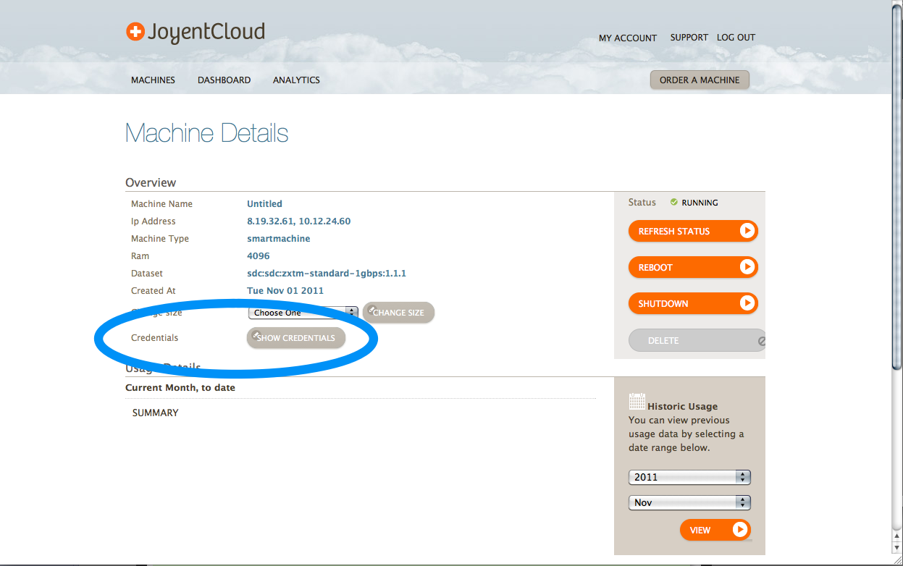
資料來源：Joyent Wiki
頁面：No.de+Version+2.mdA bunch of new features have come in this release, just in time for the second annual Node Knockout competition. We've designed this version of the no.de product in response to the feedback we've gotten from users of the existing system.
No Coupon Codes
That's right! You can sign up for the service, and provision right away without anyone's permission, or jumping through any extra hoops.
The codes served their purpose, and gave us a way to limit the influx of new users in the first few versions, but I think everyone is pretty happy to see them go.
If you were waiting in the queue to get a code, then the good news is that you don't need to wait any more. Just go provision a new no.de SmartMachine, and start pushing code onto it.
Proxied HTTP
In version 2, we're using Nodejitsu's http-proxy program, and have been very happy with it so far. For SSH access, we're assigning a specific port to every no.de machine.
The net result is that we can get a lot more mileage out of each physical machine.
For your purposes, it means that all HTTP requests will appear to come from the same req.socket.remoteAddress, so you'll have to look at the req.headers['x-forwarded-for'] and req.headers['x-forwarded-port'] headers instead.](For your purposes, it means that all HTTP requests will appear to come from the same req.socket.remoteAddress, so you'll have to look at the req.headers['x-forwarded-for' and req.headers['x-forwarded-port'] headers instead.)
And of course, this comes along with a new version of Cloud Analytics which can interpret these headers for you to show the origin of all your incoming HTTP requests on a heatmap in real time.
If you really need a public IP address for some reason, you can upgrade at any time to a full-on SmartMachine. There are lots of options to choose from.
No Space Commits: node-service-deploy
One of the biggest complaints we heard about a git-push deployment model is that sometimes you want to re-run the deployment process when something goes wrong. However, because of how git works, just running git push again won't actually do anything if there aren't new commits to push. So, what do you do? You add a space or a semicolon to a file, commit it with a message like, Something dumb just to restart the server, and then git push. It makes the commit history look pretty silly.
With the new version of the no.de service, you can manually run the node-service-deploy
script to run the deployment process at any time. The commit-ish argument defaults to master, so just running node-service-deploy is exactly like doing a git push, but without requiring an additional "space commit". npm Integration
If you provide a package.json file with a set of dependencies and a start script, then the no.de system will see that and make sure that your dependencies are installed, and run your start script. The default npm start script is node server.js if there's a server.js file present, so if you were doing things without a package.json file before, then it'll keep working as it did before.
Since your package gets started using npm, this also means that all the npm config information is available in process.env. To set a custom environment variable, you can put it in your package.json file in the config hash, or log in and run npm config set foo=bar in your machine.
A bunch more detail can be found on the wiki
Updated Platform
This release comes along with an update to the underlying operating system that powers Joyent's cloud, SmartOS. This means:
- Updates to the administration portal.
- New instrumentations in the Cloud Analytics system.
- Updated packages and operating system features on the machines.
Some of these changes should be mostly unnoticeable, but the added stability and introspection means that bugs and issues will be fewer and easier to fix.
The Past
If you had a no.de machine already, don't worry. There are no plans to take it away or make any changes to it.
However, if you want access to these newer features, you'll have to provision a machine on the new v2 system.
The Future
Stay tuned for more features and functionality coming to the no.de service in the future. SmartOS and SDC are under active development, and will keep getting better, and of course Node is moving at breakneck speed.
頁面：Node+install.mdNode.js安裝與使用
使用production模式
NODE_ENV=production node app.js必裝套件-Express
npm install express -gd cd /usr/local/lib/node ln -s ../node_module/express必裝套件-EJS
npm install ejs -gd cd /usr/local/lib/node ln -s ../node_module/ejsEclipse Plugin for Node.js
https://github.com/joyent/node/wiki/Using-Eclipse-as-Node-Applications-Debugger頁面：Node+reference.mdNode.js相關網站
TermKit（模擬主機端console之node實作品，原TermKit為Mac上很讚的終端軟體：[http://termkit.org/]）
](TermKit（模擬主機端console之node實作品，原TermKit為Mac上很讚的終端軟體：[http://termkit.org/）
)
http://carl830.pixnet.net/blog/post/78961929-linux-mint-%E5%AE%89%E8%A3%9Dtermkit]https://github.com/unconed/TermKit]
node.js伺服器實戰
From Kevin@Joyent
Tutorials
Videos
Introduction to Node.js with Ryan Dahl
Node.js: Asynchronous Purity Leads to Faster Development
Parallel Programming with Node.js
Server-side JavaScript with Node, Connect & Express
Books
Blogs
Podcasts
JavaScript resources
Crockford's videos (must see!)
Essential JavaScript Design Patterns For Beginners
JavaScript: The Good Parts book
Node Modules
Wiki List on Github/Joyent/Node (start here last!)
Search for registered node.js modules
頁面：Npm+Integration.mdAs of the August 2011 v2 release of no.de, npm is much more tightly integrated into the service.
server.js → package.json
Previously, you had to add a server.js file to your git repository and push it to no.de. Any dependencies had to be bundled and checked into git. This sometimes raised problems if the dependency had a .gitignore, or needed to be built on the target architecture.Also, some people didn't really want to have a single server.js file as the way to start their app. If you wanted to start it with cluster, or write your app in coffee-script, you'd have to bootstrap it with a server.js which was sometimes a bit clumsy.
In v2, if you have a package.json file, then you can specify dependencies, add custom configurations, and define a custom start command. Since the scripts.start member defaults to node server.js, the old style still works.
Also, if you define a server.js file, but no package.json, then the deploy system will create a package.json for you, and all will still be well.
See npm help json for everything you can put in your package.json file. For the purposes of this doc, what's most important are the dependencies, scripts.start, and config fields.
dependencies
Let's say you have something like this in your package.json file:
{ "name": "my-program" , "version": "1.2.3" , "dependencies": { "express": "2.0" } }When you push the code to your no.de machine, it'll set things up so that some version of express >=2.0.0 and <2.1.0 is installed and ready to be require()'d.
Binary dependencies can be specified as well, though since they can sometimes take a while to build, you may want to log in and pre-install them. More on that below.
scripts.start
Let's say that you like Coffee Script, and want to have the service run coffee server.coffee rather than a node server.js. No problem! Just add coffee-script as a dependency, and then the appropriate start script.
{ "name": "my-program" , "version": "1.2.3" , "dependencies": { "express": "2.0", "coffee-script": "1.1" } , "scripts": { "start": "coffee server.coffee" } }Just make sure that there actually is a server.coffee file in your repo, or else that'll of course fail.
config
There are a lot of times where you want to push some random config params to your service. When npm runs scripts, all of the config options and package.json fields are available in the environment. Since your server is started using the npm start command, this means that those settings are available to your no.de program.
Additionally, the config field in the package.json file can be used to supply per-package config fields that won't be overwritten in new versions. This makes it easy to configure your program to run differently on your laptop than it does on no.de. See the section entitled Per-Package Config Settings in npm help config.
For example, let's say that you had the following package.json:
{ "name": "my-program" , "version": "1.2.3" , "dependencies": { "express": "2.0" } } , "config": { "_some-private-api-key": "TESTING" , "server-environment": "development" } }Then your script would see the following items in process.env:
{ // ... lots of npm_config_var: 'value' ... npm_package_name: 'my-program', npm_package_version: '1.2.3', npm_package_dependencies_express: '2.0', npm_package_scripts_start: 'node server.js', npm_package_config__some_private_api_key: 'TESTING', npm_package_config_server_environment: 'development' }Note the double underscore in npm_package_config__some_private_api_key. That leading underscore means that it's a private configuration param that will not be shared with any other packages that may be installed on the zone. (Of course, since it's in the environment, it will be shared with any child processes, if you don't override the env.)
If you want to change some of those values, then ssh into your no.de machine, and do this:
npm config set my-program:server-environment="no.de" npm config set my-program:_some-private-api-key="the.actual.api.key"And then restart or redeploy your program.
Now, process.env will have these keys:
{ // ... lots of npm_config_var: 'value' ... // ... other npm_package_* values ... npm_package_config__some_private_api_key: 'the.actual.api.key', npm_package_config_server_environment: 'no.de' }and additional deploys will not override those configs, since they're stored outside of your package in the ~/.npmrc file.
Speeding Up Dependency Installs
If you have a lot of dependencies, then you may find that it takes a little while to deploy, since it has to fetch those every time. You can speed it up considerably by logging into your no.de machine, and installing those packages globally.
npm install -g express@2.0 request dnode socket.io async underscore vows mongodbThen, each deploy will use the same symlinked copy of those dependencies.
頁面：Npm+usage.mdNPM的安裝與操作
Node.js 的套件管理工具(Node Package Manager)可以讓 Node.js 的開發者直接利用、擴充線上的套件庫（packages registry），加速軟體專案的開發。此外npm 提供很友善的搜尋功能，可以快速找到及安裝需要的套件，當這些套件發行新版本時，npm 也可以協助開發者自動更新這些套件。
安裝NPM
利用下方指令安裝
#pkgin install npm
搜尋可附加的套件
Node.js是一個非常熱門的開發平台，有各式各樣的開放套件可以供用戶去下載安裝。而npm也提供了一個平台可以讓用戶去搜尋，用戶可以在網頁上看到最新、熱門、最多人用的套件下載或是建議等等。網站來源: https://npmjs.org/

安裝套件
我們以request.js來當作範例來安裝，輸入以下指令及可以安裝:
#npm install request -gd
PS: -g代表安裝到NODE_PATH裡的lib裏面，而-d代表把相依性套件也一起安裝檢視己安裝套件
安裝完成後Node.js所需要套件的安裝、升級、移除都靠npm這個套件來運作。我們可以利用npm list指令來看套件列表，在預設狀態下會顯示empty，而下圖範例已裝好一些套件:
# npm list
如果用戶在執行此指令時看到套件名稱前面有亂碼的產生，表示在預設狀態下的編碼是錯誤且無法讀取。用戶必須先在putty上先設定好編碼，如下圖:
更新套件
利用npm update來更新我們已有的套件，如下圖:
# npm update
移除套件
利用npm uninstall指令來刪除既有套件，以textlogin套件為例，如下圖:
# npm uninstall textlogin 頁面：Order+a+Machine.md
頁面：Order+a+Machine.md訂購主機
若您還未建立您的 SSH-Key 以及 付款方式 的資料填寫 ，請先建立完成。
SSH-Key 相關教學:Windows
付款方式 相關教學:付費方式
若您上述步驟皆已完成，即可進入此頁訂購主機。
- 首先您可以先從頁面左邊(即藍色框框)開始看起,其內容為 MiCloud 所有提供的機器類型、規格、服務項目以及各自的定價為何.
- 接著您可以於右邊紅色框框內開始選擇您想要購買的機器或服務,選擇完後可先看一看下方顯示的資訊(即黃色框框).
- 確認完成即可點選 Provision(綠色框框), MiCloud 會馬上幫您建立機器.
關於機器建立狀況與相關資訊可於 __[主機管理](Manage your Machines)
 頁面：Pay+way.md
頁面：Pay+way.md付款方式
付款方式分為企業付款、信用卡付款二種，詳細解說如下:
企業付款說明
企業付款方式僅提供合作或簽約夥伴，不適用於網路申請之用戶。

信用卡付款說明
[{arnaud.Flash src='v4.swf' width='700' height='550' controls='false' play='false' loop='false' }]
用戶皆可透過網路做信用卡認證，認證成功後即可訂購主機，未來帳單將從此張信用卡做扣款動作。
請確認您的帳單寄送地址是否正確!
請選擇您的信用卡與填寫相關資訊
完成後請確認您的卡號是否正確 頁面：Pay+with+business.md
頁面：Pay+with+business.md企業付款
如果您在個人資訊中選擇的是企業付款，在付款方式的頁面會請您連絡專人，如下圖
 頁面：Percona+install.md
頁面：Percona+install.md安裝Percona
MiCloud只有在SmartOS中有預載Percona的服務，用戶可參考以下的步驟，在Linux環境下安裝。
在CentOS中安裝Percona
1.將Percona的套件安裝至主機的套件庫中
#rpm -Uhv http://www.percona.com/downloads/percona-release/percona-release-0.0-1.x86_64.rpm
2.請搜尋Percona的套件，並安裝下方框起來的二個套件
#yum search percona
3.安裝Percona
# yum install Percona-Server-client-55.x86_64
# yum install Percona-Server-server-55.x86_64
4.請至etc下建立一個檔案，且命名為my.cnf，並加入下方列出的幾個設定
#vi /etc/my.cnf[mysqld]]([mysqld) plugin-load=handlersocket.so loose_handlersocket_port = 9998 # the port number to bind to (for read requests) loose_handlersocket_port_wr = 9999 # the port number to bind to (for write requests) loose_handlersocket_threads = 16 # the number of worker threads (for read requests) loose_handlersocket_threads_wr = 1 # the number of worker threads (for write requests) open_files_limit = 65535 # to allow handlersocket accept many concurrent # connections, make open_files_limit as large as # possible.
5.啟動服務
#service mysql start
6.設定root密碼
# mysqladmin -u root password 1qaz7.登入mysql
#mysql -uroot -p
在Ubuntu、Debian安裝Percona
1.下載Percona套件至套件套中並安裝
#gpg --keyserver hkp://keys.gnupg.net --recv-keys 1C4CBDCDCD2EFD2A #gpg -a --export CD2EFD2A | sudo apt-key add -
2.依照不同OS及OS版本，加入不同的設定至/etc/apt/sources.list中。
#vi /etc/apt/sources.list2-1 Ubuntu
a. Ubuntu10
deb http://repo.percona.com/apt lucid main deb-src http://repo.percona.com/apt lucid main
b. Ubuntu12
deb http://repo.percona.com/apt precise main deb-src http://repo.percona.com/apt precise main
2-2 Debian
deb http://repo.percona.com/apt squeeze main deb-src http://repo.percona.com/apt squeeze main
3.更新套件庫
#apt-get update
4.安裝Percona
#apt-get install percona-server-server-5.5 percona-server-client-5.5
5.設定root密碼
# mysqladmin -u root password 1qaz6.登入mysql
#mysql -uroot -p頁面：Percona+SmartMachine.mdThe Joyent Percona SmartMachine is a dynamically scalable virtual machine that is optimized for the cloud. It's based on a standard MySQL SmartMachine, with general software stripped down to bare minimum, and with Percona Server (MySQL) pre-installed and preconfigured for ultimate performance and scalability. Percona Server (MySQL) is better suited for cloud environments with its added features and performance enhancements.
The Joyent Percona Smartmachine is available in both Percona Server 5.1 and Percona Server 5.5. Both are 64-bit. The corresponding dataset templates in my.joyentcloud.com are as follows:
Percona 5.1: percona:1.0.7
Percona 5.5: percona:1.2.2
In this page:
Directory Layout
The directory layout is similar to a standard Joyent MySQL SmartMachine:
||Directory ||Description
|/mysql |Holds Percona Server MySQL binaries
|/databases |The data directory for MySQL
|/var/log/mysql |Where all MySQL logs are kept
|/backups |Backups files are stored here from Joyent QuickBackupStarting and stopping Percona Server (MySQL)
The Percona Server (MySQL) process is configured to run under SMF (Service Management Facility); the SmartOS way to stop and start services. See About the Service Management Facility.
Percona already comes started by default. To disable or stop the service:
# svcadm disable mysql:perconaTo enable or start the service:
# svcadm enable mysql:perconaTo restart the service:
# svcadm restart mysql:perconaConnecting to Percona Server (MySQL)
The Percona MySQL server is configured to listen on the private IP address. The private IP can be seen through the portal or by using ifconfig -a; it is the one that starts with 10.. It is strongly recommended that you connect to your Percona Server MySQL appliance from a different SmartMachine (such as a standard generic SmartMachine) using the private IP, regardless of whether from your website code directly (for regular use), or whether you set up phpMyAdmin on another SmartMachine for management or troubleshooting.
We recommend as a best practice that you not use ther MySQL root user. Instead, you should first set up a restricted user with the minimum privileges actually needed.
You can just connect to your appliance and log into MySQL using mysql using the MySQL root password when prompted:
# mysql -uroot -pSuch a connection takes place over a localhost UNIX socket.
Connecting to Percona Server (MySQL) using SSH tunnels
While you can re-configure your MySQL instance to listen on the public IP instead (or all available IPs), it is not recommended to do that for security reasons. Instead, you can use SSH tunnels for secure remote connections. Some MySQL administrator tools (e.g. Navicat) already provide for SSH tunneling functionality. You'd use these values when configuring such tool:
- SSH hostname:
- SSH port: 22 (should be default)
- SSH username (login): admin
- SSH password:
- MySQL hostname:
- MySQL port: 3306 (should be default)
- MySQL username: root (or a custom user your created)
- MySQL password:
To use 'ssh' in a terminal to open the tunneled connection instead:
ssh -L3336:<smartmachine-private-ip>:3306 -N admin@<smartmachine-hostname>You'd change 3336 to anything you like, that's the local port on your computer that you'll connect the MySQL client to afterwards.
Backing up MySQL with Joyent QuickBackup
Part of the Joyent Percona SmartMachine is Joyent QuickBackup, a fast non-blocking MySQL backup service powered by Percona Xtrabackup on the back end. This service comes already configured with the username and password configured, but disabled by default. You do not need to change the username and password settings. Only minute, hour, day, and expiredays need to be set.
To configure the backup service, use the svccfg command to set the following values. By default the service is set to backup every night at midnight
||Property ||Description ||Accepted Values ||Default Value
|quickbackup/username |MySQL user for QuickBackup |16 characters |qb-xxxxxxxx
|quickbackup/password |MySQL password for QuickBackup |41 characters |xxxxxxxxxxx
|quickbackup/minute |Minute of the hour to backup |0-60 comma separated or 'all' |0
|quickbackup/hour |Hour of the day to backup |0-23 comma separated or 'all' |0
|quickbackup/day |Day of the week to backup |sun-sat comma separated or 'all' |all
quickbackup/expiredays Number of days to keep backups 1-255 or 'none' |3
To see the current settings, use the svcprop command like this:# svcprop svc:/network/mysql:quickbackup | grep quickbackup | head -6 quickbackup/day astring all quickbackup/expiredays astring 3 quickbackup/hour astring 0 quickbackup/minute astring 0 quickbackup/username astring qb-xxxxxxxx quickbackup/password astring xxxxxxxxFor example, to have the service do a backup every 15 minutes of every hour Monday, Tuesday, Wednesday, Thursday, and Friday, you would use the following svccfg commands:
# svccfg -s network/mysql:quickbackup setprop quickbackup/minute = astring: 0,15,30,45 # svccfg -s network/mysql:quickbackup setprop quickbackup/hour = astring: all # svccfg -s network/mysql:quickbackup setprop quickbackup/day = astring: mon,tue,wed,thur,friAfter setting the properties use the svcadm command to refresh and restart the service:
# svcadm refresh mysql:quickbackup # svcadm restart mysql:quickbackup # svcs mysql:quickbackup STATE STIME FMRI enabled Apr_13 svc:/network/mysql:quickbackupEach backup will be its own file in /backups in files named %Y-%m-%d_%H-%M-%S-backup.tar.gz. The backup files contain all of the databases. A future release will let you back up specific databases.
QuickBackup backup messages are logged to /var/log/mysql/backups.log. If the backup completed successfully you will see:
Backup completed successfully.in the log file at the end of every back up.
At the end of every backup QuickBackup will do a clean up of old backup files and remove them if older than quickbackup/expiredays set. It does this by checking the last modification time of the backup file.
Restoring a MySQL backup with Joyent QuickBackup
To restore a backup you must first shut down the MySQL server:
# svcadm disable mysql:percona # svcs mysql:percona STATE STIME FMRI disabled 14:19:21 svc:/network/mysql:perconaNext, tell QuickBackup which backup you want to restore by giving it the proper file of the backup. If everything works as expected you'll see the message that the restore completed successfully:
# quickbackup restore /backups/2011-04-16_20-20-00-backup.tar.gz Restore from /backups/2011-04-16_20-20-00-backup.tar.gz Restore completed successfully.If you receive an error you'll need to check the QuickBackup restore log file at /var/log/mysql/restores.log to see what happened.
Once the restore is complete, re-enable MySQL, and everything will be running from the backup you just restored from:
# svcadm enable mysql:percona # svcs mysql:percona STATE STIME FMRI online 14:30:31 svc:/network/mysql:percona
資料來源：Joyent Wiki
頁面：Pkagin%C3%83%C3%82%C2%BA%C3%83%C3%83%C3%83.mdpkgin
pkgin這個command是關於SmartOS套件的相關安裝與維護指令。
您可以在putty或是類似的terminal工具連線至SmartOS後，輸入pkgin即可查詢pkgin的指令後面能接的command說明。
[root@MiCloudDBT /tmp]# pkgin]([root@MiCloudDBT /tmp# pkgin) Usage: pkgin [-cdfFhlnPvVy] command [package ...]](Usage: pkgin [-cdfFhlnPvVy command [package ...]) Commands and shortcuts: list (ls) - Lists installed packages. avail (av) - Lists available packages. install (in) - Performs packages installation or upgrade. update (up) - Creates and populates the initial database. remove (rm) - Remove packages and depending packages. upgrade (ug) - Upgrade main packages to their newer versions. full-upgrade (fug) - Upgrade all packages to their newer versions. show-deps (sd) - Display direct dependencies. show-full-deps (sfd) - Display dependencies recursively. show-rev-deps (srd) - Display reverse dependencies recursively. keep (ke) - Marks package as "non auto-removable". unkeep (uk) - Marks package as "auto-removable". show-keep (sk) - Display "non auto-removable" packages. search (se) - Search for a package. clean (cl) - Clean packages cache. autoremove (ar) - Autoremove orphan dependencies.
下面介紹幾個較常使用的command(list、search、install、remove):
List：
列出該台SmartOS您已經安裝的套件，輸入指令如下：
pkgin list
Search：
搜尋您想要安裝的軟體，輸入指令如下：
pkgin search [軟體名稱]](pkgin search [軟體名稱) ex:pkgin search postgre
Install：
安裝您剛剛搜尋到的套件，輸入指令如下：
pkgin install [套件名稱(使用pkgin search查詢)]](pkgin install [套件名稱 - 使用pkgin search查詢) ex:pkgin install postgresql90-adminpack-9.0.4
Remove:移除套件您已安裝的套件，輸入指令如下：
pkgin remove [套件名稱(使用pkgin list查詢)]](pkgin remove [套件名稱 - 使用pkgin list查詢) ex:pkgin remove postgresql90-adminpack-9.0.4
若您需要安裝的軟體在search時找不到相關的套件時，可使用以下指令：
wget [軟體壓縮檔連結網址]](wget [軟體壓縮檔連結網址) wget ftp://ftp.ruby-lang.org//pub/ruby/1.9/ruby-1.9.2-p0.tar.gz gtar xvzf [軟體壓縮檔]](gtar xvzf [軟體壓縮檔) gtar xvzf ruby-1.9.2-p0.tar.gz cd [軟體資料夾]](cd [軟體資料夾) cd ruby-1.9.2-p0 ./configure gmake ls sudo gmake install ruby -v頁面：PkaginúÃÃÃ.mdpkgin
pkgin這個command是關於SmartOS套件的相關安裝與維護指令。
您可以在putty或是類似的terminal工具連線至SmartOS後，輸入pkgin即可查詢pkgin的指令後面能接的command說明。
[root@MiCloudDBT /tmp]# pkgin]([root@MiCloudDBT /tmp# pkgin) Usage: pkgin [-cdfFhlnPvVy] command [package ...]](Usage: pkgin [-cdfFhlnPvVy command [package ...]) Commands and shortcuts: list (ls) - Lists installed packages. avail (av) - Lists available packages. install (in) - Performs packages installation or upgrade. update (up) - Creates and populates the initial database. remove (rm) - Remove packages and depending packages. upgrade (ug) - Upgrade main packages to their newer versions. full-upgrade (fug) - Upgrade all packages to their newer versions. show-deps (sd) - Display direct dependencies. show-full-deps (sfd) - Display dependencies recursively. show-rev-deps (srd) - Display reverse dependencies recursively. keep (ke) - Marks package as "non auto-removable". unkeep (uk) - Marks package as "auto-removable". show-keep (sk) - Display "non auto-removable" packages. search (se) - Search for a package. clean (cl) - Clean packages cache. autoremove (ar) - Autoremove orphan dependencies.下面介紹幾個較常使用的command(list、search、install、remove):
List：
列出該台SmartOS您已經安裝的套件，輸入指令如下：
pkgin list
Search：
搜尋您想要安裝的軟體，輸入指令如下：
pkgin search [軟體名稱]](pkgin search [軟體名稱) ex:pkgin search postgre
Install：
安裝您剛剛搜尋到的套件，輸入指令如下：
pkgin install [套件名稱(使用pkgin search查詢)]](pkgin install [套件名稱 - 使用pkgin search查詢) ex:pkgin install postgresql90-adminpack-9.0.4
Remove:移除套件您已安裝的套件，輸入指令如下：
pkgin remove [套件名稱(使用pkgin list查詢)]](pkgin remove [套件名稱 - 使用pkgin list查詢) ex:pkgin remove postgresql90-adminpack-9.0.4
若您需要安裝的軟體在search時找不到相關的套件時，可使用以下指令：
wget [軟體壓縮檔連結網址]](wget [軟體壓縮檔連結網址) wget ftp://ftp.ruby-lang.org//pub/ruby/1.9/ruby-1.9.2-p0.tar.gz gtar xvzf [軟體壓縮檔]](gtar xvzf [軟體壓縮檔) gtar xvzf ruby-1.9.2-p0.tar.gz cd [軟體資料夾]](cd [軟體資料夾) cd ruby-1.9.2-p0 ./configure gmake ls sudo gmake install ruby -v頁面：Pkgin+usage.mdpkgin
pkgin這個command是關於SmartOS套件的相關安裝與維護指令。
您可以在putty或是類似的terminal工具連線至SmartOS後，輸入pkgin即可查詢pkgin的指令後面能接的command說明。
[root@MiCloudDBT /tmp]# pkgin]([root@MiCloudDBT /tmp# pkgin) Usage: pkgin [-cdfFhlnPvVy] command [package ...]](Usage: pkgin [-cdfFhlnPvVy command [package ...]) Commands and shortcuts: list (ls) - Lists installed packages. avail (av) - Lists available packages. install (in) - Performs packages installation or upgrade. update (up) - Creates and populates the initial database. remove (rm) - Remove packages and depending packages. upgrade (ug) - Upgrade main packages to their newer versions. full-upgrade (fug) - Upgrade all packages to their newer versions. show-deps (sd) - Display direct dependencies. show-full-deps (sfd) - Display dependencies recursively. show-rev-deps (srd) - Display reverse dependencies recursively. keep (ke) - Marks package as "non auto-removable". unkeep (uk) - Marks package as "auto-removable". show-keep (sk) - Display "non auto-removable" packages. search (se) - Search for a package. clean (cl) - Clean packages cache. autoremove (ar) - Autoremove orphan dependencies.
下面介紹幾個較常使用的command(list、search、install、remove):
List：
列出該台SmartOS您已經安裝的套件，輸入指令如下：
pkgin list
Search：
搜尋您想要安裝的軟體，輸入指令如下：
pkgin search [軟體名稱]](pkgin search [軟體名稱) ex:pkgin search postgre
Install：
安裝您剛剛搜尋到的套件，輸入指令如下：
pkgin install [套件名稱(使用pkgin search查詢)]](pkgin install [套件名稱 - 使用pkgin search查詢) ex:pkgin install postgresql90-adminpack-9.0.4
Remove:移除套件您已安裝的套件，輸入指令如下：
pkgin remove [套件名稱(使用pkgin list查詢)]](pkgin remove [套件名稱 - 使用pkgin list查詢) ex:pkgin remove postgresql90-adminpack-9.0.4
若您需要安裝的軟體在search時找不到相關的套件時，可使用以下指令：
wget [軟體壓縮檔連結網址]](wget [軟體壓縮檔連結網址) wget ftp://ftp.ruby-lang.org//pub/ruby/1.9/ruby-1.9.2-p0.tar.gz gtar xvzf [軟體壓縮檔]](gtar xvzf [軟體壓縮檔) gtar xvzf ruby-1.9.2-p0.tar.gz cd [軟體資料夾]](cd [軟體資料夾) cd ruby-1.9.2-p0 ./configure gmake ls sudo gmake install ruby -v頁面：Preload+Software+Default+Password.md預載程式之預設密碼
登入 MiCloud 完成後能在畫面左上方點選主機，在從下方表格點選您的主機查看細項。
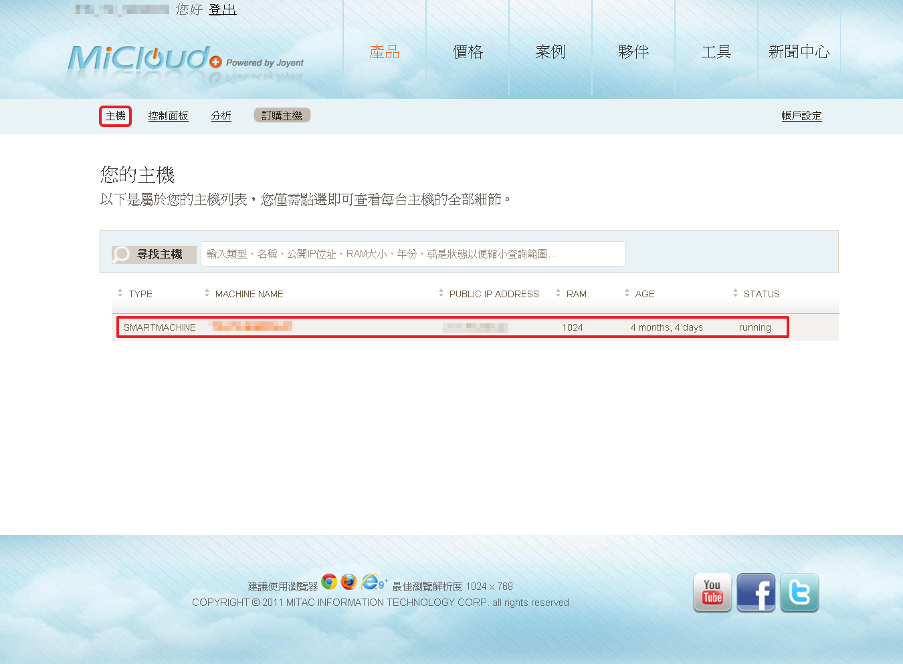
進入查詢細項頁面，可於 概述 中找到 Credentials 欄位,左鍵點擊 Show Credentials，查看該台主機預載程式之密碼。
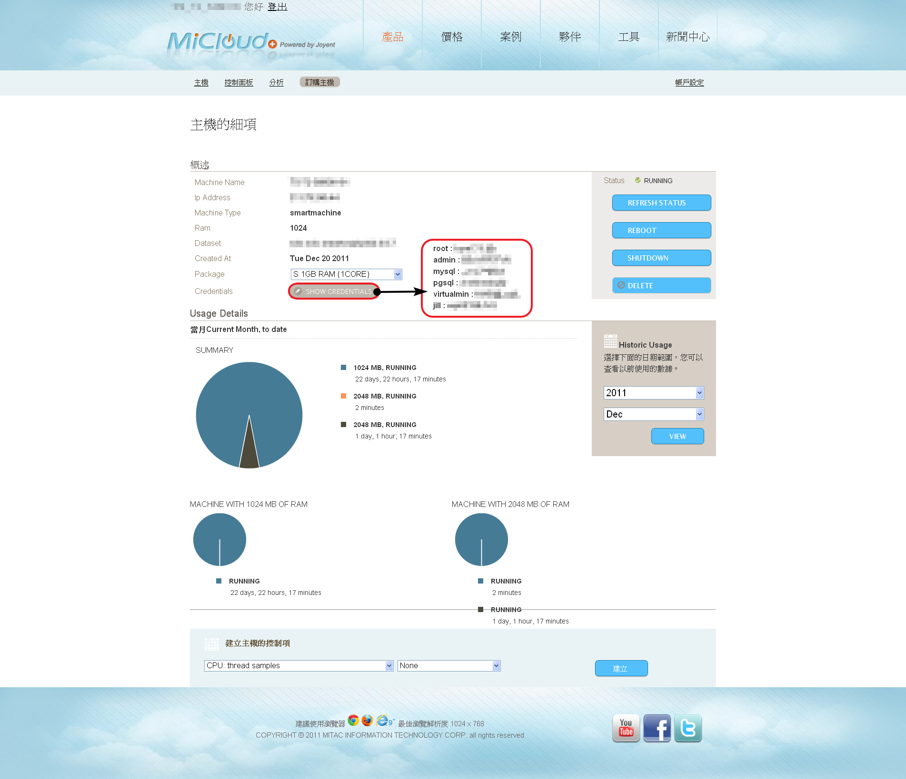登入帳號與密碼說明如下:
|| ||功能 ||登入帳號 ||登入步驟
| root |系統帳號 |root |登入：ssh root@your.ip.address
密碼：本表格root密碼
| admin |系統帳號 |admin |登入：ssh admin@your.ip.address
密碼：本表格admin密碼
| mysql |MySQL資料庫帳號 |root |登入：mysql -uroot -p
密碼：本表格mysql密碼
| pgsql |PostgreSQL資料庫帳號 |postgres |登入：/opt/local/bin/psql -U postgres
密碼：(此時輸入pgsql密碼欄位)
| virtualmin |Virtualmin系統管理工具帳號 |admin |啓動服務：svcadm enable webmin
連線：https://your.ip.address:10000/
帳號：admin
密碼：本表格virtualmin密碼
| jill |系統帳號 |jill |登入：ssh jill@your.ip.address
密碼：本表格jill密碼
| zxtm |負載平衡服務帳號 |admin |連線：http://your.ip.address:9090
帳號：admin
密碼：本表格zxtm密碼頁面：PuttyLoginErrorCannotAgreeAClientToServerCipher.mdPutty登入SmartOS錯誤訊息：Couldn't agree a client-to-server cipher
申請SmartOS之用戶，如遇到登入錯誤訊息如下：

則可能原因有數種，您可檢查下面項目：
確認SSH Key已經上傳，且本機之連線已經使用SSH私鑰加密。 針對SmartOS，您可重新產生SSH Key並重新上傳至Portal，應該就可以直些連線。
如上述均未能解決連線問題，您可確認Putty版本是否為最新，可至Putty官方網站下載新版本軟體，重新執行即可正常連線。 如均為您解決您的問題，可聯繫MiCloud Service
參考：- Putty官方網站
- [http://hub.opensolaris.org/bin/view/Community+Group+on/2009013001]](* [http://hub.opensolaris.org/bin/view/Community+Group+on/2009013001)
頁面：QNA.md常見問題
- PUTTY連線錯誤訊息：Cannot Agree A Client To Server Cipher
- SmartOS如何安裝Oracle
- 何謂Smart Machine?
- 如何更新主機時區？
- 如何檢視已使用的資源?
- 如何檢視網路路由?
- 常用指令集有哪些?
- MiCloud的特點是什麼？
頁面：README.mdMiCloud官方資源
MiCloud操作與文件
頁面：Rebooting+or+Shutting+Down+a+SmartMachine.mdThe best way to reboot your SmartMachine is in a way that gracefully shuts down all of your major servers (especially databases).
It is highly reccomend that on production servers you use this shutdown / reboot method from the command line:
- SSH into your SmartMachine as admin.
- Use this commnd to gracefully reboot your SmartMachine:
sudo shutdown -y -i6 -g0You will have to give the admin user's password.For development and testing systems you can also shut down or reboot your machine by using the Reboot or Shutdown buttons in my.joyentcloud.com:

資料來源：Joyent Wiki
頁面：Recovering+a+Forgotten+SmartMachine+Password.md如您忘記SmartMachine只密碼，您可以使用下面方式，透過Webmin來回復您的密碼:
https://<PUBLIC_IP>:10000/password-recoveryor
https://<HOSTNAME>:10000/password-recovery您可以參考相關影片片段：http://p.castfire.com/NTYYi/video/511969/511969_2011-02-14-160309.sd.m4v]
資料來源：Joyent Wiki
頁面：Riak+SmartMachine.md安裝Riak
Riak為開放式、高擴增性、可容錯的NoSQL資料庫套件，提供大量資料快速存儲服務，以開放程式碼為基礎的分散式資料庫系統。
MiCloud所提供的SmartOS主機中，已有預載Riak服務的主機只有SmartOS32+Riak這個版本，若其他規格的主機想安裝Riak於您的主機上，請按照下列步驟進行安裝。1.檢視主機上Riak可安裝的版本
#pkgin se riak
2.進行安裝
# pkgin in riak-1.0.2nb1
3.完成後啟動服務，但會發現服務的狀態為offline
#svcadm enable riak #svcs riak
請使用下方指令檢視服務無法啟動的原因#svcs -xv riak
4.啟動epmd服務，並將riak重新啟動
#svcadm enable svc:/network/epmd:default #svcadm disable riak #svcadm enable riak
5.檢視服務是否已啟動
#svcs riak
6.連線至riak
#riak attach 頁面：Running+a+Web+Server+on+a+SmartMachine.md
頁面：Running+a+Web+Server+on+a+SmartMachine.mdContent
頁面：Sandbox.mdSandbox

- test code block
aaaa bbbb cccc 1111 2222 3333 function(){ alert('Hello'); }
function(){ alert('Hello'); }
function(){
alert('Hello');
}頁面：Search+information.mdWindows察看主機資訊
申請MiCloud Windows Server之後，您會需要進入Windows Server上安裝與設定您所要提供的相關服務，MiCloud Customer Portal
查詢主機基本資料
1.登入 MiCloud
2.輸入您 MiCloud 的帳號密碼
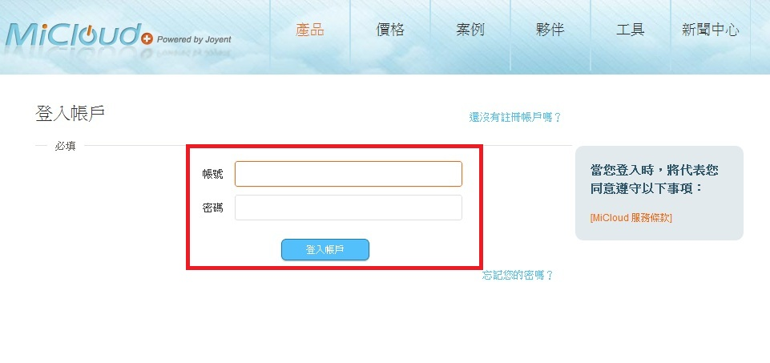
3.點選您的主機
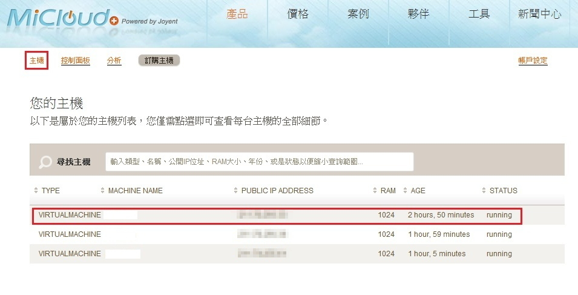
４.顯示其相關資訊,可點"SHOW CREDENTIAL"查看其登入帳密
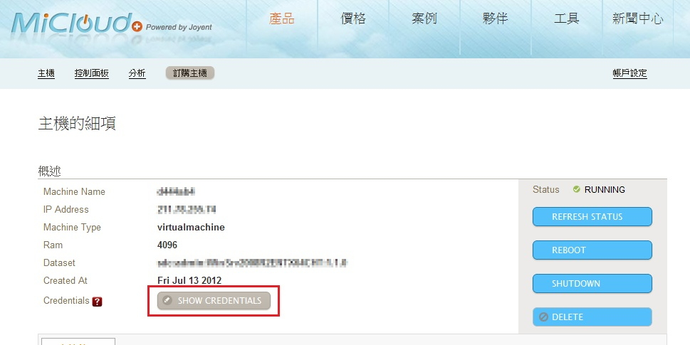
5.顯示其登入密碼
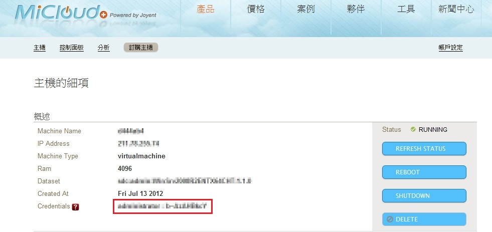頁面：Security+concerns.md使用MiCloud會不會有安全上的疑慮？
- MiCloud植基於Joyent公有雲架構，從SmartDataCenter的ZFS架構，使用Zone安全隔離每部虛擬機器的檔案空間，並加上網路上安全規劃的實體隔離，達到虛擬主機內部安全機制，並加上MiCloud特殊防火牆規劃，特別防護網路上多種攻擊，使您可放心使用MiCloud服務。
- 除平台上的安全，使用者於申請帳號時候的SSH Key亦保護擁有金鑰的使用者可以連線使用，並隔離所有無金鑰的駭客。
- 此外，主機的安全亦在神通嚴密的機房安全管理機制下(ISO 27001)受到嚴密的保護：
- *機房門禁進出管理
- *24小時監視錄影系統
- *24小時網路監控
- *防火牆之保護
- *機房電力、空調、保全、消防等全面品質管控
頁面：Security+with+IPFilter.md安全與IPFILTER
在您全新Joyent的Smartmachines預設虛擬NIC的網路和default情況下， 這意味著您必須在您的電腦的網路協定中進行相關設訂。 最安全的做法，是建立一台防禦主機或是VPN伺服器，並以後端存取訪問相關服務，如資料庫存取或是Web伺服器，並加載負載平衡器如Zeus/Stingray。
以下是以IPFILTER為您的SmartOS Smartmachine所做的基本的分配概況：
如何啟動與停止IPFILTER
以SmartOS的方式，在IPFILTER過程配置下運行的SMF（服務管理工具）進行停止和啟動服務。
查詢關於服務管理工具。IPFILTER是在default情況下禁用。 如何啟用，禁用，啟動或停止服務:
# svcadm enable ipfilter重新啟動該服務:
# svcadm restart ipfilter檢查服務的狀態:
# svcs -a | grep ipfilter online 20:49:27 svc:/network/ipfilter:defaultIPFilter相關範例規則
- IPFilter規則都包含在/ etc / IPF / ipf.conf
- src.ip.addr指定源頭和dest.ip.addr指定的目的地。
允許從一個特定的IP位址的進入:
pass in quick from src.ip.addr to dest.ip.addr允許從特定IP位址的進入到一個特定的Port：:
pass in quick from src.ip.addr to dest.ip.addr port=22允許ICMP只從一個特定的IP位址進入:
pass in quick proto icmp from src.ip.addr to dest.ip.addr keep state允許任何人從SmartMachine出去:
pass out from src.ip.addr to any keep state阻止一個特定的IP位址:
block in from src.ip.addr to dest.ip.addr阻止一個特定的範圍:
block in from src.ip.addr/xx to dest.ip.addr阻止從任何一個特定的IP進出:
block in from any to dest.ip.addr阻止ICMP只從一個特定的IP進入:
block in proto icmp from src.ip.addr to dest.ip.addr阻止所有從任何一個特定的port進出:
block in from any to dest.ip.addr port = (example:22)設置default的拒絕規則，阻止除了443和80以外的Port:
pass out from src.ip.addr to any keep state pass in quick from any to dest.ip.addr port=443 pass in quick from any to dest.ip.addr port=80 block in from any to dest.ip.addr只要使用XXXX / XX，而不是使用一個特定的IP，範圍可以適用於任何規則.
資料來源：Joyent Wiki
頁面：Server+Restart+From+Portal.md主機之重啟、關閉與刪除
MiCloud自助服務平台提供給您直接操控主機之重啟、關閉及刪除功能，在您登入MiCloud Customer Portal之後，您可以至主機頁面，點選您欲操控的主機，在右方控制面板中點選您所需要的服務。相關說明如下:
主機之重啟
在您登入MiCloud Customer Portal之後，您可以至主機頁面，點選您欲操控的主機，在右方控制面板中，點選"REBOOT"進行重啟。如下圖:

Reboot會經過關閉後再啟動主機，請用戶耐心等候。
主機之關閉
關閉主機可由MiCloud管理平台上點選shutdown按鈕，也可以使用指令進行關閉，相關說明如下:
1.由MiCloud管理平台上進行
同上主機管理頁面，點選"shutdown"進行關閉主機。如下圖:

※shut down後不代表終止合約，帳單仍會繼續計費，如要停止計費請執行DELETE刪除主機。如下圖提醒:

2.執行指令進行關閉
登入主機後使用指令來執行shutdown，指令如下:#poweroff以SmartMachine為例，執行畫面如下:
執行poweroff後會跳出下方黃色框框的警告視窗，提醒您主機已中斷連線。

再回到MiCloud平台上檢查主機是否已被關閉。

主機之刪除
同上主機管理頁面，點選"DELETE"按鍵後，系統將會移除您的主機。
※刪除主機前必需先Shut down主機後才能刪除。

刪除後主機及其上相關資料將無法回復，請確認後再執行。
 頁面：Setting+hostname+on+Linux.md
頁面：Setting+hostname+on+Linux.mdLinux Hostname設置
當您申請MiCloud上任何主機時，若未指定主機名稱，系統將預設以亂數產生一串文字做為您的主機名稱，可能類似：fxyzabcd.local的名稱。您可以以IP登入您的主機，並透過"hostname"之指令看到您的Hostname。
如您需要重設您的主機名稱，您可以修改某些檔案來達到修改Hostname的目的，不同的作業系統需要更改的檔案並不相同，詳細說明如下:Debian
您需要修改的檔案如下:
/etc/hostname /etc/hosts(1)修改/etc/hostname，指令如下:
#vi /etc/hostname於下方畫面紅色框框更改您新的主機名稱

(2)修改/etc/hosts，指令如下:
#vi /etc/hosts於下方畫面紅色框框更改您的主機名稱

(3)修改完後執行下方指令主機名稱即被更改。
#/etc/init.d/hostname.sh start當您設定好，您可以使用下面指令驗證：
#hostname
Ubuntu
您需要修改的檔案如下:
/etc/hostname /etc/hosts(1)修改/etc/hostname，指令如下:
#vi /etc/hostname於下方畫面紅色框框更改您新的主機名稱

(2)修改/etc/hosts，指令如下:
#vi /etc/hosts於下方畫面紅色框框更改您的主機名稱

(3)修改完後執行下方指令主機名稱即被更改。
#start hostname當您設定好，您可以使用下面指令驗證：
#hostname
CentOS
您需要修改的檔案如下:
/etc/sysconfig/network /etc/hosts(1)修改/etc/sysconfig/network，指令如下:
#vi /etc/sysconfig/network於下方畫面紅色框框更改您新的主機名稱

(2)修改/etc/hosts，指令如下:
#vi /etc/hosts於下方畫面紅色框框更改您的主機名稱

(3)當您設定好，並重開主機後，您可以使用下面指令驗證：
#hostname
Fedora
您需要修改的檔案如下:
/etc/sysconfig/network /etc/hosts(1)修改/etc/sysconfig/network，指令如下:
#vi /etc/sysconfig/network於下方畫面紅色框框更改您新的主機名稱

(2)修改/etc/hosts，指令如下:
#vi /etc/hosts於下方畫面紅色框框更改您的主機名稱

(3)當您設定好，並重開主機後，您可以使用下面指令驗證：
#hostname頁面：Setting+hostname+on+SmartOS.mdSmartOS Hostname設置
當您申請MiCloud上任何主機時，若未指定主機名稱，系統將預設以亂數產生一串文字做為您的主機名稱，可能類似：fxyzabcd.local的名稱。您可以以IP登入您的主機，並透過"hostname"之指令看到您的Hostname。
如您需要重設您的主機名稱，您可以修改某些檔案來達到修改Hostname的目的，詳細說明如下:
SmartMachine需要修改的檔案如下:
/etc/hosts：修改此檔案，讓您的主機本身認得此Hostname /etc/nodename：此檔案為主要Hostname所讀取的檔案
* /etc/inet/ipnodes：此檔案為/etc/hosts之symbolic link，主要存放主機靜態路由之IP/Name對應1.修改檔案：/etc/hosts (也是/etc/inet/ipnodes)，加上您主機之新名稱，並對應到::1、127.0.0.1與您的主機IP(視申請服務類型而定，您的主機可能擁有一個或一個以上的內部或外部IP)指令為:
#vi /etc/hosts於下方畫面紅色框框更改您的主機名稱

2.修改hostname設定檔：/etc/nodename，指令如下:
#vi /etc/nodename於下方畫面紅色框框更改您新的主機名稱

設定完畢後，重新開啓主機則會生效(您可以直接使用"reboot"指令重開或至自助服務平台
當您設定好，並重開主機後，您可以使用下面指令驗證：
※若您的服務需要對外提供時，您會需要設定DNS記錄，相關指令如下:#hostname請您先向信任之網域名稱服務公司申請DNS，並將您主機名稱的紀錄指定至您上面所設定的網域名稱(smartos.example.com)。
若您己有申請及設定好DNS服務，可以透過下面指令檢查您的網域名稱是否生效:
host + 網域名稱以micloud為例：
# host portal.micloud.tw
或者您可以透過nslookup檢查您的網域名稱是否與IP對應：
nslookup + 網域名稱以micloud為例：
# nslookup portal.micloud.tw 頁面：Setting+hostname+on+Windows.md
頁面：Setting+hostname+on+Windows.mdWindows Hostname設置
當您申請MiCloud上任何主機時，若未指定主機名稱，系統將預設以亂數產生一串文字做為您的主機名稱，可能類似：fxyzabcd.local的名稱。您可以以IP登入您的主機，並透過"hostname"之指令看到您的Hostname。
如您需要重設您的主機名稱，您可以修改某些檔案來達到修改Hostname的目的，詳細說明如下:
(1)點選開始，並且進入我的電腦，進入後點選上方工具，再點選資料夾選項

(2)由於更改Hostname所在的資料夾為隱藏檔，藉由以下方式可以顯示出來。
選擇檢視欄位後往下方選擇，可以找到”顯示所有檔案和資料夾”的選項，並點選套用。

(3)成功之後開啟我的電腦進入以下路徑
C: WINDOWS system32 drivers etc利用記事本或是Notepad++開啟hosts文件並且在文件內裡面的127.0.0.1 localhost底下加入您想設定新的hostname，儲存後即可使用新的hostname。
127.0.0.1 localhost 127.0.1.1 windows.example.com localhost頁面：Setting+IPFilter.md安全與IPFILTER
在您全新Joyent的Smartmachines預設虛擬NIC的網路和default情況下， 這意味著您必須在您的電腦的網路協定中進行相關設訂。 最安全的做法，是建立一台防禦主機或是VPN伺服器，並以後端存取訪問相關服務，如資料庫存取或是Web伺服器，並加載負載平衡器如Zeus/Stingray。
以下是以IPFILTER為您的SmartOS Smartmachine所做的基本的分配概況：
如何啟動與停止IPFILTER
以SmartOS的方式，在IPFILTER過程配置下運行的SMF（服務管理工具）進行停止和啟動服務。
查詢關於服務管理工具。IPFILTER是在default情況下禁用。 如何啟用，禁用，啟動或停止服務:
# svcadm enable ipfilter重新啟動該服務:
# svcadm restart ipfilter檢查服務的狀態:
# svcs -a | grep ipfilter online 20:49:27 svc:/network/ipfilter:defaultIPFilter相關範例規則
- IPFilter規則都包含在/ etc / IPF / ipf.conf
- src.ip.addr指定源頭和dest.ip.addr指定的目的地。
允許從一個特定的IP位址的進入:
pass in quick from src.ip.addr to dest.ip.addr允許從特定IP位址的進入到一個特定的Port：:
pass in quick from src.ip.addr to dest.ip.addr port=22允許ICMP只從一個特定的IP位址進入:
pass in quick proto icmp from src.ip.addr to dest.ip.addr keep state允許任何人從SmartMachine出去:
pass out from src.ip.addr to any keep state阻止一個特定的IP位址:
block in from src.ip.addr to dest.ip.addr阻止一個特定的範圍:
block in from src.ip.addr/xx to dest.ip.addr阻止從任何一個特定的IP進出:
block in from any to dest.ip.addr阻止ICMP只從一個特定的IP進入:
block in proto icmp from src.ip.addr to dest.ip.addr阻止所有從任何一個特定的port進出:
block in from any to dest.ip.addr port = (example:22)設置default的拒絕規則，阻止除了443和80以外的Port:
pass out from src.ip.addr to any keep state pass in quick from any to dest.ip.addr port=443 pass in quick from any to dest.ip.addr port=80 block in from any to dest.ip.addr只要使用XXXX / XX，而不是使用一個特定的IP，範圍可以適用於任何規則.
資料來源：Joyent Wiki
頁面：Setting+Nagios.md建置Nagios網路監控主機
Nagios是一套網路監控軟體，不僅可以監控主機(本地端或遠端)及服務，管理者可自行依需求來撰寫當監控主機或服務發生問題時的反應動作，例如.可以設置當服務出現問題時會透過電子郵件的方式通知管理人員，讓管理人員更快、精準掌握網路、主機設備等狀況。
Fedora
安裝Nagios及相關必要套件
前置作業：
新增一個使用者(nagios)做為程式的預設使用者
#useradd -m nagios
安裝Nagios及相關套件
a.安裝httpd、php，方便您可以透過網頁使用Nagios(Nagios需建置在apache中，故於安裝Nagios前先安裝)
#yum -y install httpd
#yum install php
b.安裝gcc套件(此套件在安裝Nagios時會做check動作，故於安裝Nagios前先安裝)
#yum -y install gcc
c.安裝Nagios
下載Nagios軟體
#wget http://prdownloads.sourceforge.net/sourceforge/nagios/nagios-3.4.1.tar.gz
解壓縮 (預設會建一個nagios目錄，並將檔案放在此目錄下)
#tar -xzf nagios-3.4.1.tar.gz切換至nagios目錄下，並透過configure、make進行編譯
#./configure
#make all
#make install #make install-init 使用make install來安裝主程序,CGI和HTML文件 #make install-commandmode 使用make install-init在/etc/rc.d/init.d安裝啟動腳本 #make install-config 使用make install-commandmode來配置目錄權限 #make install-webconfd.安裝nagios-plugins-1.4.11 套件
#wget http://prdownloads.sourceforge.net/sourceforge/nagiosplug/nagios-plugins-1.4.11.tar.gz
解壓縮檔 (預設會建一個nagios-plugins-1.4.11目錄，並將檔案放在此目錄下)
#tar -xzf nagios-plugins-1.4.11.tar.gz切換至nagios-plugins-1.4.11目錄下，並透過configure、make進行編譯
#./configure #make #make install設定
a.設定一個帳號，此帳號可以透過網頁登入做管理(帳號為nagios)
#htpasswd -c /usr/local/nagios/etc/htpasswd.users nagios
b.將上方的帳號加入cgi.cfg中，使此帳號有監控的權限。
#vi /usr/local/nagios/etc/cgi.cfg於下方參數中加入您的帳號(有多個帳號時請用逗號分開)
authorized_for_system_information=nagiosadmin,nagios authorized_for_configuration_information=nagiosadmin,nagios authorized_for_system_commands=nagiosadmin,nagios authorized_for_all_services=nagiosadmin,nagios authorized_for_all_hosts=nagiosadmin,nagios authorized_for_all_service_commands=nagiosadmin,nagios authorized_for_all_host_commands=nagiosadmin,nagios
c.設定系統有異常時，通知的email。請編輯contacts.cfg檔，在下圖中紅色框框的地方輸入被通知的email地址
#vi /usr/local/nagios/etc/objects/contacts.cfg
檢查設定檔是否有問題
#/usr/local/nagios/bin/nagios -v /usr/local/nagios/etc/nagios.cfg
d.將nagios加入chkconfig中，方便查詢及開啟服務
#chkconfig --add nagiose.將nagios設定於開機時自動啟動
#chkconfig nagios onf.啟動nagios
#service nagios startg.啟動httpd並更改開機自動啟動此服務
#service httpd start #chkconfig httpd onh.關閉防火牆，網頁才能正常開啟，並設置防火牆於開機時不自動啟動
#/etc/init.d/iptables stop #chkconfig iptables off驗證
a.請在瀏覽器上，輸入http://192.168.xxx.xxx/nagios/ ，輸入您設置好的帳號及密碼

成功登入之頁面
b.監控Services
安裝完成後，您會發現http服務會有一個警告訊息如下圖紅色框框的部分
原因:
雖然http服務正常，但預設apache網頁目錄/var/www/html沒有相關的index.html檔，才會出現這個警告請在此目錄下加入一個空的index.html，幾分鐘後警告即被排除，指令如下:#touch /var/www/html/index.htmlc.驗證是否收到系統報警通知

由上方service監控畫面上，可以看出Swap Usage為Critical，故Nagios會自動發信至您之前設定的郵件地址，信件內容如下 頁面：Setting+SMF+on+SmartOS.md
頁面：Setting+SMF+on+SmartOS.md在SmartOS上設置SMF
SmartOS中的服務管理功能 (Service Management Facility, SMF)，類似於Linux系統中init.d的service架構，使用者可透過SMF的管理，系統會依設定來開啟會暫停每個服務。 本範例為如何建立一個服務加入SMF中。
若要執行一項服務，首先必須設置一個腳本，透過腳本即可設定服務的狀態，SMF中所使用之腳本的檔案類型為xml。以下將透過下載一個腳本做為範例，我們將利用此下載的腳本來修改為我們需要的腳本並進行測試及驗證。
下載腳本範例(manifest)
#wget --no-check-certificate http://github.com/isaacs/joyent-node-on-smart-example/raw/master/node-hello-world-service-manifest.xml設定服務
以自建服務至主機為範例，必須修改的指令如下。
# vi noode-hello-world-service-manifest.xml更改部分如下:
1.修改設定服務名稱，由node-hello-world-service 改為testSMF。 原設定：<service_bundle type="manifest" name="node-hello-world-service"> 修改為：<service_bundle type="manifest" name="testSMF"> 2.修改SMF服務啟動時，服務中的狀態名稱: 原設定：<service name="site/node-hello-world-service" type="service" version="1"> 修改為：<service name="site/testSMF" type="service" version="1"> 3.在執行服務的路徑中，可設定所需執行檔案的資料夾中: 原設定：<method_context><working_directory="/home/admin/hello-world"> 修改為：<method_context><working_directory="/root/testSMF"> 4.設定user以及group中，可以執行的名稱，原範例是admin及staff，我們將他們皆設定為root。 原設定：<method_credential user="admin" group="staff" privileges='basic,net_privaddr' /> 修改為：<method_credential user="root" group="root" privileges='basic,net_privaddr' /> 5.設定執行檔路徑變數，我們的範例是Nodejs服務，故需建立Nodejs執行檔的路徑。 原設定：<envvar name="PATH" value="/home/admin/local/bin:/usr/local/bin:/usr/bin:/usr/sbin:/bin"/> 修改為：<envvar name="PATH" value="/opt/node/bin:/usr/local/bin:/usr/bin:/usr/sbin:/bin"/> 6.設定目錄的環境變數: 原設定：<envvar name="HOME" value="/home/admin"/> 修改為：<envvar name="HOME" value="/root"/> 7.設定執行檔的路徑: 原設定：exec="/opt/local/bin/node /home/admin/hello-world/server.js" 修改為：exec="/opt/local/bin/node /root/testSMF/server.js "上述修改的位置如下方黃色框框所示:

驗證服務啟動
完成以上步驟後，開始驗證此自訂服務並將其服務匯入SMF，其指令如下:
# svccfg import node-hello-world-service-manifest.xml
檢視匯入服務狀態，指令如下:
# svcs –a | grep testSMF
從上方擷圖可看出，testSMF已成功匯入，但未啟動。利用svcadm指令來啟用服務，並且再次檢視服務狀態，online表示已啟動:
# svcadm enable testSMF # svcs–a | grep testSMF
刪除已匯入的SMF
刪除服務之前，須先關閉後，方可進行刪除動作。
(1) 關閉 testSMF 服務
# svcadm disable testSMF # svcs testSMF
(2) 刪除 testSMF服務
# svccfg delete testSMF # svcs testSMF 頁面：Setting+the+Host+Name+of+a+SmartMachine.md
頁面：Setting+the+Host+Name+of+a+SmartMachine.md當您申請MiCloud上SmartMachine(或其他)主機時，當您未指定主機名稱時，系統將預設以一亂數產生您的主機名稱，可能類似：fxyzabcd.local的名稱，您可以以IP存取您的主機，並透過"hostname"之指令看到您的Hostname。
如您需要重設您的主機名稱，在SmartOS上，您可以修改下面幾個檔案來達到修改Hostname的目的：
/etc/hosts：修改此檔案，讓您的主機本身認得此Hostname /etc/nodename：此檔案為主要Hostname所讀取的檔案
* /etc/inet/ipnodes：此檔案為/etc/hosts之symbolic link，主要存放主機靜態路由之IP/Name對應修改檔案：/etc/hosts (也是/etc/inet/ipnodes)，加上您主機之新名稱，並對應到::1、127.0.0.1與您的主機IP(視申請服務類型而定，您的主機可能擁有一個或一個以上的內部或外部IP)
/etc/hosts # ident "@(#)hosts 1.7 06/08/01 SMI" # # Internet host table # ::1 localhost 127.0.0.1 localhost 10.19.xxx.xxx fxyzabcd loghost 8.19.xxx.xxx myserver.example.com修改hostname設定檔：/etc/nodename，:
# vi /etc/nodename修改設定檔內容為您新的主機名稱：
myserver.example.com設定完畢後，重新開啓主機則會生效(您可以直接使用"reboot"指令重開或至自助服務平台
當您設定好，並重開主機後，您可以以下面指令驗證：
hostname設定外部DNS對應
當您服務需要對外提供時，您會需要設定DNS記錄，此部分請向您信任之網域名稱服務公司申請，並將您主機名稱之紀錄指定至您上面所設定之網域名稱(myserver.example.com)，如您有申請及設定好DNS服務，可以透過下面指令檢查您的網域名稱是否生效：
host myserver.example.com回應範例：
# host portal.micloud.tw portal.micloud.tw has address 211.78.245.68或者您可以透過nslookup檢查您的網癒名稱是否與IP對應：
nslookup myserver.example.com回應範例：
# host portal.micloud.tw portal.micloud.tw has address 211.78.245.68 [root@211-78-245-44 ~]# nslookup portal.micloud.tw]([root@211-78-245-44 ~# nslookup portal.micloud.tw) Server: 8.8.8.8 Address: 8.8.8.8#53 Non-authoritative answer: Name: portal.micloud.tw Address: 211.78.245.68
資料來源：Joyent Wiki
頁面：Setting+the+Host+Name+on+a+Linux+Machine.mdYou set the name of your machine when you order it on my.joyent.com. If you want to change the name later on, follow the instructions for the Linux distribution you're using.
__
You need to be logged in as root or be using sudo to change the host name.__
Debian
- Set the host name in the /etc/hostname file:
echo "debian.example.com" > /etc/hostname- Using and text editor, edit the file /etc/hosts so that the hostname points to the loopback address:
127.0.0.1 localhost 127.0.1.1 debian.example.com localhost # The following lines are desirable for IPv6 capable hosts ::1 localhost ip6-localhost ip6-loopback fe00::0 ip6-localnet ff00::0 ip6-mcastprefix ff02::1 ip6-allnodes ff02::2 ip6-allrouters ff02::3 ip6-allhosts- Run the host name initialization script.
/etc/init.d/hostname.sh startUbuntu
- Set the host name in the /etc/hostname file:
echo "debian.example.com" > /etc/hostname- Using and text editor, edit the file /etc/hosts so that the hostname points to the loopback address:
127.0.0.1 localhost 127.0.1.1 ubuntu.example.com localhost # The following lines are desirable for IPv6 capable hosts ::1 localhost ip6-localhost ip6-loopback fe00::0 ip6-localnet ff00::0 ip6-mcastprefix ff02::1 ip6-allnodes ff02::2 ip6-allrouters ff02::3 ip6-allhosts- Run the host name initialization script.
start hostnameCentOS
- Using any text editor, edit the file /etc/sysconfig/network so that the HOSTNAME line contains your fully qualified domain name:
NETWORKING=yes NETWORKING_IPV6=no HOSTNAME=centos.example.com- Edit the file /etc/hosts so that the host name points to the loopback addresses:
# Do not remove the following line, or various programs # that require network functionality will fail. 127.0.0.1 centos localhost ::1 centos localhost6- Reboot your machine by either using the reboot command or by going to my.joyent.com and clicking the Reboot button.
頁面：Setting+the+Host+Name+on+a+Windows+Server.mdTBD
頁面：Setting+the+Node.js+Version.mdYour Node.js™ SmartMachine uses two ways to determine the version of Node.js you use.
One mechanism controls the version of Node.js used in your login environment as when you SSH into your Node.js SmartMachine and use npm to install packages.
The other controls the version that's used when you push a new version of your application and your application runs.
In most cases you will want both mechanisms to point to the same version of Node.js. But in some situations, you may want to ensure that your application runs with a specific version of Node.js.
By default, your Node.js SmartMachine uses the latest stable version of Node.js.
In this page:
Changing the nodejs Symlink
The /home/node/local/nodejs symlink points to the directory that contains the version of Node.js used when you log in to your Node.js SmartMachine. This is the version the npm looks at when you install packages
To make sure that you're always using the latest version of node, see that /home/node/local/nodejs points to the latest version:
cd ~/local rm nodejs ln -s /opt/nodejs/latest nodejsYou can use any of the version designators described in Which Versions Are Available?.
Be careful when using tab expansion to set up the symlink. What you're linking to is actually a directory, and if you include the trailing slash, you will get an error when you push your changes.ln -s /opt/nodejs/v0.4.1/ nodejs # DO NOT DO THISUsing config.json to Select the Version Your Application Uses
If your application must use a specific version of Node.js, add a file named config.json that contains the following:
config.json { "version": "v0.2.6" }When you push the change to your Node.js SmartMachine, your application runs with the version you selected:
$ git push joyent Counting objects: 5, done. Delta compression using up to 4 threads. Compressing objects: 100% (2/2), done. Writing objects: 100% (3/3), 310 bytes, done. Total 3 (delta 0), reused 0 (delta 0) remote: Starting node v0.2.6... remote: Successful To ssh://node@example.no.de/home/node/repo e22d59d..305730f master -> masterIf your repository does not contain a config.json, it uses the /home/node/local/nodejs symlink.
Which Versions Are Available?
To find out which Node.js versions are available, log in to your Node.js SmartMachine and look at the file /opt/nodejs/NODE-BUILDS.
/opt/nodejs/NODE-BUILDS $ cat /opt/nodejs/NODE-BUILDS v0.5.3 v0.5 unstable v0.5.2 v0.5.1 v0.5.0 v0.4.11 v0.4 edge latest stable v0.4.10 v0.4.8 v0.4.9 v0.4.7 v0.4.6You can use these special version values to make sure that you're always using the most recent version of Node.js for your requirements:
||Version Values ||Description
|vX.Y.Z |Always use this particular version of Node.js
|vX.Y |The latest version for that series. For example, v0.4 refers to v0.4.1. If there are bug fixes and the version bumps to v0.4.2, your application will take advantage of those bug fixes.
|latest stable |Your application will always use the latest stable version of Node.js suitable for production work.
|edge |The cutting edge version of Node.js. Includes all the latest features, but may be buggy.
資料來源：Joyent Wiki
頁面：Setting+Up+a+New+Domain.md此部分展示如何使用Webmin與您的網域名稱連結，並透過Webmin設定FTP：http://p.castfire.com/NTYYi/video/511915/setting-up-new-domain-mov_2011-02-14-142915.sd.m4v]
資料來源：Joyent Wiki
頁面：Setting+Up+Your+SmartMachine.mdYou have root access so you are free to do anything within the Cloud Hosting AUP.
This guide attempts to describe setting up the following core functionality on an SmartMachine as well as providing more general information for new users.
In this page:
Setting Up Your Domain Name (DNS)
Each SmartMachine comes with a dedicated public and private IP address, found in your machine details in your portal.
Many domain registrars such as Gandi (http://www.gandi.net) offer the ability to use their nameservers and offer an interface to edit your DNS zone file to set up your domain. The following examples are based on the options provided by Gandi.
To establish the link between your domain name and public IP, you must specify what is known as an "A record", this is done with the following two lines in BIND 9 format (for Gandi, these can be entered in their "Expert" interface):
domain.name. 3600 IN A 1.2.3.4 * .domain.name. 3600 IN A 1.2.3.4Note the full-stop (or period) after your domain name.Make sure to replace domain.name with your own domain and 1.2.3.4 with your public IP. The 3600 is known as the Time To Live (TTL) and sets your A record to expire after 1 hour (3600 seconds) so that you can make changes and hopefully see it reflected online without too much delay.
The second line is known as a wildcard entry which ensures that anyone attempting to go to anything.domain.name will also be correctly resolved.
Note that those two lines may be abbreviated to the following:
@ 3600 IN A 1.2.3.4 * 3600 IN A 1.2.3.4Do not worry as they are equivalent.
(See "Setting Up E-mail" below for information on MX records.)
Once enough time has passed for your changes to have been propagated to your ISP's DNS servers, you should be able to access your SmartMachine via your domain rather than its IP.
Hostname vs SmartMachine name and reverse record
1.Run these commands at the shell prompt to find out:
a.What is my hostname?hostnameb.What is my SmartMachine name?
zonenamec.What is my IP?
cat /etc/hostsOut of the box your SmartMachine will have its hostname set to an internal ID of the format zonename.joyent.us.
You are able to access your SmartMachine by IP or http://zonename.joyent.us. It is recommended that you change your hostname to one of your own choosing (example.com). This is necessary if you want to send email from your SmartMachine (forum post).You do need to submit a support ticket to get your reverse PTR record set to your domain name. This is only really needed if you are going to be using your SmartMachine to send emails.When submitting the ticket for any DNS related action please include the whois information which proves that you are the owner or technical contact for the name.Changing your hostname
In the following files replace the zonename.joyent.us with your new domain name (example.com). Be very careful when editing these files. If your name has not be changed after the reboot, make sure that there are no extra spaces or lines (for example do not comment out things in /etc/nodename).
sudo nano /etc/nodename sudo nano /etc/hosts sudo nano /etc/inet/ipnodes1.(the last file might already be changed with the edit to hosts file). If you haven’t added your user to the sudoers list, you can su root then /opt/local/bin/nano /etc/nodename etc. If /etc/nodename is blank just add your new domain name (& nothing else).
2.reboot
3.run at the command line:hostnameyour new name should display
4.from another machine (local machine is fine) runhost domain.tldwhere domain.tld is the answer from hostname in the previous step. That should return the IP of your server.
If you are using PHP you may have to change the hostname in your php.ini file to reflect your new hostnameRunning Webmin
Log into Webmin as admin with the details supplied in your systems credentials virtualmin password. (this should be a URL similar to https://1.2.3.4:10000)
The files are located in /home/jill/web/public.
Create a new Virtual Server
select Create Virtual Server from the menu on the left.
- Fill in the New virtual server details fields with:
a. your domain name (example.joyeurs.com)
b. a simple description
c. administration password
d. Administration custom username (example) - Fill in the Advanced options
a. Group for mailbox users Custom group name (example) - Quotas and limits
a. Adjust the quotas if needed - Enabled features
a. Accept mail for domain (if you want email)
b. Setup log file rotation (select) - leave the rest of the settings at their default settings
- Select Create Server
You are now able to ssh in as example@X.X.X.X with the password entered in step 1.III.
ssh example@X.X.X.XYou now have a /home/example directory which is looks very close to a Shared SmartMachine.
ls /home/example Maildir cgi-bin etc fcgi-bin homes logs svn webTest out the site
Point your browser to your newly created domain and see that the test page renders properly. You should see that the file is located at /home/example/web/public/index.php.
Uploading your web content
You are now ready to upload your customized content into the ~/web/public directory. Use your favorite SFTP application using your newly created domain name as the user. The IP of the SmartMachine for the host and the password you entered in step 1.III when creating the domain.
Common technologies such as PHP5 and Subversion are already installed and configured and ready to use with web hosting so you should be able to serve PHP files from the start.
Just what is running?
There are a couple of ways to check on what is running. See this guide for details about being reboot ready and what the various states mean.
From Webmin
Start Virtualmin from https:/X.X.X.X:10000/
- Select Webmin on the upper left
- Under System select Service Management Facility Configuration
- *Any items which are in maintenance will appear at the top of the list
- *Any items which are offline appear in yellow below the maintenance items and above the online items
From the Command line
- To see a list of services
#svcs -a- To stop a service
svcadm disable NAME- To restart a service
svcadm enable NAME- To to clear a service from maintenance
svcadm clear NAMEThe service should then go offline and if all is well return to online.
* To see what services are in maintenance and whysvcs -x- To see all processes for a service
svcs -p NAMESending root's email to a real user
root will get the output from the cron jobs and other system messages. It is recommended to change root's email to be sent to a real user which is read on a regular basis.
Postfix changes
- Run Virtualmin/Webmin.
- Select webmin link on the upper left
- Select Servers->Postfix on the left side
- *Select General Options
- **Internet Hostname of this Mail system set to Default (provided by system)
- **Select Save and Apply
- *Select Mail Aliases
- **Select Create a new Alias at the bottom
Address: root Alias to: Email Address REAL_USERNAME- **Select save at the bottom
- **Select Save and Apply above the list of aliases
You could also edit /opt/local/etc/postfix/aliases and run the newaliases command
Trouble shooting
Check that
tail -f /var/log/syslogis not showing any error messages
Setting Up E-mail
Managing a mail server is a significantly bigger undertaking than hosting a web site particularly when it comes to dealing with spam and the problems it causes. It is therefore not recommended that you run a mail server on your SmartMachine. You are instead advised to use external services such as Joyent's own Connector or Shared Hosting. Do this by altering your A and MX DNS records (external to Joyent).If, however, you do decide to run your own mail server, here are basic instructions to get started. This also AssUMes you have followed the instruction above. If you are jumping straight to this section, please review the earlier steps to make sure you are ready to enable email. Specifically renaming the hostname.
MX Record
In order for mail to be sent to your e-mail address(es) on your SmartMachine, you will need to set up an MX record in your DNS zone file. You need to add the following lines (where domain.name is your domain and 1.2.3.4 is your SmartMachine's public IP):
domain.name. 1200 IN MX 10 mail.domain.name. mail.domain.name. 1200 IN A 1.2.3.4the full-stop (or period) after the domain name. As MX records should not point directly at an IP address, we instead use a sub-domain which, in turn, points to your SmartMachine's public IP. Once these changes to your DNS have propagated to servers, you should begin receiving mail on your SmartMachine.Testing it out
From your local machine make sure that the mail host is reported properly like so:
$host example.joyeurs.com example.joyeurs.com has address 1.2.3.4 example.joyeurs.com mail is handled by 10 mail.example.joyeurs.com.Adding email users
To add accounts and aliases, use the Virtualmin interface to do so. The only extra bit of work you need to do is to enable Courier so that you can use your mail client of choice to connect to your SmartMachine's mail server.
Testing it out
In both cases you are looking for the OK. If you don't get that then review the steps listed above. If you are still stuck, then google on the response to see what others have to say.
POP3
From your local machine see that port 110 is responding correctly:
$ telnet example.joyeurs.com 110 Trying 1.2.3.4... Connected to example.joyeurs.com. Escape character is '^]'. +OK Hello there. ^] telnet> Connection closed.POP3-SSL
From your local machine see that port 995 is responding correctly (A cert is returned):
openssl s_client -ssl3 -connect example.joyeurs.com:995IMAP
You may have to first start your IMAP server. To do this you log into your SmartMachine as the user admin and run this command: sudo svcadm enable /network/courier:imapFrom your local machine see that port 143 is responding correctly:
$ telnet example.joyeurs.com 143 Trying 1.2.3.4... Connected to example.joyeurs.com. Escape character is '^]'. * OK [CAPABILITY IMAP4rev1 UIDPLUS CHILDREN NAMESPACE THREAD=ORDEREDSUBJECT THREAD=REFERENCES SORT QUOTA IDLE ACL ACL2=UNION STARTTLS] Courier-IMAP ready. Copyright 1998-2005 Double Precision, Inc. See COPYING for distribution information.](* OK [CAPABILITY IMAP4rev1 UIDPLUS CHILDREN NAMESPACE THREAD=ORDEREDSUBJECT THREAD=REFERENCES SORT QUOTA IDLE ACL ACL2=UNION STARTTLS Courier-IMAP ready. Copyright 1998-2005 Double Precision, Inc. See COPYING for distribution information.) IMAP-SSL From your local machine see that port 993 is responding correctly (A cert is returned): openssl s_client -ssl3 -connect example.joyeurs.com:993 Troubleshooting === 1. Seeing errors like this in /var/log/syslogOct 20 21:22:57 example.joyeurs.com postfix/smtp[2076]: [ID 197553 mail.info] 2E35E2F68: to=linda@example.com, relay=mail.example.com[8.12.37.104], delay=0, status=deferred (host mail.example.com[8.12.37.104] said: 450 4.7.1 Client host rejected: cannot find your reverse hostname, [8.12.36.201] (in reply to RCPT TO command))](Oct 20 21:22:57 example.joyeurs.com postfix/smtp[2076: [ID 197553 mail.info] 2E35E2F68: to=linda@example.com, relay=mail.example.com[8.12.37.104], delay=0, status=deferred - host mail.example.com[8.12.37.104] said: 450 4.7.1 Client host rejected: cannot find your reverse hostname, [8.12.36.201] - in reply to RCPT TO command)
You need to submit a ticket requesting the PTR reverse record added. When it is correct then doing host domain.tld and the host X.X.X.X will correctly resolve as shown below$ host example.joyeurs.com
example.joyeurs.com has address 8.12.36.201
example.joyeurs.com mail is handled by 10 mail.example.joyeurs.com.
$ host 8.12.36.201
201.36.12.8.in-addr.arpa domain name pointer example.joyeurs.com.Subversion === Set up your Subversion repositories using "SVN Repositories" under the "Services" menu of Virtualmin and grant repository access to users much as you would on Joyent Shared Hosting with "Edit Mail and FTP Users". Securing Your SmartMachine === Joyent recommend that you change your various passwords on your SmartMachine; for instructions on how to do this, see Changing Passwordskeep in mind the usual advice regarding the selection of strong passwords. This is the recommended method
apg -t -m 12 -M NCLAs you will be using SSH to access your SmartMachine, it is also a good idea to take advantage of SSH's public key authentication instead of relying on using passwords. If you decide to rely on keys entirely and wish to disable password authentication. Edit this file:sudo nano /etc/ssh/sshd_config
Setting both of these values to no (More detail on [Disable SSH Password Authentication].)](Setting both of these values to no - More detail on [Disable SSH Password Authentication.) #PasswordAuthentication #PAMAuthenticationViaKBDInt MySQL remote access === You are able to create a tunnel from your local machine to the remote machine. For example say you are on an OSX machine ([see this guide for all platforms]) then:](You are able to create a tunnel from your local machine to the remote machine. For example say you are on an OSX machine - [see this guide for all platforms then:)ssh -L3307:127.0.0.1:3306 -p 22 -N -t -x user@example.joyeurs.us
will create a tunnel from local port 3307 to remote port 3306 on example.joyeurs.us. The only thing you need to change in the user@example.joyeurs.us on the line above. In another terminal you are able to connect to the remote mysql database.mysql -u username -ppassword -h 127.0.0.1 -P 3307
```
資料來源：Joyent Wiki
頁面：Share+by+qrtt1.md聖藍科技分享文章
感謝聖藍科技使用MiCloud服務，透過CloudAPI提供聖藍科技自動Scale之功能以架構多媒體影音服務，以下文章轉載自qrtt1 github repository本文
簡介
最近在蒐集國內 IaaS 的資料，目前只看到 MiCloud 有提供 API。依照「沒有釋出API，就不能稱得上是真正的IaaS服務。」 那目前 MiCloud 算是國內的『真。IaaS』MiCloud 採用的 solution 是 joyent https://github.com/joyent
此文件對讀者的假設是：
你已註冊擁有 MiCloud 帳號 使用 Linux安裝 MiCloud Command Line 流程如下：
安裝 node js (依客服的資訊，只能使用 0.6.x 版本) 設定 api 帳號
產生 ssh key 使用 MiCloud 帳號認證常用功能：
建立新機器 建立機器並指定 user-s cript
查詢機器狀態 撤銷機器（關閉與刪除）附錄：
Node.js RPM Java API另外，Cloud API 的官方文件的位置在： http://apidocs.joyent.com/sdcapidoc/cloudapi/
安裝Node JS
目前 Node.js 最新版為 0.8.x。一開始看 wiki 去試著安裝，但它並沒有說明僅支援 0.6.x 版的 Node.js（這資訊同樣也是來自客服）。所以在做帳號認證時總是無法過關。而 Node.js 在我常用的 Debian 或 CentOS 似乎沒有直接包在官方的 repo 上，如果你也遇到相同的問題，建議就自行編譯吧。（編譯時記得將 openssl-devel 與 npm 的選項開啟。）
安裝完 Node.js 後，需加裝 joynet Cloud API 提供的 cli 工具，使用 Node.js 的套件管理程式安裝 smartdc 與jsontool（wiki 上的的指令沒有加 sudo，但我們下 npm -g 會安裝在系統目錄下，若您是一般用者請加 sudo）：
sudo npm install smartdc -g sudo npm install jsontool -g完成安裝後，會有一堆 sdc- 開頭的指令能使用，等等用他們操作 MiCloud 提供的服務：
[qrtt1@localhost ~]$ sdc-]([qrtt1@localhost ~$ sdc-) sdc-addmachinetags sdc-getmachinetag sdc-createinstrumentation sdc-getpackage sdc-createkey sdc-listdatacenters sdc-createmachine sdc-listdatasets sdc-createmachinesnapshot sdc-listinstrumentations sdc-deleteinstrumentation sdc-listkeys sdc-deletekey sdc-listmachines sdc-deletemachine sdc-listmachinesnapshots sdc-deletemachinemetadata sdc-listmachinetags sdc-deletemachinesnapshot sdc-listpackages sdc-deletemachinetag sdc-rebootmachine sdc-describeanalytics sdc-resizemachine sdc-getdataset sdc-setup sdc-getinstrumentation sdc-startmachine sdc-getkey sdc-startmachinefromsnapshot sdc-getmachine sdc-stopmachine sdc-getmachinemetadata sdc-updatemachinemetadata sdc-getmachinesnapshot註：如果你有看 wiki，它是寫 api 的操作需要在 MiCloud 網域。這句話已過時了，向客服求證已無此限制。你可以在任何有對外網路的機器腦使用它。
設定API帳號
完成 stmartdc 安裝後，我們能使用 sdc-setup 指令設定 api 要使用的帳號。sdc-setup 需指定 api server 位置，請使用：https://api.micloud.tw
使用 sdc-setup 指令 輸入 MiCloud 帳號與密碼進行驗證
設定 ssh key 使用既有的 ssh key *使用新的 ssh key使用既有的SSH key
[qrtt1@localhost ~]$ sdc-setup https://api.micloud.tw]([qrtt1@localhost ~$ sdc-setup https://api.micloud.tw) Username (login): (qrtt1) user_account@example.mail.com Password: The following keys exist in SmartDataCenter: [1] sysGen-e10b3d16-5d92-45b0-b84f-299e4669b905]([1 sysGen-e10b3d16-5d92-45b0-b84f-299e4669b905) [2] id_rsa]([2 id-rsa) Would you like to use an existing key? (yes) yes Select a key:(1) 1 If you set these environment variables, your life will be easier: export SDC_CLI_URL=https://api.micloud.tw export SDC_CLI_ACCOUNT=user_account@example.mail.com export SDC_CLI_KEY_ID=sysGen-e10b3d16-5d92-45b0-b84f-299e4669b905 You'll additionally want to set SDC_CLI_IDENTITY to the full path location of the ssh key on your system (try export SDC_CLI_IDENTITY=/home/qrtt1/.ssh/sysGen-e10b3d16-5d92-45b0-b84f-299e4669b905).在『使用既有的 ssh key』內，我們選擇了初次註冊 MiCloud 時透過系統建立的 ssh key。sdc-setup 的功能是替您產生操作 Cloud API 需要的環境變數，你可以將它設在 .bashrc 內，並使用 source 指令載入環境變數。
使用新建的SSH key
我們使用 ssh-keygen 產生一組新的 ssh key 讓 MiCloud 使用：
[qrtt1@localhost ~]$ ssh-keygen -b 2048 -t rsa -f ~/.ssh/micloud_at_vm]([qrtt1@localhost ~$ ssh-keygen -b 2048 -t rsa -f ~/.ssh/micloud-at-vm) Generating public/private rsa key pair. Enter passphrase (empty for no passphrase): Enter same passphrase again: Your identification has been saved in /home/qrtt1/.ssh/micloud_at_vm. Your public key has been saved in /home/qrtt1/.ssh/micloud_at_vm.pub. The key fingerprint is: 34:e3:cd:2c:b3:1c:64:6f:29:9d:de:ef:4f:03:fe:ac qrtt1@localhost.localdomain The key's randomart image is: +--[ RSA 2048]----+](+--[ RSA 2048----+) | | | | | * | | = O o | | S X . | | . O .. . | | o . .. ..| | .o..| | E++.| +-----------------+使用 sdc-setup 並選用新的 ssh key：
[qrtt1@localhost ~]$ sdc-setup https://api.micloud.tw]([qrtt1@localhost ~$ sdc-setup https://api.micloud.tw) Username (login): (qrtt1) user_account@example.mail.com Password: The following keys exist in SmartDataCenter: [1] sysGen-e10b3d16-5d92-45b0-b84f-299e4669b905]([1 sysGen-e10b3d16-5d92-45b0-b84f-299e4669b905) [2] id_rsa]([2 id-rsa) Would you like to use an existing key? (yes) no SSH public key: (/home/qrtt1/.ssh/id_rsa.pub) /home/qrtt1/.ssh/micloud_at_vm.pub If you set these environment variables, your life will be easier: export SDC_CLI_URL=https://api.micloud.tw export SDC_CLI_ACCOUNT=user_account@example.mail.com export SDC_CLI_KEY_ID=micloud_at_vm export SDC_CLI_IDENTITY=/home/qrtt1/.ssh/micloud_at_vm使用cli tool
完成設定後我們就能開始使用 cli tool，例如：查詢已註冊的 ssh key
[qrtt1@localhost ~]$ sdc-listkeys]([qrtt1@localhost ~$ sdc-listkeys) [ { "name": "sysGen-e10b3d16-5d92-45b0-b84f-299e4669b905", "key": "ssh-rsa …......", "created": "2012-11-14T16:08:33+00:00", "updated": "2012-11-14T16:08:33+00:00" }, { "name": "micloud_at_vm", "key": "ssh-rsa …......", "created": "2012-11-20T09:42:32+00:00", "updated": "2012-11-20T09:42:32+00:00" } ]常用功能：建立新機器
建立機器有些資訊需要事先查清楚的：
機器的等級（CPU、記憶體、Disk），使用 sdc-listpackages 指令 機器的OS，使用 sdc-listdatasets 指令
* 使用上述『參數』建立機器，使用 sdc-createmachine 指令依 Cloud API 的說明 CreateMachine 的參數 package name 可以不填，會使用 sdc-listpackages 標為 default 的那一組，而 dataset 需要填 URN：http://apidocs.joyent.com/sdcapidoc/cloudapi/#CreateMachine
先使用 sdc-listpackages 指令查出需要的機器等級的名稱 "S 1GB RAM (1CORE)"：
[qrtt1@localhost ~]$ sdc-listpackages]([qrtt1@localhost ~$ sdc-listpackages) [ { "name": "XS 512MB RAM (4CORE)", "memory": 512, "disk": 15360, "vcpus": 4, "swap": 1024, "default": false }, { "name": "S 1GB RAM (1CORE)", "memory": 1024, "disk": 15360, "vcpus": 1, "swap": 2048, "default": true }, …(略) ]查出 OS 的 URN，這個例子我們選用 CentOS 6：
[qrtt1@localhost ~]$ sdc-listdatasets]([qrtt1@localhost ~$ sdc-listdatasets) [ …(略) { "id": "a77907fc-123b-11e1-86d8-2bb3c7c6aaf2", "urn": "centos6:0.1.0", "name": "centos6", "os": "linux", "type": "virtualmachine", "description": "您選擇的是：CentOS 6(64bit)版本，提醒您可以透過SSH金鑰的建立，讓您的連線更加方便有效率。", "default": false, "requirements": {}, "version": "0.1.0" }, { "id": "0ac8200c-13b5-11e1-a042-7b2948257b3b", "urn": "centos57:1.1.6", "name": "centos57", "os": "linux", "type": "virtualmachine", "description": "您選擇的是：CentOS 5(64bit)版本，提醒您可以透過SSH金鑰的建立，讓您的連線更加方便有效率。", "default": false, "requirements": {}, "version": "1.1.6" } ]相關資料備妥後，能真的建立機器：
[qrtt1@localhost ~]$ sdc-createmachine --package "S 1GB RAM (1CORE)" --dataset "centos6:0.1.0"]([qrtt1@localhost ~$ sdc-createmachine --package "S 1GB RAM - 1CORE" --dataset "centos6:0.1.0") { "id": "4321d746-5df0-4e53-9178-d9390e507c17", "name": "5177256", "type": "virtualmachine", "state": "provisioning", "dataset": "sdc:sdc:centos6:0.1.0", "ips": [ "211.78.245.129" ], "memory": 1024, "disk": 15360, "metadata": { "root_authorized_keys": "......" }, "created": "2012-11-20T10:25:54+00:00", "updated": "2012-11-20T10:25:54+00:00", "primaryIp": "211.78.245.129" }常用功能:建立機器並指定user-s cript
使用 MiCloud 時，第一次開啟 CentOS 並安裝軟體，你可能會注意到自動選擇的 mirror site 常常覺得 cn 離它比較接近。而開 Debian 時，預設似乎是抓到 us 的 mirror site。所以每次新建機器後，變更 repo mirror site 成為一個必要的例行工作。您可能曾在 MiCloud 的 wiki 到過這篇 CentOS mirror site
對 IaaS 最迷人之處是：用 API 能搞定一切！所以，我們就換個角度，不應該手工地事後補救。我們可以事前指定要執行的s cript 。這功能幾乎是 IaaS Provider 都有支援的功能，指定開機時執行下列s cript ：
[qrtt1@localhost ~]$ cat change_yum.sh]([qrtt1@localhost ~$ cat change-yum.sh) yum_cfg=https://raw.github.com/gist/4109252/2899290f3749bb7ce4a5a6934757512d9b980523/yum.base.cfg curl $yum_cfg > /etc/yum.repos.d/CentOS-Base.repo機器時，加上 --s cript參數：
[qrtt1@localhost ~]$ sdc-createmachine --package "S 1GB RAM (1CORE)" --dataset "centos6:0.1.0" -- s cript change_yum.sh]([qrtt1@localhost ~$ sdc-createmachine --package "S 1GB RAM - 1CORE" --dataset "centos6:0.1.0" -- s cript change-yum.sh) { "id": "e743dde0-3005-41fd-9848-07a114e9819c", "name": "a2bc32d", "type": "virtualmachine", "state": "provisioning", "dataset": "sdc:sdc:centos6:0.1.0", "ips": [ "211.78.245.180" ], "memory": 1024, "disk": 15360, "metadata": { "user-s cript": "yum_cfg=https://raw.github.com/gist/4109252/2899290f3749bb7ce4a5a6934757512d9b980523/yum.base.cfg ncurl $yum_cfg > /etc/yum.repos.d/CentOS-Base.repo n, "root_authorized_keys": "..." }, "created": "2012-11-22T14:46:37+00:00", "updated": "2012-11-22T14:46:37+00:00", "primaryIp": "211.78.245.180" }常用功能：查詢機器狀態
查詢機器狀態很直覺得要用 sdc-listmachines 指令，但對我來說比較關心的是我用了多久，也就是機器的 age。sdc-listmachines 會列出 json array：
[qrtt1@localhost ~]$ sdc-listmachines]([qrtt1@localhost ~$ sdc-listmachines) [ { "id": "2b36ed3a-6388-43d0-bcfe-446056952f3b", "name": "dbd1362", "type": "virtualmachine", "state": "running", "dataset": "sdc:sdc:centos6:0.1.0", "ips": [ "211.78.245.129" ], "memory": 1024, "disk": 15360, "metadata": { "root_authorized_keys": "..." }, "created": "2012-11-20T13:50:29+00:00", "updated": "2012-11-20T13:50:39+00:00", "primaryIp": "211.78.245.129" } ]我們能利用一開始安裝的 jsontool，直接查出建立時間（查詢 array index 0 的 created 欄位）：
[qrtt1@localhost ~]$ sdc-listmachines ]( json 0.created) 2012-11-20T13:50:29+00:00查詢到建立時間就離取得機器的 age 不遠了！javas cript 直接支援解釋 ISO 8601 Date String，我們能寫個簡單的 s cript 換算：
[qrtt1@localhost ~]$ cat age.js]([qrtt1@localhost ~$ cat age.js) #!/usr/bin/env node var d = new Date(process.argv[process.argv.length-1]);](var d = new Date - process.argv[process.argv.length-1;) var time = ((new Date()-d) / 1000) / 60; console.log(Math.round(time));配合 jsontool 執行結果如下：
[qrtt1@localhost ~]$ sdc-listmachines ]( json 0.created ) 23心得：如果能直接在 response 有 age 是最好，省得使用者要自己算。
常用功能:撤銷機器
MiCloud 的計價結束時間點是在刪除機後才記錄的，而機器要能被刪除必需是關機的狀態。所以，完整的撤銷機器步驟為：
關閉機器，使用 sdc-stopmachine 指令 刪除機器，使用 sdc-deletemachine 指令
接續在上一步學習使用到的 jsontool，我們能下達關機與刪除：sdc-listmachines | json 0.id | xargs sdc-stopmachine sdc-listmachines | json 0.id | xargs sdc-deletemachine附錄：Node.js RPMs
由於 MiCloud 目前使用的 Cloud API 需要使用 Node.js。這通常得自己編譯，除了版本與現行最新版的差距外，另一個問題是它通常不在 Linux 主要的 software repo 內。我以我們單位主要用到的 CentOS 5 與 CentOS 6 打包了二組 RPMs。當然，我不是專業的 packager 只求能「動」就好。若你想要改變內容，也有 source rpm 版本可供下載：
http://s3-ap-southeast-1.amazonaws.com/qrtt1.software/rpms/nodejs-0.6.8-1.el5.src.rpm http://s3-ap-southeast-1.amazonaws.com/qrtt1.software/rpms/nodejs-0.6.8-1.el6.src.rpmhttp://s3-ap-southeast-1.amazonaws.com/qrtt1.software/rpms/nodejs-0.6.8-1.el5.x86_64.rpm http://s3-ap-southeast-1.amazonaws.com/qrtt1.software/rpms/nodejs-0.6.8-1.el6.x86_64.rpm附錄：Java API
由於我們單位的程式多半是以 Java 實作的，所以實作 Java 版的 API。目前只實作會用到的功能，但它是很容易擴充的，若是有需要額外的功能就 fork 專案去加唄。網址如下：https://github.com/qrtt1/joyent.cloudapi
轉載自:
- https://github.com/qrtt1/joyent.cloudapi/blob/master/MiCloud.Notes.zh_tw.md#%E5%B8%B8%E7%94%A8%E5%8A%9F%E8%83%BD%EF%BC%9A%E5%BB%BA%E7%AB%8B%E6%96%B0%E6%A9%9F%E5%99%A8
頁面：SmartMachine+Introduce.mdSmartMachine說明
SmartMachine為運行於Joyent SmartOS上之最佳化虛擬平台，該平台提供相較於傳統虛擬平台的高效能，以及快速部署網頁應用程式能力。SmartMachine以Solaris為基底，全盤建構於ZFS檔案系統上，省去跨系統溝通的耗損，能夠更為動態調整資源。
您可透過MiCloud雲端管理系統([http://micloud.tw])監控並管理您的虛擬主機，以及連線操控所部屬的應用服務。MiCloud為持續精進的雲端管理平台，提供多項第三方預載套件，包含最常使用的資料庫MySQL與網頁工具Apache HTTPD、PHP，以及遠端管理界面webmin等。](您可透過MiCloud雲端管理系統 - [http://micloud.tw監控並管理您的虛擬主機，以及連線操控所部屬的應用服務。MiCloud為持續精進的雲端管理平台，提供多項第三方預載套件，包含最常使用的資料庫MySQL與網頁工具Apache HTTPD、PHP，以及遠端管理界面webmin等。)
更進階的說明，可以在Joyent Wiki搜尋到
頁面：SmartMachine+MySQL+Guide.mdSmartMachines come with a Pkgsrc install of MySQL5 in /opt/local. Our older imaged Accelerators come with a Blastwave install of MySQL5 in /opt/csw/mysql5 and MySQL4 in /opt/csw/mysql4. MySQL5 is preferred over MySQL4 because many fixes and features have gone in to 5, especially in replication and clustering. Whatever is used, this guide will work for any of them. This will assume you have a Pkgsrc imaged SmartMachine.
Replication
Replication is a method that MySQL uses to mirror changes asynchronously to a secondary server. It is important to know that replication is not a true redundant configuration because there is no automatic fail over, but it is a good way to have a backup copy always on standby. Because of its limited requirements it can be used in lower memory and lower bandwidth situations making replication a good choice for using on small or large Joyent SmartMachines.
Do not get MySQL replication mixed up with MySQL clustering. MySQL clustering is synchronous and a true fail over solution, while replication is asynchronous and only mirrors changes to a secondary server. You would have to use BigIP to handle the fail over case. Any kind of replication with MySQL is pretty simple. Whether you are doing a master to slave or a master to master, MySQL replication is all one in the same. Once you understand how replication works, the configurations are applied the same way in each setup. And for the small amount of time it takes to implement, you can get huge gains such as redundancy, backups, or even load balancing.Master to slave
In a master to slave setup, the master server holds all of the information and handles client requests whereas the slave just contains a complete copy of the information. The slave is a mirror of the master server. It does this by constantly checking the master's binary log for updates and replicates them to its self. Because the master has to handle client traffic and slave traffic, the master is usually a more powerful box.
To use a master to slave setup for load balancing the master can do read and writes, but the slave can only do reads. This is because if you do writes on the slave, the master has no way of knowing and copying them over, leaving you with inconsistent data between the two. This problem can be solved in a master to master setup. To get started you need to setup a replicating user for the servers to talk between with:On the master:
mysql> grant replication slave, replication client on *.* to 'repuser'@'slaveip' identified by 'password';Note that here I give it privileges to any database, you can specify if you only want to give it access to a certain database.
Now to the my.cnf settings. For the master, we only need 2 lines under the mraw:mysqld heading.
On the master's /opt/local/etc/my.cnf:
server-id = 1 log-bin = /var/log/mysql/binary.log #binlog-do-db = testdbserver-id is a number to identify the master server. In a replicating setup you have to give your servers these unique numbers so they don't get confused with each other.
log-bin is the path and file to the binary log, where it stores all of the changes. Be sure this directory exists and the user mysql has write access to it. This file will also be replaced with an index number as new log files are created, such as bin.000001, bin.000002, etc.
binlog-do-db is an option that tells to only replicate a certain database. It is commented out here so we will replicate all databases. If you use this, you must have it on the master and slave.
For the slave, we need more lines. It should look like this:
On the slave's /opt/local/etc/my.cnf:
server-id = 2 master-host = masterip master-port = 3306 master-user = repuser master-password = password log-bin = /databases/binary.log log-bin-index = /databases/log-bin.index log-error = /databases/error.log relay-log = /databases/relay.log relay-log-info-file = /databases/relay-log.info relay-log-index = /databases/relay-log.index master-info-file = /databases/master.info #binlog-do-db = testdbYou should know server-id from the previous configuration, and the next four lines are authentication settings from when we created the user earlier.
log-bin was mentioned before, but this one is on the slave.
log-bin-index holds the latest binary log file name to use. As mentioned before, the binary log gets rotated (bin.000001, bin.000002, etc), and as they are rotated this file keeps the file names and knows which one is the latest.
log-error is a file that holds any errors that come up in the replication process. It's always a good idea to have this logging so you know when things go wrong.
relay-log is a file that is for holding a copy of a change that the slave finds in the master's binary log. These are rotated like binary logs are.
relay-log-info-file holds the name of the file and its position where the relay change was found.
relay-log-index holds the name of the current relay log file to use.
master-info-file holds the user and password information to connect to the master. It also holds the position that it is at of the log.
binlog-do-db is an option that tells to only replicate a certain database. It is commented out here so we will replicate all databases. If you use this, you must have it on the master and slave.
Once you get these settings in and restart each server, everything is ready to go.
On the master and slave:
# svcadm restart mysqlAlso be sure to check the bind-address is listening on the proper IP, and not 127.0.0.1. If it's listening on 127.0.0.1 it can't communicate with another server. The choices are to either map bind-address to the private IP of the machine and communicate over the local network, or use a ssh tunnel.Generally, a good way to get the master and slave machines to see each other is to leave both bound to 127.0.0.1, and use an ssh tunnel from the slave that maps a new port to mysql on the master. For example, port 3306 would be the slave local database as before, and port 3307 would provide access to the master database through a ssh tunnel.
If you are starting with a blank MySQL, create a database on the master and then check the slave to see if it replicated over. It should be almost instant.
If you already have a database in the master that you want replicated to the slave, you have two options:
- Run the LOAD DATA FROM MASTER; commmand on the slave which will tell it to grab all the data from the master. Beware this will lock all of the tables and only works with MyISAM
- Take a mysqldump of the database and import it to the slave. When doing this make sure you use the mysqldump option --master-data so it will insert the master's binary log file name and position of the log. After imported to the slave, run:
On the slave:
mysql> start slave;This will tell it to connect to the master and start checking for changes in the binary log.
Master to master
In a master to master configuration both servers are configured as masters where each one can update each other. Either server can receive writes and they will mirror the changes back and forth to each other, unlike a master to slave configuration where only the master will propagate changes. It does this by constantly check each other's binary log files for changes.
Load balancing is a lot easier on multi-master because either server can update each other, allowing them both to perform reads and writes without data becoming inconsistent.One important thing to be aware of in a multi-master setup is because each server can receive writes, auto increment can be a problem if one fails and it starts adding increments that are already there.
To fix this use these two options: auto_increment_increment and auto_increment_offset.
MySQL4 doesn't have these which makes a multi-master setup on MySQL4 a real pain. These settings keep the increments unique so that they won't clash with each other. A good explanation of this can be found at:
http://www.onlamp.com/pub/a/onlamp/2006/04/20/advanced-mysql-replication.html
The first thing to do is to setup the users on each server:
On master1:
mysql> grant replication slave, replication client on *.* to 'master1'@'master2ip' identified by 'password';On master2:
mysql> grant replication slave, replication client on *.* to 'master2'@'master1ip' identified by 'password';The next part is the settings in /opt/local/etc/my.cnf. Both master1 and master2 will pretty much look the same. Both will be configured as masters with different server-id's, swapped authentication information, and an auto_increment value.
On master1 under the mraw:mysqld section:
server-id = 1 master-host = master2ip master-port = 3306 master-user = master2 master-password = password log-bin = /var/log/mysql/bin.log log-slave-updates log-bin-index = /var/log/mysql/log-bin.index log-error = /var/log/mysql/error.log relay-log = /var/log/mysql/relay.log relay-log-info-file = /var/log/mysql/relay-log.info relay-log-index = /var/log/mysql/relay-log.index master-info-file = /var/log/mysql/master.info auto_increment_increment = 10 auto_increment_offset = 1 replicate-same-server-id = 0On master2 under the mraw:mysqld section:
server-id = 2 master-host = master1ip master-port = 3306 master-user = master1 master-password = password log-bin = /var/log/mysql/bin.log log-slave-updates log-bin-index = /var/log/mysql/log-bin.index log-error = /var/log/mysql/error.log relay-log = /var/log/mysql/relay.log relay-log-info-file = /var/log/mysql/relay-log.info relay-log-index = /var/log/mysql/relay-log.index master-info-file = /var/log/mysql/master.info auto_increment_increment = 10 auto_increment_offset = 2 replicate-same-server-id = 0You can see the only main difference here is the authentication information is swapped so they connect to each other. Here are the options explained:
server-id is a number to identify each server. In a replicating setup you have to give your servers these unique numbers so they don't get confused with each other.
master-host, master-port, master-user, and master-password are authentication settings to communicate with the other server.
log-bin is the path and file to the binary log, where it stores all of the changes. Be sure this directory exists and the user mysql has write access to it. This file will also be replaced with an index number as new log files are created, such as bin.000001, bin.000002, etc.
log-slave-updates tells the server to write changes that it receives from it's master through the relay log to its own log.
log-bin-index holds the latest binary log file name to use. The binary log gets rotated (bin.000001, bin.000002, etc), and as they are rotated this file keeps the file names and knows which one is the latest.
log-error is a file that holds any errors that come up in the replication process. It's always a good idea to have this logging so you know when things go wrong.
relay-log is a file that is for holding a copy of a change that the slave finds in the master's binary log. These are rotated like binary logs are.
relay-log-info-file holds the name of the file and its position where the relay change was found.
relay-log-index holds the name of the current relay log file to use.
master-info-file holds the user and password information to connect to the master. It also holds the position that it is at of the log.
replicate-same-server-id tells each server to ignore any statements that originated from its own server ID. This prevents infinite replication loops.
It is a good idea to be watching the error.log on both master1 and master2 while they are starting up so you can understand how they communicate with each other.
On master1 and master2:
# svcadm restart mysqlWhen you restart them it is likely you won't be able to restart them at exactly the same time so one of them will refuse the connection at first. On one of the servers you'll probably see:
070608 20:15:12 [ERROR] Slave I/O thread: error connecting to master 'master1@x.x.x.x:3306':](070608 20:15:12 [ERROR Slave I/O thread: error connecting to master 'master1@x.x.x.x:3306':) Error: 'Lost connection to MySQL server at 'reading initial communication packet', system error: 146' errno: 2013 retry-time: 60 retries: 86400Just ignore this and give it a minute or so to retry and sync up. You should see this when it finally does connect successfully:
070608 20:16:27 [Note] Slave I/O thread: connected to master 'master1@x.x.x.x:3306',](070608 20:16:27 [Note Slave I/O thread: connected to master 'master1@x.x.x.x:3306',) replication started in log 'FIRST' at position 4Now you want to go to both master1 and master2 and run:
mysql> show slave status G; * ************************** 1. row *************************** Slave_IO_State: Waiting for master to send event Master_Host: x.x.x.x Master_User: master1 Master_Port: 3306 Connect_Retry: 60 Master_Log_File: bin.000001 Read_Master_Log_Pos: 278 Relay_Log_File: relay.000027 Relay_Log_Pos: 229 Relay_Master_Log_File: bin.000001 Slave_IO_Running: Yes Slave_SQL_Running: Yes Replicate_Do_DB: Replicate_Ignore_DB: Replicate_Do_Table: Replicate_Ignore_Table: Replicate_Wild_Do_Table: Replicate_Wild_Ignore_Table: Last_Errno: 0 Last_Error: Skip_Counter: 0 Exec_Master_Log_Pos: 278 Relay_Log_Space: 229 Until_Condition: None Until_Log_File: Until_Log_Pos: 0 Master_SSL_Allowed: No Master_SSL_CA_File: Master_SSL_CA_Path: Master_SSL_Cert: Master_SSL_Cipher: Master_SSL_Key: Seconds_Behind_Master: 0 1 row in set (0.00 sec)If Slave_IO_Running and Slave_SQL_Running are both set to Yes, everything should be working properly.
Now check that you can create a database on master1 and it replicated to master2. Then check that you can create a database on master2 and it replicate to master1.
If one of the servers fail for some reason and you start the failed server, they should sync up and be ready to go without any kind of changes. You should not have to tell either one to start slave; This is a good test to do once you get everything setup:
Go to master1, stop it, check the show slave status
G on master2You should see:
Slave_IO_Running: No Slave_SQL_Running: YesNow goto master1, start it, and check the slow slave status
G on both of them. After 30 seconds or so they should both show:Slave_IO_Running: Yes Slave_SQL_Running: YesYou should also see them sync back up in the error.log file.
Troubleshooting
- Check that you can telnet to each server on the MySQL listening port from one another.
- Become familiar with the show slave status command.
On the slave:
mysql> show slave status G; * ************************** 1. row *************************** Slave_IO_State: Waiting for master to send event Master_Host: x.x.x.x Master_User: repuser Master_Port: 3306 Connect_Retry: 60 Master_Log_File: bin.000003 Read_Master_Log_Pos: 1077 Relay_Log_File: relay.000003 Relay_Log_Pos: 312 Relay_Master_Log_File: bin.000003 Slave_IO_Running: Yes Slave_SQL_Running: Yes Replicate_Do_DB: Replicate_Ignore_DB: Replicate_Do_Table: Replicate_Ignore_Table: Replicate_Wild_Do_Table: Replicate_Wild_Ignore_Table: Last_Errno: 0 Last_Error: Skip_Counter: 0 Exec_Master_Log_Pos: 1077 Relay_Log_Space: 312 Until_Condition: None Until_Log_File: Until_Log_Pos: 0 Master_SSL_Allowed: No Master_SSL_CA_File: Master_SSL_CA_Path: Master_SSL_Cert: Master_SSL_Cipher: Master_SSL_Key: Seconds_Behind_Master: 0If Slave_IO_Running and Slave_SQL_Running are Yes, the slave is connected and working. If they say No, check your log-error file.
- Check your log-error file.
- Check your user and password configuration again. If you change the user and password information in my.cnf, you will need to delete the var/master.info file first before starting up otherwise it will not pick up the changes. "reset master" will do the same.
Extra configuration options
The configurations shown above in this guide will only get you started with replication. There are many other options mentioned here that you will want to look at.
sync_binlog = num - This option tells MySQL to flush the binary log to disk after every number change. It is recommended you leave this value alone. Setting this value to something other than the default can kill your performance.
relay_log_purge = 1 - This says you want to turn purging of log files on.
expire_logs_days = 4 - This goes with the option above, saying to delete binary logs older than 4 days.
report-host = server1 - This will report the name of the server as shown in the "show slave hosts" command.
slave-skip-errors = 1062 - This will ignore "Duplicate Entry" errors. This error is very common on master to master setups and will cause your replication to break.
Extra commands
This shows you the status information of the binary log files on the master.
On the master:mysql> show master status; +------------+----------+--------------+------------------+ | File | Position | Binlog_Do_DB | Binlog_Ignore_DB | +------------+----------+--------------+------------------+ | bin.000003 | 1077 | | | +------------+----------+--------------+------------------+ 1 row in set (0.00 sec)- Lists the binary logs on the server:
On the master or slave:
mysql> show binary logs; +------------+-----------+ | Log_name | File_size | +------------+-----------+ | bin.000001 | 210 | | bin.000002 | 870 | | bin.000003 | 1077 | +------------+-----------+ 3 rows in set (0.00 sec)- Lists replication slaves (you must have the slave started with --report-host=slave_name, or report-host in your mraw:mysqld section of /opt/local/etc/my.cnf) for it to show the slave:
On the master or slave:
mysql> show slave hosts; +-----------+--------+------+-------------------+-----------+ | Server_id | Host | Port | Rpl_recovery_rank | Master_id | +-----------+--------+------+-------------------+-----------+ | 2 | slave1 | 3306 | 0 | 1 | +-----------+--------+------+-------------------+-----------+ 1 row in set (0.00 sec)Help my replication is screwed
A common problem with replication is the binary logs get too far behind on one server or the positions get mixed up with each other. This especially happens on master to master configurations. This will show you how to sync them back up with each other depending on what configuration you have.
Master to Slave
To sync a slave back up with a master all that is needed is a dump of the master, import on the slave, and start the slave with the correct coordinates.
On the master dump the database without the the mysql user tables and use the --master-data=2 option which puts the binary file and coordinates at the top of the dump file:
# mysqldump -uroot -p --master-data=2 -A --ignore-table=mysql.user --ignore- table=mysql.host --ignore-table=mysql.tables_priv --ignore-table=mysql.servers --ignore-table=mysql.db > /opt/dump.sqlSend this file to the slave:
# scp /opt/dump.sql admin@x.x.x.x:/home/adminImport the data on the slave:
# mysql -uroot -p < /home/admin/dump.sqlGet the binary file and coordinates from the dump file. It will be a 'CHANGE MASTER TO' statement at the top:
# head -30 /home/admin/dump.sqlOn the slave reset the binary files and issue the CHANGE MASTER TO statement replacing master_user, master_password, master_host with the masters information and master_log_file, master_log_post with the binary file and coordinates you found in the dump.sql file:
# mysql -uroot -p mysql> stop slave; mysql> reset master; mysql> reset slave; mysql> CHANGE MASTER TO master_user = 'repuser', master_password = 'password', master_host = 'x.x.x.x', master_log_file = 'bin.xxx', master_log_pos=xxxxxx; mysql> start slave;Check to make sure everything looks good:
mysql> show slave status G;If it does you will see Slave_IO_Running and Slave_SQL_Running showing 'Yes'.
Master to Master
To clean out everything and re-sync two master servers all you need to do is flush out both servers binary logs, take a dump of one DB import it on the other (while tables are write locked), and then start the other back up.
Flushing the binary logs will not lose you anything since all the binary log holds are changes that have happened to the database.
On server1 (active):
mysql> reset master; mysql> reset slave; mysql> flush tables with read lock; mysql> stop slave; # mysqldump -u root -p database > db.sql # scp db.sql root@server2:/optOn server2:
mysql> reset master; mysql> reset slave; # mysql -u root -p < /opt/db.sql # svcadm restart mysqlOn server1:
mysql> unlock tables; mysql> start slave;Sync to Master script
This script will do all of the steps above in the master to slave case. It assumes that your my.cnf already has the proper slave configuration in place and all that needs is the dump, import, and CHANGE MASTER statement issued. This script is to be run on the slave.
You must first run this on the master mysql. This gives the slave permission to add users:
mysql> grant all on *.* to 'root'@'10.%.%.%' identified by 'masterpass' with grant option; mysql> flush privileges;Then edit the top of the file and change the variables. The MASTERUS, MASTERPW, SLAVEUS, and SLAVEPW are the mysql root user and passwords for each instance. The REPUS and REPPW can be anything and is the replication user and password used for communication between the two.
## Edit these lines below for master and slave. Use internal IPs. ## ## Master mysql MASTERIP="x.x.x.x"; MASTERUS="root"; MASTERPW="password"; ## Slave mysql (this host) SLAVEIP="x.x.x.x"; SLAVEUS="root"; SLAVEPW="password"; ## Replication user REPUS="repuser"; REPPW="password"; ## ## DO NOT EDIT BLEOW THIS LINE. Stop editing here.And run the file on the slave:
# /opt/synctomaster.sh ====> Dumping SQL data from x.x.x.x.. ====> Import SQL data from dump.. ====> Adding slave user to x.x.x.x.. ====> Getting binary coordinate position from x.x.x.x.. ====> Stopping slave and changing master to x.x.x.x.. ====> Verifiying the slave is connected to the master.. ====> Looks good! We are done.Script:
#!/usr/bin/bash # # This will configure the slave host to the master host # specified, sync all data to the slave, and start replication. # This script is to be run on the slave. # # REQUIREMENTS: # 1) You must have the master host root user grant allowed from 10.2.* with grant option: # On the master mysql, do: # mysql> grant all on *.* to 'root'@'10.2.%.%' identified by 'masterpass' with grant option; # mysql> flush privileges; # # 2) The master must have the proper master configuration in place: server-id, log-bin, log-bin-index, and log-error all set # # 3) The slave must have the proper slave configuration in place: server-id, log-bin, log-bin-index, log-error, master-host, # master-info-file, master-port, master-user, master-password relay-log, relay-log-info-file, and relay-log-index all set ## Edit these lines below for master and slave. Use internal IPs. ## ## Master mysql MASTERIP="x.x.x.x"; MASTERUS="root"; MASTERPW="password"; ## Slave mysql (this host) SLAVEIP="x.x.x.x"; SLAVEUS="root"; SLAVEPW="password"; ## Replication user REPUS="repuser"; REPPW="password"; ## ## DO NOT EDIT BLEOW THIS LINE. Stop editing here. DUMPFILE="/opt/dump.sql"; GSEDBIN="/opt/local/bin/gsed"; SVCADMBIN="/usr/sbin/svcadm"; RMBIN="/usr/bin/rm"; GREPBIN="/usr/xpg4/bin/grep"; CATBIN="/usr/bin/cat"; AWKBIN="/usr/xpg4/bin/awk"; MYSQLDUMPBIN=`which mysqldump`; MYSQLBIN=`which mysql`; HEADBIN="/usr/bin/head"; echo "====> Dumping SQL data from ${MASTERIP}.."; ${MYSQLDUMPBIN} -u${MASTERUS} -p${MASTERPW} --host=${MASTERIP} --master-data=2 -A --ignore-table=mysql.user --ignore-table=mysql.host --ignore-table=mysql.tables_priv --ignore-table=mysql.servers --ignore-table=mysql.db > ${DUMPFILE} echo "====> Import SQL data from dump.."; ${MYSQLBIN} -u${SLAVEUS} -p${SLAVEPW} < ${DUMPFILE} ${RMBIN} ${DUMPFILE} echo "====> Adding slave user to ${MASTERIP}.."; ${MYSQLBIN} -u${MASTERUS} -p${MASTERPW} --host=${MASTERIP} -sN -e "grant replication slave, replication client on *.* to '${REPUS}'@'${SLAVEIP}' identified by '${REPPW}'" ${MYSQLBIN} -u${MASTERUS} -p${MASTERPW} --host=${MASTERIP} -sN -e "flush privileges" echo "====> Getting binary coordinate position from ${MASTERIP}.."; BINFILE=`${HEADBIN} -30 ${DUMPFILE} | ${GREPBIN} MASTER_LOG_FILE | ${AWKBIN} -F ' '{ print $2 }'`; BINPOS=`${HEADBIN} -30 ${DUMPFILE} | ${GREPBIN} MASTER_LOG_FILE | ${AWKBIN} -F= '{ print $3 }' | ${AWKBIN} -F ; '{ print $1 }'`; echo "====> Stopping slave and changing master to ${MASTERIP}.."; ${MYSQLBIN} -u${SLAVEUS} -p${SLAVEPW} -sN -e "stop slave" ${MYSQLBIN} -u${SLAVEUS} -p${SLAVEPW} -sN -e "reset master" ${MYSQLBIN} -u${SLAVEUS} -p${SLAVEPW} -sN -e "reset slave" ${MYSQLBIN} -u${SLAVEUS} -p${SLAVEPW} -sN -e "CHANGE MASTER TO master_user='${REPUS}', master_password='${REPPW}', master_host='${MASTERIP}', master_log_file='${BINFILE}', master_log_pos=${BINPOS}" ${MYSQLBIN} -u${SLAVEUS} -p${SLAVEPW} -sN -e "start slave" echo "====> Verifiying the slave is connected to the master.."; SLAVEIO=`${MYSQLBIN} -u${SLAVEUS} -p${SLAVEPW} -s -e "show slave status G" | ${GREPBIN} Slave_IO_Running | ${AWKBIN} '{ print $2 }'`; SLAVESQL=`${MYSQLBIN} -u${SLAVEUS} -p${SLAVEPW} -s -e "show slave status G" | ${GREPBIN} Slave_SQL_Running | ${AWKBIN} '{ print $2 }'`; if [[ "${SLAVEIO}" == "Yes" ]] && [[ "${SLAVESQL}" == "Yes" ]]; then](if [[ "${SLAVEIO}" == "Yes" ] && [[ "${SLAVESQL}" == "Yes" ]]; then) echo "====> Looks good! We are done."; else echo "====> ERROR: Both slave threads aren't running, check your setup and try again."; exit; fi ${SVCADMBIN} disable mysql sleep 4; ${SVCADMBIN} enable mysql echo "====> Done!";Performance and Tuning
Caching
By default, SmartMachines come with our best guess MySQL memory tunings. However, this doesn't satisfy everyone as your tunings can vary depending on many things.
Tuning a MySQL database for your SmartMachine depends on two main things: How large your SmartMachine is (memory), and what engine you are going to be using (MyISAM, InnoDB). You want to be able to dedicate as much memory as possible to your database without going over the SmartMachine's memory limit. When you go over the limit your SmartMachine will start swapping and it will completely lock you out because it won't be able to allocate memory for other processes. Then you will get worse performance than before you started. So you want to give MySQL about 80% of your RAM size and leave the 20% for room to grow. This is assuming all you are running is MySQL and nothing else.
A main part of tuning MySQL is having proper cache'ing. The more MySQL can use the cache and less the disk, the better performance you will get. Tuning these settings can improve the cache and MySQL in general:
MyISAM
key_buffer = numM - Cache's MyISAM index data only. A good measurement to check the sum of all of your *.MYI files and then match that size. Use:
# gdu -sch `find /var/mysql -name *.MYI`If you have available memory, then set it to more than this value. If you don't have available memory to cover this value then you should upgrade or look at other ways to help performance here.
myisam_sort_buffer_size = numM - This amount of memory is allocated when using REPAIR TABLE or when creating indexes with CREATE INDEX or ALTER TABLE. More memory will help speed these operations up. The default value on your SmartMachine is usually fine.
read_buffer_size = numM - This buffer is used when performing sequential table scans. Increasing it allows for more chunks of of the table to be read at a time which can reduce the amount of disk activity used. Be careful as this is a per-connection setting and will use this amount of memory per connection.
read_rnd_buffer_size = numM - Goes along with read_buffer_size but used for intermediate SORT's. If this value isn't set it will default to what read_buffer_size is set to. This is a per-connection setting.
sort_buffer_size = numM - Used for ORDER BY and GROUP BY operations. If you have a lot of queries sorting large sets, increasing this value can improve performance. Be careful as this is a per-connection setting and will use this amount of memory per connection.
InnoDB
innodb_buffer_pool_size = numM - Cache's InnoDB index and data information. A good measurement is to check the size of your innodb data file and then match that size. Use:
# ls -alh /var/mysql/ibdataIf you have available memory, then set it to more than this value. If you don't have available memory to cover this value then you should upgrade or look at other ways to help performance here.
innodb_additional_mem_pool_size = numM - Additional memory to allocate for InnoDB buffer when it runs out.
innodb_log_file_size = numM - Holds most recent transactions and gets flushed in a circular rotation. This value can really improve write performance with a higher value. InnoDB by default uses 5M which is way too small. If you have a lot of writes, start with a value of 100MB or more. If you need to change this value, you have to perform a few extra steps. Shut down mysql, rename the ib_logfile's, change the setting, and then start mysql back up:
# svcadm disable mysql # mv /var/mysql/ib_logfile0 /var/mysql/ib_logfile0.bak # mv /var/mysql/ib_logfile1 /var/mysql/ib_logfile1.bak <edit my.cnf, change setting and save file> # svcadm enable mysqlThe new ib_logfile's will be created on start up.
innodb_log_buffer_size = numM - Keeps most recent changes in the buffer and flushes to innodb log files once it gets full. A higher value can help improve write performance. The maximum value is 8MB which is what we set by default on pkgsrc SmartMachines.
innodb_flush_log_at_trx_commit = 0|1|2 - Controls how the Innodb buffer gets flushed. The best setting for performance to loss of data is 2. This tells it to write the log buffer to the log file at every commit, but don't flush it. InnoDB will schedule a flush once per second. Warning: If you set this value to 1 you will most likely suffer write performance on your SmartMachine.
innodb_doublewrite = 0 - Setting this value to 0 turns off the doublewrite buffer in mysql which keeps partial writes from never happening. Because we use the ZFS file system, it does this for us so we can disable this setting. This saves us one less fsync() per write.
For any table type, pay attention to these variables
table_cache = num - This controls how many table opens will be cached. If your database uses many tables, this can help. If the Opened_tables from show status; starts increasing, you should increase this value.
thread_cache_size = num - This cache's threads, each thread represents a connection to MySQL. If you have a lot of connections opening and closing, this can hog up CPU. Check Threads_cached to Threads_created in the output of show status;. You need to up this variable if you have a lot created, and none cached.
query_cache_size = numM - Cache's queries. If you have a lot of SELECT's, this can be very helpful. If you have a lot of inserts and updates, this can be wasteful. The formula to check your hit ratio is:
qcache_hit_ratio = qcache_hits / (qcache_hits + qcache_inserts + qcache_not_cached)
thread_concurrency = num - Tells MySQL how many CPUs it can use. Set this to however many cores are in the system. For SmartMachines, this is set to 8 or 16.
Network
skip_name_resolv - Tells MySQL to not use DNS look ups on clients. This is good for security and performance since it will speed up connections and reduce DOS attacks. Be aware that using this you cannot use hostnames in user privileges but you can still use the 'localhost' value.
Using DTrace on MySQL
Even though there aren't DTrace probes for MySQL released yet, we can still get useful information from MySQL. DTrace has a pid provider which allows us to get into any function the program is executing and see it's arguments. The only drawback is you have to go digging around in the source code to find out what you want to see. But thanks to guys like Brendan Gregg, they have already done some of the digging for us
Even if we want to go digging around ourselves, it's really not that hard; you just have to get your feet wet. And because SmartMachines have DTrace probes enabled, you can take advantage of using DTrace on MySQL. I will show some examples of this and how easy it is to hunt down your own functions.
First let's start with functions that have already been dug up for us:
mysql_parse(thd, thd->query, length, & found_semicolon);This is the function MySQL uses to parse a query. So all we have to do is trace this function through the pid provider and we get to see all the queries coming through. This shows arg1 as being the query, and we must copy it in to kernel land where DTrace works for it to see the string:
root@ferrari:~# dtrace -qn 'pid$target:mysqld:*mysql_parse*:entry { printf("%Y %s n", walltimestamp, copyinstr(arg1)) }' -p `pgrep -x mysqld` 2007 Sep 27 10:04:35 select * from blah 2007 Sep 27 10:04:58 select * from tablenothereNotice that this will show all queries, even if they aren't successful. Now that we can trace queries, this can give us good information. For example we can see what queries are executed the most:
root@ferrari:~# dtrace -qn 'pid$target:mysqld:*mysql_parse*:entry { @queries[copyinstr(arg1)] = count() }' -p `pgrep -x mysqld`](root@ferrari:~# dtrace -qn 'pid$target:mysqld:*mysql-parse*:entry { @queries[copyinstr - arg1 = count - }' -p `pgrep -x mysqld`) ^C select * from blah 5 select * from tablenothere 10You can't get this kind of information from MySQL unless you write some kind of script to parse through the query log. If we know that there is a query being executed 1000 more times than the others, we could always try to get this one to cache. Now lets say we want to find out how long a query took to execute. The function mysql_execute_command does the actual execution of the queries so all we do here is subtract the entry and return timestamps of this function. The script shown below uses this:
root@ferrari:~# ./exactquerytimes.d -p `pgrep -x mysqld` Tracing... Hit Ctrl-C to end. Query: SELECT COUNT(*) FROM joe_visitors where upper(vs_browser) not like'%GOOGLE%' and upper(vs_browser) not like'%GOOGLE BOT%' and upper(vs_browser) not like'%BOT%' and upper(vs_browser) not like'%MSN%' and upper(vs_browser) not like'%MSNBOT%' and upper(, Time: 2.32On the MySQL side, it showed this query being executed at 2.32 seconds as well:
1 row in set (2.32 sec).This is awesome information because as of now MySQL doesn't allow you to see a slow query that is less than 1 second (I believe this is a fix in MySQL 5.1). So with this, we can see not just slow queries, but all queries and how long they take to execute with their times.
Now let's try this same query but I bumped my query_cache_size up to 50M:
The first try (won't hit the cache):
root@ferrari:~# ./exactquerytimes.d -p `pgrep -x mysqld` Tracing... Hit Ctrl-C to end. Query: SELECT COUNT(*) FROM joe_visitors where upper(vs_browser) not like'%GOOGLE%' and upper(vs_browser) not like'%GOOGLE BOT%' and upper(vs_browser) not like'%BOT%' and upper(vs_browser) not like'%MSN%' and upper(vs_browser) not like'%MSNBOT%' and upper(, Time: 2.28And the second try hits the cache but doesn't show anything through DTrace. So this means a query that is served from the cache won't show up in mysql_parse. Right now this probably doesn't mean much, but as you learn more about how the internals of MySQL work, then troubleshooting becomes much easier down the road.
So far this has all been information that was provided. Now I will show how simple it is search through MySQL's source and look at functions.
First we need to decide what to look for. Let's say we want to find out every time that slow query is written to the slow query log. First we download the MySQL source code from http://www.mysql.com. Now we can search through the source code for 'slow query':
root@ferrari:/export/home/derek/mysql-5.0.45# ggrep -ri 'slow query' *
This turns up only a few source code files, one of them looking most obvious called log.cc with the expression "Write to the query log". The MySQL code is very well commented so it makes searching really easy. Looking in this file, that comment is right above the function:/* Write to the slow query log. * / bool MYSQL_LOG::write(THD *thd,const char *query, uint query_length,time_t query_start_arg)It's obvious that this function is the function that writes to the slow query log. Running this script below, looking for function LOG while a slow query is being inserted shows this function being executed with some weird characters around it:
root@ferrari:~# dtrace -F -n 'pid$1:mysqld:*LOG*:entry {} pid$1:mysqld:*LOG*:return {}' `pgrep -x mysqld` dtrace: description'pid$1:mysqld:*LOG*:entry ' matched 126 probes CPU FUNCTION 0 -> _ZN9MYSQL_LOG5writeEP3THD19enum_server_commandPKcz 0 -> _ZN9MYSQL_LOG5writeEP3THDPKcjl 0 < - _ZN9MYSQL_LOG5writeEP3THDPKcjlThe only thing bad about tracing MySQL through the pid provider is that these weird characters change between MySQL versions, so we can't always trace for '_ZN9MYSQL_LOG5writeEP3THDPKcjl' if we want it to work on other machines. We have to trace for MYSQLOGwrite which slowquerycounts.d uses:
root@ferrari:~# ./slowquerycounts.d -p `pgrep -x mysqld` Tracing... Hit Ctrl-C to end. SELECT COUNT(*) FROM joe_visitors where upper(vs_browser) not like'%GOOGLE%' and upper(vs_browser) not like'%GOOGLE BOT%' and upper(vs_browser) not like'%BOT%' and upper(vs_browser) not like'%MSN%' and upper(vs_browser) not like'%MSNBOT%' and upper( 3As you can see DTrace can be very powerful even if we don't have probes released yet, we just have to do a little extra work. Some of the information shown can be obtained from MySQL, but using DTrace still provides a benefit because we don't have to enable anything in the MySQL configuration, possibly making us restart the server. I'm providing these scripts in the MySQLDTraceKit.tar.gz
Hopefully in the near future we will have real MySQL probes.Repairing a MySQL database
To repair a corrupted MySQL (MyISAM) table, do following
- Sign in to Virtualmin
- Select a database from the drop down menu on the left. A list of tables in that database will appear directly below the drop down menu.
- In the main content area, select the check box next to the table you want to repair
- In the With Selected drop down bellow, select Repair Table . You should now see a SQL-query message telling you that the status of the table is OK
- At the top of the main content area, click the STRUCTURE tab
- Select the same table again but this time select Optimize Table from the With Selected drop down. You should now see a SQL-query message telling you that the status of the table is OK.
Your MySQL table should now be repaired.
Backing up a MySQL database
To backup a MySQL database, do the following.
Using Virtualmin
- Sign in to Virtualmin.
- Select a domain from the drop-down in the left-hand navigation (your main domain should be already selected when you first login to Virtualmin).
- Click Edit Databases. You should now see a list of your current databases on the Edit Databases page.
- Select the MySQL database you want to back up from the left-hand column under Database name and click Manage...
- Click Backup Database. You should now see the Backup Database page.
- For Backup to file, enter a location on your account where you want the data base to be saved and a suitable filename (e.g., /users/home/yourusername/dbbackup). Clicking ... will allow you to browse to a suitable location on your account.
- Select whether you want all tables to be saved, or just a few specific ones. If you want to back up everything, then just leave All tables selected
- For Add drop table statements to backup?, leave it as No unless you need a drop table statment
- Leave Character set for backup as the default
- Leave Backup compatability format as the default
- And for Compression format decide whether you want to compress your backup to save space.
- Now, click Backup Now. You should now see a page confirming a successful backup and your database should be saved in your desired location
And that's it, you've just made a backup of your MySQL database!
Using the Shell
- cd to the directory where you wish to store the data.
- Enter:
mysqldump --compress --user=USERNAME -p --opt --lock-tables=false --skip-add-locks --skip-extended-insert DATABASE > DATABASE.sqlReplace the values in CAPS with the specific values for your account. You can also change the character set, if you wish. The file can be compressed for faster transfer with: gzip DATABASE.sqlRestoring up a MySQL database
To restore/import a MySQL database, do the following.
Using Virtualmin
- Sign in to Virtualmin.
- Select a domain from the drop-down in the left-hand navigation (your main domain should be already selected when you first login to Virtualmin).
- Click Edit Databases. You should now see a list of your current databases on the Edit Databases page.
- Select the MySQL database you want to back up from the left-hand column under Database name and click Manage...
- Click Execute SQL. You should now see the Execute SQL page.
- Near the bottom of the page either enter a location on your account where you want the data base to be restored from for From local file (clicking ... will allow you to browse and select the file) or select From uploaded file and click Choose File to select a file from your local machine.
- For File format, leave it as Tab separated
- Now, click Execute. You should now see the Import Data page confirming a successful restoration and your MySQL database.
And that's it, you've just restored your MySQL database!
Using the Shell
- cd to the directory where your sql data is stored.
- Enter:
mysql --user=USERNAME --password=PASSWORD DATABASE < DATABASE.sqlIf you have the file gzip'ed, gunzip it first, or change the command above to: zcat DATABASE.sql.gz | mysql --user=USERNAME --password=PASSWORD DATABASE
資料來源：Joyent Wiki
頁面：SmartMachine+TimeZone.md設定SmartMachine上的時區
選擇TimeZone時區
[root@XXXX /opt/local/etc/nginx]# tzselect]([root@XXXX /opt/local/etc/nginx# tzselect) Please identify a location so that time zone rules can be set correctly. Please select a continent or ocean. 1) Africa 2) Americas 3) Antarctica 4) Arctic Ocean 5) Asia 6) Atlantic Ocean 7) Australia 8) Europe 9) Indian Ocean 10) Pacific Ocean 11) none - I want to specify the time zone using the POSIX TZ format. #? 5 Please select a country or region. 1) Afghanistan 26) Laos 2) Armenia 27) Lebanon 3) Azerbaijan 28) Macao 4) Bahrain 29) Malaysia 5) Bangladesh 30) Mongolia 6) Bhutan 31) Myanmar (Burma) 7) Brunei 32) Nepal 8) Cambodia 33) Oman 9) China 34) Pakistan 10) Cyprus 35) Palestine 11) East Timor 36) Philippines 12) Georgia 37) Qatar 13) Hong Kong 38) Russia 14) India 39) Saudi Arabia 15) Indonesia 40) Singapore 16) Iran 41) Sri Lanka 17) Iraq 42) Syria 18) Israel 43) Taiwan 19) Japan 44) Tajikistan 20) Jordan 45) Thailand 21) Kazakhstan 46) Turkmenistan 22) Korea (North) 47) United Arab Emirates 23) Korea (South) 48) Uzbekistan 24) Kuwait 49) Vietnam 25) Kyrgyzstan 50) Yemen #? 43 The following information has been given: Taiwan Therefore TZ='Asia/Taipei' will be used. Local time is now: Tue Nov 1 18:33:44 CST 2011 Universal Time is now: Tue Nov 1 10:33:44 UTC 2011 Is the above information OK? 1) Yes 2) No #? 1 Here is the TZ value again, this time on standard output: Asia/Taipei修改Time Zone設定擋
[root@XXXX /opt/local/etc/nginx]# vi /etc/default/init]([root@XXXX /opt/local/etc/nginx# vi /etc/default/init)修改TZ設定內容為Asia/Taipei
TZ=Asia/Taipei重新開機生效
頁面：SmartOS+HTTP+SSL+Configure.mdSmartOS HTTPS安裝Self-Gen SSL憑證
STEP1: 產生Self-Gen SSL金鑰
openssl req -new -key server.key -out server.csr
[root@SmartOS /opt/local/share]# cd /opt/local/etc/httpd/]([root@SmartOS /opt/local/share# cd /opt/local/etc/httpd/) [root@SmartOS /opt/local/etc/httpd]# openssl genrsa -des3 -out server.key 1024]([root@SmartOS /opt/local/etc/httpd# openssl genrsa -des3 -out server.key 1024) Generating RSA private key, 1024 bit long modulus ......++++++ ......................++++++ e is 65537 (0x10001) Enter pass phrase for server.key: Verifying - Enter pass phrase for server.key: [root@SmartOS /opt/local/etc/httpd]# openssl req -new -key server.key -out server.csr]([root@SmartOS /opt/local/etc/httpd# openssl req -new -key server.key -out server.csr) Enter pass phrase for server.key: You are about to be asked to enter information that will be incorporated into your certificate request. What you are about to enter is what is called a Distinguished Name or a DN. There are quite a few fields but you can leave some blank For some fields there will be a default value, If you enter '.', the field will be left blank. ----- Country Name (2 letter code) [AU]:TW](Country Name - 2 letter code [AU:TW) State or Province Name (full name) [Some-State]:Taipei](State or Province Name - full name [Some-State:Taipei) Locality Name (eg, city) []:Taiwan](Locality Name - eg, city [:Taiwan) Organization Name (eg, company) [Internet Widgits Pty Ltd]:MiCloud](Organization Name - eg, company [Internet Widgits Pty Ltd:MiCloud) Organizational Unit Name (eg, section) []:](Organizational Unit Name - eg, section [:) Common Name (e.g. server FQDN or YOUR name) []:MiCloud](Common Name - e.g. server FQDN or YOUR name [:MiCloud) Email Address []:service@micloud.tw](Email Address [:service@micloud.tw) Please enter the following 'extra' attributes to be sent with your certificate request A challenge password []:](A challenge password [:) An optional company name []:](An optional company name [:)openssl rsa -in server.key.org -out server.key
[root@SmartOS /opt/local/etc/httpd]# cp server.key server.key.org]([root@SmartOS /opt/local/etc/httpd# cp server.key server.key.org) [root@SmartOS /opt/local/etc/httpd]# openssl rsa -in server.key.org -out server.key]([root@SmartOS /opt/local/etc/httpd# openssl rsa -in server.key.org -out server.key) Enter pass phrase for server.key.org: writing RSA keyopenssl x509 -req -days 365 -in server.csr -signkey server.key -out server.crt
[root@SmartOS /opt/local/etc/httpd]# openssl x509 -req -days 365 -in server.csr -signkey server.key -out server.crt]([root@SmartOS /opt/local/etc/httpd# openssl x509 -req -days 365 -in server.csr -signkey server.key -out server.crt) Signature ok subject=/C=TW/ST=Taipei/L=Taiwan/O=MiCloud/CN=MiCloud/emailAddress=service@micloud.tw Getting Private keySTEP2: 編輯Virtual Host資訊
# vi /opt/local/etc/httpd/virtualhosts/test.conf <VirtualHost _default_:443> SSLEngine On SSLCertificateFile /opt/local/etc/httpd/server.crt SSLCertificateKeyFile /opt/local/etc/httpd/server.key ServerName 192-168-255-10.my.micloud.tw DocumentRoot /opt/local/share/httpd/htdocs </VirtualHost>STEP3: 測試連線
瀏覽器連線：https://your.ip.or.domaonname/頁面：SmartOS+Install+Oracle.mdSmartOS install Oracle
準備
開始安裝Oracle Universal前，的準備工作：
建立資料庫專用帳戶、群組與目錄 修改主機Shared Memory設定
* 安裝X11相關套件設定步驟可參考下面指令：
admin$ su ... # groupadd -g 1000 dba # groupadd -g 1001 oinstall # groupadd -g 1002 oper # mkdir -p /u01/app/oracle # useradd -u 1000 -g oinstall -G dba,oper -s /bin/bash -d /u01/app/oracle oracle # chown -R oracle:dba /u01 # mkdir -p /u02/oradata # chown -R oracle:dba /u02 # passwd oracle ... # projadd -U oracle -K "project.max-shm-memory=(priv,2GB,deny)" user.oracle # exit admin$ su oracle ...遠端安裝Oracle
在開始遠端安裝Oracle之前，您需要先安裝X11相關套件，於Mac OS, Linux上以支援X11服務，您可以開啓式窗界面，然後直接使用下面指令將X Window Forward回到您的桌面：
$xhost + access control disabled, clients can connect from any host $ssh -X oracle@your.machine.ip完成X11套件設定與安裝後，您可以直接下載Oracle之套件進行解壓縮安裝，安裝步驟如下：
$ ./runInstaller -ignoreSysPrereqs Starting Oracle Universal Installer... Checking installer requirements... Checking operating system version: must be 5.10. Actual 5.11 Failed <<<< >>> Ignoring required pre-requisite failures. Continuing... Preparing to launch Oracle Universal Installer ...注意：OpenSolaris (5.11)版本非Oracle原廠建議之作業系統，因此安裝前需要加設作業系統檢查參數：-ignoreSysPrereqs
其他資訊
如果您需要更多有關於Oracle之安裝資訊，您可以參考Oracle installation manuals及 The Cuddletech SAs Guide to Oracle.
頁面：SmartOS+Smartmachine+Datasets.mdMiCloud提供許多SmartOS平台只選擇，亦有包含第三方預載服務之主機可以選擇，而不同版本之主機其預載之套件有所不同，主要分為：
32位元與64位元版本:差異在於其上所預載之套件版本為32或是64位元，之後讀取之套件庫亦會根據平台差異而不同。 SmartOS與SmartOS Plus版本：差異在於預載之套件，Plus版本之SmartOS將預載較多服務。
SmartOS Plus 3.0.4 datasets為較適用於開發者之主機版本，其中包含了較完整之AMP相關套件與插件，讓您可以快速部署您的服務與應用程式。內載軟體包含有：Apache, Nginix, PHP, Perl, Python, Ruby, Memcached, MySQL, Postgresql...等等。此作業系統含有32-bit與64-bit版本兩種選擇。
SmartOS 1.4.7 datasets較適用於需要乾淨平台的用戶，您可以針對需求客制您所需要的平台環境，此環境將較於Plus版本為精簡。SmartOS Datasets:
SmartOS Plus 64
Description: 64 bit Apache/MySQL/PHP optimized Template with VirtualMin web control panel
Version: 3.0.4 (64 bit)
Package Repository: http://pkgsrc.joyent.com/sdc6/2011Q2/gcc45-64/All檢視支援套件：http://pkgsrc.joyent.com/sdc6/2011Q2/gcc45-64/All]
SmartOS Plus
Description: 32 bit Apache/MySQL/PHP optimized Template with VirtualMin web control panel
Version: 3.0.4
Package Repository: http://pkgsrc.joyent.com/sdc6/2011Q2/gcc45/All檢視SmartOS Plus支援套件：[http://pkgsrc.joyent.com/sdc6/2011Q2/gcc45/All]](檢視SmartOS Plus支援套件：[http://pkgsrc.joyent.com/sdc6/2011Q2/gcc45/All)
SmartOS 64
Description: 64 bit clean install of the SmartOS
Version: 1.4.7 (64 bit)
Package Repository: http://pkgsrc.joyent.com/sdc6/2011Q2/gcc45-64/All檢視SmartOS 64支援套件：[http://pkgsrc.joyent.com/sdc6/2011Q2/gcc45-64/All]](檢視SmartOS 64支援套件：[http://pkgsrc.joyent.com/sdc6/2011Q2/gcc45-64/All)
SmartOS
Description: 32bit clean install of the SmartOS
Version: 1.4.7
Package Repository: http://pkgsrc.joyent.com/sdc6/2011Q2/gcc45/All檢視SmartOS支援套件：http://pkgsrc.joyent.com/sdc6/2011Q2/gcc45/All]
SmartOS Node.JS
Description: 32bit SmartOS optimized for Node.JS installed. Production version of no.de. Login as user "node".
Version: 1.1.4
Package Repository: http://pkgsrc.joyent.com/sdc6/2011Q2/gcc45/All檢視SmartOS Node.JS支援套件：[http://pkgsrc.joyent.com/sdc6/2011Q2/gcc45/All]](檢視SmartOS Node.JS支援套件：[http://pkgsrc.joyent.com/sdc6/2011Q2/gcc45/All)
資料來源：Joyent Wiki
頁面：SMF+Manifest+Recipes.mdRecipes for running servers with SMF.
In this page:
mongrel_cluster
This SMF profile is for running Rails apps with mongrel_cluster. It allows you to create an instance for each different Rails app you are running.
Make a copy of the instance tags for each mongrel_cluster app and fill in the details (replace INSTANCE_NAME, /PATH/TO/RAILS/APP, USERNAME, and GROUP).
Start the mongrel cluster instance with
$ sudo svcadm enable mongrel/cluster:INSTANCE_NAMERecipe <?xml version='1.0'?> <!DOCTYPE service_bundle SYSTEM '/usr/share/lib/xml/dtd/service_bundle.dtd.1'> <service_bundle type='manifest' name='mongrel/cluster'> <service name='network/mongrel/cluster' type='service' version='0'> <dependency name='fs' grouping='require_all' restart_on='none' type='service'> <service_fmri value='svc:/system/filesystem/local'/> </dependency> <dependency name='net' grouping='require_all' restart_on='none' type='service'> <service_fmri value='svc:/network/loopback'/> <!-- uncomment the following line if you are on an L+ Accelerator since /home is mounted through nfs --> <!-- <service_fmri value='svc:/network/nfs/client'/> --> </dependency> <dependent name='mongrel_multi-user' restart_on='none' grouping='optional_all'> <service_fmri value='svc:/milestone/multi-user'/> </dependent> <exec_method name='start' type='method' exec='/opt/csw/bin/mongrel_rails cluster::start' timeout_seconds='60'> </exec_method> <exec_method name='stop' type='method' exec=':kill' timeout_seconds='60'> </exec_method> <!-- Define instances --> <instance name='INSTANCE_NAME' enabled='false'> <method_context working_directory='/PATH/TO/RAILS/APP'> <method_credential user='USERNAME' group='GROUP' /> <method_environment> <envvar name="PATH" value="/usr/bin:/bin:/opt/csw/bin" /> </method_environment> </method_context> </instance> <instance name='SECOND_INSTANCE_NAME' enabled='false'> <method_context working_directory='/PATH/TO/OTHER/RAILS/APP'> <method_credential user='USERNAME2' group='GROUP2' /> <method_environment> <envvar name="PATH" value="/usr/bin:/bin:/opt/csw/bin" /> </method_environment> </method_context> </instance> </service> </service_bundle>CouchDB
This recipe assumes that you have installed CouchDB and are running it with the couchdb user/group.
This manifest is for CouchDB 0.7.3/0.8.0 and assumes that you have ICU installed in /opt/local and SpiderMonkey installed in /opt/local/spidermonkey. Change the LD_LIBRARY_PATH envar name to suit your configuration.
Recipe <?xml version='1.0'?> <!DOCTYPE service_bundle SYSTEM '/usr/share/lib/xml/dtd/service_bundle.dtd.1'> <service_bundle type='manifest' name='export'> <service name='application/database/couch' type='service' version='0'> <create_default_instance enabled='false'/> <single_instance/> <dependency name='network' grouping='require_all' restart_on='none' type='service'> <service_fmri value='svc:/milestone/network:default'/> </dependency> <dependency name='filesystem-local' grouping='require_all' restart_on='none' type='service'> <service_fmri value='svc:/system/filesystem/local:default'/> </dependency> <exec_method name='start' type='method' exec='/opt/local/bin/couchdb -b -o /opt/local/var/run/couchdb/couchdb.stdout -e /opt/local/var/run/couchdb/couchdb.stderr -p /opt/local/var/run/couchdb/couchdb.pid' timeout_seconds='300'> <method_context> <method_credential user='couchdb' group='couchdb'/> <method_environment> <envvar name="HOME" value="/opt/local/var/lib/couchdb" /> <envvar name="LD_LIBRARY_PATH" value="/opt/local/lib:/opt/local/spidermonkey/lib" /> </method_environment> </method_context> </exec_method> <exec_method name='stop' type='method' exec='/opt/local/bin/couchdb -d -p /opt/local/var/run/couchdb/couchdb.pid' timeout_seconds='300'> <method_context> <method_credential user='couchdb' group='couchdb'/> <method_environment> <envvar name="HOME" value="/opt/local/var/lib/couchdb" /> <envvar name="LD_LIBRARY_PATH" value="/opt/local/lib:/opt/local/spidermonkey/lib" /> </method_environment> </method_context> </exec_method> <stability value='Evolving'/> <template> <common_name> <loctext xml:lang='C'>Apache CouchDB</loctext> </common_name> <documentation> <manpage title='couchdb' section='1M'/> <doc_link name='incubator.apache.org' uri='http://incubator.apache.org/couchdb/'/> </documentation> </template> </service> </service_bundle>Nginx
Recipe <?xml version='1.0'?> <!DOCTYPE service_bundle SYSTEM '/usr/share/lib/xml/dtd/service_bundle.dtd.1'> <service_bundle type='manifest' name='export'> <service name='network/nginx' type='service' version='0'> <create_default_instance enabled='true'/> <single_instance/> <dependency name='fs' grouping='require_all' restart_on='none' type='service'> <service_fmri value='svc:/system/filesystem/local'/> </dependency> <dependency name='net' grouping='require_all' restart_on='none' type='service'> <service_fmri value='svc:/network/loopback'/> </dependency> <dependent name='nginx' restart_on='none' grouping='optional_all'> <service_fmri value='svc:/milestone/multi-user'/> </dependent> <exec_method name='start' type='method' exec='/opt/local/nginx/sbin/nginx -c /opt/local/nginx/conf/nginx.conf' timeout_seconds='60'> <method_context working_directory='/var/log'> <method_credential user='root' group='root'/> <method_environment> <envvar name='PATH' value='/usr/bin:/bin:/opt/csw/bin:/opt/local/bin'/> </method_environment> </method_context> </exec_method> <exec_method name='stop' type='method' exec=':kill' timeout_seconds='60'> <method_context/> </exec_method> </service> </service_bundle>
資料來源：Joyent Wiki
頁面：Snapshot+recovery.md使用Snapshot備份及還原
系統快照功能，可幫助您還原被刪除或被破壞的系統。
當您需要操作到可能影響系統運作的動作時，可先建立系統快照，以防系統損壞無法回復。
以下為系統快照之測試：1.請先登入您的主機，並建立一個測試檔”text.txt”

2.建立後，登入MiCloud平台中線上管理工具，選擇該台主機，並按下右邊的"建立系統快照"

建立完成，如下圖

3.回到主機將text.txt檔刪除

再到平台上選擇您欲回覆時間點的系統快照，點"回復選取的快照"。

回復選取的快照主機會經過三個動作(關閉主機-->回復主機-->重新啟動)，待重啟完後主機即回覆到之前的時間點狀態。

開始回復，如下圖

4.系統回復過程中，主機會重新啟動，所以之前的連線動作會不存在，如下圖

請重新連線後確認檔案是否回復

Text.txt即被回復了。
頁面：SSH+KeyGen+Connect+Tutorial-Linux+or+Unix.mdSSH Key 限制
MiCloud SSH Key模組使用上有下面限制，使用前需要特別注意：
- SSH Key僅適用於SmartOS及Linux主機，Windows主機不適用。
- Linux server之SSH Key必須於server建立前匯入，如於Server建立後匯入之SSH Key將無法使用於Linux主機上(但SmartOS可以使用)。
- 申請Linux主機者，建議務必修改root密碼，並妥善保存，避免SSH Key遺漏時候造成無法連線問題。
影片:MiCloud SSH金鑰產生教學(Linux/Unix)
MiCloud SSH Key 管理功能
MiCloud提供SSH Key的管理模組，您可透過MiCloud Customer Portal([http://micloud.tw])進行SSH Key的上傳與管理，透過SSH協定與SSH Key的認證，將可確保您與您伺服器之間的連線安全。](MiCloud提供SSH Key的管理模組，您可透過MiCloud Customer Portal - [http://micloud.tw進行SSH Key的上傳與管理，透過SSH協定與SSH Key的認證，將可確保您與您伺服器之間的連線安全。)
SSH Key上傳與管理，請參考"[使用Windows連線SmartMachine](SSH KeyGen & Connect Tutorial - Windows)
Linux/Unix Like 系統建立SSH-KEY與使用方法
產生SSH Key:
ssh-keygen -t rsa產生過程如下：
Generating public/private rsa key pair. Enter file in which to save the key (/root/.ssh/id_rsa): #按Enter繼續下一步 /root/.ssh/id_rsa already exists. Overwrite (yes/no)? yes #如果已經存在會詢問是否覆蓋 Enter passphrase (empty for no passphrase): #按Enter繼續下一步 Enter same passphrase again: #按Enter繼續下一步 Your identification has been saved in /root/.ssh/id_rsa. #private key (預設產出路徑為$HOME/.ssh) Your public key has been saved in /root/.ssh/id_rsa.pub. #public key The key fingerprint is: ad:a2:53:fc:2c:eb:f1:3a:3d:6b:44:92:29:33:f0:a5 root@XXXXX.local確定並複製產出的SSH Key:
cd $HOME/.ssh/ #切換到SSH Key的預設資料匣 cat id_rsa.pub #讀取產出的金鑰檔案公開金鑰產出格式一不同機器略有不同，但大至上類似下面一串文字：
ssh-rsa AAAAB3NzaC1yc2EAAAABIwAAAQEAsU6C3X3dwtRcpHDGb1nrYOmdWwsLAu1DVtR+UebO53Cr QWl7j/FKcLQFPRliiIIsR0rmt5+8s3JyIwkpd+2Ci5Szvhs/URpVhtoei4Xn0TMQg/I/8ZnKHxAsZ2tg r91eLfYSbMGqqkqS371G68HFDqTgjSAOoPUTWms8afMZ67B/Fr3Yrt8egEaSdpTw== root@XXXX複製這段文字貼於網頁中的SSH-Key欄位中即可
下圖為Linux參考畫面:

Linux/Unix Like 系統連線方式
使用 openssh client，請帶參數-i來使用剛剛所建的id_rsa這個private ssh key。
例如：
ssh -i id_rsa root@211.123.123.31Linux 主機更新SSH Key
MiCloud Linux主機於開通主機時會將您帳戶資料中之SSH Key匯入新開通的Linux主機中，匯入的目錄位於：$HOME/.ssh/authorized_keys檔案中，此為一次性設定，日後再登錄至MiCloud Customer Portal之SSH Key將不會再寫入Linux主機中(SmartOS之認證為結合SSH Key Database之認證，因此不在此限制下)。若您需要更新SSH Key，可採下面步驟：
產生SSH Key:
請參考：“MiCloud自助服務操作資訊 > SSH金鑰相關使用教學”中金鑰產生部分。將Public Key寫入Server端$HOME/.ssh/authorized_keys檔案中，以斷行隔開
vi $HOME/.ssh/authorized_keys增加您產生的public key至該檔案中
Joyent Wiki使用SSH連線教學與資訊
- SSH金鑰產生與設定：[http://wiki.joyent.com/display/gen/SSH+Guide]](* SSH金鑰產生與設定：[http://wiki.joyent.com/display/gen/SSH+Guide)
- SSH連線緩慢之設定調整：[http://wiki.joyent.com/display/gen/SSH+Guide#SSHGuide-SSHslowfromUbuntuLinuxorCygwin]](* SSH連線緩慢之設定調整：[http://wiki.joyent.com/display/gen/SSH+Guide#SSHGuide-SSHslowfromUbuntuLinuxorCygwin)
頁面：SSH+KeyGen+Connect+Tutorial-MacOS.mdSSH Key 限制
MiCloud SSH Key模組使用上有下面限制，使用前需要特別注意：
- SSH Key僅適用於SmartOS及Linux主機，Windows主機不適用。
- Linux server之SSH Key必須於server建立前匯入，如於Server建立後匯入之SSH Key將無法使用於Linux主機上(但SmartOS可以使用)。
- 申請Linux主機者，建議務必修改root密碼，並妥善保存，避免SSH Key遺漏時候造成無法連線問題。
MiCloud SSH Key 管理功能
MiCloud提供SSH Key的管理模組，您可透過MiCloud Customer Portal([http://micloud.tw])進行SSH Key的上傳與管理，透過SSH協定與SSH Key的認證，將可確保您與您伺服器之間的連線安全。](MiCloud提供SSH Key的管理模組，您可透過MiCloud Customer Portal - [http://micloud.tw進行SSH Key的上傳與管理，透過SSH協定與SSH Key的認證，將可確保您與您伺服器之間的連線安全。)
SSH Key上傳與管理，請參考"[使用Windows連線SmartMachine](SSH KeyGen & Connect Tutorial - Windows)
Mac OS 建立 SSH-KEY 與使用方法
產生SSH Key:
ssh-keygen -t rsa產生過程如下：

上圖底下的兩個紅色框框的內容為您的私鑰與公鑰所擺放的位置。cd /user/[您的帳號資料夾]/.ssh #切換到SSH Key的預設資料匣](cd /user/[您的帳號資料夾/.ssh #切換到SSH Key的預設資料匣) ls #查看該資料夾底下是否正確產生id_rsa(private key)及id_rsa.pub(public key)兩個檔案 cat id_rsa.pub #讀取產出的金鑰檔案
公開金鑰產出格式一不同機器略有不同。複製上圖下方紅色框框內的文字貼於網頁中的SSH-Key欄位中即可
Mac OS 連線方式
使用 openssh client，請帶參數-i來使用剛剛所建的id_rsa這個private ssh key。
例如：
ssh -i id_rsa root@211.123.123.31 頁面：SSH+KeyGen+Connect+Tutorial-Windows.md
頁面：SSH+KeyGen+Connect+Tutorial-Windows.mdSSH Key限制
MiCloud SSH Key模組使用上有下面限制，使用前需要特別注意：
- SSH Key僅適用於SmartOS及Linux主機，Windows主機不適用。
- Linux server之SSH Key必須於server建立前匯入，如於Server建立後匯入之SSH Key將無法使用於Linux主機上(但SmartOS可以使用)。
影片:Windows主機使用PuTTY連線MiCloud機器MiCloud SSH Key管理功能
MiCloud提供SSH Key的管理模組，您可透過MiCloud Customer Portal([http://micloud.tw])進行SSH Key的上傳與管理，透過SSH協定與SSH Key的認證，將可確保您與您伺服器之間的連線安全。](MiCloud提供SSH Key的管理模組，您可透過MiCloud Customer Portal - [http://micloud.tw進行SSH Key的上傳與管理，透過SSH協定與SSH Key的認證，將可確保您與您伺服器之間的連線安全。)
- 申請 Linux/Unix 主機者，建議務必修改root密碼，並妥善保存，避免SSH Key遺漏時候造成無法連線問題。
Windows端SSH連線設定
下面將介紹MiCloud上建立SSH Key與上傳SSH Key的方式：
- 於下列網址下載 Putty and PuttyGen，該工具可以協助您進行SSH連線與產生SSH連線金鑰(SSH Key)。
- 執行 PuttyGen.exe，並點選”Generate”按鈕


在執行的時候請一直搖晃您的滑鼠直到密碼產生。
執行完成後，請儲存您的public key (Save public key按鈕)與private key (Save private key)按鈕。3.上傳SSH Key
登入系統後，點選右上方帳戶並點選下方SSH Key頁籤 ，填上SSH Key名稱，並將上面PuttyGen產生的檔案內容拷貝貼在SSH金鑰欄位。


上圖圈起的key即是public key ，可將裡面的內容全部直接複製貼上於SSH 金鑰的欄位內即可。或是開啟SSH public key檔案。SSH public key檔案:

Public key檔案內容範例如上圖，請將第3-7行拷貝下來貼到SSH金鑰欄位，並在最前面加上“ssh-rsa ”，填寫畫面與填寫內容如下圖所示：
上述動作已完成SSH Key之上傳動作，請妥善保管public / private keys。Windows使用SSH登入系統
左鍵雙擊下載之putty.exe，下圖為putty執行畫面：
請於Host Name (or IP address)內輸入您機器的IP,
Port 則是輸入 22 (22為MiCloud的預設SSH連接阜)下方的 Saved Sessions 則是給您下次使用時能夠辨別這是哪一台機器用,所以能可以以您希望的名字命名,也可以使用當台機器的IP作為命名.
輸入完成後請於左邊的Category表單中點選 Connection -> SSH -> Auth 內(如下圖)

點選 Browse... 後選擇您的private key加入
為確保您使用Putty時不會出現中文亂碼,您可於左邊的Category表單中點選 Window -> Translation

於右方 Remote Character set: 的下拉式選單中選擇 UTF-8
為了下次能夠方便使用,請於左邊的Category表單中點選Session

回到Session後,點選右方的Save
這樣下次要連線這台機器時你就不用特別再去設定,只需要於左方Saved Sessions中左鍵雙擊你存下來的那個名子即可.

進入Putty後,他會要求你輸入帳號(Login as:),請輸入root
(註：連線時，請使用root登入，可不用輸入密碼：若使用預設帳號jill登入，則請參照Customer Portal上Credential設定。)

 頁面：Stingray+SmartMachine.md
頁面：Stingray+SmartMachine.mdStingray基本操作說明
簡介
Stingray原名Zeus，為Riverbed公司所購買之Zeus公司產品，專職負載平衡與網路流量管理相關功能。
研究Stingray的緣起是越來越多的專案使用到網路層的Load Balancer，因大型的軟體架構中，時常需要有負載平衡及Cluster的架構，而仰賴Apache或是簡單的Load Balancer軟體常常不能滿足需求，而硬體方式的Load Balancer像是BigIP或是Cisco相對應的負載平衡設備都往往超出預算而又超出一般軟體工程師可以觸及的範圍，在這些條件之下，Stingray反而圖顯了一些他存在的重要性。

Stingray的許多特性，造就他在雲端服務存在的必要性，排除原廠所簡介的特性，這邊以使用者觀點就價值核心的部份列出給大家參考：
本身為軟體：這部份對軟體工程師而言是好消息，不需觸及硬體部份即可將一些網路之構想以Stingray所提供之介面實現，當然設定者本身也必需具備部份網路架構之基礎，方可收事半功倍之成效。另外，不少網路設備提供可程式化介面，但往往由於網路設備下所關係到的節點數量龐大，導致安全性上考量而無法釋放給軟體工程師太多空間進行管理與設定，而本身為軟體的優勢，讓您可以在任何節點部署架構，而佈至於影響到太多的網路節點。 提供各種程式語言實作之API介面：提供各種語言之API介面，也是方便系統架構與軟體工程師之特性，這部份讓系統環境中許多不定因素或是需要大量判斷之路由規則不在是夢想。
提供友善的Web管理界面：Web的管理介面通常是一套系統必備的工具，而Stingray提供的Web介面也出奇的簡單，並可在介面中對軟體或系統進行重新?動的操控，這部份也讓管理者可以減少在外部網路環境還需要SSH連線到作業系統的需求。 目前Stingray系列以model區分有三個系列：1000 Model, 2000 Model, 4000 Model，功能模組上稍有差異，其中2000系列以上提供的Global Load Balancing是最大差異，該功能提供使用者可以依地區性來進行區域網址的導向，簡單的說，就是可以做到讓美國的IP連線美國的主機、台灣的IP連線台灣的主機...
* 其他有些不錯的功能像頻寬管理、服務等級監控...等功能也是2000以上系列才有提供，不過這些開發測試版本都可以直接使用喔，唯差在頻寬限制而已...
Stingray價目表，參考至官網
在官方網站簡介中，Stingray之安裝規格最小為2GB，1GB的Ubuntu(LINUX)亦可以正常安裝，且可以運作，但是考慮到穩定性，建議還是依照官方建議規格進行安裝。
表：建議安裝規格相關字彙
在操作Stingray的過程中，常會遇到許多設定上的專有名詞，在此特別介紹一些使用上必備的專有名詞，在介紹之前，請先一起看一下Stingray的環境架構圖，其中上部箭頭代表request的來源，所有網路流量經由Stingray的對外IP:PORT進入，而此IP:PORT則是綁定在一臺Stingray設定的Virtual Server上，Virtual Server則可值接或間接(經由Rule重新導向)將需求導向到已設定之Pool，這樣就完成一個簡單的request重新導向的動作。而在這部份，Pool, Virtual Server, Rule...是Stingray的專有名詞，另外，如果您的服務是佈局全球，則您會需要GLB(Global Load Balancer)的服務，他可以幫助您視連線IP之地理位置而將IP導向最近的服務器位置。
連線MiCloud Stingray Service

MiCloud Stingray Appliance申請完成後，您可以在MiCloud Portal中該服務之資訊頁面看到相關連線資訊，其中點選credentials按鈕後可以找到您的登入密碼，登入時，請使用admin為登入帳號，並建議登入後，重設您的密碼。Pool
Pool在Stingray中是一個以上的IP:PORT的代表，也是Stingray連線的出口位置，當有request指入時，Stingray會依照設定將request導至被指定的Pool上binding的主機IP:PORT位置。
Virtual Server
Virtual Server是Stingray環境中的一個入口代表，他會是Stingray本身之IP與一個PORT的結合。Stingray主機使用此一設定作為對外服務的一個端口，讓request由此進入，然後在導向配置的動作。
Rule
Rule為Virtual Server存取後方主機的規則，透過規則的管理，可以建置您伺服器群組上的規劃與應用。
GLB
Global Load Balancer，全球化的負載平衡，參考網路上相關論作(服務負載平衡)，GLB為提供全球的使用者，依照IP所對應之地理位置再進行重新導向到就近地區之服務提供伺服器之用。
Multi-Site Manager
提供串聯跨DataCenter之服務功能，讓不同的DataCenter中的主機可以達到負載平衡之目的。
基本操作介面
Stingray介面中以簡單的幾個區塊負責不同的功能模組之顯示，表頭部份包含有伺服器狀態列、工具列等資訊。其中狀態列顯示目前伺服器運作狀態，以便隨時在操作時候可以知道目前環境狀態：而Menu區塊則將Stingray之功能分模組顯示，另外的其他地方，則是用來顯示目前工作狀態與設定畫面的工作區域，其中，首頁的工作區域包含Traffic Manager狀態、服務中的Service與狀態、事件檢視等。

基本附載平衡功能實作
情境說明：
這邊實做一個簡單的Stingray的路由範例，目的是希望讓A IP的路由可以經由Stingray Server重新導向，此應用可作為DMZ與Server Farm之單一伺服器路由重導之實現，讓應用程式伺服器(如Tomcat, Weblogic, Websphere...)資源可透過DMZ網段之伺服器重導後提供服務於外部網路。

步驟一：設定Pool
在此我們要設定一個名稱為"PHTTP_245.11_PORT8080"的Pool，Pool的Name可以是任何文字，而Node的部份則為[IP]:PORT]的一組數值，其中IP可以是Stingray伺服器對應得到的一組DNS名稱。
在此範例中，Stingray伺服器位置為：211.78.245.31，而欲導向之伺服器位置為211.78.245.11:8080，並有一資源位置http://211.78.245.11:8080/test.html
步驟二：設定Virtual Server
在此我們設定一個名稱為"VS_HTTP_PORT8088"的Virtual Server，Virtual Server之語意為虛擬之伺服器位置，透過Stingray對應之IP:PORT來使用此虛擬伺服器或伺服器群組，設定上必需要指定此Virtual Server要使用的協定，在此我們設定HTTP協定作為Virtual Server的協定，並選擇步驟一之"PHTTP_245.11_PORT8080"作為此Virtual Server欲導向之伺服器位置，設定完成後按下"Create Virtual Server"按鈕，則可建立Virtual Server。

步驟三：啟動Virtual Server
建立好之Virtual Server預設並未啟動，必需再點選該Virtual Server後，將Enabled調整至"Yes"後，點選"Update"按鈕後，才會?動方才之設定。

步驟四：測試
開?瀏覽器，並指向Stingray Server位置：http://211.78.245.31:8088/test.html，預期此網址將會連線至http://211.78.245.11:8080/test.html

Stingray 應用影片Go to YouTube
頁面：Superiority.mdMiCloud有什麼優勢？
- “MiCloud”採用Joyent雲端作業系統推出MiCloud公有雲服務，提供基礎即服務（IaaS），並鎖定教育、中小企業、醫療等產業特殊應用需求。
- IaaS服務讓企業自訂政策條件，以自動化調整CPU、記憶體、網路等硬體資源運用，強調在作業系統內建虛擬化管理功能，直接控管硬體資源，比虛擬化軟體管理的虛擬機器更直接。
- 在您的網上申請，不僅可以立即開始使用該服務，添加或刪除服務器，您可以輕鬆控制面板上的WEB以及規範的變化。收取費用的時間單位，有能力控制局面，在訪問服務器資源的不同都是現成的，經濟實惠。
- 租用的虛擬主機的運算效能與資源皆是由一台主機去分割使用的，所以當其中的一個使用者所使用的資源過大時，其他的使用者都將會受到影響。而MiCloud擁有Joyent所開發的雲端運算作業系統，不但能夠將運算效能與資源完全獨立分割出來，相對於租用的虛擬主機無法進行橫向、直向的擴充以及資源的調配，MiCloud都能輕鬆的完成。
使用MiCloud會不會有安全上的疑慮？
- MiCloud植基於Joyent公有雲架構，從SmartDataCenter的ZFS架構，使用Zone安全隔離每部虛擬機器的檔案空間，並加上網路上安全規劃的實體隔離，達到虛擬主機內部安全機制，並加上MiCloud特殊防火牆規劃，特別防護網路上多種攻擊，使您可放心使用MiCloud服務。
- 除平台上的安全，使用者於申請帳號時候的SSH Key亦保護擁有金鑰的使用者可以連線使用，並隔離所有無金鑰的駭客。
- 此外，主機的安全亦在神通嚴密的機房安全管理機制下(ISO 27001)受到嚴密的保護：
- *機房門禁進出管理
- *24小時監視錄影系統
- *24小時網路監控
- *防火牆之保護
- *機房電力、空調、保全、消防等全面品質管控
頁面：Support+Asked+Questions.mdThe title of the page serves as the heading to this section. It describes the problem that this page is solving.
In this page:
What is the difference between an Accelerator and a SmartMachine?
SmartMachine and Accelerator are both names used to describe the same thing – a zone running on Joyent SmartOS. Accelerator was the name used prior to May 2010.
What is my SmartMachine name?
Your SmartMachine name is the default name associated with your SmartMachine when delivered. It looks like: z12345AA, z12345AB, or fjsliyaa, fjsliyab. To find the name of your SmartMachine use this command:
zonenameHow can I find my SmartMachine public or private IP?
The public and private IP of your SmartMachine is in the welcome e-mail. Or you can find your public or private IP by using the command:
ifconfig -aThe private IP will be the 10.* equivalent of your public IP.
Where can I get a SmartMachine image to use on my local computer?
Currently we do not have a publicly available SmarthMachine image. However, the SmartMachine is a pretty simple setup. We run Solaris Express Community Release and Pkgsrc.
You can get the Solaris Express Community Release image at: http://opensolaris.org/os/downloads/sol_ex_dvd_1/
See this list for our pkgsrc repository: http://wiki.joyent.com/accelerators:kb:pkgsrc:updatingHow do I reset my SmartMachine to a clean image?
If you signed up for your SmartMachine through the MyJoyent control panel, delete the SmartMachine from your account and order a new SmartMachine as its replacement.
If you signed up for a SmartMachine another way, submit a ticket that you would like to wipe your SmartMachine clean and start fresh. Be sure you have everything backed up because we will wipe everything.
I can't reach Webmin. https://x.x.x.x:10000/ is not working?
If Webmin is failing to load, you have one of two problems: The process is hung, or you are hitting your memory limit.
First, verify that you aren't hitting your memory limit. Log in to your SmartMachine, and use the prstat -Z command and look at the RSS column in the summary. If this value is near the size of your SmartMachine, shut down some services to free memory.
If this isn't the problem, restart the Webmin process:
sudo svcadm disable webmin sudo svcadm enable webminMy Path is not working ... shebang issues with /usr/bin/env
Truth be told, /usr/bin/env is just fine. The problem is really that env was not originally intended as an all-cure to resolving binary paths automagically, and it will fail if it can't find, for example, ruby in its path. And the default system PATH does not include paths for the pkgsrc layer installed by us (/opt/local), which is best dealt with in interactive login profiles (for example, the root .profile).
To find out the set path for your processes, do this:
Chances are you will see it run with a limited PATH.For example, looking for munin-node's process:
[root@abcdefg ~]# pargs -e `pgrep -f munin-node`](grep PATH) envp[34]: PATH=/usr/sbin:/usr/bin](envp[34: PATH=/usr/sbin:/usr/bin)This is normally not a problem in your login shells, because those pull the full env from /root/.profile. However, this is a problem with, for example, SMF or Cron, because those run with a limited environment by default. So you want to do one of the following:
- Always use full paths in scripts' shebangs.
- Modify the system profile to include full PATH.
- Change your SMF profile to set the right PATH.
The first option can get tedious especially with 3rd party scripts, and the second option is not recommended, so the third option is the best option. We do recommend that you always set PATH in SMF profiles.
Here is an example for mongrel setting the path:
<?xml version='1.0'?> <!DOCTYPE service_bundle SYSTEM '/usr/share/lib/xml/dtd/service_bundle.dtd.1'> <service_bundle type='manifest' name='mongrel/YOURAPP-production'> <service name='network/mongrel/YOURAPP-production' type='service' version='0'> <create_default_instance enabled='true'/> <single_instance/> <dependency name='fs' grouping='require_all' restart_on='none' type='service'> <service_fmri value='svc:/system/filesystem/local'/> </dependency> <dependency name='net' grouping='require_all' restart_on='none' type='service'> <service_fmri value='svc:/network/loopback'/> </dependency> <dependent name='mongrel_multi-user' restart_on='none' grouping='optional_all'> <service_fmri value='svc:/milestone/multi-user'/> </dependent> <exec_method name='start' type='method' exec='/opt/csw/bin/mongrel_rails cluster::start' timeout_seconds='60'> <method_context working_directory='/HOME/YOUR/PATH/TO/RAILS/APP'> <method_credential user='USER' group='GROUP' /> <method_environment> <envvar name="PATH" value="/usr/bin:/bin:/opt/csw/bin" /> </method_environment> </method_context> </exec_method> <exec_method name='stop' type='method' exec=':kill' timeout_seconds='60'> <method_context/> </exec_method> </service> </service_bundle>Cron not running script
What is most likely happening here is one of two things:
- path issue - cron runs under a different environment and it is best to use full paths to all programs in the script that is getting called.
For example if you are backing up MySQL with mysqldump, you need to call that program with:
/opt/local/bin/mysqldump- permissions issue - make sure that the script is executable and the cron credentials you are using has the correct permissions. This includes:
- *execute all programs in the script
- *write to the directory (if backing up)
- *access the database (if accessing a database)
Apache is in maintenance
Log rotation is set to happen at 0030 GMT. If you see that Apache has gone into maintenance at this time, then use the following instructions to change the method of log rotation.
Fix Virtualmin settings
- Log into Virtualmin
- Follow this path (starting in the left pane):
- *If you never upgraded Virtualmin: System Settings > Module Config > Log File Rotation
- *If you upgraded Virtualmin and are runnign a fairly new version: System Settings > Server Templates > Default Settings > Log File Rotation
- Change the Directives field to just # postrotate and click Save.
- In the left pane, click Webmin on top
- Go to: System > Log File Rotation > Edit Global Options
- Change the Truncate log file in place option to Yes and click Save.
Joyent provides Virtualmin as a third party opensource solution to help you manage your SmartMachine, but we are not responsible for the actual project. As such, we will make a best effort to solve your issue, however you may need to turn to the Virtualmin Support community for help with various Virtualmin features.Fix existing domains
Check /opt/local/etc/logrotate.conf and if any config blocks resemble the following:
/path/to/log/file { some commands here }Remove the contents of the curly brackets. For example:
/path/log/file { }Apache restarts at 0310
Verify your settings are correct.
- Open /etc/logadm.conf
- Look for this:
apache -C 7 -a '/usr/sbin/svcadm restart apache' -p 1d /var/log/httpd/*.log- Change it to this:
apache -C 5 -c -s 100m /var/log/httpd/*.logAdd more SmartMachines to an existing account
You can add more SmartMachines directly in my.joyent.com. These machines are created without respect to any existing infrastructure you may have. If you have special requirements to ensure that your SmartMachine are set up to work well with your existing architecture you can contact Joyent Support at support@joyent.com with your request.
inetd service is in maintenance
Looking at svcs -vx you see that inetd is in maintenance. Looking at the service log file you see these kinds of messages:
[ Jul 14 18:46:00 Executing start method ("/usr/lib/inet/inetd start"). ]]([ Jul 14 18:46:00 Executing start method - "/usr/lib/inet/inetd start". ) [ Jul 14 18:46:00 Method "start" exited with status 0. ]]([ Jul 14 18:46:00 Method "start" exited with status 0. ) [ Jul 14 18:46:01 Stopping because process dumped core. ]]([ Jul 14 18:46:01 Stopping because process dumped core. ) [ Jul 14 18:46:01 Executing stop method ("/usr/lib/inet/inetd stop"). ]]([ Jul 14 18:46:01 Executing stop method - "/usr/lib/inet/inetd stop". ) [ Jul 14 18:46:01 Method "stop" exited with status 0. ]]([ Jul 14 18:46:01 Method "stop" exited with status 0. ) [ Jul 14 18:46:01 Restarting too quickly, changing state to maintenance. ]]([ Jul 14 18:46:01 Restarting too quickly, changing state to maintenance. ) [ Jul 14 18:47:48 Leaving maintenance because disable requested. ]]([ Jul 14 18:47:48 Leaving maintenance because disable requested. )- Try to clear the service to see what happens:
svcadm clear inetdYou then check with svcs -p inetd that it went back into maintenance.
* Then look at the output of dmesg. You see a message like this:Jul 15 00:34:34 SOMETHING.joyent.us inetd[12202]: [ID 702911 daemon.error] Property 'connection_backlog' of instance svc:/network/ftp/tcp:default is missing, inconsistent or invalid](Jul 15 00:34:34 SOMETHING.joyent.us inetd[12202: [ID 702911 daemon.error] Property 'connection-backlog' of instance svc:/network/ftp/tcp:default is missing, inconsistent or invalid)- Then export that SMF file via
svccfg export ftp/tcp > ftp.xml- Add where the rest of the propval lines are for inetd the line
<propval name='connection_backlog' type='integer' value='10'/>- import the SMF file
svccfg import ftp.xml- clear the inetd service
svcadm clear inetd- check that it indeed came online:
svcs -p inetd- check that the dependent service is also online:
svcs -p ftp/tcpUnable to ssh/sftp due to encryption issues
In Ruby you will see something like this:
Net::SSH::Exception: could not settle on encryption_client algorithmOr when trying to access through ssh from another application you may also see a cipher error – it means you need to add the cbc encryption types.
To add the cbc types of encryption do the following:
- First change to root by entering the following from the command line:
su -- The system will prompt you for a password. Enter the password that is indicated in your welcome email for Root User Access
- Run the following command:
echo "Ciphers aes128-ctr,aes192-ctr,aes256-ctr,arcfour128,arcfour256,arcfour,blowfish-cbc" >> /etc/ssh/sshd_config- Restart ssh for the changes to take effect:
sudo svcadm restart sshAnd that's it, you should now be able to access through ssh or SFTP.
Updating RMagick-2.11.1 to RMagick-2.11.1nb1
If you are experiencing issues with RMagick, you may need to update it. You can easily update it through pkgsrc by doing the following:
pkgin update pkgin -y install ruby18-RMagickYou should be seeing 'ruby18-RMagick-2.11.1nb1' instead of just 'ruby18-RMagick-2.11.1'
disk usage (du) numbers not adding up
At times when you run du and compare it with the output of df the numbers will not add up.
This is most like caused by a file handle open to a file that has been deleted.
The command du won't count the file as existing, even though the filesystem still has that data allocated to a file.
When the process that's holding the filehandle open exits (this could be a database, or apache, or really any other daemon) the space consumption should go away and your filesystem usage should report correctly again.
The most typical thing that I've seen cause this is a log rotation that happens and nukes a log without properly HUP'ing the daemon.
Finding large files filling up disk
There is a free monitoring service at NodeFly.com that you can use to monitor your disk usage and alert you before you run out of disk space. The service is very easy to use... and freeYou can find what files and directories are filling up your disk in one of two ways:
Run the du command as root:
cd / du -sh *and follow the trail
The other way you can do this is with the command:
find / -size +200000 -type f -ls | sort -k 7,7 -nYou can increase or decrease the size (+200000 in the above example) depending on the length of your list.
At times SmartOS will report discrepancies in the amount of disk space used from the output of du compared to the output of df. The du command counts file by file and thereby counts the total space on the filesystem. The df command differs from this in that it directly calls the filesystem and queries the current disk space used. Further details available at: http://sunsolarisadmin.blogspot.com/2007/03/du-and-df-show-different-values-for.html
資料來源：Joyent Wiki
頁面：Svcadm+usage.md使用svcadm開啟或關閉服務
Solaris base的技術，可以利用svcadm管理系統服務，以下列出常用管理的指令。
svcadm用法：
[root@MiCloudDBT /home/user]# svcadm]([root@MiCloudDBT /home/user# svcadm) Usage: svcadm [-v] [-z zone] [cmd [args ... ]]](Usage: svcadm [-v [-z zone] [cmd [args ... ]]) svcadm enable [-rst] <service> ... - enable and online service(s)](svcadm enable [-rst <service> ... - enable and online service - s) svcadm disable [-st] <service> ... - disable and offline service(s)](svcadm disable [-st <service> ... - disable and offline service - s) svcadm restart <service> ... - restart specified service(s) svcadm refresh <service> ... - re-read service configuration svcadm mark [-It] <state> <service> ... - set maintenance state](svcadm mark [-It <state> <service> ... - set maintenance state) svcadm clear <service> ... - clear maintenance state svcadm milestone [-d] <milestone> - advance to a service milestone](svcadm milestone [-d <milestone> - advance to a service milestone) Services can be specified using an FMRI, abbreviation, or fnmatch(5) pattern, as shown in these examples for svc:/network/smtp:sendmail svcadm <cmd> svc:/network/smtp:sendmail svcadm <cmd> network/smtp:sendmail svcadm <cmd> network/*mail svcadm <cmd> network/smtp svcadm <cmd> smtp:sendmail svcadm <cmd> smtp svcadm <cmd> sendmail
svcadm啟動服務
svcadm enable [軟體名稱]](svcadm enable [軟體名稱) ex:svcadm enable apache
svcadm關閉服務
svcadm disable [軟體名稱]](svcadm disable [軟體名稱) ex:svcadm disable apache
svcadm重新啟動服務
svcadm restart [軟體名稱]](svcadm restart [軟體名稱) ex:svcadm restart apache頁面：Swap+Adjust.mdSwap調整
Micloud 客戶的Linux虛擬機會有兩個虛擬磁碟，第一個是OS掛載在/之下，另一個是packages中設定的disk space，預設掛載在/data下。
如果客戶新建一個新的VM，可以採用下列兩種任一，如果客戶已經寫了資料在/data 且無法更動，那只能選擇Case2。
swap目前有兩種做法，partition swap & file swap：
Case1. Partition swap：
-可以做為多重開機的swap重複使用，理論效能比較高一點點，但是無法變更大小，步驟稍為複雜。
Case2. File swap：
-的檔案是置於檔案系統之上，所以理論效能差一點點，可以刪除、移動與變更大小，步驟比前者簡單。
Case1. Partition swap
STEP 1：檢查您的磁碟
fdisk -l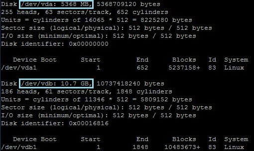
( 請檢查是否有 vda 與 vdb，其容量大小是否為您所申請的容量 )STEP 2：卸載 /dev/vdb1
umount /dev/vdb1STEP 3：磁碟分割，用您擅用的磁碟分割工具，我們以 fdisk 為例
fdisk /dev/vdb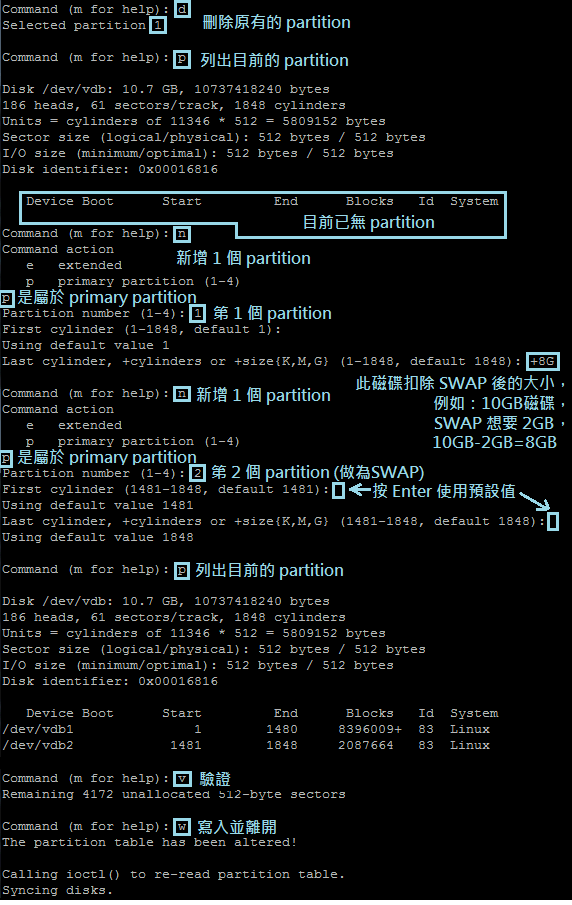
STEP 4：製作檔案系統
mkfs.ext4 /dev/vdb1 mkswap /dev/vdb2STEP 5：掛載檔案系統
mount /dev/vdb1 swapon /dev/vdb2STEP 6：檢查是否生效
df -h ( 檢查 /dev/vdb1 是否已經掛載 ) free -m ( 檢查 swap 是否有數值 )STEP 7：開機自動掛載
vi /etc/fstab 加入一行 /dev/vdb2 swap swap defaults 0 0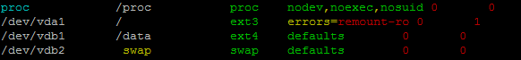
如果您變更過 /dev/vdb partition 的順序，或是您變更成非 ext4 檔案系統，那麼您還需要修改此檔案STEP 8：重新開機並驗證
Case2. File swap
因預設設定之關係，某些虛擬機器在開通時候可能預設沒有掛載swap，雖現今的記憶體夠大，不一定會使用到 swap，但建議還是要掛載 swap，以增加系統穩定度。
STEP 1：製作一個當作 swap 的檔案
```dd if=/dev/zero of=/data/swap.img bs=1024k count=1024
( 1024k x 1024 = 1GB，請調整 count 達到您要的大小 )STEP 2：製作 swap 檔案格式 === ```mkswap /data/swap.imgSTEP 3：立刻啟動 swap 空間
swapon /data/swap.imgSTEP 4：檢查是否生效
free -mSTEP 5：開機自動掛載 swap
vi /etc/fstab加入一行 /data/swap.img swap swap defaults 0 0
附註： /data 是目前 MiCloud Linux VMs 預設第二顆磁碟的掛載點，依客戶使用方式不同而有所差異
頁面：Test.md頁面：Ubuntu+mirror+site.md目前MiCloud提供的系統各自採用國外所提供的套件庫，主要是因為台灣的鏡像站點並不保證其服務的可靠度及可用率，但您也可以透過修改設定檔將套件庫來源指向台灣，其可靠度您必須自行評估，以保障您的虛擬主機。
Ubuntu採用APT套件管理，其套件庫的修改與設定相似，實際修改方式如下說明:
變更套件來源
登入後，請先複製“sources.list”檔案，此檔案存放在“/etc/apt/”下，此複製動作針對改錯時，未來可以回復原來的檔案。將sources.list檔案複製一份，命名為sources.bak，指令如下
#cp /etc/apt/sources.list /etc/apt/sources.list.bak備份完成後請至/etc/apt下確認是否成功增加sources.list.bak檔，如下圖

確認Ubuntu版本並編輯sorces.list，編輯指令如下
# vi /etc/apt/sources.listdeb http://opensource.nchc.org.tw/ubuntu/ lucid main restricted deb-src http://opensource.nchc.org.tw/ubuntu/ lucid main restricted修改完後儲存即可。

請執行更改後的檔案，並確認是否更新，執行指令及畫面如下:
黃色框框部分即更改過後，系統於您更改的路徑中找尋到可更新套件。
#apt-get update
更多Ubuntu mirror site list
- Ubuntu全球映射站
https://launchpad.net/ubuntu/+archivemirrors
http://ftp.nchc.org.tw/ubuntu/
http://free.nchc.org.tw/ubuntu/
安裝非預載套件
使用apt指令安裝Ubuntu套件，相關指令如下:
先查詢可安裝的套件
#apt-cache pkgnames
若找不到您需要的套件也可透過下面的指令來搜尋
#apt-cache search [套件名稱/關鍵字]](#apt-cache search [套件名稱/關鍵字)
再執行安裝，指令如下
#apt-get install [套件名稱]](#apt-get install [套件名稱)
檢查是否安裝成功，指令
#dpkg --get-selections | grep "套件名稱"
若想移除套件，指令如下
#apt-get remove [套件名稱]](#apt-get remove [套件名稱)
若要更新己安裝的套件，指令如下:
(此指令可一次升級所有已安裝套件的版本，也可以單獨升級某指定套件。)
#apt-get upgrade
只更新某套件
#apt-get upgrade [套件名稱]](#apt-get upgrade [套件名稱) 頁面：Update+and+download+file.md
頁面：Update+and+download+file.mdWindows 檔案上傳與下載
要從MiCloud Windows Server上進行軟體或檔案的上下載有許多方式，在此建議您使用網路芳鄰方式來進行檔案傳輸，下面介紹相關設定方式：
Windows Server 2008 設定檔案分享
1.新增檔案匣並加以命名
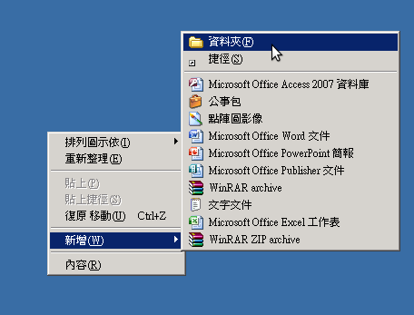
2.在資料峽上點選右鍵，選擇內容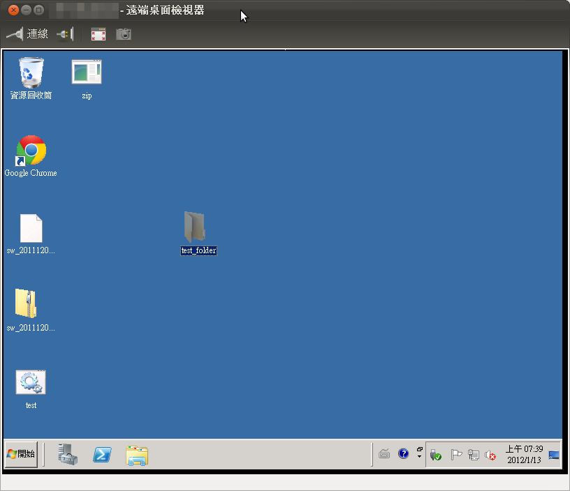
3.於您將開啟共用的資料夾按下滑鼠右鍵選擇內容,並點選上方列表切換至共用頁面
4.點選"進階共用(D)..."
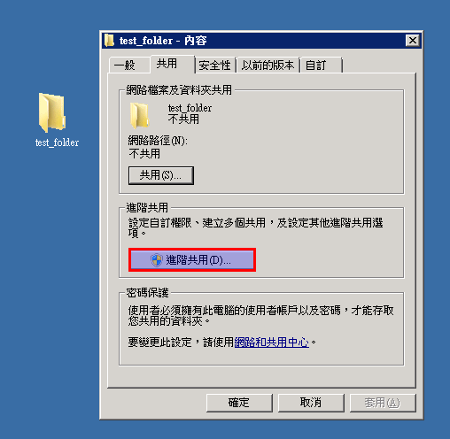
5.勾選共用資料夾,點選完後可於下方點選"權限（P）",進入選擇您想給他人登入使用的權限
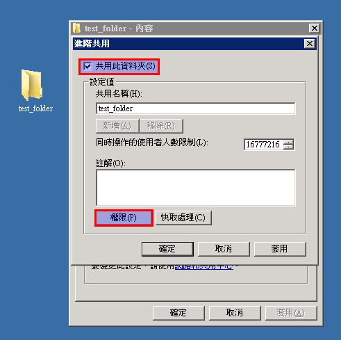
Windows 下上傳與下載檔案
1.開始 -> 執行 , 再開啟裡面填入您的ip（ex："//IP"）

2.輸入您的帳號密碼 , 然後您就能開始上傳與下載檔案
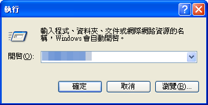
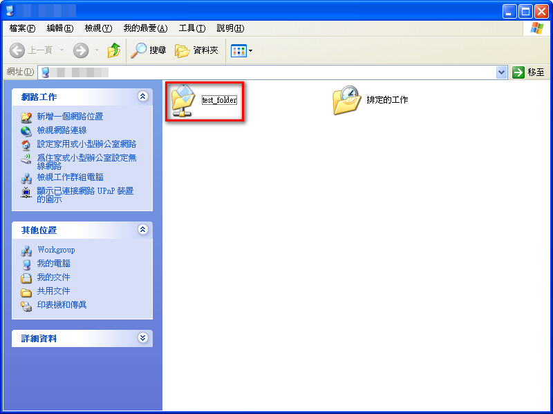linux 下上傳與下載檔案
1.先將視窗點選到桌面 , 於左上角點選 File -> Connect to Server...

2.輸入相關資訊
Server:輸入您將上傳或下載的機器的ip Domain name:輸入micloud.tw
User name:輸入您的帳號 Password:輸入您的密碼
3.進入後便可看到您共用的資料夾
4.若您要進一步上傳或下載檔案,需再次驗證您要登入的角色 , 然後您就能開始上傳與下載檔案
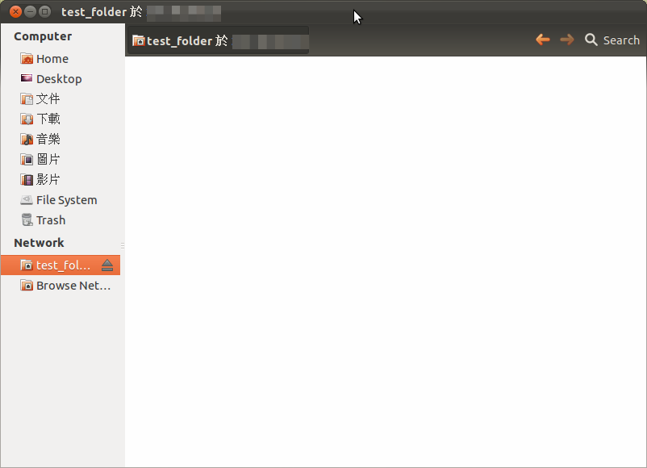頁面：Update+Timezone.mdLinux (Redhat / Fedora / CentOS) 設定時間的方式
(1) copy /usr/share/zoneinfo/* 內的確切時區資料檔案為 /etc/localtime
# cp /usr/share/zoneinfo/GMT+0 /etc/localtime(2) 執行 date -u
# date -u(3) 輸入 date 看看是否已經是正確時區
# date
SmartMachine 設定時間的方式
選擇TimeZone時區
[root@XXXX /opt/local/etc/nginx]# tzselect]([root@XXXX /opt/local/etc/nginx# tzselect) Please identify a location so that time zone rules can be set correctly. Please select a continent or ocean. 1) Africa 2) Americas 3) Antarctica 4) Arctic Ocean 5) Asia 6) Atlantic Ocean 7) Australia 8) Europe 9) Indian Ocean 10) Pacific Ocean 11) none - I want to specify the time zone using the POSIX TZ format. #? 5 Please select a country or region. 1) Afghanistan 26) Laos 2) Armenia 27) Lebanon 3) Azerbaijan 28) Macao 4) Bahrain 29) Malaysia 5) Bangladesh 30) Mongolia 6) Bhutan 31) Myanmar (Burma) 7) Brunei 32) Nepal 8) Cambodia 33) Oman 9) China 34) Pakistan 10) Cyprus 35) Palestine 11) East Timor 36) Philippines 12) Georgia 37) Qatar 13) Hong Kong 38) Russia 14) India 39) Saudi Arabia 15) Indonesia 40) Singapore 16) Iran 41) Sri Lanka 17) Iraq 42) Syria 18) Israel 43) Taiwan 19) Japan 44) Tajikistan 20) Jordan 45) Thailand 21) Kazakhstan 46) Turkmenistan 22) Korea (North) 47) United Arab Emirates 23) Korea (South) 48) Uzbekistan 24) Kuwait 49) Vietnam 25) Kyrgyzstan 50) Yemen #? 43 The following information has been given: Taiwan Therefore TZ='Asia/Taipei' will be used. Local time is now: Tue Nov 1 18:33:44 CST 2011 Universal Time is now: Tue Nov 1 10:33:44 UTC 2011 Is the above information OK? 1) Yes 2) No #? 1 Here is the TZ value again, this time on standard output: Asia/Taipei修改Time Zone設定擋
[root@XXXX /opt/local/etc/nginx]# vi /etc/default/init]([root@XXXX /opt/local/etc/nginx# vi /etc/default/init)修改TZ設定內容為Asia/Taipei
TZ=Asia/Taipei重新開機生效
頁面：Updating+npm+From+Very+Old+Versions.mdThe latest version of npm only works with fairly recent versions of node. If you signed up with the no.de service in one of the very first pre-release betas, you might be using a very old version of Node.js™, and npm update won't quite work properly. You'll see stuff like this:
[node@izs ~]$ npm update]([node@izs ~$ npm update) npm info it worked if it ends with ok npm info version 0.2.2 npm info updates npm@0.3.11 npm info fetch http://registry.npmjs.org/npm/-/npm-0.3.11.tgz npm info install npm@0.3.11 npm ERR! install failed Error: Required package: semver(1) not found. npm ERR! install failed at /home/node/.node_libraries/.npm/npm/0.2.2/package/lib/build.js:139:25 npm ERR! install failed at cb (/home/node/.node_libraries/.npm/npm/0.2.2/package/lib/utils/graceful-fs.js:28:9) npm ERR! install failed at node.js:764:9 npm info install failed rollback npm info not installed npm,0.3.11 npm info install failed rolled back npm ERR! install failed npm@0.3.11,semver@1 npm info failed to update npm@0.3.11 npm ERR! Error: Required package: semver(1) not found. npm ERR! at /home/node/.node_libraries/.npm/npm/0.2.2/package/lib/build.js:139:25 npm ERR! at cb (/home/node/.node_libraries/.npm/npm/0.2.2/package/lib/utils/graceful-fs.js:28:9) npm ERR! at node.js:764:9 npm ERR! try running: 'npm help update' npm ERR! Report this *entire* log at <http://github.com/isaacs/npm/issues> npm ERR! or email it to <npm-@googlegroups.com> npm not okUpdating to the Latest npm
Chances are that there's a very old version of npm installed in your home directory, and you need to move that away so that you can use the global npm installed in /opt/nodejs/bin. Try doing this:
npm rm npm hash -r which npm # => /opt/nodejs/bin/npmOf course, this command should always work:
curl http://npmjs.org/install.sh | shIf it doesn't, then please post an issue at https://github.com/isaacs/npm/issues
Use a More Recent Version of Node.js
The Node.js version in the no.de machines is determined by the ~/local/nodejs symbolic link. When your Node.js SmartMachine is created, this link points to the then-most-recent version of Node.js, so that you can deploy code without it changing out from under you, which is generally good.
See Setting the Node.js Version to learn how to set the version of Node.js that your application uses.
頁面：Updating+Webmin.mdIn this page:
Webmin / Virtualmin
Webmin is the web-based configuration tool provided by default with SmartMachines. It runs as its own process, and includes its own web server.
After customizing your SmartMachines, you may find that you eventually need to upgrade the Webmin / Virtualmin software. Alternatively, you may also decide that you prefer to monitor and configure your system exclusively with an SSH session.
Upgrading
Preflight
Get to the Upgrade Webmin area
- Log into your smartmachine https://1.2.3.4:10000/ as %%admin%%
- From the left-hand navigation bar select %%Webmin%%
- From the left-hand navigation bar select %%Webmin%% below %%Login: admin%%
- Select %%Webmin Configuration%%
From the right-hand tab select %%Upgrade Webmin%%. You'll now see the "Upgrade Webmin" page.
Find out what is out of date
You will be presented with a list of items which require updating and what has changed.
Select the %%Update modules%% tab
- Select %%Only show which modules would be updated%% checkbox
- Select %%Update Modules%%
You then can uncheck the show and actually perform the updates.
Virtualmin is considered a non-core module. Ensure you check the Update non-core modules as well option to include Virtualmin in any updates.Setting automatic update schedule
- Select the %%Scheduled update%% tab
- Check the %%Scheduled updating currently enabled%% box
- Set your desired schedule
Upgrading Webmin
- From the %%Upgrade Webmin%% tab
- Chose from where you wish to upgrade from, typically that would be %%Latest version from www.webmin.com%%
- Unless you know what you are doing, check the %%Don't re-install deleted or new modules?%% option
- Select the %%Upgrade Webmin%% buttton
Before Webmin 1.490 was released, Sourceforge.net (which the Webmin developers use to host their project files) changed the URL scheme, effectively breaking Webmin upgrades from versions earlier than 1.490. To work around, in step *2 above, instead of pulling from the www.webmin.com website, choose the %%From ftp or http URL%% option and enter this long URL (the latest Webmin 1.500): %%http://prdownloads.sourceforge.net/webadmin/webmin-1.500.tar.gz%% Further upgrades will work as outlined above.Removing
You may decide that you do not want to use Webmin at all and wish to manage your SmartMachine solely using SSH.
If you want to remove Webmin completely, open a new SSH session.
- Change to root: sudo su -
- Disable the Webmin service:
svcadm disable svc:/application/webmin:defaultor
svcadm disable svc:/network/webmin:webmin- Then execute the Webmin uninstall script:
sudo /etc/webmin/uninstall.sh- Finally, remove the Webmin manifest:
svccfg delete svc:/application/webmin:defaultor
svccfg delete svc:/network/webmin:webminChanging webmin passwords
If you forget your webmin password, run the command below. You may have to change the path based on your webmin version. "admin" is the webmin "root" user.
sudo /opt/webmin-1.340/changepass.pl /etc/webmin admin new_passwordRestarting
If Webmin becomes unresponsive or unreachable, you can restart it from an ssh session.
- **Login as an administrative user. ssh admin@1.2.3.4
- **Check Webmin's current state: sudo svcs -p webmin
- *If shown as "running" then:
- Restart Webmin: sudo svcadm restart webmin
- *If shown as "disabled" then:
- Start Webmin: sudo svcadm enable webmin
- *If shown as "maintenance":
- Clear Webmin: sudo svcadm clear webmin
- **Make sure Webmin is not in maintenance: svcs -x
- **If Webmin is listed as being in maintenance, run:
sudo svcadm clear webminWebmin (approximate) system requirements
- 80 RSS
- 100 Swap
Check on what's available by ssh'ing in and
prstat -Z -n 10 -s rssKill processes as necessary to free up the required minimum resources. Occassionally Apache (called httpd in the 'Process' column of the prstat listing) will consume very large amounts of memory.
Webmin really won't startup
If your system has the available resources (you can confirm this by running the command described in the section 'Webmin (approximate) system requirements') and Webmin still refuses to startup, then you may need to restart your server. Follow the steps described in the section 'Restarting'.
sudo rebootWhere are webmin's log files
You'll find them here:
sudo ls /var/webmin/ sudo cat /var/webmin/miniserv.error
資料來源：Joyent Wiki
頁面：Upgrading+to+Pkgsrc+2010Q4.mdIf you have an older Node.js™ SmartMachine, you may not be running the latest pkgsrc repository. This page shows you how to update your Node.js SmartMachine to the 2010Q4 repository.
In this page:
Update to Pkgsrc 2010Q4
1.Log in to your Node.js Smart Machine using the admin username:
$ ssh admin@mymachine.no.deIf you cannot log in as admin, stop now and contact support .2.Verify the version of pkgsrc you are currently using:
$ pkgin up database for http://pkgsrc.joyent.com/2010Q2/All/ is up-to-dateIf you are using version http://pkgsrc.joyent.com/sdc/2010Q4/gcc45, you are up to date and don't need to upgrade.
3.Run the no.de.2010Q4.sh shell script attached to this page. The easiest way is like this:$ curl -L http://wiki.joyent.com/download/attachments/1639244/no.de.2010Q4.sh | sudo bashThe output will look like this:
Recording packages installed before the update Backing up existing software base Moving existing software base away Downloading new software bootstrap image Configuring package tools Re-installing base packages Updating OpenSSL certificate database Removing deprecated system files Updating tool configuration Re-installing missing packages (gcc34 gmake gmp libffi mpfr mysql-client mysql-server python26 redis scmgit scmgit-docs tcp_wrappers zip) * * * Your software was upgraded using packages from: http://pkgsrc.joyent.com/sdc/2010Q4/gcc45 A backup of '/opt/local' was archived as: /var/tmp/pkgsrc-backup-20110505-041037.tgz Feel free to remove that file if you don't need it anymore. Latest versions of all your previously installed packages have been installed. You can run 'pkgin ls' for a full listing of installed packages. * * * You had the gcc44 package installed. This is no longer provided in this package set. Please install the 'gcc-compiler' package instead which provides an optimized GCC 4.5.2 compiler suite.4.Be sure to log out of the admin account and back into the node account before you install new packages.
Verify the Update
1.Log out of the admin account.
2.Log in to the node account:$ ssh node@mymachine.no.de3.Run the pkgin up command. The output should look like this:
$ pkgin up database for http://pkgsrc.joyent.com/sdc/2010Q4/gcc45/All is up-to-date
資料來源：Joyent Wiki
頁面：Used+commmands.md常用指令集
各版本套件指令比較表
雖然目前許多市面常見的作業系統例如Ubuntu、Debian、CentOS、Fedora，甚至是目前Micloud所用的SmartOS都是以linux為底的架構。不過由於開發人員的不同在指令的操作上也會有稍稍的不同，在套件的指令集中，我們利用列表來比較各版本不同的指令:|| ||Ubuntu、Debian ||CentOS、Fedora ||SmartOS
|查詢已安裝的套件 |apt-cache pkgnames |yum list |pkgin list
|查詢套件可安裝套件的名稱或關鍵字 | apt-cache search "套件名稱"
或apt-cache search "關鍵字" |yum search "套件名稱"
或yum search "關鍵字" |pkgin search "套件名稱"
或pkgin search "關鍵字"
|安裝套件 |apt-get install "套件名稱" |yum install "套件名稱" |pkgin install "套件名稱"
|移除套件 |apt-get remove "套件名稱" |yum remove "套件名稱" |pkgin remove "套件名稱"
|升級所有己安裝的最新列表 |apt-get update |yum update |pkgin update
|下載檔案 |wget "網址" |wget "網址" |wget "網址"
|複製檔案 |cp "來源檔" "目的檔" |cp "來源檔" "目的檔" |cp "來源檔" "目的檔"
|刪除檔案 |rm "檔案或目錄" |rm "檔案或目錄" |rm "檔案或目錄"
|檢視檔案內容 |cat "檔案名稱" |cat "檔案名稱" |cat "檔案名稱"
|切換目錄 |cd "相對路徑或絕對路徑" |cd "相對路徑或絕對路徑" |cd "相對路徑或絕對路徑"
|顯示所在目錄 |pwd |pwd |pwd
|檢視目錄下的檔案 |ls |ls |ls
|重新開機 |reboot |reboot |reboot頁面：Using+Cloud+Analytics.md使用雲端分析工具
雲端分析工具，將幫助您做您Node.js的即時性的績效性能分析™應用。
使用雲端分析工具將需要Node 版本0.4.0或更高的版本。
在這個頁面，您將可以找到：同時看到 http://dtrace.org/blogs/dap/2011/08/29/new-metrics-on-no-de/
顯示分析的概述如下：
分析工具將顯示兩種圖表：線狀圖和等級圖。
線圖顯示的數量，是根據您所給定的時間測量。
例如，如果您測量的是根據IP地址的HTTP操作，其圖表疊線圖將顯示每個IP地址每秒的回應數量。

而等級圖可讓您看到三個方面的數據，就像在某一特定地區，使用不同的顏色的雨水量畫出降雨分佈的地圖。
雲端分析等級圖則顯示不同密度的彩色區塊。
例如，在一個等級圖顯示了應用的細項和CPU運行速度，x軸則顯示在一秒鐘的間隔時間，Y軸則顯示了運行的時間。
圖中的每個區塊、密度，代表了特定的運行時間的程式的數量。
您可以使用過濾器，或以點選一個區塊的方式，查詢程式處理器多次執行的時間長短。
每個區塊的高度，都是以沿y軸的值的範圍做區分。

在這兩種圖表，x軸表示在一秒鐘的間隔時間。 y軸代表一個變量，你測量，但規模變化值的範圍擴大或縮小。
||控制 ||描述
|儀器儀表選項 |這些控件可以讓你創建一個儀表盤。你可以選擇從幾個指標分解以不同的方式。
這些指標都在下一節描述。
|元素列表 |這將列出你測量的項目。例如，如果你測量HTTP服務器的URL分解操作，此窗格包含一個網址列表。
在熱圖，從這個名單中選擇一個項目，突出包含該元素的測量所有的水桶。
你可以使用隔離或排除選定的項目列表底部的過濾器。
|排名 / 線性 |這種控制讓你選擇如何密度桶熱圖呈現。線性著色意味著根據其價值，每個桶的顏色。其價值為100桶，水桶，其價值為1暗100倍。
排名基於著色所有的值進行排序和顏色密度分佈其中。 排名基於著色發現離群點是非常有用的。
|粒度 |此滑塊控制每塊的高度，因此，每個桶的值的範圍。
|規模 |此滑桿可讓您控制Y軸的值的範圍。 範圍是在控制下的文本。當滑塊一路的頂部和底部，y軸的變化上顯示的值的範圍而定規模。
如果您使用滑桿來設定一個上限或下限，規模不會改變。
|放大 |這些控件可以讓你改變每個桶的寬度，所以你可以看到一個更廣泛的時間。 每個桶的寬度始終是一秒鐘。
|播放 / 暫停|這些控件可以讓您暫停和恢復顯示。
|水桶 |點擊水桶，桶的價值分佈。可用的度量
雲分析可以告訴你各種不同的指標:
- CPU線程處決的
- HTTP服務器操作
- HTTP客戶端操作
- 垃圾收集作業
- 套接字操作
- 邏輯文件系統操作
在大多數情況下，操作數是不一樣分解操作延遲有趣。 潛伏期是要求其履行的金額之間的時間。
CPU線程處決的
這種度量可以幫助你了解你的應用程序使用的CPU。 報告數量排序的線程執行不同的標準。 一個線程開始執行時，當線程在CPU和結束時，它被取下。
您可以使用自己的下面的分解，得到一個線程執行數線圖或結合運行時，他們顯示熱圖。||分解 ||描述
|進程標識符 |對於一個給定的進程ID線程數。
|應用程序的名稱 |每個正在運行的應用程序的線程數。
|區域名稱 |在每個區域運行的線程數（SmartMachine）。如果你正在運行的只有1 SmartMachine，這個信息是不是特別有用。
|原因離開CPU |離開CPU的原因排序的線程數。
線圖顯示處決的人數是不是特別有趣。 運行時的熱圖，這表明線程在CPU上多久，更準確，因為它們表明，當您的應用程序已經做了很多計算。選擇不加分解本身的運行是在一個線程執行的熱分解圖運行，這不是特別有用的結果。如果您的應用程序不運行很長時間，你可以看看為什麼它來CPU。 它可能被內核鎖阻塞（可能表明內核鎖爭用），1用戶級鎖（表示用戶級鎖爭用），1條件變量（表示它很可能等待某些其他事件，如磁盤，I / O或網絡），等等。 或者它可能已經運行的，但採取的CPU，因為別的東西更高的優先級運行所需。
這是一個低級別和微妙的度量，但它可以幫助你了解是否應用程序這麼長時間的服務請求的理由是因為它在CPU上花費了很多時間。
HTTP服務器操作
HTTP服務器的性能度量Web服務器的主要性能。
可以使用下面的分解，自己獲得的事件數量的線圖，或者你可以結合延遲他們獲得熱圖。
||分解 ||描述
|方法 |HTTP方法的請求：GET，PUT，POST，DELETE
|網址 |通過URL請求的數量。
|遠程IP地址 |發出請求的客戶端的IP地址的請求數。
|遠程TCP端口 |發出請求的客戶端所使用的TCP端口的請求數。這個衡量標準是，挑選出來自同一客戶端的多個請求，在相同的TCP連接使用HTTP保持活動的有用。
HTTP客戶端操作
這個度量報告HTTP請求和響應，從您的應用程序發起的反對的服務。 您可以使用該數據，以幫助您確定您的服務器的延遲是由於你使用一些其他的Web服務的延遲。 舉例來說，如果Amazon的S3服務存儲數據，你可以看到如何S3 Web服務請求。
如果您發現另一個Web服務是您的高延遲的源，然後你可以調查，其他的Web服務（如果你能），或重新考慮你的應用程序如何使用它，通過緩存結果在可能的情況下，也許。
||分解 ||描述
|方法 |請求的HTTP方法。
|網址 |通過URL請求的數量。
|HTTP服務器地址 |服務器地址的請求數。
|HTTP服務器端口 |服務器端口的請求數。垃圾收集作業
這種度量可以讓你觀察到的JavaScript虛擬機的垃圾收集器所產生的延遲氣泡。 垃圾收集器跟踪分配內存和釋放內存，這不再被使用。 這意味著，作為一個程序員，你不必擔心內存分配和釋放。 然而，當垃圾收集器運行時，您所有的應用程序代碼被暫停。
您可以使用此指標，以觀察在您的應用程序的垃圾收集。 在這種情況下，“潛伏期”是指垃圾收集操作了多久。 如果你看到的垃圾收集活動相關的HTTP請求延遲尖峰，你可能需要重新思考如何在您的應用程序內存被使用，以免造成這麼多的垃圾，否則調整GC以避免出現大的尖峰。
||分解 ||描述
|GC型 |按類型的垃圾收集操作。套接字操作
套接字操作HTTP活動的WebSockets，和大多數其他類型的網絡活動的基礎上。 這種度量可以讓你觀察到非Web應用程序的活動。 因為它是不可能知道這消息對應於別人，這是不可能直接顯示在這個級別的延遲。
||分解 ||描述
|類型 |按類型套接字操作（讀，寫）。
|遠程主機 |套接字操作遠程主機的數量。
|遠程端口 |通過遠程端口號的套接字操作。
|大小 |由規模數量的套接字操作。
|緩衝數據 |Node.js的內緩衝的數據量，因為應用程序的書面比內核更可以消耗不阻塞。邏輯文件系統的操作
磁盤I / O可以是一個顯著的延遲源。 這種度量檢查磁盤的I / O的應用程序的首要原因之一：訪問文件系統。
||分解 ||描述
|進程標識符 |文件系統操作的進程的ID號。
|應用程序的名稱 |文件系統操作的應用程序的名稱。
|區域名稱 |文件系統操作的區域名稱。
|操作類型 |按類型的文件系統操作（讀，寫，查找，訪問等）。
|文件系統類型 |（ZFS，進程，LOFS等），文件系統類型的文件系統操作。如果你在這裡看到顯著的延遲，HTTP請求延遲對應的，你可能會考慮改變你的應用程序與文件系統交互，也許是通過預取數據緩存。
分解幫助你準確識別誰在做什麼，這樣可以優化正確的事情。 與Node.js的指標，此指標的檢查文件系統的所有的SmartMachine的活動。在這些情況下，進程ID和應用程序的名稱的分解是有用的。
學習更多關於雲分析
你可以了解更多有關使用熱圖可視化從這些資源中的延遲：
可視化系統延遲 雲分析
* 雲性能與實時可視性解決大問題（視頻）
資料來源：Joyent Wiki
頁面：Using+Customer+Portal+old.md使用MiCloud Customer Portal([http://micloud.tw])
](使用--MiCloud Customer Portal-- - --[http://micloud.tw--
)
若您還未註冊MiCloud，請點選右邊選項＜註冊新帳戶＞。若您已註冊完MiCloud，請點選左邊選項＜立即登入＞。

登入與帳戶設定說明影片: Go to YouTube
頁面：Using+Customer+Portal.md使用MiCloud Customer Portal([http://micloud.tw])
](使用--MiCloud Customer Portal-- - --[http://micloud.tw--
)
若您還未註冊MiCloud，請點選右邊選項＜註冊＞。若您已註冊完MiCloud，請點選左邊選項＜登入＞。

登入與帳戶設定
進入登入頁面輸入您的帳號與密碼
登入完成後系統將自動跳轉至訂購主機頁面，若您為第一次登入使用MiCloud，請點選右上角的帳戶設定，進入設定您的基本資料與SSH-KEY(重要!)。修改基本資料
此頁面為顯示您註冊MiCloud時輸入的基本資訊，若輸入有誤可在此做更正的動作。
管理SSH Key(SSH KEYS)
MiCloud提供SSH Key的管理模組，您可透過此頁面進行SSH Key的上傳與管理，透過SSH協定與SSH Key的認證，將可確保您與您伺服器之間的連線安全。
SSH KEY 詳細用法：[Windows](SSH KeyGen & Connect Tutorial - Windows)
。
更改登入密碼
若您需要更改登入MiCloud登入時的密碼，可於此頁做變更。
付款方式
依照您的帳號設定的用戶有不同的付費方式
詳情請看[個人用戶](Apply MiCloud Account - Personal)
帳單資料
可於此頁面察看您所有的帳單資訊
訂購主機與使用MiCloud
訂購主機
若您還未建立您的SSH KEYS，請先至[SSH KeyGen Tutorial](SSH KeyGen Tutorial - Windows)
若您已完成上步，可進入此頁訂購主機。
您可先查看頁面左邊為機器的設備與價位表，再前往頁面右邊下拉式選單選擇您的機器所需的作業系統、硬體配備及填寫機器名稱。
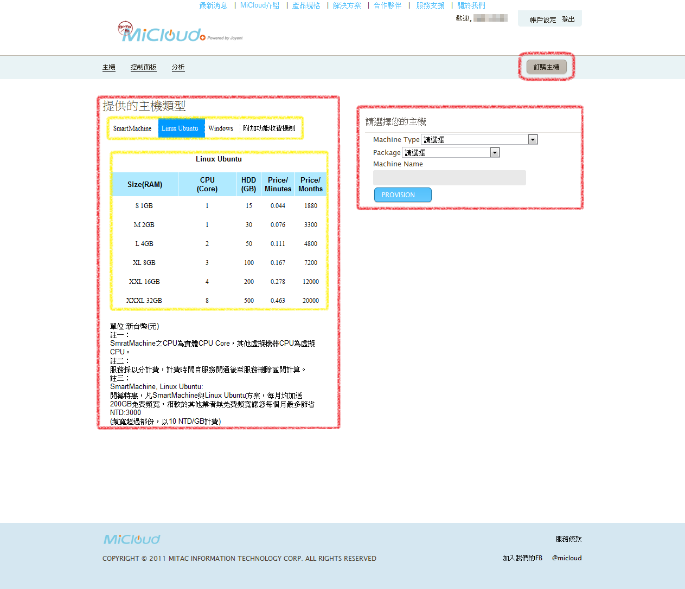
確認您選擇的作業系統與硬體設備，並勾選您所需的軟體，及填寫發票資訊。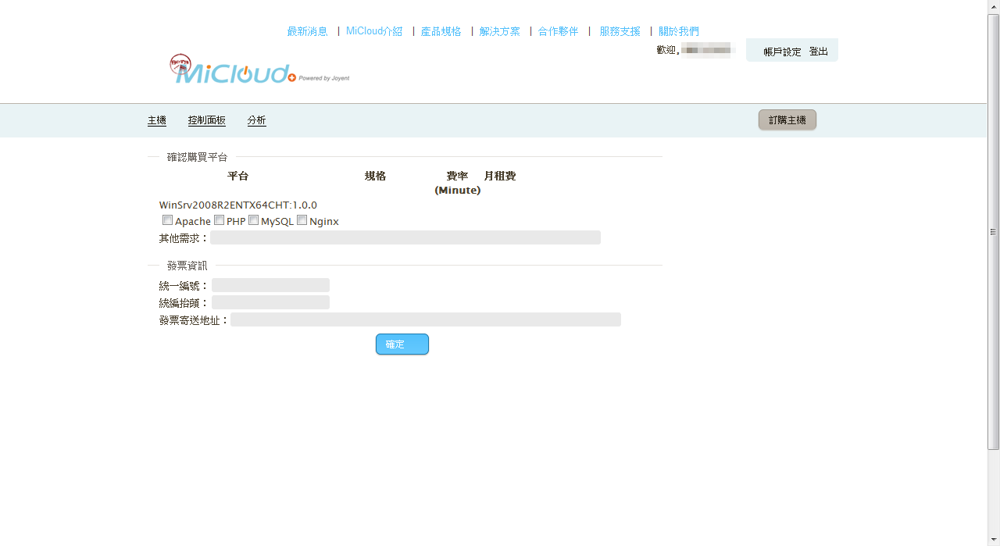
訂購主機說明影片:Go to YouTube
主機
此頁可顯示您所建的機器與機器的IP與基本的資料(作業系統、記憶體、購買了多久以及目前狀態)

左邊紅色框框概述您的機器設備與相關訊息。右邊紅色框框則顯示您機器目前的狀態，以及開關機的按鈕。
點擊左邊藍色框框則會顯示您這台機器內建軟體預設的密碼。

控制面板
此頁可讓您觀察來自世界各地的連線來源分佈狀況(如果想提供的是全球性的服務，此圖表數據相信會對您有所幫助)。
下方則是提供每秒TCP or HTTP連線數量。
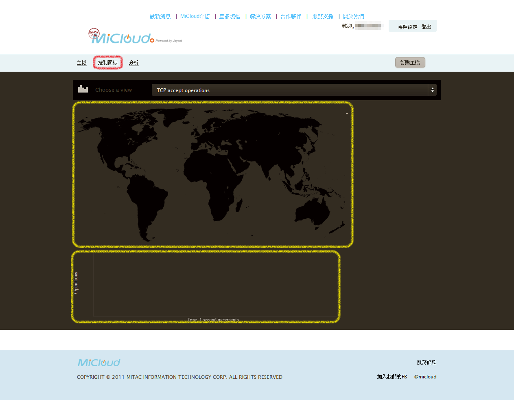
主機與控制面板說明影片:Go to YouTube
分析
此頁能提供您所要「診斷」的「各類」資訊。
可於左邊藍色框框內的下拉式選單選擇你需要診斷的資訊。
右邊的藍色框框則是選擇圖表的顯示方式。
當您選擇完按下鍵理時將在下方產生圖表顯示。
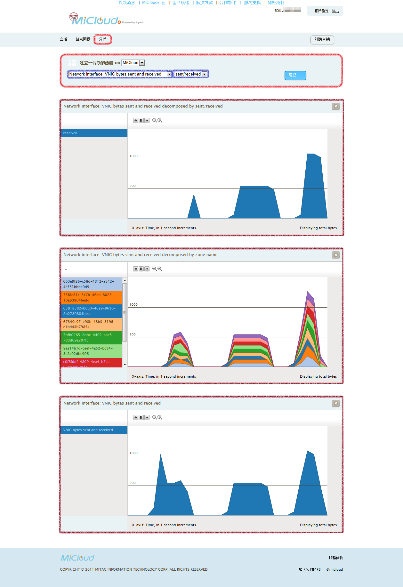
分析說明影片:Go to YouTube
頁面：Using+DTrace+on+MySQL.mdIn this page:
Using DTrace on MySQL
Even though there aren't DTrace probes for MySQL released yet, we can still get useful information from MySQL. DTrace has a pid provider which allows us to get into any function the program is executing and see it's arguments. The only drawback is you have to go digging around in the source code to find out what you want to see. But thanks to guys like Brendan Gregg, they have already done some of the digging for us
Even if we want to go digging around ourselves, it's really not that hard; you just have to get your feet wet. And because SmartMachines have DTrace probes enabled, you can take advantage of using DTrace on MySQL. I will show some examples of this and how easy it is to hunt down your own functions.
First let's start with functions that have already been dug up for us:
mysql_parse(thd, thd->query, length, & found_semicolon);This is the function MySQL uses to parse a query. So all we have to do is trace this function through the pid provider and we get to see all the queries coming through. This shows arg1 as being the query, and we must copy it in to kernel land where DTrace works for it to see the string:
root@ferrari:~# dtrace -qn 'pid$target:mysqld:*mysql_parse*:entry { printf("%Y %s n", walltimestamp, copyinstr(arg1)) }' -p `pgrep -x mysqld` 2007 Sep 27 10:04:35 select * from blah 2007 Sep 27 10:04:58 select * from tablenothereNotice that this will show all queries, even if they aren't successful. Now that we can trace queries, this can give us good information. For example we can see what queries are executed the most:
root@ferrari:~# dtrace -qn 'pid$target:mysqld:*mysql_parse*:entry { @queries[copyinstr(arg1)] = count() }' -p `pgrep -x mysqld`](root@ferrari:~# dtrace -qn 'pid$target:mysqld:*mysql-parse*:entry { @queries[copyinstr - arg1 = count - }' -p `pgrep -x mysqld`) ^C select * from blah 5 select * from tablenothere 10You can't get this kind of information from MySQL unless you write some kind of script to parse through the query log. If we know that there is a query being executed 1000 more times than the others, we could always try to get this one to cache. Now lets say we want to find out how long a query took to execute. The function mysql_execute_command does the actual execution of the queries so all we do here is subtract the entry and return timestamps of this function. The script shown below uses this:
root@ferrari:~# ./exactquerytimes.d -p `pgrep -x mysqld` Tracing... Hit Ctrl-C to end. Query: SELECT COUNT(*) FROM joe_visitors where upper(vs_browser) not like '%GOOGLE%' and upper(vs_browser) not like '%GOOGLE BOT%' and upper(vs_browser) not like '%BOT%' and upper(vs_browser) not like '%MSN%' and upper(vs_browser) not like '%MSNBOT%' and upper(, Time: 2.32On the MySQL side, it showed this query being executed at 2.32 seconds as well:
1 row in set (2.32 sec).
This is awesome information because as of now MySQL doesn't allow you to see a slow query that is less than 1 second (I believe this is a fix in MySQL 5.1). So with this, we can see not just slow queries, but all queries and how long they take to execute with their times.
Now let's try this same query but I bumped my query_cache_size up to 50M:
The first try (won't hit the cache):
root@ferrari:~# ./exactquerytimes.d -p `pgrep -x mysqld` Tracing... Hit Ctrl-C to end. Query: SELECT COUNT(*) FROM joe_visitors where upper(vs_browser) not like '%GOOGLE%' and upper(vs_browser) not like '%GOOGLE BOT%' and upper(vs_browser) not like '%BOT%' and upper(vs_browser) not like '%MSN%' and upper(vs_browser) not like '%MSNBOT%' and upper(, Time: 2.28And the second try hits the cache but doesn't show anything through DTrace. So this means a query that is served from the cache won't show up in mysql_parse. Right now this probably doesn't mean much, but as you learn more about how the internals of MySQL work, then troubleshooting becomes much easier down the road.
So far this has all been information that was provided. Now I will show how simple it is search through MySQL's source and look at functions.
First we need to decide what to look for. Let's say we want to find out every time that slow query is written to the slow query log. First we download the MySQL source code from http://www.mysql.com. Now we can search through the source code for 'slow query':
root@ferrari:/export/home/derek/mysql-5.0.45# ggrep -ri 'slow query' *This turns up only a few source code files, one of them looking most obvious called log.cc with the expression "Write to the query log". The MySQL code is very well commented so it makes searching really easy. Looking in this file, that comment is right above the function:
/* Write to the slow query log. * / bool MYSQL_LOG::write(THD *thd,const char *query, uint query_length, time_t query_start_arg)It's obvious that this function is the function that writes to the slow query log. Running this script below, looking for function LOG while a slow query is being inserted shows this function being executed with some weird characters around it:
root@ferrari:~# dtrace -F -n 'pid$1:mysqld:*LOG*:entry {} pid$1:mysqld:*LOG*:return {}' `pgrep -x mysqld` dtrace: description 'pid$1:mysqld:*LOG*:entry ' matched 126 probes CPU FUNCTION 0 -> _ZN9MYSQL_LOG5writeEP3THD19enum_server_commandPKcz 0 -> _ZN9MYSQL_LOG5writeEP3THDPKcjl 0 < - _ZN9MYSQL_LOG5writeEP3THDPKcjlThe only thing bad about tracing MySQL through the pid provider is that these weird characters change between MySQL versions, so we can't always trace for '_ZN9MYSQL_LOG5writeEP3THDPKcjl' if we want it to work on other machines. We have to trace for MYSQLOGwrite which slowquerycounts.d uses:
root@ferrari:~# ./slowquerycounts.d -p `pgrep -x mysqld` Tracing... Hit Ctrl-C to end. SELECT COUNT(*) FROM joe_visitors where upper(vs_browser) not like '%GOOGLE%' and upper(vs_browser) not like '%GOOGLE BOT%' and upper(vs_browser) not like '%BOT%' and upper(vs_browser) not like '%MSN%' and upper(vs_browser) not like '%MSNBOT%' and upper( 3As you can see DTrace can be very powerful even if we don't have probes released yet, we just have to do a little extra work. Some of the information shown can be obtained from MySQL, but using DTrace still provides a benefit because we don't have to enable anything in the MySQL configuration, possibly making us restart the server. I'm providing these scripts in the MySQLDTraceKit.tar.gz
Hopefully in the near future we will have real MySQL probes.
資料來源：Joyent Wiki
頁面：Using+Memcached.mdmemcached是一套 Name-Value Pair(NVP) 分散式記憶體快取系統，其主要目的是在於減少資料庫的負擔。透過memcached的快取對於使用者在等待資料存取時間可以加快進行而不會延遲服務。以下將會教您如何在SmartMachine去啟用和設置memcached。
啟動 Memcached
利用root權限或是利用sudo指令來啟動memcached:
#svcadm enable memcached輸入svcs指令確認memcached啟動是否成功，如以下的畫面中，可以看到memcached是online狀態，表示是啟用中:
#svcs memcached
確認目前設定:
#prctl -i process -n process.max-file-descriptor `pgrep memcached`
設置 Memcached
用戶可以自行設置memcached的大小以及所允許的連線數量，使用svcprop驗證目前memcached的大小:
# svcprop -p config/memory memcached
從上方的擷圖可以看到目前memcached大小為64 MB
另外，用戶可以利用指令來調整memcached大小， 例如.從64MB調至128MB:# svccfg -s memcached setprop config/memory=128 # svcadm refresh memcached # svcprop -p config/memory memcached 128 頁面：View+network+routing+instructions.md
頁面：View+network+routing+instructions.mdSmartOS檢視網路路由指令
透過netstat指令檢視路由表：
# netstat -rnRouting Table: IPv4 Destination Gateway Flags Ref Use Interface -------------------- -------------------- ----- ----- ---------- --------- default 211.78.255.254 UG 3 193 127.0.0.1 127.0.0.1 UH 3 8 lo0 211.78.255.0 211.78.255.31 U 3 0 net0 Routing Table: IPv6 Destination/Mask Gateway Flags Ref Use If --------------------------- --------------------------- ----- --- ------- ----- ::1 ::1 UH 2 0 lo0檢視到某個網站的路由：
# traceroute google.comtraceroute: Warning: google.com has multiple addresses; using 74.125.31.138 traceroute to google.com (74.125.31.138), 30 hops max, 40 byte packets 1 254.2.......54) 0.189 ms 0.194 ms 0.096 ms 2 211..........1 ms 0.453 ms 0.444 ms ....頁面：View+Used+Resources.md檢查磁碟使用情況
||如何得到這個資訊 ||請使用此命令
|查詢整個文件系統的磁碟空間使用情況 |df -ht
|查詢當前目錄的磁碟空間使用情況 |du -h
|查詢摘要目錄使用的空間 |du -hs /opt
在這些命令中的-h參數的結果，是以“人類可讀”的形式呈現。從 shell 檢查程序
||相關資訊 ||使用此命令
|通用處理器和內存統計資料 |prstat -Z -s cpuIf prstat changes your terminal settings, use the reset command to reset them.
|正在運行的程序列表 |ps -elf
|admin用戶程序列表 |ps -uadmin -o pcpu,user,pid,args,comm,sps -uadmin -o user,args,pcpu,pmem,vsz,time,comm
|MySQL用戶程序 |ps -umysql -o pcpu,vsz,osz,args,comm,s
|使用80 port的所有程序 |/root/bin/pcp -p 80
|2806過程中使用的所有埠 |/root/bin/pcp -P 28068
|所有埠和程序的資訊 |/root/bin/pcp -a
|CPU使用率 |sudo /root/jinf -C
|記憶體使用 |sudo /root/jinf -m
|互換空間的使用情況 |sudo /root/jinf -S檢查Webmin的過程
- 登錄到Virtualmin（請參考帳戶登錄及重要網址一文 ）。
- 點擊Webmin在左上方的選單，然後點選系統=>運行的程序。
- 點擊PID、用戶、記憶體、或是CPU，以便為您的帳戶上運行的程序列表，分別按不同標準進行排序。
資料來源：Joyent Wiki
頁面：What+is+Smart+Machine.mdSmartMachine說明
SmartMachine係指美國Joyent所研發SDC(SmartDatacenter)上之虛擬主機。SDC提升虛擬層的各項技術，達到超越市面上一般虛擬機器的效能，因此於SDC上提供之各項服務均優於一般虛擬主機。SmartMachine為植基於Solaris Kernel所發展的作業系統，全盤建構於ZFS檔案系統上。
該作業系統無縫的與SDC做緊密的結合，可提供同平台的其他作業系統將近一倍以上的運算能力，省去跨系統溝通的耗損，能夠提供用戶動態調整資源、更符合用戶的需求，達到快速部署之應用能力。
您可透過MiCloud雲端管理系統([http://micloud.tw])監控並管理您的虛擬主機，以及連線操控所部屬的應用服務。MiCloud為持續精進的雲端管理平台，提供多項第三方預載套件，包含最常使用的資料庫MySQL與網頁工具Apache HTTPD、PHP，以及遠端管理界面webmin等。](您可透過MiCloud雲端管理系統 - [http://micloud.tw監控並管理您的虛擬主機，以及連線操控所部屬的應用服務。MiCloud為持續精進的雲端管理平台，提供多項第三方預載套件，包含最常使用的資料庫MySQL與網頁工具Apache HTTPD、PHP，以及遠端管理界面webmin等。)
更進階的說明，可以在Joyent Wiki搜尋到
頁面：Windows+Virtual+Machine+FAQ.mdFrequently Asked Questions:
Do I need to activate the Windows license?
No. Activation should happen automatically, but it is not immediate and may take some time. To activate manually right click on My Computer and then click on Activate windows now. Do not try to activate the licence in any other way.
Where is my second harddrive?The second disk in the Windows instances are not initialized. You have to use the Server Management utility to initialize the new drive and create and format a new NTFS or FAT32 partition. Please see the Windows Drive Initialization Walkthrough.zip for screenshots on this process.
What is my hostname?- Click Start > Run
- In the pop-up box type cmd and press Enter.
- You should now have a black command prompt running. Type 'hostname' and press Enter.
You will see the host name. The initial host name is generated by Windows and will for all intents and purposes be random. You can change your hostname by using the Server Management utility.
What is my IP address?
- Click Start > Run
- In the pop-up box type cmd and press Enter.
- You should now have a black command prompt running. Type ipconfig and press Enter.
You will get a list of all the network interfaces and their IP addresses.
How do I add another Windows instance?
To add another Windows server, go to http://my.joyentcloud.com.
How do I activate my Windows server?Your Windows server is activated on provisioning.
However, some times you may have to Activate Windows when you first log in.
You will see this box. Click the 'Activate Now' button.

Then you want to click the 'Activate Windows online now' Button.

It may take a few minuets for the Microsoft Activation servers to finish the Activation process:

Once your Windows system is activated you will see this confirmation:

If for some reason you get an activation error send an email to support@joyent.com
What Windows version am I running?- Click Start > Run
- In the pop-up box type cmd and press Enter.
- You should now have a black command prompt running. Type winver and hit Enter.
You will see a popup box that will tell you about your version of Windows, similar to the one below:

資料來源：Joyent Wiki
頁面：Working+with+Cloud+API.mdThe Cloud API lets you interact with your JoyentCloud machines. Using the Cloud API, you can:
Provision new machines (both SmartMachines and traditional Virtual Machines)
Manage your account credentials
Create custom analytics for monitoring your infrastructure
To learn more about using the Cloud API, see the Cloud API documentation頁面：Working+with+Older+SmartMachines.mdA topic for dealing with older (Blastwave era) SmartMachines
- How can you tell which release your SmartMachine is populated with?
- *On templates made with 2007Q4 and 2008Q2, the PKG_PATH variable is set under /root/.profile
- *On templates made with 2007Q3 (Facebook SmartMachines) the PKG_PATH variable is set under /root/.bash_profile. This means when logged in as root, you can just run echo $PKG_PATH.
- *On templates made with 2009Q1 and beyond, the PKG_PATH variable is defined in /opt/local/etc/pkg_install.conf instead.
Historically, we used 2007q3 for Facebook SmartMachines, 2007q4 for SmartMachines deployed on and after March 22, 2008, followed with 2008q2 in November 2008, and 2009q1 in summer 2009.
資料來源：Joyent Wiki
 MiCloud Wiki Document
MiCloud Wiki Document
頁面：3PartyCloudServer.md
第三方服務主機
- MySQL
- Virtualmin/Webmin操作
頁面：About+Swap+Adjust.md
Swap調整
Micloud 客戶的Linux虛擬機會有兩個虛擬磁碟，第一個是OS掛載在"/"之下，另一個是packages中設定的disk space，預設掛載在/data下。 MiCloud已為SmartMachine、及1G以下用戶預先做好swap空間的預留，其餘類型的虛擬主機沒有預設swap空間，用戶需自行做設定。
如果客戶新建一個新的VM，可以採用下列Partition swap及File swap兩種方式中任一種，如果客戶已經寫了資料在/data 且無法更動，那只能選擇File swap的方式。
兩種swap設定方法及說明如下：
Partition swap
可以做為多重開機的swap重複使用，理論效能比較高一點點，但是無法變更大小，步驟稍為複雜，設定步驟如下。
(1)檢查您的磁碟
#fdisk -l
(2)卸載 /dev/vdb1
#umount /dev/vdb1(3)磁碟分割，用您擅用的磁碟分割工具，我們以 fdisk 為例
#fdisk /dev/vdb
(4)製作檔案系統
#mkfs.ext4 /dev/vdb1
#mkswap /dev/vdb2
(5)掛載檔案系統
#mount /dev/vdb1
#swapon /dev/vdb2(6)檢查是否生效
#df -h ( 檢查 /dev/vdb1 是否已經掛載 )
#free -m ( 檢查 swap 是否有數值 )
(7)開機自動掛載
#vi /etc/fstab
加入一行 /dev/vdb2 swap swap defaults 0 0
(8)重新開機並驗證
File swap
File swap的檔案是置於檔案系統之上，所以理論效能差一點點，可以刪除、移動與變更大小，步驟比partition swap簡單，其設定步驟如下。
(1)製作一個當作 swap 的檔案
# dd if=/dev/zero of=/data/swap.img bs=1024k count=1024
( 1024k x 1024 = 1GB，請調整 count 達到您要的大小 )
(2)製作SWAP檔案格式
# mkswap /data/swap.img
(3)立刻啟動SWAP空間
# swapon /data/swap.img(4)檢查是否生效
#free -m
(5)自動掛載SWAP
# vi /etc/fstab
加入一行/data/swap.img swap swap defaults 0 0
附註： /data 是目前 MiCloud Linux VMs 預設第二顆磁碟的掛載點，依客戶使用方式不同而有所差異
頁面：Accessing+Your+Machine+from+Mac+OS+X.md
Access Machine from Mac OS
This page shows you how to use the Terminal application to generate an SSH key and to log in to your JoyentCloud machine.
In this page:
About the Terminal Application
To access your JoyentCloud machine and to generate SSH keys, you will use the Terminal application. The terminal gives you a command line interface to the Unix underpinnings of Mac OS X.
To open the Terminal application follow these steps.
- In the Finder, choose Utilities from the Go menu. The Utilities folder will open.
- Find the Terminal application in the Utilities window.
- Double-click the Terminal application to open it.
When the Terminal window opens, you'll se some text that looks like this. Yours will have the name of your machine and your username instead of mymac and myname.
mymac:~ myname$This is the Terminal prompt where you will be entering commands. Be sure to press the Return key after entering a command.
Generating an SSH Key
An SSH key consists of a pair of files. One is the private key, which you should never give to anyone. The other is the public key. You will need a public key to log into most machines you provision.
To generate an SSH key on a Macintosh, follow these steps.
- Type the following command in the Terminal window.
mymac:~ myname$ ssh-keygen -t rsa- After you press the Return key, the ssh-keygen tool asks you where to store the key.
Generating public/private rsa key pair.
Enter file in which to save the key (/Users/myname/.ssh/id_rsa):Press the Return key to accept the default.
* The command asks you for a passphrase. Enter a phrase you can remember. You can use a key without a passphrase, but this is not recommended.
Enter passphrase (empty for no passphrase):- The command asks you to enter the passphrase again to confirm it.
Enter same passphrase again:After you confirm the passphrase, the command generates the key pair
Your identification has been saved in /Users/myname/.ssh/id_rsa.
Your public key has been saved in /Users/myname/.ssh/id_rsa.pub.
The key fingerprint is:
ae:89:72:0b:85:da:5a:f4:7c:1f:c2:43:fd:c6:44:38 myname@mymac.local
The key's randomart image is:
+--[ RSA 2048]----+](+--[ RSA 2048----+)
| |
| . |
| E . |
| . . o |
| o . . S . |
| + + o . + |
|. + o = o + |
| o...o * o |
|. oo.o . |
+-----------------+Your private key is saved in the file named id_rsa in the .ssh directory. Never provide this file to anyone.
Your public key is saved in the file named id_rsa.pub. This file contains the information you'll add to your JoyentCloud account. The easiest way to do this is to put the key data on the Macintosh clipboard.
Use this command in the Terminal window to load your public key on the clipboard:
mymac:~ myname$ pbcopy < ~/.ssh/id_rsa.pubAdding the Public Key to Your JoyentCloud Account
To add your public key to your JoyentCloud account, follow these steps.
- Make sure that your public key is copied to the clipboard.
- Log in to your JoyentCloud account.
- In the top right corner of the browser, click the Account Settings link.
- Click the SSH Keys tab.
- Type a name for the key in the Name field. This name is only for your convenience. You can use the name of your machine, your user name, or anything that will help you remember which key belongs to whom.
- Paste your public key in the SSH Key field.
- Click Add This Key to finish.
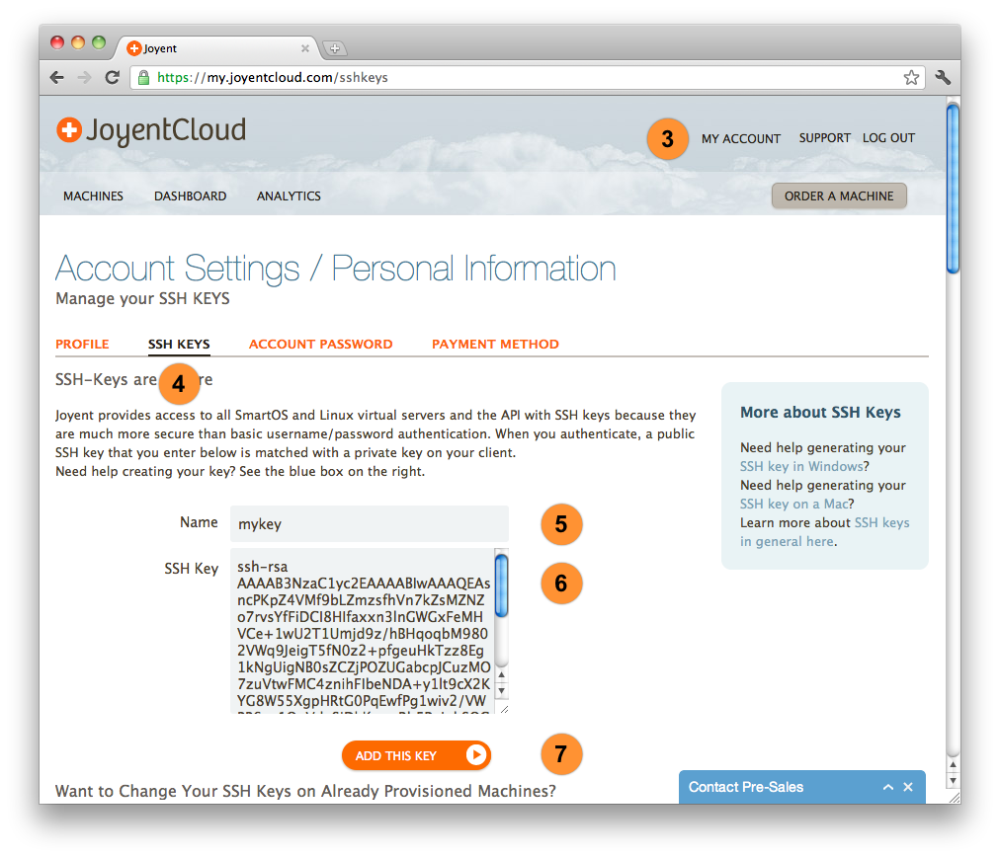
Connecting to Your Machine
You use the Terminal application and the ssh command to log in to your machine in the JoyentCloud. When you provision a machine, you will notice two IP addresses listed in the Overview section of the Machine Details page. One of the IP addresses is the public address. The second is the internal address for communication between SmartMachines / Virtual Machines in the same datacenter. After you provision a new machine, be sure to note the IP addresses. You will use the public address to connect to your machine.
- In a Terminal window, type this command to log in to your provisioned machine.
mymac:~ myname$ ssh root@198.51.100.27- If your SSH key has a passphrase, a window opens. Type in your passphrase and click OK.
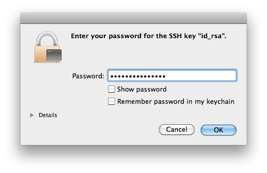
- If you entered your passphrase correctly, you will be logged in to your machine.
root@myprovisioned:~#Troubleshooting
There are a few reasons that you may see a password prompt like this:
mymac:~ myname$ ssh root@198.51.100.27
root@198.51.100.27's password:- You did not enter the correct passphrase.
- The private key on you Macintosh (id_rsa) does not match the public key stored with your JoyentCloud account.
- The public key was not entered correctly in your JoyentCloud account.
資料來源：Joyent Wiki
頁面：Accessing+Your+SmartMachine+from+Windows+with+PuTTY.md
資料來源：Joyent Wiki
頁面：All+Package+List+of+SmartOS.md
各版本SmartOS套件
可使用pkgin search指令去查詢您需要的套件安裝
pkgin詳細指令:
pkgin usage]
頁面：Application+Micloud.md
我要如何申請MiCloud服務？
帳戶申請
您可透過連線http://micloud.tw
登入系統
申請帳號完成後，系統將寄發通知信函給您，表示您已完成註冊。
MiCloud的計費方式如何？
- MiCloud提供三種不同的虛擬主機服務：SmartMachine、Ubuntu Linux、Windows R2 2008，分別可針對不同需求有不同的記憶體、CPU、硬碟規格，詳細計費方式，請參考micloud產品價目表:http://portal.micloud.tw/price/price
有試用版可以先使用嗎？
- 目前Micloud已有提供公測/免費主機，提供客戶三十天免費使用，每個email可免費申請256MB主機一台。
申請管道: 直接至https://micloud.tw
頁面：Apply+MiCloud+Account%28Enterprise%29.md
[{Flash src='http://www.youtube.com/v/24qrH7xNDwg&hd=1' controls= 'false' play='false' width=640 height=480 }]
申請MiCloud帳號(企業用戶)([http://micloud.tw])
](申請MiCloud帳號 - 企業用戶 - [http://micloud.tw
)
若您還未註冊MiCloud，請於網頁左上角點選右邊選項＜註冊＞。
若您已註冊完MiCloud，請於網頁左上角點選左邊選項＜登入＞([帳戶資訊修改](MiCloud Account Modify)
設定帳號&密碼
進入註冊新帳戶頁面填寫您的資料
請於紅色框框內選擇您的帳戶類別(企業用戶)
填寫會員資料
填寫帳單資料
註冊完成
註冊完成後您將可以看到我們所提供的產品
若您想要購買我們的產品
將需要您先行填寫信用卡資料才可進行購買(若您選擇信用卡付款)
信用卡資料填寫可於頁面右上角"[帳戶設定](MiCloud Account Modify)

頁面：Apply+MiCloud+Account%28Personal%29.md
[{Flash src='http://www.youtube.com/v/No2F5sJcwXE&hd=1' controls= 'false' play='false' width=640 height=480 }]
申請MiCloud帳號(個人用戶)([http://micloud.tw])
](申請MiCloud帳號 - 個人用戶 - [http://micloud.tw
)
若您還未註冊MiCloud，請於網頁左上角點選右邊選項＜註冊＞。
若您已註冊完MiCloud，請於網頁左上角點選左邊選項＜登入＞([帳戶資訊修改](MiCloud Account Modify)
設定帳號&密碼
進入註冊新帳戶頁面填寫您的資料
請於紅色框框內選擇您的帳戶類別

填寫會員資料

填寫帳單資料
註冊完成
註冊完成後您將可以看到我們所提供的產品
若您想要購買我們的產品
將需要您先行填寫信用卡資料才可進行購買
信用卡資料填寫可於頁面右上角"[帳戶設定](MiCloud Account Modify)

頁面：Apply+MiCloud+Account(new).md
申請MiCloud帳號
](申請MiCloud帳號 - [http://micloud.tw
)
請於MiCloud首頁左上角點選右邊選項＜註冊＞。
設定帳號&密碼
進入註冊新帳戶頁面填寫電子郵件&密碼
電子郵件將作為日後登入之用途，平台相關資訊將寄送至此註冊之郵件地址，請務必填寫正確之地址，以避免權益受損。

註冊完成
註冊完成後，您將可以訂購我們所提供的產品(訂購前，需至先先完成帳單資訊及付款方式填寫，此相關操作說明，請參考"[帳戶資訊修改](MiCloud Account Modify)

頁面：Apply+MiCloud+Account-Enterprise.md
申請MiCloud帳號(企業用戶)([http://micloud.tw])
](申請--MiCloud--帳號 - 企業用戶 - --[http://micloud.tw--
)
若您還未註冊MiCloud，請於網頁左上角點選右邊選項＜註冊＞。
若您已註冊完MiCloud，請於網頁左上角點選左邊選項＜登入＞([帳戶資訊修改](MiCloud Account Modify)
設定帳號&密碼
進入註冊新帳戶頁面填寫您的資料
請於紅色框框內選擇您的帳戶類別(企業用戶)
填寫會員資料
填寫帳單資料
註冊完成
註冊完成後您將可以看到我們所提供的產品
若您想要購買我們的產品
將需要您先行填寫信用卡資料才可進行購買(若您選擇信用卡付款)
信用卡資料填寫可於頁面右上角"[帳戶設定](MiCloud Account Modify)
頁面：Apply+MiCloud+Account-new.md
申請MiCloud帳號(http://micloud.tw)
申請MiCloud帳號
請於MiCloud首頁左上角點選右邊選項＜註冊＞。

設定帳號&密碼
進入註冊新帳戶頁面填寫電子郵件&密碼
電子郵件將作為日後登入之用途，平台相關資訊將寄送至此註冊之郵件地址，請務必填寫正確之地址，以避免權益受損。
註冊完成
註冊完成後，您將可以訂購我們所提供的產品(訂購前，需至先先完成帳單資訊及付款方式填寫，此相關操作說明，請參考"[帳戶資訊修改](MiCloud Account Modify)
頁面：Apply+MiCloud+Account-Personal.md
申請MiCloud帳號(個人用戶)([http://micloud.tw])
](申請--MiCloud--帳號 - 個人用戶 - --[http://micloud.tw--
)
若您還未註冊MiCloud，請於網頁左上角點選右邊選項＜註冊＞。
若您已註冊完MiCloud，請於網頁左上角點選左邊選項＜登入＞([帳戶資訊修改](MiCloud Account Modify)
設定帳號&密碼
進入註冊新帳戶頁面填寫您的資料
請於紅色框框內選擇您的帳戶類別
填寫會員資料
填寫帳單資料
註冊完成
註冊完成後您將可以看到我們所提供的產品
若您想要購買我們的產品
將需要您先行填寫信用卡資料才可進行購買
信用卡資料填寫可於頁面右上角"[帳戶設定](MiCloud Account Modify)

頁面：Apply+MiCloud+Account.md
===
===
===
===
===
===
===
===
===
頁面：ApplyAndOrder.md
MiCloud自助服務操作資訊
申請及訂購
線上管理
- 帳戶管理
- 主機管理
更新主機套件庫來源及安裝軟體
- 變更套件庫來源及安裝軟體(Ubuntu)
- 變更套件庫來源及安裝軟體(Debian)
- 變更套件庫來源及安裝軟體(CentOS)
- 變更套件庫來源及安裝軟體(Fedora)
- 更新套件庫及安裝軟體(SmartOS)
金鑰相關使用教學
檔案上傳教學
- 使用指令上傳檔案(Windows至Linux)
- 使用指令上傳檔案(Linux/Unix)
- 使用指令上傳檔案(MacOS)
- 使用軟體上傳檔案(WinScp)
- 使用軟體上傳檔案(FileZilla)
- 使用指令上傳檔案(Windows至Windows)
- 使用指令上傳檔案(Linux至Windows)
Hostname設定教學
常見之設定
頁面：Backing+Up+MySQL+with+Webmin.md
資料來源：Joyent Wiki
頁面：BlogShare.md
Blog分享
頁面：CentOS+mirror+site.md
目前MiCloud提供的系統各自採用國外所提供的套件庫，主要是因為台灣的鏡像站點並不保證其服務的可靠度及可用率，但您也可以透過修改設定檔將套件庫來源指向台灣，其可靠度您必須自行評估，以保障您的虛擬主機。
CentOS引入了為Yellow Dog Linux 而設的YUM系統套件管理工具，其套件庫的修改與設定相似。實際修改方式如下說明:
變更套件來源
登入後，請先複製“CentOS-Base.repo”檔案，此檔案存放在“/etc/yum.repos.d/”下，此複製動作針對改錯時，未來可以回復原來的檔案。將CentOS-Base.repo檔案複製一份，命名為CentOS-Base.repo.bak，指令如下
#cp /etc/yum.repos.d/CentOS-Base.repo /etc/yum.repos.d/CentOS-Base.repo.bak備份完成後請至/etc/yum.repos.d下確認是否成功增加CentOS-Base.repo.bak檔，如下圖

編輯repo檔，編輯指令如下:
#vi /etc/yum.repos.d/CentOS-Base.repo[base]]([base)
#mirrorlist=http://mirrorlist.centos.org/?release=$releasever&arch=$basearch&repo=os
baseurl=http://opensource.nchc.org.tw/centos/$releasever/os/$basearch/
[updates]]([updates)
#mirrorlist=http://mirrorlist.centos.org/?release=$releasever&arch=$basearch&repo=updates
baseurl=http://opensource.nchc.org.tw/centos/$releasever/updates/$basearch/
[extras]]([extras)
#mirrorlist=http://mirrorlist.centos.org/?release=$releasever&arch=$basearch&repo=extras
baseurl=http://opensource.nchc.org.tw/centos/$releasever/extras/$basearch/
[centosplus]]([centosplus)
#mirrorlist=http://mirrorlist.centos.org/?release=$releasever&arch=$basearch&repo=centosplus
baseurl=http://opensource.nchc.org.tw/centos/$releasever/centosplus/$basearch/
[contrib]]([contrib)
#mirrorlist=http://mirrorlist.centos.org/?release=$releasever&arch=$basearch&repo=contrib
baseurl=http://opensource.nchc.org.tw/centos/$releasever/contrib/$basearch/修改完後儲存即可。

請執行更改後的檔案，並確認是否更新，執行指令及畫面如下
- 清除yum的暫存
#yum clean all
- 列出有更新的檔案
#yum list
- 執行更新
#yum update
- 找到您更新過的路徑
#yum repolist –v
更多CentOS mirror site list
- Debian全球映射站
http://www.centos.org/modules/tinycontent/index.php?id=30
- 台灣鏡像站推薦使用
http://opensource.nchc.org.tw/centos/
http://mirror01.idc.hinet.net/CentOS/
http://ftp.twaren.net/Linux/CentOS/
http://ftp.isu.edu.tw/pub/Linux/CentOS/
安裝非預載套件
使用yum指令安裝CentOS套件，相關指令如下:
先查詢可安裝的套件
#yum list
若找不到您需要的套件也可透過下面的指令來搜尋
#yum search [套件名稱/關鍵字]](#yum search [套件名稱/關鍵字)
再執行安裝，指令如下
#yum install [套件名稱]](#yum install [套件名稱)
若想移除套件，指令如下
#yum remove [套件名稱]](#yum remove [套件名稱)
頁面：Changing+Default+SmartMachine+Passwords.md
There are a few default passwords that should be changed when you first get your SmartMachine. This is how to change them via the command line.
If you intend to use Virtualmin to manage hosting for your SmartMachine, it's advisable to use the Virtualmin controls for password changing, so that Virtualmin knows the passwords for your users and can use them as it goes. Otherwise you may get into a situation where a single user has a different password for system login, and for MySQL or SVN. This applies to users created through Virtualmin (i.e. not 'root' and 'admin').
Please note, once you change any passwords, those will not update your machine credentials in your my.joyentcloud.com portal.
You should change passwords on older cloud SmartMachines.
If you use my.joyentcloud.com for your SmartMachines the admin and root system accounts are secured with their system passwords locked.
You can use this process to set the system passwords if you need to on a new Joyent cloud SmartMachine.Admin User
Log in to your SmartMachine over ssh.
Run this command:
passwd
You will need to enter your current password (supplied by Joyent) and your new password.
Root User
First log in as the admin user
Run this command:
sudo passwd root
You will not be prompted for the current password, but asked to enter in your new one.
MySQL Root User
1.Log in to MySQL:
-u root
-p2.You'll be prompted for your MySQL password, supplied by Joyent. Once at the MySQL prompt, run this command:
SET PASSWORD FOR root@localhost=PASSWORD('yournewpassword');
MySQL should return something like this
Query OK, 0 rows affected (0.05 sec)
You can then type quit to exit the command line MySQL interface.
After exiting the MySQL command line interface, you should edit your .mysql_history file to remove the entry that shows your password.
If you use webmin you also need to update the password there as well either via the webmin interface or editing /etc/webmin/mysql/config
Webmin User
Run this command:
sudo /opt/webmin-1.380/changepass.pl /etc/webmin admin yournewpassword
And that should allow you to change the password from the command line.
The path to changepass.pl may change as the version of webmin increases. In the example above its version 1.380.
After logging out and back in, you should edit your .bash_history file to remove the entry that shows your password.There is also probably a way to change the password from within webmin.
From within Webmin
- After logging in, click on the "Webmin" link at the top, next to Virtualmin,
- Then click on the +Webmin link to open the Webmin options.
- From there click on Webmin Users to view your list of users
- Click on Admin and you can change the password.
Updating Webmin modules configuration
If you changed the password of MySQL or PostgreSQL, and you care of any Webmin or Virtualmin functionality, you'll need to update both modules configuration in Webmin so that it has access. Just login to Webmin, switch your view to the Webmin pane, click MySQL or PostgreSQL and follow the 'Module Config' option on the top for a form that will let you enter the new root password for the service.
資料來源：Joyent Wiki
頁面：Checking+Disk+Usage.md
檢查磁碟使用情況
||如何得到這個資訊 ||請使用此命令
|查詢整個文件系統的磁碟空間使用情況 |df -ht
|查詢當前目錄的磁碟空間使用情況 |du -h
|查詢摘要目錄使用的空間 |du -hs /opt
在這些命令中的-h參數的結果，是以“人類可讀”的形式呈現。
資料來源：Joyent Wiki
頁面：Connect+windows.md
Windows 遠端桌面連線
MiCloud Windows Server預設開啓遠端桌面連線服務，讓您可以透過internet連線操控與安裝相關軟體，下面介紹如何使用遠端桌面連線從您的電腦連線至MiCloud Windows Server：
Windows 下遠端桌面連線 Windows
1.開啟"遠端桌面連線",輸入您的ip並按下連線
2.輸入您的密碼,,進入後您就可以開始使用
Linux 下遠端桌面連線 Windows
1.再左上方搜尋欄位中輸入搜尋欄位中輸入"remote desktop viewer",並點選開啟
2.開啟"remote desktop viewer"於左上方點選連線
3.於"主機(H):"欄位中輸入您將遠端連線的ip,"使用者名稱(U):"欄位中輸入您的帳號,並按下連線
2.輸入您的密碼,,進入後您就可以開始使用
Mac 下遠端桌面連線Windows
Mac下使用遠端桌面連線至windows server，要先安裝Microsoft Remote Desktop Connection Client for Mac(下載
相關設定如下:
1.安裝完成後，開啟Microsoft Remote Desktop Connection Client for Mac，輸入您的ip並按下connect。
2.輸入您的User name及Password，而Domain為您主機的ip，您就可開始使用。
頁面：Control+Panel+%26+Analysis.md
控制面板
此頁可讓您觀察來自世界各地的連線來源分佈狀況(如果想提供的是全球性的服務，此圖表數據相信會對您有所幫助)。
下方則是提供每秒TCP or HTTP連線數量。
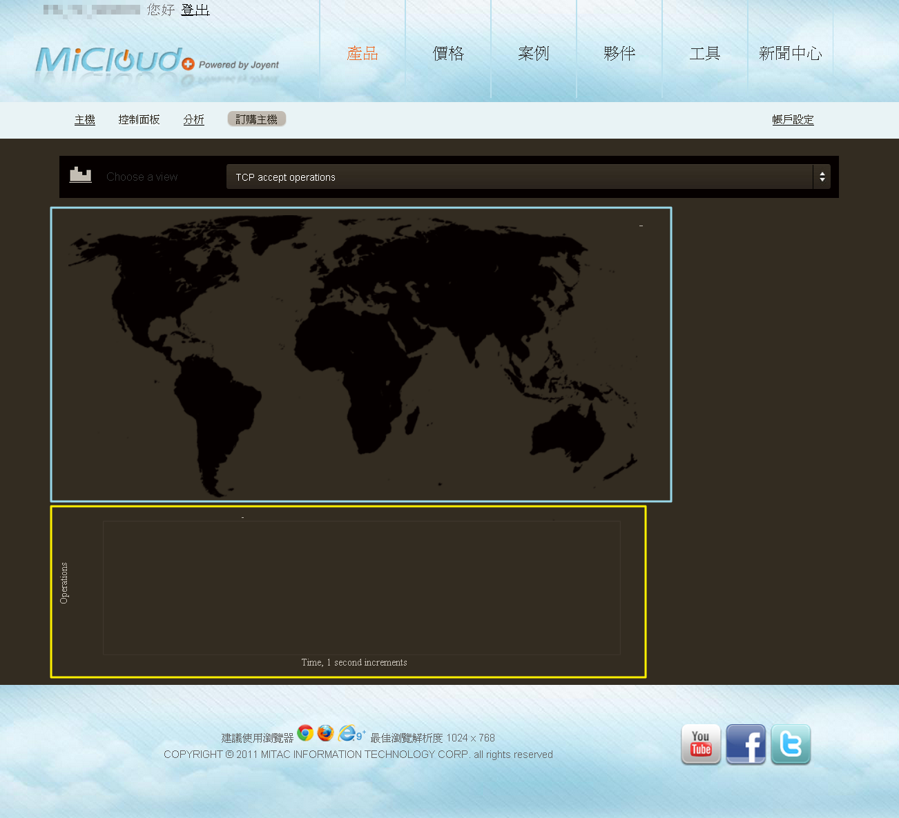
頁面：Control+Panel+&+Analysis.md
控制面板
此頁可讓您觀察來自世界各地的連線來源分佈狀況(如果想提供的是全球性的服務，此圖表數據相信會對您有所幫助)。
下方則是提供每秒TCP or HTTP連線數量。
頁面：Creating+a+Deploy+User.md
If you're using Capistrano or some other deployment utility, you should create a user account that has the proper rights and roles to deploy your application.
This user is called the "deploy user".
In this page:
Before You Begin
This topic assumes that you are deploying multiple applications on a SmartMachine and that your applications live on your SmartMachine like this:
/home/www.example.com/
/home/www.example2.com/You should have copies of the public SSH keys for each developer in your project who can deploy the application.
Creating the Deploy User
You can use the default user, jill, as the deploy user if you're deploying only a single application on your SmartMachine.- In Virtualmin, create a new user named deploy.
- Log in to your SmartMachine and run the following command to grant deploy role-based rights to use svcadm, svccfg, and other SMF commands:
usermod -P "Service Management" deploy- Add each developer's SSH public key to /home/deploy/.ssh/authorized_keys
Examples
This section contains examples for different deployment systems.
Capistrano
To deploy new code have your developers SSH in and run these commands:
set :user, "deploy"
set :runner, "deploy"
task :restart_web_server, :roles => :web do
run "svcadm restart http"
end資料來源：Joyent Wiki
頁面：Debian+mirror+site.md
目前MiCloud提供的系統各自採用國外所提供的套件庫，主要是因為台灣的鏡像站點並不保證其服務的可靠度及可用率，但您也可以透過修改設定檔將套件庫來源指向台灣，其可靠度您必須自行評估，以保障您的虛擬主機。
Debian採用APT套件管理，其套件庫的修改與設定相似，實際修改方式如下說明:
變更套件來源
登入後，請先複製“sources.list”檔案，此檔案存放在“/etc/apt/”下，此複製動作針對改錯時，未來可以回復原來的檔案。將sources.list檔案複製一份，命名為sources.bak，指令如下
#cp /etc/apt/sources.list /etc/apt/sources.list.bak備份完成後請至/etc/apt下確認是否成功增加sources.list.bak檔，如下圖

確認Debian 版本並編輯sources.list，編輯指令如下:
#vi /etc/apt/sources.list原來的套件庫參考網站為http://http.us.debian.org/debian/，將其改為參考台灣鏡像站http://opensource.nchn.org.tw/debian/” 下圖紅色框框部分即是要修改的部分
deb http://opensource.nchc.org.tw/debian squeeze main contrib non-free
deb http://opensource.nchc.org.tw/debian squeeze-updates main contrib non-free
deb http://security.debian.org/ squeeze/updates main contrib non-free修改完後儲存即可。

請執行更改後的檔案，並確認是否更新，執行指令及畫面如下系統將於您更改的路徑中找到可更新的套件。(如下方黃色底線)
#apt-get update
更多Debian mirror site list
- Debian全球映射站
http://www.debian.org/mirror/list
- 台灣鏡像站推薦使用
http://opensource.nchc.org.tw/debian/
http://ftp.tw.debian.org/debian/
http://opensource.nchc.org.tw/debian/
http://debian.linux.org.tw/debian/
安裝非預載套件
使用apt指令安裝Debian套件，相關指令如下:
先查詢可安裝的套件
#apt-cache pkgnames
若找不到您需要的套件也可透過下面的指令來搜尋
#apt-cache search [套件名稱/關鍵字]](#apt-cache search [套件名稱/關鍵字)
再執行安裝，指令如下
#apt-get install [套件名稱]](#apt-get install [套件名稱)
檢查是否安裝成功，指令如下
#dpkg --get-selections | grep "套件名稱"
若想移除套件，指令如下
#apt-get remove [套件名稱]](#apt-get remove [套件名稱)
若要更新所有己安裝的套件，指令如下:
#apt-get upgrade
頁面：Different.md
租用MiCloud與租用虛擬主機有何不同？
- 租用的虛擬主機的運算效能與資源皆是由一台主機去分割使用的，所以當其中的一個使用者所使用的資源過大時，其他的使用者都將會受到影響。而MiCloud擁有Joyent所開發的雲端運算作業系統，不但能夠將運算效能與資源完全獨立分割出來，相對於租用的虛擬主機無法進行橫向、直向的擴充以及資源的調配，MiCloud都能輕鬆的完成。
MiCloud服務能做些什麼？
- MiCloud針對不同產業殊特需求提供服務，例如中小企業使用的ERP服務MiERP，讓中小企業可以客製化自己的線上ERP系統，還有鎖定教育市場的線上互動學習系統、網路商店服務。
- 針對醫療產業所提供的服務，包括了提供醫院與病患使用的行動照護平台，醫院內部門診管理、健保申報、統計分析的資訊系統，還有針對生技研究需求的研究平台，供物種定序與個人基因解碼研究。
頁面：Disabling+or+Restarting+Webmin.md
At times it may be necessary to disable the administration web server of your SmartMachine (aka. Virtualmin or Webmin). The following is how you disable and restart this service using SMF.
In this page:
Disable Webmin
SSH into your SmartMachine, then switch to the root user and run:
svcadm disable webminRestart Webmin
If a service crashes that is maintained by SMF it will be placed into a 'maintenance mode'. The following process is how to restart a service that has been disabled or that is in maintenance mode:
Check to see if service is in Maintenance Mode
If a service is in maintenance mode it has cashed and is usually inductive of an error with the service or your SmartMachine is running out of RAM or Disk.
To check that a service is in maintenance mode:
svcs -aIf the service is in maintenance mode you will see something similar to this:
maintenence 18:50:25 svc:/network/webmin:webmin
You should review the log and check for a core file to derive root cause of why the service was in maintenance mode.
To bring a service out of maintenance mode run the following as root:
svcadm clear service_nameVerify service is disabled
To verify a service is disabled run this command:
svcs -aIf the service is disabled you will see something similar to this:
disabled 18:51:10 svc:/network/webmin:webmin
Enable service
To start a service run this command as root:
svcadm enable service_nameThen verify the service is running with:
svcs -a | grep service_nameYou should see something similar to this:
online 18:50:25 svc:/network/webmin:webmin
"online" state indicates that the service is back and running.
資料來源：Joyent Wiki
頁面：DNS+Manage.md
DNS設置
若您想在MiCloud主機上設置DNS，請先至網址註冊商(例如:Godaddy)申請一個Domain Name，設置方式有以下二種:
子網域指向MiCloud DNS Server
直接將您所申請的Domain Name指向MiCloud DNS Server
詳細說明如下:
設置子網域
- 請先新增一個子網域，並將Points to設為MiCloud DNS Server :
dns60.micloud.tw或dns64.micloud.tw

2.新增完成後，請至MiCloud平台點選”DNS管理”下”專屬網域之主機”按鈕。

3.進入頁面後，請點選”新增Domain”按鈕，將剛剛所新增的子網域名稱加入頁面中。

4.新增成功後，點選”新增A Record”，即可為您的主機設置Domain name。

5.驗證Domain，使用命令提示字元或直接將您所設至的Domain Name貼至網址列即可。
命令提示字元請執行下方指令做驗證:
nslookup portal.test.facewithus.com

或者可以直接將記錄指向MiCloud DNS server查詢：
nslookup portal.test.facewithus.com dns60.micloud.tw

設置整個網域
- 將您申請的網域名稱的server設至MiCloud DNS Server。以Godaddy為例。
MiCloud DNS Server:
DNS60.MICLOUD.TW
DNS64.MICLOUD.TW


2.修改完成後，請至MiCloud平台點選”DNS管理”下”專屬網域之主機”按鈕。
3.進入頁面後，請點選”新增Domain”按鈕，將您的網域名稱新增至頁面中。
4.新增成功後，點選”新增A Record”，即可為您的主機設置Domain name。
5.驗證Domain，使用命令提示字元或直接將您所設至的Domain Name貼至網址列即可。
命令提示字元請執行下方指令做驗證:
nslookup portal.test.facewithus.com

或者可以直接將記錄指向MiCloud DNS server查詢：
nslookup portal.test.facewithus.com dns60.micloud.tw

頁面：Enable+SMTP+on+SmartOS+Plus.md
如果您需要建立電子郵件伺服器來收發電子郵件，您必須在您的主機上啟用此服務，而處理電子郵件收發服務的通訊協定為簡易郵件傳送通訊協定，簡稱SMTP(Simple Mail Transfer Protocol)，在SmartMachines上SMTP預設是關閉，但用戶可以利用以下步驟來啟用SMTP的服務。
前置作業
在啟動SmartOS 主機上的SMTP之前，必需先安裝postfix和courier，您可以先使用pkgin search指令搜尋是否已有存在postfix 、courier，指令如下：
#pkgin se postfix
# pkgin se courier
透過svcs指令確認postfix及courier的服務處於運行狀態
#svcs -a | grep -Ee "postfix|courier”
從上面的擷圖可以看出，預設只有postfix是啟動的(online)，而courier中的authlib及imap的服務是關閉狀態，您必須透過svcadm enable 指令來啟動courier的兩項服務，指令如下:
#svcadm enable svc:/network/courier:imap
#svcadm enable svc:/network/courier:authlib
避免有些服務未啟用，故再次執行svcs指令來確認服務是否正常執行中:
啟動SMTP
- 啟動SMTP的過程中，首先需要做連結檔，未來postfix可以直接在此檔中找到我們所要的的函式庫(lib)，指令如下:
# ln -s /opt/local/etc/sasl2/etc/sasl2- postfix裡需修改main.cf及master.cf檔。main.cf是postfix最重要的設定檔，所有修改的動作皆需在這個檔案裡進行修改；master.cf主要是規定postfix每個程序的運作參數。
- 修改main.cf檔，此檔案的路徑存在 /opt/local/ect/postfix/main.cf，新增內容如下擷圖中以紅色框框起來的部分。
- *inet_interfaces=all，設定postfix能使用的網路介面，一般預設為localhost， 如果是對外服務的郵件主機，就必須要設定為all。
- *smtpd_sasl_auth_enable=yes，“確定是否針對Client啟動sasl的認證？”預設是不啟用，須自行將它啟用。

- 修改master.cf，此檔案的路徑存在 /opt/local/ect/postfix/master.cf，新增內容如下擷圖中以紅色框框起來的部分。
- *smtpd_enforce_tls=no，啟動auth 驗證。
- *smtpd_tls_cert_file=opt/local/etc/openssl/private/salfsigned.pem
- *smtpd_tls_loglevel=0
- *smtpd_use_tls=yes

驗證程序
- 服務設定完成後，利用以下指令確認是否設定成功，其中”Content” 為信件內容，”The Subject”為信件主旨，在信件主旨之後則是您需要測試收到系統所發出的電子郵件地址，此範例的電子郵件地址是設定傳送到Gmail。

- 完成後可以前往電子郵件信箱確認是否收到信件，如下圖所示收到主旨為“The Subject”的郵件，表示此設定為成功。

頁面：Examining+Running+Processes.md
在這個主題中，您可以找到：
從 shell 檢查程序
||相關資訊 ||使用此命令
|通用處理器和內存統計資料 |prstat -Z -s cpu
If prstat changes your terminal settings, use the reset command to reset them.
|正在運行的程序列表 |ps -elf
|admin用戶程序列表 |ps -uadmin -o pcpu,user,pid,args,comm,s
ps -uadmin -o user,args,pcpu,pmem,vsz,time,comm
|MySQL用戶程序 |ps -umysql -o pcpu,vsz,osz,args,comm,s
|CPU使用率 |sudo /root/jinf -C
|記憶體使用 |sudo /root/jinf -m
|互換空間的使用情況 |sudo /root/jinf -S
檢查Webmin的過程
- 登錄到Virtualmin（請參考帳戶登錄及重要網址一文 ）。
- 點擊Webmin在左上方的選單，然後點選系統=>運行的程序。
- 點擊PID、用戶、記憶體、或是CPU，以便為您的帳戶上運行的程序列表，分別按不同標準進行排序。
資料來源：Joyent Wiki
頁面：Facebook+SSL+FAQ.md
As of October 1st, 2011 Facebook requires all applications to use Secure Socket Layer ( SSL ) certificates. This page is for Facebook developers to be able to serve their applications via HTTPS with a SSL Certificate.
In this page:
Why is Facebook requiring SSL certificates?
Facebook has updated their Terms of Service that require all applications served from them to have a SSL certificate and use the HTTPS protocol.
More information of the change by Facebook can be found here and Joyent blogged about this.
Can I use my free Joyent Facebook developer account with SSL?
No, You will need to buy a Joyent SmartMachine to get a static IP to bind your domain to. The free Joyent Facebook accounts do not support SSL. You can get a Joyent SmartMachine form https://my.joyentcloud.com/, then purchase a SSL certificate.
How do I get a SSL certificate?
You will have to purchase a SSL certificate from a third party vendor. Joyent uses RapidSSL for its SSL certificates, but you can use your vendor of choice.
How do I install an SSL certificate on my Joyent SmartMachine?
You can install your SSL certificate via your VirtualMin administration portal for your SmartMachine.
You will not be able to use the provided *.joyent.us subdomain. You will need to purchase your own domain name to be use with the SSL certificate if you have not already done so.To enable this SSL setup for your site:
- Sign in to Virtualmin.
- Select a domain from the drop-down in the left-hand navigation. This is the domain that *you'll enable SSL for.
- Click Edit Virtual Server.
- Click Enabled features and then select 'SSL website enabled'.
- Click Save Virtual Server.
- A page will appears warning you that SSL cannot be enabled for more than one domain on the IP address. Click Yes, Modify Virtual Server to override and conclude with the SSL setup.
With this feature enabled, Virtualmin will give you access to the Manage SSL Certificate page that lets you generate a new key, certificate or a signing request (i.e. generally manage your SSL protection details).
A dedicated IP is still necessary for having a real SSL certificate in place.These issues are believed to be resolved now (provided your SSL is implemented using the new form, with the SSL checkbox showing up enabled), though we'd welcome feedback from you.
More instructions on installing your SSL Certificate can be found at:
http://oldwiki.joyent.com/smartmachine:ssl#installing-your-ssl-certificate
Performance with SSL and HTTPS on a SmartMachine
There is minimal performance reduction with the added encryption on a Joyent SmartMachine.
However, all Joyent SmartMachines offer the following features that you can use to increase the general performance and monitoring of your Facebook application:
- Free subscription to New Relic included with all SmartMachines
- Free Joyent Cloud Analytic accessible form my.joyentcloud.com
- Ability to use a Zeus load balencer to increase performance and get more information about your customer traffic
資料來源：Joyent Wiki
頁面：Fedora+mirror+site.md
目前MiCloud提供的系統各自採用國外所提供的套件庫，主要是因為台灣的鏡像站點並不保證其服務的可靠度及可用率，但您也可以透過修改設定檔將套件庫來源指向台灣，其可靠度您必須自行評估，以保障您的虛擬主機。
Fedora引入了為Yellow Dog Linux 而設的YUM系統套件管理工具，其套件庫的修改與設定相似。實際修改方式如下說明:
變更套件來源
登入後，請先複製“fedora.repo、fedora-updates.repo、fedora-updates-testing.repo”這三個檔案存放在“/etc/yum.repos.d/”下，此複製動作針對改錯時，未來可以回復原來的檔案。
將fedora.repo、fedora-updates.repo、fedora-updates-testing.repo複製一份，命名為fedora.repo.bak、fedora-updates.repo.bak、fedora-updates-testing.repo.bak，指令如下:
#cp /etc/yum.repos.d/fedora.repo /etc/yum.repos.d/fedora.repo.bak
#cp /etc/yum.repos.d/fedora-updates.repo /etc/yum.repos.d/fedora-updates.repo.bak
#cp /etc/yum.repos.d/fedora-updates-testing.repo /etc/yum.repos.d/fedora-updates-testing.repo.bak備份完成後請至/etc/apt下確認是否成功增加，如下圖:

編輯repo檔，編輯指令如下
* fedora.repo
#vi /etc/yum.repos.d/fedora.repo[fedora]]([fedora)
baseurl=http://opensource.nchc.org.tw/fedora/linux/releases/$releasever/Everything/$basearch/os/
#mirrorlist=https://mirrors.fedoraproject.org/metalink?repo=fedora-$releasever&arch=$basearch
[fedora-debuginfo]]([fedora-debuginfo)
baseurl=http://opensource.nchc.org.tw/fedora/linux/releases/$releasever/Everything/$basearch/debug/
#mirrorlist=https://mirrors.fedoraproject.org/metalink?repo=fedora-debug-$releasever&arch=$basearch
[fedora-source]]([fedora-source)
baseurl=http://opensource.nchc.org.tw/fedora/linux/releases/$releasever/Everything/source/SRPMS/
#mirrorlist=https://mirrors.fedoraproject.org/metalink?repo=fedora-source-$releasever&arch=$basearch修改完後儲存即可。

- fedora-updates.repo
# vi /etc/yum.repos.d/fedora-updates.repo[updates]]([updates)
baseurl=http://opensource.nchc.org.tw/fedora/linux/updates/$releasever/$basearch/
#mirrorlist=https://mirrors.fedoraproject.org/metalink?repo=updates-released-f$releasever&arch=$basearch
[updates-debuginfo]]([updates-debuginfo)
baseurl=http://opensource.nchc.org.tw/fedora/linux/updates/$releasever/$basearch/debug/
#mirrorlist=https://mirrors.fedoraproject.org/metalink?repo=updates-released-debug-f$releasever&arch=$basearch
[updates-source]]([updates-source)
baseurl=http://opensource.nchc.org.tw/fedora/linux/updates/$releasever/SRPMS/
#mirrorlist=https://mirrors.fedoraproject.org/metalink?repo=updates-released-source-f$releasever&arch=$basearch修改完後儲存即可。

- fedora-updates-testing.repo
#vi /etc/yum.repos.d/fedora-updates-testing.repo[updates-testing]]([updates-testing)
baseurl=http://opensource.nchc.org.tw/fedora/linux/updates/testing/$releasever/$basearch/
#mirrorlist=https://mirrors.fedoraproject.org/metalink?repo=updates-testing-f$releasever&arch=$basearch
[updates-testing-debuginfo]]([updates-testing-debuginfo)
baseurl=http://opensource.nchc.org.tw/fedora/linux/updates/testing/$releasever/$basearch/debug/
#mirrorlist=https://mirrors.fedoraproject.org/metalink?repo=updates-testing-debug-f$releasever&arch=$basearch
[updates-testing-source]]([updates-testing-source)
baseurl=http://opensource.nchc.org.tw/fedora/linux/updates/testing/$releasever/SRPMS/
#mirrorlist=https://mirrors.fedoraproject.org/metalink?repo=updates-testing-source-f$releasever&arch=$basearch修改完後儲存即可。

請執行更改後的檔案，並確認是否更新，執行指令及畫面如下
* 清除yum暫存
#yum clean all
- 列出有更新的檔案
#yum list
- 執行更新
#yum update
- 找到您更新過的路徑
#yum repolist –v
更多Fedora mirror site list
- Fedora全球映射站
http://mirrors.fedoraproject.org/publiclist/
- 台灣鏡像站推薦使用
http://opensource.nchc.org.tw/fedora/
http://free.nchc.org.tw/fedora/linux/
http://ftp.twaren.net/Linux/Fedora/linux/
http://opensource.nchc.org.tw/fedora/linux/
安裝非預載套件
使用yum指令安裝Fedora套件，相關指令如下:
先查詢可安裝的套件
#yum list
若找不到您需要的套件也可透過下面的指令來搜尋
#yum search [套件名稱/關鍵字]](#yum search [套件名稱/關鍵字)
再執行安裝，指令如下
#yum install [套件名稱]](#yum install [套件名稱)
若想移除套件，指令如下
#yum remove [套件名稱]](#yum remove [套件名稱)
頁面：File+Upload+Tutorial%28FileZilla%29.md
檔案上傳教學(FileZilla)
影片:MiCloud 使用 FileZilla 配合 SSH-Key(.ppk) 上傳與下載檔案
[{Flash src='http://www.youtube.com/v/m_CBesKRE6s&hd=1' controls= 'false' play='false' width=640 height=480 }]
使用 FileZilla 配合 SSH-Key(.ppk) 上傳與下載檔案
加入 SSH-Key (紅色框框與黑色箭頭)
開啟 FileZilla 後,於 編輯(E) 內點選 設定(S)...
於左方欄位選擇 SFTP ,點選 加入金鑰檔案(A)...
選擇您的 Private Key 加入,完成後點選 確認 .
輸入相關設定(黃色框框)
主機(H):輸入您的主機IP
使用者名稱(U):root (root為MiCloud的預設帳號)
密碼(W):空白即可
連接阜(P):22 (22為MiCloud的預設SSH連接阜)

頁面：File+Upload+Tutorial%28Linux+or+Unix%29.md
Linux/Unix Like 檔案傳輸
使用 openssh client，請帶參數 -i 來使用 private ssh key。
上傳：
scp -i id_rsa /home/Test/upload.txt root@211.123.123.123:/home/Test_2

下載：
scp -i id_rsa root@211.123.123.123:/home/Test_2/download.txt /home/Test

頁面：File+Upload+Tutorial%28Linux+to+Windows%29.md
檔案上傳與下載教學(Linux至Windows)
要從MiCloud Windows Server上進行軟體或檔案的上下載有許多方式，在此建議您使用網路芳鄰方式來進行檔案傳輸。
下面介紹相關設定方式：
遠端登入Windows Server 2008 設定資料夾分享
- 新增資料夾並加以命名

- 在您要開啟共用的資料夾按下滑鼠右鍵選擇內容,並點選上方列表切換至共用頁面

3. 點選"進階共用(D)"

4. 勾選共用資料夾,點選完後可於下方點選"權限（P）",進入選擇您想給他人登入使用的權限


在Linux系統下，上傳與下載檔案
先將視窗點選到桌面，於左上角點選 File -> Connect to Server...

輸入相關資訊
- Server:輸入您將上傳或下載的機器的ip
- Domain name:輸入micloud.tw
- User name:輸入您的帳號
- Password:輸入您的密碼

- 進入後便可看到您共用的資料夾

- 若您要進一步上傳或下載檔案,需再次驗證您要登入的角色 , 然後您就能開始上傳與下載檔案


頁面：File+Upload+Tutorial%28MacOS%29.md
Mac OS 檔案傳輸
使用 openssh client，請帶參數 -i 來使用 private ssh key。
上傳：
scp -i id_rsa ./MiCRM.tgz root@211.123.123.123:/root/

下載：
scp -i id_rsa root@211.123.123.123:/tmp/MiCRM.tgz .

頁面：File+Upload+Tutorial%28PSCP%29.md
檔案上傳教學(指令)
影片:MiCloud 使用 PSCP 配合 SSH-Key(.ppk) 上傳與下載檔案
[{Flash src='http://www.youtube.com/v/Ha17-BbePI4&hd=1' controls= 'false' play='false' width=640 height=480 }]
使用 PSCP 配合 SSH-Key(.ppk) 上傳與下載檔案
設定環境變數
- 選擇一個資料夾放置 Putty 相關檔案(putty.exe,pscp.exe...)
本範例放在 C:
putty 資料夾內

* 於我的電腦空白處按右鍵,選擇 內容

* 於內容之上方表單選擇 進階 ,於下方點選 環境變數(N)

* 於下方 系統變數(S) 中下拉,點選變數 Path , 使用編輯(I)
於變數值最後加上分號(;)接著加上您putty所在資料夾的路徑
本範例則是加上 ;C:
putty
按下 開始 -> 執行(R) -> 輸入 cmd -> 按下 確定 後便會開啟命令提示字元 在命令提示字元中輸入 pscp 測試環境變數之設定是否成功
在命令提示字元中輸入 pscp 測試環境變數之設定是否成功
Putty 連線設定
左鍵雙擊下載之putty.exe，下圖為putty執行畫面：
請於Host Name (or IP address)內輸入您機器的IP,
Port 則是輸入 22 (22為MiCloud的預設SSH連接阜)
下方的 Saved Sessions 則是給您下次使用時能夠辨別這是哪一台機器用,所以能可以以您希望的名字命名,也可以使用當台機器的IP作為命名.

輸入完成後請於左邊的Category表單中點選 Connection -> SSH -> Auth 內(如下圖)
點選 Browse... 後選擇您的private key加入

為確保您使用Putty時不會出現中文亂碼,您可於左邊的Category表單中點選 Window -> Translation
於右方 Remote Character set: 的下拉式選單中選擇 UTF-8

為了下次能夠方便使用,請於左邊的Category表單中點選Session
回到Session後,點選右方的Save
這樣下次要連線這台機器時你就不用特別再去設定,只需要於左方Saved Sessions中左鍵雙擊你存下來的那個名子即可.

進入Putty後,他會要求你輸入帳號(Login as:),請輸入root
(註：連線時，請使用root登入，可不用輸入密碼：若使用預設帳號jill登入，則請參照Customer Portal上Credential設定。)

PSCP 指令介紹
於MS-DOS 命令的視窗中輸入指令即可上傳與下載檔案
* (1) pscp 拷貝檔案(絕對路徑) 使用者(root)@電腦地址(IP):新檔名(絕對路徑) - 從 MS Window 拷貝到 Linux 電腦
ex : 我要從我正在使用的電腦,放在C槽中的資料夾Windows_Test底下有一個upload.cpp的檔案,上傳到我在MiCloud申請的電腦(123.123.123.123)中,並放在/home/Linux_Test底下
所以我的指令會是 : pscp c:
Windows_Test
upload.cpp root@123.123.123.123:/home/Linux_Test
* (2) pscp 使用者(root)@電腦地址(IP):拷貝檔案(絕對路徑) 新檔名(絕對路徑) - 從 Linux 拷貝到 MS Window 電腦
ex : 我要從我在MiCloud申請的電腦(123.123.123.123)中抓一個download.cpp的檔案,它放在/home/Linux_Test底下,並將它放到我的電腦C槽中的資料夾Windows_Test底下
所以我的指令會是 : pscp root@123.123.123.123:/home/Linux_Test/download.cpp c:
Windows_Test
頁面：File+Upload+Tutorial%28Windows+to+Windows%29.md
檔案上傳與下載教學(Windows至Windows)
要從MiCloud Windows Server上進行軟體或檔案的上下載有許多方式，在此建議您使用網路芳鄰方式來進行檔案傳輸。
下面介紹相關設定方式：
遠端登入Windows Server 2008 設定資料夾分享
- 新增資料夾並加以命名

- 在您要開啟共用的資料夾按下滑鼠右鍵選擇內容,並點選上方列表切換至共用頁面

3. 點選"進階共用(D)"

4. 勾選共用資料夾,點選完後可於下方點選"權限（P）",進入選擇您想給他人登入使用的權限


在Windows系統下，上傳與下載檔案
- 開始 -> 執行 , 再填入您的ip（ex："//IP"）


- 輸入您的帳號密碼 ,就能開始上傳與下載檔案


頁面：File+Upload+Tutorial%28WinScp%29.md
檔案上傳教學(WinScp)
影片:MiCloud 使用 WinScp 配合 SSH-Key(.ppk) 上傳與下載檔案
[{Flash src='http://www.youtube.com/v/O-HDpdX7mD8&hd=1' controls= 'false' play='false' width=640 height=415 }]
使用 WinScp 配合 SSH-Key(.ppk) 上傳與下載檔案
WinScp 使用 SSH-key(.ppk) 與 MiCloud 機器連線
輸入 Session 內之欄位(紅色框框)
Host name : 輸入您的主機IP
Port number : 22 (22為MiCloud的預設SSH連接阜)
User name : root (root為MiCloud的預設帳號)
Password : 空白即可
Private key file : 點選右方藍色框框,選擇您的 Private Key(.ppk)

輸入完成後點選Login
WinScp 上傳與下載檔案
成功登入後,左邊紅色框框為你本機的資料夾,右邊藍色框框為你連線過去的電腦資料夾.
如果要上傳A檔案,只需要從左邊紅色框框內找出那份檔案後,將其拖曳去右邊的資料夾即可.
同理,如果要下載A檔案至你本機電腦,只需在右邊藍色框框內找出您的檔案後,拖曳至左邊紅色框框內即可.
頁面：File+Upload+Tutorial-FileZilla.md
檔案上傳教學(FileZilla)
影片:MiCloud 使用 FileZilla 配合 SSH-Key(.ppk) 上傳與下載檔案
使用 FileZilla 配合 SSH-Key(.ppk) 上傳與下載檔案
加入 SSH-Key (紅色框框與黑色箭頭)
開啟 FileZilla 後,於 編輯(E) 內點選 設定(S)...
於左方欄位選擇 SFTP ,點選 加入金鑰檔案(A)...
選擇您的 Private Key 加入,完成後點選 確認 .
輸入相關設定(黃色框框)
主機(H):輸入您的主機IP
使用者名稱(U):root (root為MiCloud的預設帳號)
密碼(W):空白即可
連接阜(P):22 (22為MiCloud的預設SSH連接阜)
頁面：File+Upload+Tutorial-Linux+or+Unix.md
Linux/Unix Like 檔案傳輸
使用 openssh client，請帶參數 -i 來使用 private ssh key。
上傳：
scp -i id_rsa /home/Test/upload.txt root@211.123.123.123:/home/Test_2
下載：
scp -i id_rsa root@211.123.123.123:/home/Test_2/download.txt /home/Test
頁面：File+Upload+Tutorial-Linux+to+Windows.md
檔案上傳與下載教學(Linux至Windows)
要從MiCloud Windows Server上進行軟體或檔案的上下載有許多方式，在此建議您使用網路芳鄰方式來進行檔案傳輸。
下面介紹相關設定方式：
遠端登入Windows Server 2008 設定資料夾分享
- 新增資料夾並加以命名
- 在您要開啟共用的資料夾按下滑鼠右鍵選擇內容,並點選上方列表切換至共用頁面
3. 點選"進階共用(D)"
4. 勾選共用資料夾,點選完後可於下方點選"權限（P）",進入選擇您想給他人登入使用的權限
在Linux系統下，上傳與下載檔案
先將視窗點選到桌面，於左上角點選 File -> Connect to Server...
輸入相關資訊
- Server:輸入您將上傳或下載的機器的ip
- Domain name:輸入micloud.tw
- User name:輸入您的帳號
- Password:輸入您的密碼
- 進入後便可看到您共用的資料夾
- 若您要進一步上傳或下載檔案,需再次驗證您要登入的角色 , 然後您就能開始上傳與下載檔案
頁面：File+Upload+Tutorial-MacOS.md
Mac OS 檔案傳輸
使用 openssh client，請帶參數 -i 來使用 private ssh key。
上傳：
scp -i id_rsa ./MiCRM.tgz root@211.123.123.123:/root/
下載：
scp -i id_rsa root@211.123.123.123:/tmp/MiCRM.tgz .
頁面：File+Upload+Tutorial-PSCP.md
檔案上傳教學(指令)
影片:MiCloud 使用 PSCP 配合 SSH-Key(.ppk) 上傳與下載檔案
使用 PSCP 配合 SSH-Key(.ppk) 上傳與下載檔案
設定環境變數
- 選擇一個資料夾放置 Putty 相關檔案(putty.exe,pscp.exe...)
本範例放在 C:
putty 資料夾內
* 於我的電腦空白處按右鍵,選擇 內容
* 於內容之上方表單選擇 進階 ,於下方點選 環境變數(N)
* 於下方 系統變數(S) 中下拉,點選變數 Path , 使用編輯(I)
於變數值最後加上分號(;)接著加上您putty所在資料夾的路徑
本範例則是加上 ;C:
putty
按下 開始 -> 執行(R) -> 輸入 cmd -> 按下 確定 後便會開啟命令提示字元
在命令提示字元中輸入 pscp 測試環境變數之設定是否成功
Putty 連線設定
左鍵雙擊下載之putty.exe，下圖為putty執行畫面：
請於Host Name (or IP address)內輸入您機器的IP,
Port 則是輸入 22 (22為MiCloud的預設SSH連接阜)
下方的 Saved Sessions 則是給您下次使用時能夠辨別這是哪一台機器用,所以能可以以您希望的名字命名,也可以使用當台機器的IP作為命名.
輸入完成後請於左邊的Category表單中點選 Connection -> SSH -> Auth 內(如下圖)
點選 Browse... 後選擇您的private key加入
為確保您使用Putty時不會出現中文亂碼,您可於左邊的Category表單中點選 Window -> Translation
於右方 Remote Character set: 的下拉式選單中選擇 UTF-8
為了下次能夠方便使用,請於左邊的Category表單中點選Session
回到Session後,點選右方的Save
這樣下次要連線這台機器時你就不用特別再去設定,只需要於左方Saved Sessions中左鍵雙擊你存下來的那個名子即可.
進入Putty後,他會要求你輸入帳號(Login as:),請輸入root
(註：連線時，請使用root登入，可不用輸入密碼：若使用預設帳號jill登入，則請參照Customer Portal上Credential設定。)
PSCP 指令介紹
於MS-DOS 命令的視窗中輸入指令即可上傳與下載檔案
* (1) pscp 拷貝檔案(絕對路徑) 使用者(root)@電腦地址(IP):新檔名(絕對路徑) - 從 MS Window 拷貝到 Linux 電腦
ex : 我要從我正在使用的電腦,放在C槽中的資料夾Windows_Test底下有一個upload.cpp的檔案,上傳到我在MiCloud申請的電腦(123.123.123.123)中,並放在/home/Linux_Test底下
所以我的指令會是 : pscp c:
Windows_Test
upload.cpp root@123.123.123.123:/home/Linux_Test
* (2) pscp 使用者(root)@電腦地址(IP):拷貝檔案(絕對路徑) 新檔名(絕對路徑) - 從 Linux 拷貝到 MS Window 電腦
ex : 我要從我在MiCloud申請的電腦(123.123.123.123)中抓一個download.cpp的檔案,它放在/home/Linux_Test底下,並將它放到我的電腦C槽中的資料夾Windows_Test底下
所以我的指令會是 : pscp root@123.123.123.123:/home/Linux_Test/download.cpp c:
Windows_Test
頁面：File+Upload+Tutorial-Windows+to+Windows.md
檔案上傳與下載教學(Windows至Windows)
要從MiCloud Windows Server上進行軟體或檔案的上下載有許多方式，在此建議您使用網路芳鄰方式來進行檔案傳輸。
下面介紹相關設定方式：
遠端登入Windows Server 2008 設定資料夾分享
- 新增資料夾並加以命名
- 在您要開啟共用的資料夾按下滑鼠右鍵選擇內容,並點選上方列表切換至共用頁面
3. 點選"進階共用(D)"
4. 勾選共用資料夾,點選完後可於下方點選"權限（P）",進入選擇您想給他人登入使用的權限
在Windows系統下，上傳與下載檔案
- 開始 -> 執行 , 再填入您的ip（ex："//IP"）
- 輸入您的帳號密碼 ,就能開始上傳與下載檔案
頁面：File+Upload+Tutorial-WinScp.md
檔案上傳教學(WinScp)
影片:MiCloud 使用 WinScp 配合 SSH-Key(.ppk) 上傳與下載檔案
使用 WinScp 配合 SSH-Key(.ppk) 上傳與下載檔案
WinScp 使用 SSH-key(.ppk) 與 MiCloud 機器連線
輸入 Session 內之欄位(紅色框框)
Host name : 輸入您的主機IP
Port number : 22 (22為MiCloud的預設SSH連接阜)
User name : root (root為MiCloud的預設帳號)
Password : 空白即可
Private key file : 點選右方藍色框框,選擇您的 Private Key(.ppk)
輸入完成後點選Login
WinScp 上傳與下載檔案
成功登入後,左邊紅色框框為你本機的資料夾,右邊藍色框框為你連線過去的電腦資料夾.
如果要上傳A檔案,只需要從左邊紅色框框內找出那份檔案後,將其拖曳去右邊的資料夾即可.
同理,如果要下載A檔案至你本機電腦,只需在右邊藍色框框內找出您的檔案後,拖曳至左邊紅色框框內即可.
頁面：Finding+Your+Way+Around+a+SmartMachine.md
If you're coming to a SmartMachine from Linux, you may find that some things are a little different than what you are familiar with. The SmartOS has most of the GNU tools that you are accustomed to, just that they are not default tools. Your fingers' muscle memory may find the differences a little unsettling at first, but rest assured that everything you're used to is still here. It's just in a different place, or it may have a different name.
Where things are
Most things are where you expect them to be. The following table lists the directories you'll find in your PATH variable.
||Directory ||Description
|/opt/local/bin
/opt/local/sbin |These directories contain the GNU tools as well as other tools installed on top of the standard system tools. When you install software with pkgsrc,
this is where it is installed by default. On other systems, this would be /usr/local/bin.
|/usr/xpg4/bin |This directory contains the basic Unix tools such as rm, ln, etc
|/usr/bin
/usr/sbin |These directories contain standard Unix tools.
|/opt/SUNWspro/bin |This directory, if it exists, is for the Sun C compiler. It's not normally installed.
Other directories you may be interested in are:
||Directory ||Description
|/home |User home directories.
|/home/admin |Home directory for the admin user.
|/home/jill |Home of the jill user (the website owner user).
|/home/jill/web/public |This is where website files reside (the 'document root').
|/shared |If you have purchased extra NFS storage, it will be mounted here.
|/var/adm |System logs. Other logs, such as httpd logs, are in /var/log.
|/usr/local |This is a symlink to /opt/local.
Commands that work differently
The things that make a SmartMachine different from other Unix-like systems generally fall in two categories:
- commands that have different names on SmartMachines
- things that are done differently on SmartMachines
For example, here are some common Linux commands that work differently.
||Command ||What's different on a Smart Machine
|df |The default is to us the SmartOS version. gdf may provide an output more familiar to Linux users.
|locate |This is a GNU tool, so it has been renamed to glocate. Likewise, you would use gupdatedb to set up its database.
|lsof |SmartMachines use a different collection of tools to examine processes. See Examining processes and memory later in this topic.
|ping |Returns whether a host responds or not. Use ping -s to get the continuous response you're used to
|top |top is available in /opt/local/bin, but prstat -Z provides more zone aware (and more accurate) information than top.
The Rosetta Stone for Unix
You can find the GNU tools in /opt/local/bin and /opt/local/sbin.
The vmstat, mpstat, and psrinfo commands display processor and memory statistics for the physical machine. Their output is not generally useful to you as a SmartMachine operator.
Do we have a tip section? One thing that is really neat with SMF is that you can set it to email you when a service is halted or crashes.
Peter Yorke - we need a section on creating your own start-up scripts like svccfg import /opt/local/share/smf/manifest/startupscript.xml
Installing Sofware
There are two ways to install additional software on your SmartMachine:
- install it from a package
- compile it from source
Installing Software From a Package
SmartMachines have a package manager like Debian (apt) or Redhat (rpm,yum) called pkgsrc to manage the installation of additional software. Joyent maintains a package repository of packages that are compatible with SmartMachines. The pkgin tool is the easiest way to work with packages.
This table lists the common pkgin commands. You need to run the commands that install software or update the package database as root or with sudo.
||Command ||Description
|pkgin up |Brings pkgin's database up to date. It's a good idea to run this command |before installing new packages.
|pkgin ls |Lists all the installed packages
|pkgin av |Lists all of the available packages
|pkgin in |Installs a package
|pkgin rm |Removes a package
|pkgin se |Searches for a package
|pkgin |With no additional arugments, lists all of the available pkgin commands.
For example, to install tidy, a utility that cleans up HTML code, you would do this:
sudo pkgin update
sudo pkgin in tidyCompiling Software From Source
If the software you want to use isn't available as a prebuilt package, you can compile it from source. Typically, you'll get a tarball that contains the software you want to install. After you unpack the tarball, the readme file will contain instructions for compiling the software.
For example, to install the lastest version of Ruby on your SmartMachine, you would use the following commands. Note that we're using the GNU versions of tar and make.
1. wget ftp://ftp.ruby-lang.org//pub/ruby/1.9/ruby-1.9.2-p0.tar.gz
2. gtar xvzf ruby-1.9.2-p0.tar.gz
3. cd ruby-1.9.2-p0
4. ./configure
5. gmake
6. ls
7. sudo gmake install
8. ruby -vExternal Links
Some really good links that we have found that make the SmartOS more familiar.
資料來源：Joyent Wiki
頁面：Footer.md
Copyright @ micloud.tw
頁面：Free+machine+%26+Connect+SSH.md
公測/免費主機金鑰設置與連線教學
說明：本次公測主機為MiCloud 2XS型號主機，為小於一般市場提供之虛擬主機機型，提供一般網頁服務應用與開發使用，其中網路連線部分提供Public DNS，讓您用主機之專屬DNS連限，連線方式請參考下面說明：
您申請免費30天試用服務後，SmartOS/Linux主機連線必須透過SSH協定與SSH Key的認證，以確保您與您的伺服器之間的連線安全。
1.若您已設定ssh key則使用您原本的私鑰進行連線
2.若您尚未設定ssh key則系統會發送一組私鑰和公鑰給您,相關設定如下:
Linux/MacOS主機
如您為Linux或MacOS用戶，在登入平台後，選擇主機，檢視主機的細項畫面，您可以看到如下資訊：

請直接使用下面指令連線：
ssh root@your.domain.name -p ssh_port -i your_private_keyex:
ex: ssh root@192-168-255-13.my.micloud.tw -p 65013 -i ~/.ssh/id_rsaWindows主機(使用Putty工具連線範例)
由於Putty採用特有格式的puk檔案來封裝SSH Key，因此必須透過Putty相關工具將MiCloud產出之Key File進行轉換，轉換動作如下：
(1)將信件中的私鑰下載至您的電腦中，如下圖:
(2)於下列網址下載PuTTy、Pageant and PuTTYgen，該工具可以協助您進行SSH Key的建立與SSH的連線。
網址為:http://www.chiark.greenend.org.uk/~sgtatham/putty/download.html

(3)執行puttygen.exe並點選Load，”檔案類型”選擇所有檔案，匯入您所下載的key

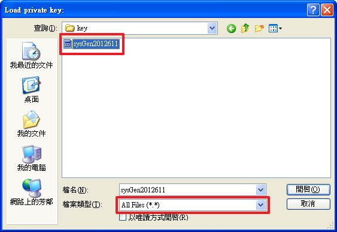
(4)匯入後會才會產生putty可執行的key，並將此金鑰儲存。


(5)開啟pageant.exe執行後程式會在螢幕的右下角如下圖:

點開後按下Add key按鈕，將上面所儲存的key開啟。
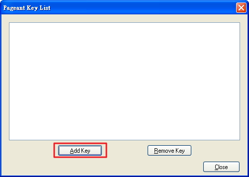

(6)新增完後請先登入平台選擇主機，檢視主機的細項畫面，再開啟putty.exe，hostname為DNS，設定完按下open按鈕，即可使用。


頁面：Free+machine+%26+Connect+Tutorial.md
主機金鑰設置與連線教學
說明：本次公測主機為MiCloud 2XS型號主機，為小於一般市場提供之虛擬主機機型，提供一般網頁服務應用與開發使用，其中網路連線部分提供Public DNS，讓您用主機之專屬DNS連線，連線方式請參考下面說明：
您申請免費30天試用服務後，SmartOS/Linux主機連線必須透過SSH協定與SSH Key的認證，以確保您與您的伺服器之間的連線安全。
1.若您已設定ssh key則使用您原本的私鑰進行連線
2.若您尚未設定ssh key則系統會發送一組私鑰和公鑰給您,相關設定如下:
Linux/MacOS主機
如您為Linux或MacOS用戶，在登入平台後，選擇主機，點選下方紅色框框部分的任何一台主機，會進入主機的細項畫面，您可以看到如下資訊：
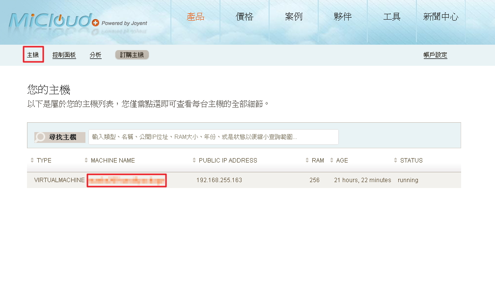

請直接使用下面指令連線：
ssh root@your.domain.name -p ssh_port -i your_private_keyex:
ssh root@192-168-255-13.my.micloud.tw -p 65013 -i ~/.ssh/id_rsaWindows主機(使用Putty工具連線範例)
由於Putty採用特有格式的puk檔案來封裝SSH Key，因此必須透過Putty相關工具將MiCloud產出之Key File進行轉換，轉換動作如下：
(1)將信件中的私鑰下載至您的電腦中，如下圖。
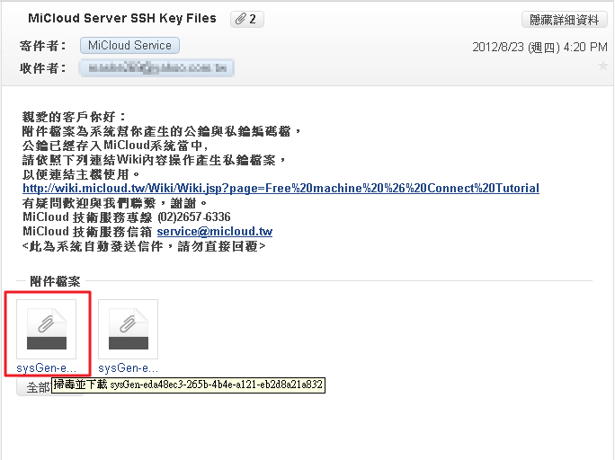
(2)於下列網址下載PuTTy、Pageant and PuTTYgen，該工具可以協助您進行SSH Key的建立與SSH的連線。
網址為:http://www.chiark.greenend.org.uk/~sgtatham/putty/download.html

(3)執行puttygen.exe並點選Load，”檔案類型”選擇所有檔案，匯入您所下載的key


(4)匯入後會才會產生putty可執行的key，並將此金鑰儲存，即可關閉程式。


(5)開啟pageant.exe執行後程式會在螢幕的右下角如下圖:

點開後按下Add key按鈕，將上面所儲存的key開啟。


(6)新增完後請先登入平台選擇主機，檢視主機的細項畫面，再開啟putty.exe，hostname為DNS，設定完按下open按鈕，進入putty後輸入root即可使用。


頁面：Free+machine+&+Connect+SSH.md
公測/免費主機金鑰設置與連線教學
說明：本次公測主機為MiCloud 2XS型號主機，為小於一般市場提供之虛擬主機機型，提供一般網頁服務應用與開發使用，其中網路連線部分提供Public DNS，讓您用主機之專屬DNS連限，連線方式請參考下面說明：
您申請免費30天試用服務後，SmartOS/Linux主機連線必須透過SSH協定與SSH Key的認證，以確保您與您的伺服器之間的連線安全。
1.若您已設定ssh key則使用您原本的私鑰進行連線
2.若您尚未設定ssh key則系統會發送一組私鑰和公鑰給您,相關設定如下:
Linux/MacOS主機
如您為Linux或MacOS用戶，在登入平台後，選擇主機，檢視主機的細項畫面，您可以看到如下資訊：
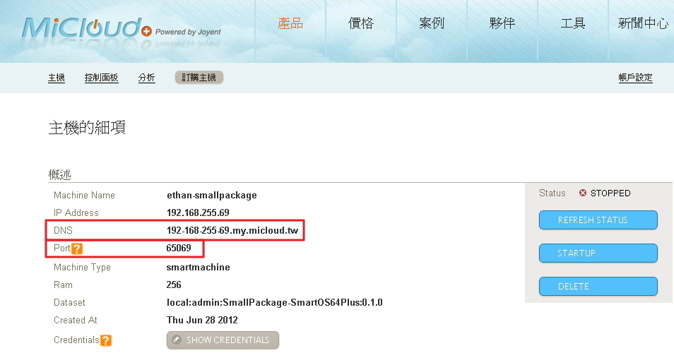
請直接使用下面指令連線：
ssh root@your.domain.name -p ssh_port -i your_private_keyex:
ex: ssh root@192-168-255-13.my.micloud.tw -p 65013 -i ~/.ssh/id_rsaWindows主機(使用Putty工具連線範例)
由於Putty採用特有格式的puk檔案來封裝SSH Key，因此必須透過Putty相關工具將MiCloud產出之Key File進行轉換，轉換動作如下：
(1)將信件中的私鑰下載至您的電腦中，如下圖:
(2)於下列網址下載PuTTy、Pageant and PuTTYgen，該工具可以協助您進行SSH Key的建立與SSH的連線。
網址為:http://www.chiark.greenend.org.uk/~sgtatham/putty/download.html

(3)執行puttygen.exe並點選Load，”檔案類型”選擇所有檔案，匯入您所下載的key
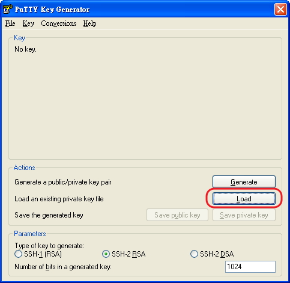

(4)匯入後會才會產生putty可執行的key，並將此金鑰儲存。

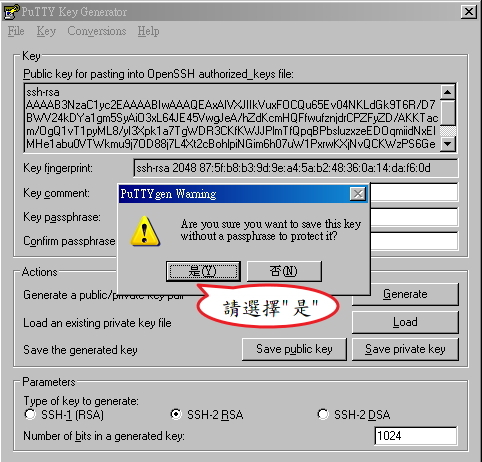
(5)開啟pageant.exe執行後程式會在螢幕的右下角如下圖:

點開後按下Add key按鈕，將上面所儲存的key開啟。

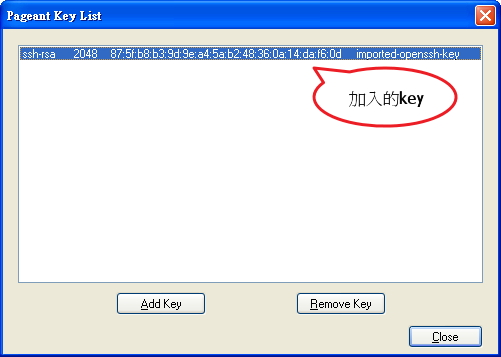
(6)新增完後請先登入平台選擇主機，檢視主機的細項畫面，再開啟putty.exe，hostname為DNS，設定完按下open按鈕，即可使用。
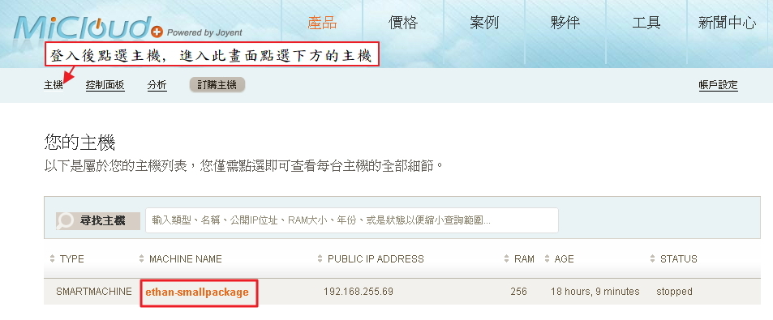
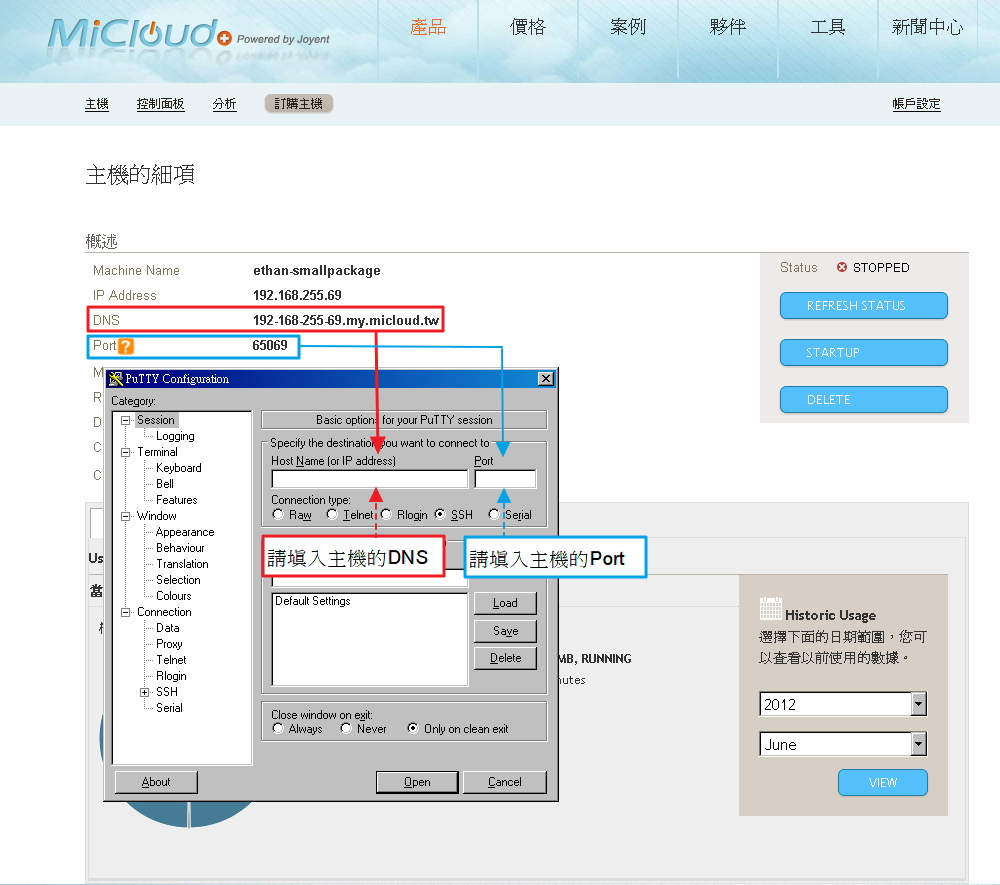
頁面：Free+machine+&+Connect+Tutorial.md
主機金鑰設置與連線教學
說明：本次公測主機為MiCloud 2XS型號主機，為小於一般市場提供之虛擬主機機型，提供一般網頁服務應用與開發使用，其中網路連線部分提供Public DNS，讓您用主機之專屬DNS連線，連線方式請參考下面說明：
您申請免費30天試用服務後，SmartOS/Linux主機連線必須透過SSH協定與SSH Key的認證，以確保您與您的伺服器之間的連線安全。
1.若您已設定ssh key則使用您原本的私鑰進行連線
2.若您尚未設定ssh key則系統會發送一組私鑰和公鑰給您,相關設定如下:
Linux/MacOS主機
如您為Linux或MacOS用戶，在登入平台後，選擇主機，點選下方紅色框框部分的任何一台主機，會進入主機的細項畫面，您可以看到如下資訊：


請直接使用下面指令連線：
ssh root@your.domain.name -p ssh_port -i your_private_keyex:
ssh root@192-168-255-13.my.micloud.tw -p 65013 -i ~/.ssh/id_rsaWindows主機(使用Putty工具連線範例)
由於Putty採用特有格式的puk檔案來封裝SSH Key，因此必須透過Putty相關工具將MiCloud產出之Key File進行轉換，轉換動作如下：
(1)將信件中的私鑰下載至您的電腦中，如下圖。

(2)於下列網址下載PuTTy、Pageant and PuTTYgen，該工具可以協助您進行SSH Key的建立與SSH的連線。
網址為:http://www.chiark.greenend.org.uk/~sgtatham/putty/download.html

(3)執行puttygen.exe並點選Load，”檔案類型”選擇所有檔案，匯入您所下載的key


(4)匯入後會才會產生putty可執行的key，並將此金鑰儲存，即可關閉程式。


(5)開啟pageant.exe執行後程式會在螢幕的右下角如下圖:

點開後按下Add key按鈕，將上面所儲存的key開啟。


(6)新增完後請先登入平台選擇主機，檢視主機的細項畫面，再開啟putty.exe，hostname為DNS，設定完按下open按鈕，進入putty後輸入root即可使用。


頁面：Free.md
有試用版可以先使用嗎？
- 目前Micloud已有提供公測/免費主機，提供客戶三十天免費使用，每個email可免費申請256MB主機一台。
申請管道: 直接至https://micloud.tw
頁面：Getting+Started+with+SmartOS+SmartMachines.md
This topic introduces you to your SmartMachine. It shows you how to verify that it's up and running and tells you what steps you should take next.
In this topic
First Things First - Joyent SmartLogin
The my.joyentcloud.com portal includes a feature we called SmartLogin, which allows customers to add ssh keys to their account which in turn is use to access provisioned SmartMachines and Linux VMs. In order to provision a machine (SmartMachine, Linux, Windows), you must have an ssh key set up in your My Account under "SSH Keys".You can manage multiple SSH keys here which will be required for the default initial access to your SmartMachines and Linux VMs.
While an SSH key is required before you can provision a SmartMachine, Linux VM, or Windows VM, access to a Windows VM is via user/password. The username and password are provided under the Machine Details page for the Windows VM.
For SmartOS and Appliance SmartMachines, you may edit, add or remove SSH keys at anytime and the changes will occur immediately on any running SmartMachines and SmartOS Appliances. For Linux VMs, the SSH key you wish to use must be added to your my.joyentcloud.com account before provisioning in order for it to be be added to the VM. Additional SSH keys must be manually added to Linux Virtual Servers for additional users post-provisioning.
Once you have at least one SSH key present in your account, you may choose from the list of servers, sizes and datacenters to provision and name a virtual server. Once provisioned, you may refresh and access details regarding your server, which will provide IP address and any additional login credentials for software or access privileges within your server.
Accessing Your SmartMachine From a Browser
Once your SmartMachine is running, it is available on the Internet. Until you set up domain name service for your SmartMachine, you can access it through the public IP address shown in your my.joyentcloud.com portal.
The Preconfigured Accounts
We have a variety of SmartMachine datasets and appliances that come with varying levels of preconfigured software and services. Depending on the SmartOS you choose, you may find additional credentials to these services within your SmartMachine Details, by clicking on the server name in your Machines list. Click show credentials to find various password information.
We are in the process of improving the organization of these credentials, but to clarify various usernames and services, please refer to the following:
SmartOSPlus is our primary SmartOS template that includes the most preconfigured and developer friendly packages and services. Information on various SmartOS datasets may be found here: http://wiki.joyent.com/display/jpc2/SmartOS+Smartmachine+Datasets.
%%(color:red)
Credential Examples:
root : password (this refers to your root user below)
admin : password (this refers to your admin user below)
mysql : password (this refers to your mysql “root” user below)
pgsql : password (this refers to your postgresql “postgres” user below
virtualmin : password (this refers to your virtualmin “admin” user password)
jill : password (this refers to username “jill” below)%%
root:
This is the root user for your SmartMachine. As with other Unix-like systems, root is the superuser and has permission to change any file on the system.You may login directly as root with your ssh keys, or as admin and su - to root.
admin:
The admin user is the default administration user for command line operation. It is a member of the staff group, so you can use sudo to perform administrative tasks without logging in as root. Use SSH to log in as admin:ssh admin@your.public.ip.address
mysql:
This refers to the running MySQL service on your SmartOSPlus SmartMachine. The default user account for this is “root”, and the password is found next to mysql in your system credentials. This is the account for the root user for MySQL databases. This is the MySQL user that has privileges to create more MySQL users. You can use the MySQL root account to create new databases, new users, to assign privileges to users, and so on. To access MySQL use the following command: mysql -u root -p. When prompted for a password, use the MySQL password for MySQL access from the system credentials, not the password for the root user.
pgsql:
This refers to the PostgreSQL service on your SmartOSPlus SmartMachine (the service is not running by default, but has been pre-configured). The default user for this is “postgres”, and the password is found next to pgsql in your system credentials. This is the account for the root user for PostgreSQL databases. This is the user that has privileges to create more PostgreSQL users.
virtualmin:
This is the web interface deployed and running on a SmartOSPlus SmartMachine, that allows you to create new users, change passwords, create and administer virtual web servers, run simple commands, and so on. The Default user for Virtualmin is “admin”. The default password, is the password found in your credentials next to Virtualmin.To access Virtualmin, use the following address in a browser:https://your.public.ip.address:10000
%%(color:blue)
* You may get a warning that the identify of the website may not be verified. You can safely ignore this and proceed to login to virtualmin.
%%
- 5 Child Pages Reorder Pages:
- [Setting Up Your SmartMachine]]( *[Setting Up Your SmartMachine)
- [Finding Your Way Around a SmartMachine]]( *[Finding Your Way Around a SmartMachine)
- [How to use SSH Keys with a Joyent Machine]]( *[How to use SSH Keys with a Joyent Machine)
- [Changing Default SmartMachine Passwords]]( *[Changing Default SmartMachine Passwords)
- [Introduction to Virtualmin and Webmin]]( *[Introduction to Virtualmin and Webmin)
頁面：Host+Names%2C+IP+Addresses%2C+Zone+Names%2C+and+Reverse+Records.md
Your SmartMachine can be identified by several names, depending where it's being accessed from.
IP Addresses
An IP address is the unique address of your machine on a network. Every SmartMachine has two IP addresses:
- a public (external) address that identifies your machine on the Internet
- a private (internal) address that identifies your machine within the local network of SmartMachines
Displaying the external IP adddress
ifconfig external0:1 | grep inet | awk {'print $2'} | cut -d":" -f2Displaying the internal IP adddress
ifconfig internal0:1 | grep inet | awk {'print $2'} | cut -d":" -f2Host Name
This is the name of the machine. The Domain Name Service (DNS) maps this name to an IP address. See Setting the Host Name of a SmartMachine to learn how to set your host name.
Zone Name
Your SmartMachine is a virtual machine that resides inside a physical server. The zone name is the virtual server's name within the physical server.
Use the zonename command to display your SmartMachine's zone name.
In addition to any host name you set up for your machine, you can always access your SmartMachine with the address zonename.joyent.us.
Reverse PTR Records
Domain Name Service maps a host name to an IP address. A reverse pointer record maps an IP address to a host name. In most cases, a reverse pointer record isn't necessary. If you plan to set up a mail server, however, you will probably need one. In that case, submit a support ticket to request one. Be sure to provide your zone name and your public IP address.
資料來源：Joyent Wiki
頁面：Host+Names,+IP+Addresses,+Zone+Names,+and+Reverse+Records.md
Your SmartMachine can be identified by several names, depending where it's being accessed from.
IP Addresses
An IP address is the unique address of your machine on a network. Every SmartMachine has two IP addresses:
- a public (external) address that identifies your machine on the Internet
- a private (internal) address that identifies your machine within the local network of SmartMachines
Displaying the external IP adddress
ifconfig external0:1 | grep inet | awk {'print $2'} | cut -d":" -f2Displaying the internal IP adddress
ifconfig internal0:1 | grep inet | awk {'print $2'} | cut -d":" -f2Host Name
This is the name of the machine. The Domain Name Service (DNS) maps this name to an IP address. See Setting the Host Name of a SmartMachine to learn how to set your host name.
Zone Name
Your SmartMachine is a virtual machine that resides inside a physical server. The zone name is the virtual server's name within the physical server.
Use the zonename command to display your SmartMachine's zone name.
In addition to any host name you set up for your machine, you can always access your SmartMachine with the address zonename.joyent.us.
Reverse PTR Records
Domain Name Service maps a host name to an IP address. A reverse pointer record maps an IP address to a host name. In most cases, a reverse pointer record isn't necessary. If you plan to set up a mail server, however, you will probably need one. In that case, submit a support ticket to request one. Be sure to provide your zone name and your public IP address.
資料來源：Joyent Wiki
頁面：How+to+use+SSH+Keys+with+a+Joyent+Machine.md
SmartMachine連線教學
MiCloud上連線SmartMachine或Linux的方式，為使用SSH(Security Shell)之連線方式，並預設透過事先產生並匯入MiCloud之SSH-Key連線，且每台主機均預設以root帳號連線，您將有該主機之最大權限。SSH Key將由客戶自行產生，並且自行上傳SSH Key中公鑰(Public Key)部分，MiCloud將不擁有您的私鑰，亦即代表MiCloud無權限侵入您的系統。而SSH-Key的產生、上傳與管理，請參考下面說明：
[使用Windows連線SmartMachine](SSH KeyGen & Connect Tutorial - Windows)
[使用Linux連線SmartMachine](SSH KeyGen & Connect Tutorial - Linux or Unix)
* [使用Mac連線SmartMachine](SSH KeyGen & Connect Tutorial - MacOS)
附註：MiCloud上SmartOS與Linux對於SSH Key支支援程度不同，任何時間上傳的SSH Key均可即時生效來登入SmartOS系統，但Linux系統之SSH Key必須於主機建立之前匯入MiCloud，方可認證於該Linux系統。因此如您有申請MiCloud上之Linux，請務必於主機建立之後進行更換root密碼動作或另外新增管理權限帳號，並妥善保存您的帳號及密碼，避免SSH Key遺失後無法登入系統。
頁面：How+to+use+SSH+Keys+with+Node.js+Smart+Machines.md
Joyent's Node.js™ Smart Machine service uses SSH keys as the primary method of accessing the service.
Where to find your SSH key
You can find your SSH key on your local machine at ~/.ssh/id_rsa.pub or ~/.ssh/id_dsa.pub. If neither of those files exist, create them with this command:
ssh-keygenTo view your public key from the command line, use this command:
cat ~/.ssh/id_dsa.pubIf you are on Windows and using PuTTY and puttygen.exe to generate your keys, be sure that you use the key listed in the box labeled Public key for pasting into OpenSSH authorized_keys file.
If you continue to experience problems with PuTTY, try CygWin http://cygwin.orgAdding more SSH Keys on a Node.js Smart Machines
Once you have your initial key uploaded you can add more keys from other computers to your Node.js SmartMachine. To do this generate the key on the new computer and add it to the following location on your Node.js SmartMachine:
/home/node/.ssh/authorized_keysBe careful not to overwrite the existing file. If you delete existing keys those remote computers will not be able to log into your Node.js SmartMachine.
Changing your SSH Key on a Node.js Smart Machines
If you change your SSH key on your local computer you will need to log into your Node.js SmartMachine with your old key first.
Then you need to add your new key and remove your old key from:
/home/node/.ssh/authorized_keysInvalid SSH Key on a Node.js Smart Machines
If you try to log into your Node.js SmartMachine and you are prompted for a password your need to update your key by opening a support ticket.
To do this send an email to support@joyent.com letting us know that you can not log into your Node.js SmartMachine. Please make sure you provide us the following:
- your account name
- the name of your Node.js Smart Machine
- update your no.de account with the proper SSH keys https://api.no.de/#PUT-/sshkeys/:id
If you are still unable to log in as the user node to your Node.js SmartMachine please send the following to support@joyent.com:
- The output of this command:
Make sure you replace <YOUR_SMARTMACHINE> with the subdomain name of your Node.js SmartMachine
Also, you need to log into your Node.js SmartMachine as the user 'node'ssh -vvv node@<YOUR_SMARTMACHINE>.no.de- Your public SSH key
資料來源：Joyent Wiki
頁面：Install+MySQL+on+Linux.md
Linux系統上安裝MySQL
依下達的指令不同，各作業系統的安裝說明如下:
CentOS、Fedora 安裝MySQL
1.請使用yum安裝
#yum install mysql-server
2.啟動MySQL服務
#service mysqld start
3.設置MySQL登入密碼，密碼可自訂，這裡舉例為1qaz
#mysqladmin -u root password 1qaz4.連線至MySQL
#mysql -uroot -p
Ubuntu、Debian 安裝MySQL
1.請使用apt-get安裝MySQL
#apgt-get install mysql-server
2.啟動MySQL服務
#service mysql start
3.設置MySQL登入密碼，密碼可自訂，這裡舉例為1qaz
#mysqladmin -u root password 1qaz4.連線至MySQL
#mysql -uroot -p
重設root密碼
若您忘記MySQL的root密碼，可以用以下的方式重設密碼:
1.請先將MySQL服務停止
#service mysqld stop
2.以不檢查密碼的方式啟動MySQL
#mysqld_safe --skip-grant-tables&
3.登入MySQL
#mysql4.將root密碼重新設定為1234
mysql>update mysql.user set password=PASSWORD('1234') where user='root';5.執行上一個步驟所下達的密碼設定指令
mysql> flush privileges;6.退出MySQL
mysql> quit
7.重新啟動MySQL
#service mysqld restart
8.驗證密碼是否已更改
#mysql -uroot -p
頁面：Install+MySQL+on+SmartOS.md
SmartOS上安裝MySQL
MiCloud在SmartOS Plus、SmartOS32中提供預載MySQL的服務，若剛開始沒有選擇預載之用戶，可以參考以下的步驟進行安裝，由於32bit及64bit的安裝過程有些許差異，故分開描述。
SmartOS 32bit安裝步驟
1.請先搜尋MySQL的套件，並找到mysql-server最高版本
# pkgin se mysql
2.安裝MySQL
# pkgin in mysql-server-5.5.16nb1
3.安裝完成後，請先找到mysql.xml，並修改此檔。
# find / -name mysql.xml
# vi /opt/local/share/smf/manifest/mysq l.xml進入編輯畫面後， 請將下圖中這二個參數路徑改為/opt/local/share/smf/method/svc-mysql，指令如下
<exec_method name='start' type='method' exec='/opt/local/share/smf/method/svc-mysql start' timeout_seconds='18446744073709551615'/>
<exec_method name='stop' type='method' exec='/opt/local/share/smf/method/svc-mysql stop' timeout_seconds='18446744073709551615'/>
4.將mysql.xml匯入smf中
# svccfg import /opt/local/share/smf/manifest/mysql.xml
5.先關閉後再重新啟動MySQL服務
# svcadm disable mysql
# svcadm enable mysql
6.檢視服務是否啟動
# svcs mysql
7.設置MySQL登入密碼，密碼可自訂，這裡舉例為1qaz
# mysqladmin -u root password 1qaz8.連線至MySQL
# mysql -uroot -p
SmartOS 64bit安裝步驟
1.請先搜尋MySQL的套件
# pkgin se mysql
2.以安裝5.1.58為例
# pkgin in mysql-server-5.1.58
3.先關閉後再啟動MySQL服務
# svcadm disable mysql
# svcadm enable mysql
4.檢視服務是否啟動
# svcs mysql
5.設置MySQL登入密碼，密碼可自訂，這裡舉例為1qaz
# mysqladmin -u root password 1qaz6.連線至MySQL
# mysql -uroot -p
7.外部連線設定
因為SmartOS 64因安全性考量，目前服務安裝完成後預設IP是binding 127.0.0.1，所以3306 port服務外部不能連線,可以透過更新MySQL設定來開放外部連線：
# vi /opt/local/etc/my.cnf修改下方紅色框框部份
關閉服務，再重新啓動，連線設定即完成
# svcadm disable mysql
# svcadm enable mysql重設root密碼
若您忘記MySQL的root密碼，可以用以下的方式重設密碼
1.請先將Mysql服務停止
# svcadm disable mysql2.在/home/admin下建立一個檔案名稱為reset-mysql-root-password-init，並在檔案內加入密碼設定指令
#vi /home/admin/reset-mysql-root-password-init在檔案中加入下方指令。(密碼您可以自行輸入，這裡以1234為範例)
UPDATE mysql.user SET Password=PASSWORD('1234') WHERE User='root';
FLUSH PRIVILEGES;
3.使用特殊的MySQL伺服器 - 初始化文件選項
# /opt/local/bin/mysqld_safe --init-file=/home/admin/reset-mysql-root-password-init &
4.關閉MySQL
# svcadm disable network/mysql5.刪除創建的文件:
# rm /home/admin/reset-mysql-root-password-init6.重新啟動MySQL服務:
# svcadm enable network/mysql7.驗證密碼是否已更改
# mysql -uroot -p
頁面：Install+SmartOS+Packages.md
套件更新
不同SmartOS版本有不同的套件庫來源，無法任意變更，但可以執行套件更新，相關指令如下:
先從套件庫找出需要更新的套件，指令如下:
#pkgin update
再執行更新，指令如下:
#pkgin upgrade
安裝非預載套件
在SmartOS上安裝套件是非常簡單的事情，SmartOS使用pkgin及相關的指令來作套件的安裝與維護，使用上就像yum或是apt-get一樣簡單。您可在putty或其他terminal工具連上SmartOS後，使用pkgin指令說明如下:
列出系統上的套件
#pkgin list
搜尋套件
若裡面沒有您需要的軟體套件，這時能使用搜尋軟體:
#pkgin search [套件部份名稱]](#pkgin search [套件部份名稱)
ex:pkgin search postgre
安裝套件
#pkgin install [套件全名]](#pkgin install [套件全名)
ex:pkgin install postgresql90-adminpack-9.0.4
刪除套件
安裝完若發現安裝錯誤，則可移除套件:
#pkgin remove [套件全名]](#pkgin remove [套件全名)
ex:pkgin remove postgresql90-adminpack-9.0.4
常用套件
- Install Apache Httpd
- Install Apache Tomcat
- Install Java
- Install mod_jk Module
- Install Apache With Tomcat
- Install Java jdk 1.5 and jboss 4.0
頁面：Installing+and+Configuring+Nagios.md
This page shows you how to install and configure the Nagios monitoring tool on your SmartMachine.
In this page:
Installation
Nagios is available as a prebuilt package in the Joyent pkgsrc repository. To install it, follow these steps.
- Make sure that your pkgin database is up to date. The pkgin tool makes it easier to manage packges.
$ pkgin update
database for http://pkgsrc.joyent.com/2010Q2/All is up-to-date- Determine which packages are available for your SmartMachine.
$ pkgin search nagios
nagios-base-3.2.0nb2 Network monitor
nagios-imagepak-base-20030219 Additioannal icons for nagios
nagios-nrpe-2.12nb1 Nagios remote program execution daemon
nagios-nsca-2.6nb1 Remote/passive network service for nagios
nagios-plugin-ldap-1.4.14nb1 Nagios ldap plugin
nagios-plugin-mysql-1.4.14nb1 Nagios mysql plugin
nagios-plugin-pgsql-1.4.14nb2 Nagios pgsql plugin
nagios-plugin-snmp-1.4.14nb1 Nagios snmp plugins
nagios-plugins-1.4.14nb1 Nagios plugins- Install the Nagios packages. Note that the package names may change.
$ sudo pkgin install nagios-base-3.2.0nb2 nagios-imagepak-base-20030219 nagios-nrpe-2.12nb1 nagios-plugins-1.4.14nb1Configuration
Use your favorite text editor to edit the following configuration files. You need to be logged in as root or use sudo to edit these files.
- Edit /opt/local/etc/httpd/httpd.conf and append the following:
Append to /opt/local/etc/httpd/httpd.conf
Include /opt/local/etc/nagios/nagios.conf- Comment out SuexecUserGroup from your virtual host file. If you're using the default user, this will be /opt/local/etc/httpd/virtualhosts/jill.conf.
Comment out the following line
# SuexecUserGroup "#1000" "#1000"- Create the Nagios password file.
$ htpasswd -c ~jill/nagiosauth nagiosadmin- Create the /opt/local/share/nagios/.htaccess file in with your favorite text editor. You will need to be logged in as root or use sudo to save this file.
Create /opt/local/share/nagios/.htaccess with the following contents:
AuthType Basic
AuthName "Password Required"
AuthUserFile /home/jill/nagiosauth
Require valid-user- Copy the .htaccess to Nagios cgi-bin directory.
$ sudo cp /opt/local/share/nagios/.htaccess /opt/local/libexec/nagios/cgi-bin- Create Nagios /var/spool/nagios/spool/checkresults directory.
$ sudo mkdir -p /var/spool/nagios/spool/checkresults
$ sudo chown -R nagios /var/spool/nagiosVerify Installation
Once everything is in place, verify the installation and restart Apache.
- Verify Nagios agent configuration
$ sudo /opt/local/bin/nagios -v /opt/local/etc/nagios/nagios.cfgYou should see Things look okay - No serious problems were detected during the pre-flight check.
* Start Nagios
$ sudo /opt/local/bin/nagios -d /opt/local/etc/nagios/nagios.cfg- Restart Apache.
$ sudo svcadm restart svc:/network/http:apacheYou should be able to access your Nagios web page at http://_yourservername_/nagios/.
資料來源：Joyent Wiki
頁面：Installing+MongoDB+on+a+Node.js+SmartMachine.md
This page shows you how to install MongoDB on your Node.js™ SmartMachine.
In this page:
In the interest of conserving your no.de's RAM and CPU, if you're looking for a good hosted MongoDB instance during the 48-hour NodeKnockout Competition, we recommend checking out the free offering from MongoHQ
Using an Installation Script
The easiest way to install MongoDB on your Node.js SmartMachine is to use this installation script .
First, log into your no.de smartmachine as "admin", by running
ssh admin@yourmachine.no.dethen become root with:
sudo bash... you'll follow that "become root" process when you need to run the mongo shell, or perform other maintenance work, too.
then:
$ curl -O http://wiki.joyent.com/download/attachments/1639170/mongodbnode.sh
$ bash mongodbnode.sh 1.8.1The installation script
- downloads MongoDB and the additional library needed
- unpacks the tar files
- creates the directories ~/local/bin, ~/local/lib, ~/local/var/mongodb if they don't already exist
- moves the files to the appropriate directories
- creates an SMF manifest for the MongoDB service
To start MongoDB, and to ensure that it restarts when your machine reboots, run these commands:
source ~/.bashrc
pfexec svcadm enable mongodbInstalling Manually
Follow these instructions to install MongoDB 1.8.1 on your Node.js SmartMachine.
$ curl -O http://fastdl.mongodb.org/sunos5/mongodb-sunos5-x86_64-1.8.1.tgz
$ tar -xvzf mongodb-sunos5-x86_64-1.8.1.tgz
$ rm mongodb-sunos5-x86_64-1.8.1.tgz
$ mv mongodb-sunos5-x86_64-1.8.1 mongo
$ cd mongo
$ # get extra libraries we need (else you will get a libstdc++.so.6 dependency issue)
$ curl -O http://downloads.mongodb.org.s3.amazonaws.com/sunos5/mongo-extra-64.tgz
$ tar -xvzf mongo-extra-64.tgz
$ rm mongo-extra-64.tgz
$ # just as an example - you will really probably want to put these somewhere better:
$ export LD_LIBRARY_PATH=/home/node/mongo/mongo-extra-64
$ bin/mongod --help
# run mongo in a writable directory, replying only to localhost
$ mkdir db
$ bin/mongod --bind_ip=127.0.0.1 --journal --dbpath /home/node/mongo/dbNote that running MongoDB this way will not restart if your Node.js SmartMachine is rebooted. You may want to create an SMF manifest for it and use SMF to make sure it runs when your machine restarts. You can use the SMF manifest from the installation script .
資料來源：Joyent Wiki
頁面：Installing+Node.js+on+a+Joyent+SmartOS+SmartMachine.md
Node.js
Node.js 是一個高效能、易擴充的網站應用程式開發框架 (Web Application Framework)，是為了讓開發者能夠更容易開發高延展性的網路服務。系統不需要經過太多複雜的調校、效能調整及程式修改，就能滿足網路服務在不同發展階段對效能的要求。
MiCloud所提供的SmartOS主機中，已有預載Nodejs服務的主機只有SmartOS Plus、SmartOS32+Nodejs這二種版本，若其他規格的主機想安裝Nodejs於您的主機上，請按照下列步驟進行安裝。
在SmartOS上安裝Node.js
利用pkgin指令搜尋node.js:
# pkgin search nodejs
如上圖的範例，顯示0.4.9版本可供下載安裝，利用pkgin指令安裝:
# pkgin install nodejs-0.4.9
檢視是否安裝成功
首先我們透過vi指令來建立名為server.js程式:
# vi server.js
然後進入編輯文字畫面進行編輯，我們加入下列基本的測試程式指令:
var http = require('http');
http.createServer(function (req, res) {
res.writeHead(200, {'Content-Type': 'text/plain'});
res.end('Hello Node.js
n');
}).listen(8102, "127.0.0.1");
console.log('Server running at http://127.0.0.1:8102/');在上方指令中，您可以在.listen後方加入沒有被使用的port(本範例是使用8102)，依序是localhost的網址。如下圖所示:
最後就是執行server.js 檔案，且執行以下指令就可以看到您的伺服器會在所設定的網址啟動:
# node server.js
最後前往瀏覽器輸入您的localhost以及後方所設定port位置來確認是否運行成功，本操作以google瀏覽器做為範例，如有出現Hello Node.js文字時，表示成功:
頁面：Instruction+for+2XS+Machine.md
免費主機主機使用說明
Small Package 服務主機為256M記憶體、10GB硬碟、1Core CPU之SmartOs主機，網路配置部分，提供一個內部私有IP，並透過外部DNS設定串聯，內部主機彼此間可以透過私有IP互通。一般設定說明如下:
HTTP/HTTPS使用
開放80、443、8080、3000、10000等port供HTTP(S)連線使用，連線時請使用主機DNS名稱連線(Ex:http://192-168-255-13.my.micloud.tw)
80:Default HTTP protocol
預設web目錄：/opt/local/share/httpd/htdocs
預設支援：php模組
使用者可以透過下面指令操作服務：
啟動：svcadm enable apache
關閉：svcadm disable apache
說明：如欲修改預設的htdoc目錄，可異動：includes/directory.conf與includes/core.conf兩個檔案，置換對應的目錄
includes/directory.conf: 修改DocumentRoot至您的目錄
includes/core.conf: 修改Directory物件之目錄位置至您的目錄
443: Default HTTPS protocol (HTTP轉SSL，使用443 Port)
預設目錄：/opt/local/share/httpd/htdocs
預設支援：php模組
使用者可以透過下面指令操作服務：
啟動：svcadm enable apache
關閉：svcadm disable apache
說明：SmartOS主機提供預設Self-Sign的SSL金鑰，位置為：/opt/local/etc/openssl/private/selfsigned.pem，設定上只需參考下面檔案，然後重起主機即可
# vi /opt/local/etc/httpd/virtualhosts/myssl.conf
<VirtualHost _default_:443>
SSLEngine On
SSLCertificateFile /opt/local/etc/openssl/private/selfsigned.pem
SSLCertificateKeyFile /opt/local/etc/openssl/private/selfsigned.pem
DocumentRoot /opt/local/share/httpd/htdocs
</VirtualHost>8080:Default Tomacat HTTP protoca
由於Smartos預設沒有Tomcat, 需自行下載，指令如下
搜尋可下載的Tomcat(黃色框框部分為可下載的版本)
#pkgin se tomcat
下載您需要的版本
#pkgin in apache-tomcat-7.0.22
預設JDK版本：JDK6
Tomcat目錄：/opt/local/share/tomcatl
部署目錄：/opt/local/share/tomcat/webapps
使用者可以透過下面指令操作服務：
啟動：/opt/local/share/tomcat/bin/startup.sh
關閉：/opt/local/share/tomcat/bin/shutdown.sh
瀏覽網址：http://you_domain_name:8080/
3000: Default Node.js (ExpressJS) protocal
Node.js版本：v0.6.17
Npm版本：v1.2.21
預載Npm套件：express@2.5.9, forever@0.9.1, smartdc@6.5.3
使用範例：
$ express TestProject
$ cd TestProject && npm install
啓動服務：node app.js
關閉服務：kill ps -ef | grep “node app.js” | awk ‘{print $2}’
瀏覽網址：http://you_domain_name:3000/
10000: Default Webmin protocal
(背後服務走HTTPS 10000 Port，Stingray負責重導流量)
使用者可以透過下面指令操作服務：
啟動：svcadm enable webmin
關閉：svcadm disable webmin
瀏覽網址：https://you_domain_name:10000/
其他-SmartOS套件安裝與管理：
搜尋：pkgin search [package name]](搜尋：pkgin search [package name)
安裝：pkgin install [package name]](安裝：pkgin install [package name)
移除：pkgin remove [package name]](移除：pkgin remove [package name)其他-SMF服務管理：
啓動服務：svcadm enable [service name]](啓動服務：svcadm enable [service name)
關閉服務：svcadm disable [service name]](關閉服務：svcadm disable [service name)
服務狀態檢視：svcs -a ]( grep [service name)
服務LOG檢視：tail -f `svcs -L [service name]`](服務LOG檢視：tail -f `svcs -L [service name`)頁面：Introduction+to+Virtualmin+and+Webmin.md
資料來源：Joyent Wiki
頁面：Joyent+MySQL+SmartMachine.md
The Joyent MySQL SmartMachine is a dynamically scalable virtual machine that is optimized for 64-bit MySQL. It's based on a standard SmartMachine, with general software stripped down to bare minimum, and with MySQL pre-installed and pre-configured for ultimate performance and scalability.
Connecting to MySQL
The MySQL server is configured to listen on the private IP (found in your machine details as the secondary IP address). It is strongly recommended that you connect to your MySQL appliance from a different SmartMachine (e.g a standard generic SmartMachine]]) using the private IP, regardless of whether from your website code directly (for regular use), or whether you set up e.g. phpMyAdmin on another SmartMachine for management or troubleshooting. You may find your MySQL passwords under the system credentials in your machine details.
It is expected (recommended as a best practice) to refrain from using the MySQL 'root' login for production, and set up a restricted user first with the minimum privileges actually needed.
You can just connect to your appliance and log into MySQL using 'mysql' of course (enter the MySQL root password when prompted):
mysql -uroot -pSuch connection will take place over a localhost UNIX socket.
Resetting MySQL root password
If you try to log into your MySQL server and get this error:
foo$ mysql -u root -p
Enter password:
ERROR 1045 (28000): Access denied for user 'root'@'localhost' (using password: YES)It means that the password you are typing and the one in MySQL's user table do not match. Keep in mind that MySQL users' authentication credentials are based on '''username'@'host'{{.
Verify that you are using the }}localhost{{ password for }}root{{. If you still get the above error, then you will need to change the }}root{{ password.
To reset the }}root{{ password on a SmartMachine you need to use the }}--init-file{{ option. This will read a SQL file when the MySQL server is restarted and reset the root password.
http://dev.mysql.com/doc/refman/5.0/en/resetting-permissions.html
You should NEVER have any scripts or applications that directly use }}root'' as a user, but if you do, note that changing this password will most likely break the above. Which is a great time to eliminate this security risk by creating a user with appropriate permissions and table access.
Connecting using SSH tunnels
While you can re-configure your MySQL instance to listen on the public IP instead (or all available IPs), it is not recommended to do that for security reasons. Instead, you can use SSH tunnels for secure remote connections. Some MySQL administrator tools (e.g. Navicat) already provide for SSH tunneling functionality. You'd use these values when configuring such tool:
- SSH hostname:
- SSH port: 22 (should be default)
- SSH username (login): admin
- SSH password:
- MySQL hostname:
- MySQL port: 3306 (should be default)
- MySQL username: root (or a custom user your created)
- MySQL password:
To use 'ssh' in a terminal to open the tunneled connection instead:
ssh -L3336:<smartmachine-private-ip>:3306 -N admin@<smartmachine-hostname>You'd change 3336 to anything you like, that's the local port on your computer that you'll connect the MySQL client to afterwards.
Installing mytop/innotop
As root (or via sudo):
pkgin install mytop
pkgin install innotopCurrent Bugs
SMA Broken
The SMF service svc:/application/management/sma:default is running out of the box but broken. It needs this fix to work:
Install net-snmp:
# pkgin install net-snmpInstall sma.xml:
<?xml version='1.0'?>
<!DOCTYPE service_bundle SYSTEM '/usr/share/lib/xml/dtd/service_bundle.dtd.1'>
<service_bundle type='manifest' name='export'>
<service name='application/management/sma' type='service' version='0'>
<create_default_instance enabled='true'/>
<single_instance/>
<dependency name='milestone' grouping='require_all' restart_on='none' type='service'>
<service_fmri value='svc:/milestone/sysconfig'/>
</dependency>
<dependency name='fs-local' grouping='require_all' restart_on='none' type='service'>
<service_fmri value='svc:/system/filesystem/local'/>
</dependency>
<dependency name='name-services' grouping='optional_all' restart_on='none' type='service'>
<service_fmri value='svc:/milestone/name-services'/>
</dependency>
<dependency name='system-log' grouping='optional_all' restart_on='none' type='service'>
<service_fmri value='svc:/system/system-log'/>
</dependency>
<dependency name='rstat' grouping='optional_all' restart_on='none' type='service'>
<service_fmri value='svc:/network/rpc/rstat'/>
</dependency>
<dependency name='cryptosvc' grouping='require_all' restart_on='restart' type='service'>
<service_fmri value='svc:/system/cryptosvc'/>
</dependency>
<dependency name='network' grouping='require_all' restart_on='restart' type='service'>
<service_fmri value='svc:/milestone/network'/>
</dependency>
<dependency name='config-file' grouping='require_all' restart_on='refresh' type='path'>
<service_fmri value='file://localhost/etc/sma/snmp/snmpd.conf'/>
</dependency>
<exec_method name='start' type='method' exec='/opt/local/bin/svc-sma' timeout_seconds='60'/>
<exec_method name='stop' type='method' exec=':kill' timeout_seconds='60'/>
<property_group name='general' type='framework'>
<property name='action_authorization' type='astring'/>
</property_group>
<property_group name='manifestfiles' type='framework'>
<propval name='var_svc_manifest_application_management_sma_xml' type='astring' value='/var/svc/manifest/application/management/sma.xml '/>
</property_group>
<template>
<common_name>
<loctext xml:lang='C'>net-snmp SNMP daemon</loctext>
</common_name>
<documentation>
<manpage title='snmpd' section='1M' manpath='/usr/share/man/'/>
</documentation>
</template>
</service>
</service_bundle>Install /opt/local/bin/svc-sma:
#!/sbin/sh
#
#
# CDDL HEADER START
#
# The contents of this file are subject to the terms of the
# Common Development and Distribution License (the "License").
# You may not use this file except in compliance with the License.
#
# You can obtain a copy of the license at usr/src/OPENSOLARIS.LICENSE
# or http://www.opensolaris.org/os/licensing.
# See the License for the specific language governing permissions
# and limitations under the License.
#
# When distributing Covered Code, include this CDDL HEADER in each
# file and include the License file at usr/src/OPENSOLARIS.LICENSE.
# If applicable, add the following below this CDDL HEADER, with the
# fields enclosed by brackets "[]" replaced with your own identifying](# fields enclosed by brackets "[" replaced with your own identifying)
# information: Portions Copyright [yyyy] [name of copyright owner]](# information: Portions Copyright [yyyy [name of copyright owner])
#
# CDDL HEADER END
#
# Copyright 2006 Sun Microsystems, Inc. All rights reserved.
# Use is subject to license terms.
#
# ident "@(#)svc-sma 1.1 06/06/01 SMI"
#
# Start method script for the net-snmp SNMP daemon
#
. /lib/svc/share/smf_include.sh
SNMPD_FILE=/etc/sma/snmp/snmpd.conf
SNMPCONFPATH=/etc/sma/snmp:/var/sma_snmp
MIBDIRS=/etc/sma/snmp/mibs
export SNMPCONFPATH
export MIBDIRS
if /usr/bin/egrep '#DISABLE=YES' ${SNMPD_FILE} > /dev/null 2>&1; then
echo "snmpd disabled by config file ${SNMPD_FILE}"
svcadm disable svc:/application/management/sma
exit $SMF_EXIT_MON_OFFLINE;
else
#/usr/sfw/sbin/snmpd
/opt/local/sbin/snmpd -c ${SNMPD_FILE}
fiSet it executable:
# chmod +x /opt/local/bin/svc-smathen wire everything:
# svcadm disable sma
# svccfg delete sma
# svccfg import sma.xml資料來源：Joyent Wiki
頁面：Joyent+Package+Repositories.md
The title of the page serves as the heading to this section. It describes the problem that this page is solving.
In this page:
About pkgsrc
Joyent maintains a pkgsrc repository of prebuilt binary packages for SmartMachines. Some of these packages are already installed by default. You can use pkgsrc to add a package that's in the repository but not in the default installation or to add a package from another source.
Joyent runs building and testing systems, builds binary packages using pkgsrc for all software that are available at a binary package repository, and uses these binary packages to create SmartMachine templates, to clone for deployment to customer. This means that when you need something that's not installled by default on an SmartMachine, you do not have to resort to building from source (although you can, of course), but can simply use our binary package repository and/or employ pkgsrc to build your own.
;SmartMachines deployed before March 22, 2008 used Blastwave instead of pkgsrc.See Working with Older SmartMachines
Where pkgsrc Installs Files
Pkgsrc installs files in several directories within /opt/local. If you're used to other Unix-like systems, you might expect to find these files in /usr/local. (In fact, there is a symlink from /usr/local to /opt/local in case your fingers have gotten used to typing that instead.)
||Directory ||Description
|/opt/local |This is where pkgsrc installs software including binaries, libraries, configuration files, supporting files, examples, documentation etc.
|/opt/local/etc |Contains configuration files.
|/opt/local/share/examples |Example configuration files.
When you add a new package, pkgsrc installs sample configuration files here, and then copies them to /opt/local/etc if they don't already exist there.
|/var/db/pkg |This directory contains two directories that contain the database of installed and available packages. If you delete or damage these directories, you will not be able to use the pkgsrc management tools.
As noted in the table above, pkgsrc copies configuration files into /opt/local/etc only if they don't already exist there. That means that you will not lose any custom configuration when you update, remove, or reinstall a pacakage. If you break your configuration file, you can always get a clean one from /opt/local/share/examples.
However, for some preinstalled software such as Apache and MySQL, your SmartMachine comes with preconfigured files in /opt/local/etc which are not mirrored in /opt/local/share/examples.
Releases
Joyent follows pkgsrc's quarterly release scheme ('2009Q1', '2009Q1' etc.), and generally rebuilds the repository for each new release published. The way the pkgsrc community updates packages works as follows:
- All changes are applied to the current (trunk) CVS branch of the pkgsrc meta tree. In general, Joyent does not use the HEAD branch.
- Security patches are backported to the last quarterly release. Joyent generally attempts to keep its current binary package build in sync with the current pkgsrc branch, but updates are being made in the order of weeks rather than days.
- When the quarterly interval comes up, the current branch is frozen and becomes the new quarterly release. For instance, 2009Q2 was released in early July, and 2009Q3 in October. When a new release is made, Joyent starts rebuilding its package repository, and may cut a new SmartMachine template based on the updated package set.
The important part is that only the current release is getting any security patches. Older releases are never updated, which is why it's crucial to update to the latest release. In certain cases, Joyent may backport updates to earlier binary package sets.
While you do not have to strictly adhere to the release cycle when updating packages, very much often deep system libraries (e.g. openssl, db4 or libxml2) are bumped when launching a new release, so you may be forced to update half of your software world by pulling in more recent versions of other packages, to match what they were build against. Hence depending on the exact situation and your needs, you should choose between updating particular packages, and updating your entire SmartMachine to a new release.
To find out which package release your SmartMachine has, use this command:
cat /opt/local/etc/pkg_install.confPackage Management
The Joyent binary repository for SmartMachines lives at:
http://pkgsrc.joyent.com/RELEASE/Where RELEASE is to be replaced with the pkgsrc release that your SmartMachine is currently populated with (see above).
If your SmartMachine runs 2009Q1 at least, we strongly recommend using pkgin to add/remove/update installed packages. Pkgin is an apt/yum like tool that was recently coded by a 3rd party programmer for use with pkgsrc.
The default pkgsrc tools to manage packages are pkgadd, pkgdelete, pkg_info (and a few others), lumped into the __pkg_install package. They work fine for package addition/removal, but are not generally suited well for package updates, especially when dependencies are involved.
Updating to a newer release
By updating to a newer release, we mean that you update every installed package on your SmartMachine to a more recent version that's available under the new release. This is a complex operation and there are various tools that can help you. Our favorite tested tool at this point is pkg_chk.
;It makes sense to have a plan before you start updating your entire SmartMachine though. The update typically takes a few minutes, and software may become unavailable during the process, so it's a good measure to think of it as 'server maintenance' or 'downtime' even, and plan accordingly. Can you claim a maintenance and shut off all services? Good. If not, letting your users/visitors know at least will work - just in case.
These are the upgrade paths that we tested and documented:
||You have... ||You want... ||Follow these instructions
|2007Q3 |2009Q1 |instructions
|2007Q4 |2008Q2 |instructions
|2007Q4 |2009Q1 |instructions
|2008Q2 |2009Q1 |instructions
|2009Q1 |2009Q4 |instructions
|2009Q1 |2010Q1 |instructions
|2009Q4 |2010Q1 |instructions
;If you should happen to "break" pkgsrc and no longer be able to log in as 'jill', try logging in as the 'admin' user instead. We leave this one with Sun's copy of 'bash' as a shell, rather than the one from pkgsrc - just in case.
Building from pkgsrc yourself
Any pkgsrc-based SmartMachine already has pkgsrc bootstrapped, and the building tools installed. In order to build your own packages (e.g. those that exist in pkgsrc, but are not built by Joyent for whatever reason), you only need to download a pkgsrc meta tree, and start building - pkgsrc will pick up existing packages and will not try to build them again.
You may decide to bootstrap your very own pkgsrc setup (i.e. ignore what's already installed), maybe to create a separate installation under a new prefix, or to get pkgsrc going on a pre-pkgsrc (Blastwave) Accelerator. Note that there is normally no need for this, as our SmartMachines already come bootstrapped and ready to use as far as pkgsrc is concerned.
In both cases, see this comprehensive page on using your own pkgsrc.
Reference
資料來源：Joyent Wiki
頁面：Joyent+Zeus+SmartMachine.md
The Zeus TM (Traffic Manager) controls your application traffic, inspecting, transforming and routing requests as it load-balances them across the application infrastructure, all through an easy to use GUI interface.
Product Differentiation
|| || || || ||Features || ||
||Description ||Load Balancing ||SSL Offload ||Content Caching ||Real Time Analytics ||Bandwidth Management ||Service Level Monitoring
|Zeus Simple Load Balancer - 200 Mbps|v | | | | |
|Zeus Load Balancer - 200 Mbps|v| | | | |
|ZXTM Standard - 200 Mbps|v|v|v| | |
|ZXTM Hi-Throughput - 1 Gbps|v|v|v| | |
|ZXTM Enterprise - 200 Mbps|v|v|v|v|v|v
|ZXTM Enterprise Hi-Throughput - 1 Gbps |v|v|v|v|v|v
Logging into Zeus TM
Open the Zeus admin in your browser, in this form:
https://<yourPublicIp>:9090/You may find the public IP address as the first IP address in your machine details in the portal.
Use username 'admin' and the password provided in the machine credentials next 'zeus'.
TrafficScript tricks
Adding a X-Forwarded-For header
Add a traffic script rule which contains:
http.setHeader("X-Forwarded-For", request.getRemoteIP());資料來源：Joyent Wiki
 自助服務操作資訊
自助服務操作資訊